<!DOCTYPE html>
<html lang="es">
<head>
  <!-- =========================================================================
       NEXORD OFFICIAL CLEAN BOOT & ANTI-CACHE RESET
       ========================================================================= -->
  <meta http-equiv="Cache-Control" content="no-cache, no-store, must-revalidate">
  <meta http-equiv="Pragma" content="no-cache">
  <meta http-equiv="Expires" content="0">
  <script>
    (function() {
      if ('scrollRestoration' in history) {
        history.scrollRestoration = 'manual';
      }
      try {
        sessionStorage.clear();
      } catch(e) {}
      if ('serviceWorker' in navigator) {
        navigator.serviceWorker.getRegistrations().then(function(regs) {
          for (var i = 0; i < regs.length; i++) regs[i].unregister();
        }).catch(function(){});
      }
      if ('caches' in window) {
        caches.keys().then(function(keys) {
          for (var i = 0; i < keys.length; i++) caches.delete(keys[i]);
        }).catch(function(){});
      }
      window.addEventListener('pageshow', function(ev) {
        if (ev.persisted) {
          window.location.reload();
        }
      });
    })();
  </script>

  <meta charset="UTF-8">
  <meta name="viewport" content="width=device-width, initial-scale=1.0">
  <title>SOCIOMETRÍA ORDINAL COMPUTACIONAL (NEXORD) — Manifiesto Científico, Anexos, Catálogo y Glosario (2026)</title>
  
  <!-- Metadatos Científicos y Académicos (Google Scholar / Highwire / Dublin Core) -->
  <meta name="citation_title" content="Sociometría Ordinal Computacional y Diagnóstico Socio-Termodinámico (NEXORD): Manifiesto Científico, Fundamentación Teórico-Metodológica y Propuesta de Gobernanza en Ciencia Abierta">
  <meta name="citation_author" content="Cornejo Álvarez, José Manuel">
  <meta name="citation_author_institution" content="Universitat de Barcelona (UB)">
  <meta name="citation_publication_date" content="2026/10">
  <meta name="citation_journal_title" content="CERN Zenodo Open Science Repository">
  <meta name="citation_doi" content="10.5281/zenodo.23329641">
  <meta name="DC.creator" content="Cornejo Álvarez, José Manuel (Universitat de Barcelona)">
  <meta name="DC.identifier" scheme="DOI" content="10.5281/zenodo.23329641">
  <meta name="DC.rights" content="https://creativecommons.org/licenses/by/4.0/">

  <!-- Favicon -->
  <link rel="icon" type="image/png" href="./LOGO_NEXORD_OFICIAL.png">

  <!-- KaTeX CSS & JS for Vector Mathematical Typography -->
  <link rel="stylesheet" href="https://cdn.jsdelivr.net/npm/katex@0.16.8/dist/katex.min.css">
  <script defer src="https://cdn.jsdelivr.net/npm/katex@0.16.8/dist/katex.min.js"></script>
  <script defer src="https://cdn.jsdelivr.net/npm/katex@0.16.8/dist/contrib/auto-render.min.js"
    onload="renderMathInElement(document.body, {delimiters: [{left: '$$', right: '$$', display: true}, {left: '$', right: '$', display: false}, {left: '\\(', right: '\\)', display: false}, {left: '\\[', right: '\\]', display: true}]});">
  </script>

  <!-- Google Fonts: Inter (UI/Headings) + Merriweather (Prose) + Roboto Mono (Math/Code) -->
  <link rel="preconnect" href="https://fonts.googleapis.com">
  <link rel="preconnect" href="https://fonts.gstatic.com" crossorigin>
  <link href="https://fonts.googleapis.com/css2?family=Inter:wght@300;400;500;600;700;800;900&family=Merriweather:ital,wght@0,300;0,400;0,700;1,300;1,400&family=Roboto+Mono:wght@400;500;700&display=swap" rel="stylesheet">

  <style>
    /* CSS Reset & Base Variables */
    :root {
      --primary-dark: #0B132B;
      --navy-deep: #1E3A8A;
      --accent-neon: #00FF87;
      --accent-amber: #F59E0B;
      --text-main: #1E293B;
      --text-muted: #64748B;
      --bg-page: #F8FAFC;
      --bg-card: #FFFFFF;
      --border-subtle: #E2E8F0;
      --border-focus: #3B82F6;
    }

    *, *:before, *:after {
      box-sizing: border-box;
    }

    html {
      scroll-behavior: smooth;
    }

    body {
      font-family: 'Merriweather', Georgia, serif;
      font-size: 14px;
      line-height: 1.8;
      color: var(--text-main);
      background-color: var(--bg-page);
      margin: 0;
      padding: 0;
      -webkit-font-smoothing: antialiased;
    }

    /* Global Image Error Fallback Handler Script embedded directly */
    img {
      max-width: 100%;
      height: auto;
    }

    /* Floating Master HUD */
    .master-hud {
      position: sticky;
      top: 0;
      z-index: 1000;
      background: rgba(11, 19, 43, 0.96);
      backdrop-filter: blur(10px);
      -webkit-backdrop-filter: blur(10px);
      border-bottom: 2px solid var(--accent-neon);
      padding: 10px 20px;
      display: flex;
      justify-content: space-between;
      align-items: center;
      flex-wrap: wrap;
      gap: 12px;
      box-shadow: 0 4px 20px rgba(0,0,0,0.25);
    }

    .hud-brand {
      display: flex;
      align-items: center;
      gap: 10px;
      text-decoration: none;
    }

    .hud-brand img {
      height: 32px;
      width: 32px;
      border-radius: 4px;
    }

    .hud-brand-text {
      font-family: 'Inter', sans-serif;
      font-weight: 800;
      font-size: 15px;
      letter-spacing: 0.5px;
      color: #FFFFFF;
    }

    .hud-brand-text span {
      color: var(--accent-neon);
    }

    .hud-nav-links {
      display: flex;
      align-items: center;
      gap: 8px;
      flex-wrap: wrap;
    }

    .hud-link {
      font-family: 'Inter', sans-serif;
      font-size: 12px;
      font-weight: 600;
      color: #CBD5E1;
      text-decoration: none;
      padding: 5px 10px;
      border-radius: 6px;
      transition: all 0.2s ease;
      background: rgba(255, 255, 255, 0.05);
      border: 1px solid rgba(255, 255, 255, 0.1);
    }

    .hud-link:hover {
      color: #0B132B;
      background: var(--accent-neon);
      border-color: var(--accent-neon);
    }

    .hud-controls {
      display: flex;
      align-items: center;
      gap: 10px;
    }

    /* Language Switcher Buttons */
    .lang-switcher {
      display: flex;
      background: rgba(255, 255, 255, 0.12);
      border-radius: 20px;
      padding: 3px;
      border: 1px solid rgba(255, 255, 255, 0.2);
    }

    .lang-btn {
      font-family: 'Inter', sans-serif;
      font-size: 12px;
      font-weight: 700;
      color: #94A3B8;
      background: transparent;
      border: none;
      padding: 5px 12px;
      border-radius: 16px;
      cursor: pointer;
      transition: all 0.2s ease;
    }

    .lang-btn.active {
      background: var(--accent-neon);
      color: #0B132B;
      box-shadow: 0 2px 8px rgba(0, 255, 135, 0.3);
    }

    .hud-action-btn {
      font-family: 'Inter', sans-serif;
      font-size: 12px;
      font-weight: 600;
      color: #FFFFFF;
      background: #3B82F6;
      border: none;
      padding: 6px 12px;
      border-radius: 6px;
      cursor: pointer;
      transition: all 0.2s ease;
      text-decoration: none;
      display: inline-flex;
      align-items: center;
      gap: 5px;
    }

    .hud-action-btn:hover {
      background: #2563EB;
    }

    .doi-pill {
      font-family: 'Roboto Mono', monospace;
      font-size: 11px;
      font-weight: 600;
      color: #94A3B8;
      background: rgba(0,0,0,0.3);
      padding: 4px 8px;
      border-radius: 4px;
      text-decoration: none;
      border: 1px solid rgba(255,255,255,0.1);
    }

    .doi-pill:hover {
      color: var(--accent-neon);
      border-color: var(--accent-neon);
    }

    /* Main Container */
    .document-container {
      max-width: 980px;
      margin: 30px auto 60px auto;
      background: var(--bg-card);
      padding: 60px 75px;
      border-radius: 12px;
      box-shadow: 0 4px 30px rgba(0,0,0,0.06);
      border: 1px solid var(--border-subtle);
    }

    /* Typography inside document */
    h1, h2, h3, h4, h5 {
      font-family: 'Inter', sans-serif;
      color: #0F172A;
      font-weight: 700;
      line-height: 1.35;
    }

    h1 {
      font-size: 24px;
      font-weight: 800;
      text-align: center;
      letter-spacing: -0.4px;
      margin-top: 15px;
      margin-bottom: 8px;
    }

    h2 {
      font-size: 18px;
      color: var(--navy-deep);
      border-bottom: 2px solid #E2E8F0;
      padding-bottom: 8px;
      margin-top: 45px;
      margin-bottom: 18px;
    }

    h3 {
      font-size: 15px;
      color: #1E293B;
      margin-top: 30px;
      margin-bottom: 12px;
    }

    p {
      margin-bottom: 18px;
      text-align: justify;
    }

    .lead-paragraph {
      font-size: 15px;
      line-height: 1.8;
      color: #334155;
      font-style: italic;
      margin-bottom: 25px;
    }

    hr.section-divider {
      border: 0;
      height: 2px;
      background: linear-gradient(to right, transparent, #CBD5E1, transparent);
      margin: 60px 0;
    }

    /* Cover Header Logo */
    .header-logo {
      text-align: center;
      margin-bottom: 25px;
    }

    .header-logo img {
      width: 140px;
      max-width: 140px;
      height: auto;
      margin: 0 auto;
      display: block;
    }

    /* Tables in Document */
    table, table.standard-table {
      width: 100%;
      border-collapse: collapse;
      margin: 25px 0;
      font-family: 'Inter', sans-serif;
      font-size: 13px;
    }

    table th, table td, table.standard-table th, table.standard-table td {
      padding: 10px 14px;
      border: 1px solid #CBD5E1;
      text-align: left;
    }

    table th, table.standard-table th {
      background: #F1F5F9;
      color: #0F172A;
      font-weight: 700;
    }

    table tr:nth-child(even), table.standard-table tr:nth-child(even) {
      background: #F8FAFC;
    }

    /* KaTeX Equations & Code Overflow Safeguards */
    .katex-display {
      overflow-x: auto;
      overflow-y: hidden;
      max-width: 100%;
      padding: 8px 0;
      -webkit-overflow-scrolling: touch;
    }

    pre, code {
      max-width: 100%;
      word-break: break-word;
    }

    pre {
      overflow-x: auto;
      -webkit-overflow-scrolling: touch;
      background: #F1F5F9;
      padding: 12px 16px;
      border-radius: 6px;
      border: 1px solid #E2E8F0;
      font-family: 'Roboto Mono', monospace;
      font-size: 12px;
    }

    /* Plate Cards (Part III) */
    .plates-grid {
      display: flex;
      flex-direction: column;
      gap: 40px;
      margin-top: 30px;
    }

    .plate-card {
      background: #FFFFFF;
      border: 1px solid var(--border-subtle);
      border-radius: 12px;
      padding: 30px;
      box-shadow: 0 4px 14px rgba(0,0,0,0.04);
      page-break-inside: avoid;
    }

    .plate-header {
      display: flex;
      justify-content: space-between;
      align-items: baseline;
      border-bottom: 2px solid var(--accent-neon);
      padding-bottom: 10px;
      margin-bottom: 18px;
      flex-wrap: wrap;
      gap: 10px;
    }

    .type-badge {
      font-family: 'Inter', sans-serif;
      font-size: 11px;
      font-weight: 800;
      color: #0F766E;
      background: #CCFBF1;
      padding: 3px 10px;
      border-radius: 6px;
      text-transform: uppercase;
      letter-spacing: 0.5px;
    }

    .section-tag {
      font-family: 'Inter', sans-serif;
      font-size: 12px;
      font-weight: 600;
      color: var(--text-muted);
    }

    .plate-title {
      font-size: 18px;
      font-weight: 700;
      color: #1E293B;
      margin: 0 0 15px 0;
    }

    .plate-img-container {
      text-align: center;
      margin: 20px 0;
      background: #FAF9F6;
      padding: 15px;
      border-radius: 8px;
      border: 1px solid #F1F5F9;
    }

    .plate-img-container img {
      max-width: 100%;
      height: auto;
      border-radius: 4px;
      box-shadow: 0 2px 8px rgba(0,0,0,0.08);
      cursor: zoom-in;
      transition: transform 0.2s ease;
    }

    .plate-img-container img:hover {
      transform: scale(1.01);
    }

    .caption-box {
      background: #FFFBEB;
      border-left: 4px solid var(--accent-amber);
      padding: 14px 18px;
      border-radius: 0 8px 8px 0;
      margin-top: 15px;
      font-family: 'Inter', sans-serif;
    }

    .caption-text {
      font-size: 13px;
      color: #78350F;
      margin: 0 0 8px 0;
      line-height: 1.5;
    }

    .method-text {
      font-size: 12px;
      color: #451A03;
      margin: 0;
    }

    /* Glossary Section (Part IV) */
    .acronym-box {
      background: #EFF6FF;
      border: 1px solid #BFDBFE;
      border-radius: 8px;
      padding: 20px;
      margin-bottom: 25px;
    }

    .glossary-controls-box {
      background: #F1F5F9;
      border-radius: 10px;
      padding: 20px;
      margin-bottom: 30px;
      border: 1px solid #E2E8F0;
    }

    .glossary-search-input {
      width: 100%;
      padding: 12px 18px;
      font-family: 'Inter', sans-serif;
      font-size: 14px;
      border: 2px solid #CBD5E1;
      border-radius: 8px;
      outline: none;
      background: #FFFFFF;
      color: #0F172A;
      transition: border-color 0.2s;
      margin-bottom: 15px;
    }

    .glossary-search-input:focus {
      border-color: #3B82F6;
      box-shadow: 0 0 0 3px rgba(59, 130, 246, 0.15);
    }

    .glossary-pills-row {
      display: flex;
      flex-wrap: wrap;
      gap: 8px;
      margin-bottom: 12px;
    }

    .glossary-filter-pill {
      font-family: 'Inter', sans-serif;
      font-size: 12px;
      font-weight: 600;
      background: #FFFFFF;
      border: 1px solid #CBD5E1;
      color: #475569;
      padding: 6px 14px;
      border-radius: 20px;
      cursor: pointer;
      transition: all 0.15s ease;
    }

    .glossary-filter-pill:hover {
      background: #E2E8F0;
      color: #0F172A;
    }

    .glossary-filter-pill.active {
      background: var(--navy-deep);
      border-color: var(--navy-deep);
      color: #FFFFFF;
      box-shadow: 0 2px 6px rgba(30, 58, 138, 0.25);
    }

    .glossary-counter {
      font-family: 'Inter', sans-serif;
      font-size: 12px;
      font-weight: 600;
      color: var(--text-muted);
      text-align: right;
    }

    .glossary-cards-container {
      display: grid;
      grid-template-columns: 1fr;
      gap: 20px;
    }

    .glossary-card {
      background: #FFFFFF;
      border: 1px solid #E2E8F0;
      border-radius: 10px;
      padding: 22px 26px;
      box-shadow: 0 2px 8px rgba(0,0,0,0.03);
      transition: border-color 0.2s;
    }

    .glossary-card:hover {
      border-color: #93C5FD;
    }

    .glossary-card-header {
      display: flex;
      align-items: center;
      gap: 12px;
      margin-bottom: 12px;
      flex-wrap: wrap;
    }

    .glossary-badge {
      font-family: 'Inter', sans-serif;
      font-size: 11px;
      font-weight: 700;
      color: #1E3A8A;
      background: #DBEAFE;
      padding: 3px 10px;
      border-radius: 12px;
      text-transform: uppercase;
      letter-spacing: 0.4px;
    }

    .glossary-title {
      font-size: 16px;
      font-weight: 700;
      color: #0F172A;
      margin: 0;
    }

    .glossary-body {
      font-size: 13.5px;
      line-height: 1.7;
      color: #334155;
    }

    /* Critiques Section (Part V) */
    .critiques-content blockquote {
      background: #F1F5F9;
      border-left: 4px solid var(--navy-deep);
      margin: 20px 0;
      padding: 15px 20px;
      border-radius: 0 8px 8px 0;
      font-style: italic;
    }

    /* Master Index Box (In-Page Table of Contents) */
    .master-index-card {
      background: #FFFFFF;
      border: 1.5px solid #CBD5E1;
      border-radius: 12px;
      padding: 24px 28px;
      margin: 30px 0 40px 0;
      box-shadow: 0 4px 16px rgba(15, 23, 42, 0.05);
    }
    .index-card-header {
      display: flex;
      align-items: center;
      gap: 14px;
      padding-bottom: 16px;
      border-bottom: 1px solid #E2E8F0;
      margin-bottom: 20px;
    }
    .index-icon {
      font-size: 28px;
      line-height: 1;
    }
    .index-header-title {
      font-family: 'Inter', sans-serif;
      font-size: 16.5px;
      font-weight: 700;
      color: #0F172A;
      margin: 0;
      letter-spacing: -0.2px;
    }
    .index-header-sub {
      font-size: 12.5px;
      color: #64748B;
      margin: 3px 0 0 0;
      font-style: normal;
    }
    .index-grid {
      display: grid;
      grid-template-columns: repeat(auto-fit, minmax(260px, 1fr));
      gap: 16px;
    }
    .index-card-item {
      display: flex;
      flex-direction: column;
      background: #F8FAFC;
      border: 1px solid #E2E8F0;
      border-radius: 8px;
      padding: 16px;
      text-decoration: none;
      color: inherit;
      transition: all 0.2s ease;
      cursor: pointer;
    }
    .index-card-item:hover {
      background: #FFFFFF;
      border-color: #2563EB;
      box-shadow: 0 6px 18px rgba(37, 99, 235, 0.1);
      transform: translateY(-2px);
    }
    .index-card-top {
      display: flex;
      justify-content: space-between;
      align-items: center;
      margin-bottom: 8px;
    }
    .index-badge {
      font-family: 'Inter', sans-serif;
      font-size: 10px;
      font-weight: 700;
      color: #1E3A8A;
      background: #EFF6FF;
      border: 1px solid #DBEAFE;
      padding: 2px 7px;
      border-radius: 4px;
      letter-spacing: 0.3px;
    }
    .index-pages {
      font-size: 11px;
      color: #64748B;
      font-weight: 500;
    }
    .index-card-title {
      font-family: 'Inter', sans-serif;
      font-size: 13.5px;
      font-weight: 700;
      color: #0F172A;
      margin-bottom: 6px;
      line-height: 1.35;
    }
    .index-card-desc {
      font-size: 11.5px;
      color: #475569;
      line-height: 1.5;
      margin-bottom: 10px;
      flex-grow: 1;
    }
    .index-subsections {
      font-size: 10.5px;
      color: #64748B;
      background: #F1F5F9;
      padding: 6px 8px;
      border-radius: 4px;
      margin-bottom: 10px;
      line-height: 1.4;
    }
    .index-card-footer {
      font-family: 'Inter', sans-serif;
      font-size: 11.5px;
      font-weight: 600;
      color: #2563EB;
      display: flex;
      align-items: center;
      gap: 4px;
    }
    .index-card-item:hover .index-card-footer {
      color: #1D4ED8;
      text-decoration: underline;
    }

    /* Footer */
    .document-footer {
      text-align: center;
      padding: 35px 20px;
      margin-top: 50px;
      border-top: 1px solid var(--border-subtle);
      font-family: 'Inter', sans-serif;
      font-size: 12px;
      color: var(--text-muted);
    }

    /* Print Styles */
    @media print {
      body {
        background: #FFFFFF;
        color: #000000;
        font-size: 11pt;
      }
      .master-hud, .glossary-controls-box {
        display: none !important;
      }
      .document-container {
        max-width: 100%;
        margin: 0;
        padding: 0;
        border: none;
        box-shadow: none;
      }
      .plate-card {
        page-break-inside: avoid;
        border: 1px solid #CCCCCC;
        box-shadow: none;
      }
    }

    /* Global Smooth Scrolling and Section Scroll Margins */
    html {
      scroll-behavior: smooth;
    }
    .manifesto-section,
    .document-section,
    .master-index-card,
    [id^="seccion-"] {
      scroll-margin-top: 86px;
    }

    /* Mobile Responsive Optimizations for Tablets and Smartphones */
    @media (max-width: 768px) {
      body {
        font-size: 13.5px;
      }
      .master-hud {
        display: grid !important;
        grid-template-columns: auto 1fr auto !important;
        grid-template-rows: auto auto !important;
        grid-template-areas:
          "brand . controls"
          "nav nav nav" !important;
        row-gap: 6px !important;
        column-gap: 6px !important;
        padding: 6px 10px 8px 10px !important;
        align-items: center !important;
        background: rgba(11, 19, 43, 0.98) !important;
        border-bottom: 1px solid rgba(255, 255, 255, 0.15) !important;
      }
      .hud-brand {
        grid-area: brand !important;
        display: flex !important;
        align-items: center !important;
        gap: 6px !important;
      }
      .hud-controls {
        grid-area: controls !important;
        display: flex !important;
        align-items: center !important;
        gap: 6px !important;
        justify-self: end !important;
      }
      .hud-nav-links {
        grid-area: nav !important;
        display: flex !important;
        align-items: center !important;
        gap: 6px !important;
        overflow-x: auto !important;
        white-space: nowrap !important;
        width: 100% !important;
        max-width: 100% !important;
        padding: 2px 2px 4px 2px !important;
        -webkit-overflow-scrolling: touch !important;
        touch-action: pan-x !important;
        scrollbar-width: none !important;
      }
      .hud-nav-links::-webkit-scrollbar {
        display: none !important;
      }
      .hud-link {
        flex-shrink: 0 !important;
        font-size: 11.5px !important;
        padding: 5px 9px !important;
        touch-action: manipulation !important;
        border-radius: 6px !important;
        background: rgba(255, 255, 255, 0.08) !important;
      }
      .lang-switcher {
        padding: 2px !important;
        touch-action: manipulation !important;
      }
      .lang-btn {
        font-size: 11px !important;
        padding: 4px 8px !important;
        touch-action: manipulation !important;
        cursor: pointer !important;
        -webkit-tap-highlight-color: transparent !important;
      }
      .hud-action-btn {
        font-size: 11px !important;
        padding: 4px 8px !important;
        touch-action: manipulation !important;
      }
      .doi-pill {
        display: none !important;
      }
      .document-container {
        padding: 20px 12px !important;
        margin: 8px auto !important;
        border-radius: 8px !important;
      }
      .master-index-card {
        padding: 14px 10px !important;
        margin: 15px 0 25px 0 !important;
      }
      .index-grid {
        grid-template-columns: 1fr !important;
        gap: 10px !important;
      }
      .index-card-item {
        padding: 12px 10px !important;
        touch-action: manipulation !important;
        cursor: pointer !important;
        -webkit-tap-highlight-color: transparent !important;
      }
      .plate-card {
        padding: 14px 10px !important;
        margin-bottom: 20px !important;
      }
      .plate-img-container {
        padding: 6px !important;
        margin: 10px 0 !important;
      }
      .plate-title {
        font-size: 14px !important;
        line-height: 1.35 !important;
      }
      .caption-box {
        padding: 8px 10px !important;
      }
      .caption-text, .method-text {
        font-size: 11.5px !important;
      }
      h1 {
        font-size: 19px !important;
        line-height: 1.3 !important;
      }
      h2 {
        font-size: 15px !important;
        margin-top: 30px !important;
        margin-bottom: 12px !important;
      }
      h3 {
        font-size: 13.5px !important;
      }
      p, .lead-paragraph {
        font-size: 13px !important;
        text-align: left !important;
        line-height: 1.6 !important;
      }
      table, table.standard-table {
        display: block !important;
        width: 100% !important;
        max-width: 100% !important;
        overflow-x: auto !important;
        -webkit-overflow-scrolling: touch !important;
        margin: 15px 0 !important;
      }
      table th, table td, table.standard-table th, table.standard-table td {
        padding: 6px 8px !important;
        font-size: 11.5px !important;
      }
      .glossary-controls-box {
        padding: 12px 10px !important;
        margin-bottom: 18px !important;
      }
      .glossary-pills-row {
        overflow-x: auto !important;
        white-space: nowrap !important;
        flex-wrap: nowrap !important;
        padding-bottom: 6px !important;
        -webkit-overflow-scrolling: touch !important;
        touch-action: pan-x !important;
        scrollbar-width: none !important;
      }
      .glossary-pills-row::-webkit-scrollbar {
        display: none !important;
      }
      .glossary-filter-pill {
        flex-shrink: 0 !important;
        font-size: 11px !important;
        padding: 5px 9px !important;
        touch-action: manipulation !important;
        cursor: pointer !important;
        -webkit-tap-highlight-color: transparent !important;
      }
      .glossary-card {
        padding: 14px 12px !important;
      }
      .glossary-search-input {
        padding: 9px 12px !important;
        font-size: 12.5px !important;
      }
      .acronym-box {
        padding: 12px 10px !important;
      }
    }

    /* Ultra-compact screens (<480px, e.g. iPhone SE, Android compact) */
    @media (max-width: 480px) {
      .hud-brand-text {
        font-size: 12px !important;
      }
      .hud-brand img {
        height: 22px !important;
        width: 22px !important;
      }
      .lang-btn {
        font-size: 10.5px !important;
        padding: 4px 6px !important;
      }
      .hud-action-btn {
        font-size: 10.5px !important;
        padding: 4px 6px !important;
      }
      .document-container {
        padding: 14px 8px !important;
        margin: 4px auto !important;
      }
      h1 {
        font-size: 17px !important;
      }
      h2 {
        font-size: 14px !important;
      }
      .master-index-card {
        padding: 12px 8px !important;
      }
      .index-header-title {
        font-size: 13.5px !important;
      }
    }
  </style>
</head>
<body>

  <!-- Floating Navigation HUD -->
  <header class="master-hud">
    <a href="https://nex-ord.org" class="hud-brand" target="_blank" rel="noopener">
      
      <div class="hud-brand-text">NEXORD <span>VISORD</span></div>
    </a>

    <!-- Navigation Jump Links -->
    <nav class="hud-nav-links">
      <a href="#seccion-manifiesto-es" class="hud-link" id="nav-manifesto">📜 Manifiesto</a>
      <a href="#seccion-anexos-es" class="hud-link" id="nav-annexes">📑 Anexos</a>
      <a href="#seccion-laminas-es" class="hud-link" id="nav-plates">🖼️ 29 Láminas</a>
      <a href="#seccion-glosario-es" class="hud-link" id="nav-glossary">📖 Glosario</a>
      <a href="#seccion-criticas-es" class="hud-link" id="nav-critiques">💬 Críticas</a>
      <a href="#seccion-bibliografia-es" class="hud-link" id="nav-biblio">📚 Bibliografía</a>
    </nav>

    <!-- Controls: Language Toggle + Print + Zenodo -->
    <div class="hud-controls">
      <div class="lang-switcher">
        <button class="lang-btn active" id="btn-lang-es" onclick="switchLanguage('es')">🇪🇸 Español</button>
        <button class="lang-btn" id="btn-lang-en" onclick="switchLanguage('en')">🇬🇧 English</button>
      </div>
      <button class="hud-action-btn" onclick="window.print()" title="Imprimir o exportar PDF">🖨️ PDF</button>
      <a href="https://doi.org/10.5281/zenodo.23329641" target="_blank" rel="noopener" class="doi-pill" style="color:var(--accent-neon); border-color:var(--accent-neon);" title="Concept DOI Oficial en Zenodo">DOI: 10.5281/zenodo.23329641</a>
    </div>
  </header>

  <!-- Document Container -->
  <main class="document-container">
    
    <div id="lang-es" class="language-view active-view">
      
<div class='header-logo'></div>
<h1>SOCIOMETRÍA ORDINAL COMPUTACIONAL (NEXORD)</h1>
<h3 style="text-align:center; font-style:italic; color:#475569; font-weight:500; margin-top:6px; margin-bottom:4px;">COMPUTATIONAL ORDINAL SOCIOMETRY (NEXORD)</h3>
<p><strong>Dr. José Manuel Cornejo Álvarez</strong></p>
<p><em>Investigador Principal · Creador de la Plataforma NEXORD</em></p>
<h2>SOCIOMETRÍA ORDINAL COMPUTACIONAL (NEXORD)</h2>
<h3 style="text-align:center; font-style:italic; color:#475569; font-weight:500; margin-top:6px; margin-bottom:4px;"><em>«Hacia una Física de la Grupalidad»</em></h3>
<p><strong>Edición Oficial Definitiva v9.1.1 / v9.2 (Octubre, 2026)</strong></p>
<ul>
<li><strong>Autor:</strong> Dr. José Manuel Cornejo Álvarez</li>
<li><strong>Vinculación Académica:</strong> Profesor Titular Jubilado de Psicología Social · Universitat de Barcelona (UB) · Investigador Principal y Creador de NEXORD</li>
<li><strong>Rol en la Iniciativa:</strong> Creador de la Plataforma NEXORD y Promotor Científico del Banco Sociométrico (BSOC)</li>
<li><strong>Concept DOI (Zenodo / CERN):</strong> <a href="https://doi.org/10.5281/zenodo.23329641" target="_blank">10.5281/zenodo.23329641</a> · <strong>DOI de Edición:</strong> <a href="https://doi.org/10.5281/zenodo.23329641" target="_blank">10.5281/zenodo.23329641</a></li>
<li><strong>Repositorio Oficial:</strong> <a href="https://github.com/josemancor/nex-ord-web" target="_blank">github.com/josemancor/nex-ord-web</a> · <strong>Plataforma:</strong> <a href="https://josemancor.github.io/nex-ord-web/" target="_blank">josemancor.github.io/nex-ord-web</a></li>
<li><strong>Ecosistema Maestro:</strong> VISORD 3D/4D (Visualizador Sociométrico Ordinal)</li>
</ul>
<hr>
<h2>RESUMEN</h2>
<p>La Sociometría Ordinal Computacional actualiza formalmente las intuiciones originarias de Jacob Levy Moreno (Sociometría) y Kurt Lewin (Teoría del Campo), superando mediante el cómputo contemporáneo las restricciones metodológicas de su época. Este Manifiesto articula el modelo a través de siete pilares:</p>
<p><strong>1)</strong> La consideración del vínculo relacional como núcleo constitutivo de la realidad existencial de los grupos. «Dar y Recibir» conforman los polos indisociables de un circuito interactivo continuo, donde la salud, el bienestar y la viabilidad del colectivo dependen del equilibrio homeostático entre los intercambios interpersonales de aceptación y conflicto.</p>
<p><strong>2)</strong> La cuantificación rigurosa del orden jerárquico de elección mediante la función inversa al rango, formalizando que la mente humana prioriza y elige de manera ordinal sin necesidad de imponer escalas cardinales artificiales.</p>
<p><strong>3)</strong> La métrica continua, fruto de esta cuantificación del orden preferencial, articulada formalmente en el álgebra del tetragrama relacional y en metapercepciones de reciprocidad, transformando las micro-interacciones interpersonales en una topología plenamente computable.</p>
<p><strong>4)</strong> El modelado socio-termodinámico del colectivo a través de gradientes de densidad y fricción relacional (&Phi;), donde la discrepancia dialéctica moderada y la plasticidad interna actúan como condiciones necesarias para el aprendizaje y la adaptación frente a la entropía del pensamiento grupal (<em>Groupthink</em>).</p>
<p><strong>5)</strong> La proyección simultánea en planos factoriales duales, donde los actores se representan a la vez como emisores y receptores de preferencias en equilibrio baricéntrico, permitiendo la comparación geométrica de estructuras grupales mediante variedades topológicas.</p>
<p><strong>6)</strong> La versatilidad del diseño multidimensional (G &times; T &times; C), que integra análisis transversales, longitudinales y de criterios plurales de tarea y afecto, complementado con las herramientas de visualización interactiva de la plataforma VISORD.</p>
<p><strong>7)</strong> El compromiso de gobernanza bajo principios de Ética por Diseño (<em>Ethics by Design</em>) y Ciencia Abierta, garantizando un uso exclusivamente formativo y no punitivo de los datos, orientado a proteger la dignidad de los participantes y a preservar el patrimonio empírico mediante el Banco Sociométrico (BSOC).</p>
<p><strong>Palabras clave:</strong> Plataforma NEXORD, VISORD, Sociometría Ordinal Computacional, Sociometría Preventiva, Formato ORBIT, Función Inversa al Rango, Densidades Relacionales (18D), Metapercepción, Planos Factoriales Duales, Variedades de Grassmann, Pensamiento Grupal, Ostracismo, Ética por Diseño, Ciencia Abierta.</p>
<hr>
<h2>ABSTRACT</h2>
<p>Computational Ordinal Sociometry is, in essence, an updated extension of the intuitions of Jacob Levy Moreno, creator of Sociometry, and Kurt Lewin, pioneer of Field Theory—two seminal figures in Social Psychology. Historically, research in the Psychology of groups has been conditioned by the methodological and technical limitations of the era in which they emerged. This Manifesto is grounded in:</p>
<p><strong>1)</strong> The conception of the ‘relational tie’, product of human interaction, as the existential core constituting the reality of groups. ‘Giving and Receiving’ are indissociable force pairs that sustain the necessary dialectical exchange of affect, ideas, intentions, resources, and actions toward shared goals. Personal and group health, wellbeing, success, and viability fundamentally depend on the permanent homeostatic balance established across interpersonal exchanges of acceptance and/or conflict in the short and medium term.</p>
<p><strong>2)</strong> The refined quantification of preferential relational order, through the application of the inverse rank function (<em>W</em><sub>ij</sub> = 1 / <em>r</em><sub>ijk</sub>) and contemporary theoretical, methodological, and technological developments, defines the genesis of NEXORD as an overarching sociometric psychosocial research platform, aiming to formally articulate the intuitions that Moreno and Lewin could not develop in their time.</p>
<p><strong>3)</strong> The continuous metric emerging from this quantification is formally articulated, through matrix and tensorial algebra, within the Moreno-rooted relational tetragram (<em>E</em>, <em>R</em>, pE, pR; <em>p</em>: perceptions/expectativas) defining 3<sup>4</sup> = 81 (Q81) dyadic relational figures; to which two triadic metaperceptions (&alpha; <em>E</em>, &omega; <em>E</em>) have been added regarding the sender's expectation of the preferences that will actually be expressed by their first chosen and most rejected peers. These data transform micro-interactions (<em>N</em> &times; <em>N</em>) into computable topologies.</p>
<p><strong>4)</strong> The articulation into 4 elementary densities (pDA, DA, RC, pRC) and their combinatorial expansion into 14 derived densities (18D space) precisely quantify the mass and flow of exchanges among group members. This gradient allows modeling the collective as a socio-thermodynamic system governed by equilibrium states and relational friction (&Phi;), where dialectical discrepancy acts as a necessary condition for health and adaptability against the entropy of groupthink (<em>Groupthink</em>).</p>
<p><strong>5)</strong> The simultaneous projection in dual factorial spaces of the actors (as senders of preferences to the group and simultaneously recipients of group preferences) who emerge, not as static points, but as kinematic dipoles (DA &hArr; RECIBE) whose centroids analytically balance giving and receiving. This formulation reveals the gravitational dominance of the principal axes (<em>F</em><sub>1</sub> and <em>F</em><sub>2</sub>) and enables the geometric comparison of group structures across Grassmann manifolds Gr(<em>k</em>, <em>N</em>).</p>
<p><strong>6)</strong> The versatility of the multidimensional design (G &times; T &times; C) enables simultaneous intra- and inter-group comparisons: cross-sectional, longitudinal, and across preference criteria. This mathematical architecture of abstract relationships becomes intuitive for non-experts through the VISORD interactive visualization modules, which facilitate the monitoring and tracking of analytical outcomes.</p>
<p><strong>7)</strong> In its application to real-world field studies with human participants, NEXORD guarantees an exclusively formative, non-punitive use of data. This requirement safeguards privacy by design (<em>Privacy by Design</em>) and demands professional and institutional accreditation as well as the explicit deontological pledge of the Principal Investigator (PI) under Open Science standards, never to damage with their reports the personal self-esteem or social standing of participants, giving as intrinsic traits of individual personality what are strictly group thermodynamic phenomena.</p>
<p><strong>Keywords:</strong> NEXORD Platform, VISORD, Computational Ordinal Sociometry, Preventive Sociometry, ORBIT Format, Inverse Rank Function, Relational Densities (18D), Metaperception, Dual Factorial Planes, Grassmann Manifolds, Groupthink, Ostracism, Ethics by Design, Open Science.</p>
<hr>
<blockquote><em>«El vínculo humano no es un simple resultado numérico; es un <strong>NEXO</strong> que solo cobra sentido cuando adquiere <strong>ORDEN</strong>.</em></blockquote>
<blockquote><em>Sin orden, la sociometría se limita a un recuento de simpatías; con orden, la sociometría se convierte en topología y termodinámica del espacio grupal.»</em></blockquote>

        <nav class="master-index-card" id="indice-general-es" aria-label="Índice General">
          <div class="index-card-header">
            <div class="index-icon">📚</div>
            <div>
              <h3 class="index-header-title">ÍNDICE GENERAL DEL VOLUMEN UNIFICADO</h3>
              <p class="index-header-sub">Estructura oficial de los 6 documentos que integran la Edición v9.1.1 (Octubre 2026)</p>
            </div>
          </div>

          <div class="index-grid">
            <a href="#seccion-manifiesto-es" class="index-card-item">
              <div class="index-card-top">
                <span class="index-badge">DOCUMENTO 1 · PARTE I</span>
                <span class="index-pages">Secciones 1 a 7</span>
              </div>
              <div class="index-card-title">📜 Manifiesto Científico y Fundamentación</div>
              <div class="index-card-desc">Fundamentos epistemológicos, ontología del vínculo relacional, formato ORBIT/BREVE, dinámica grupal (&Phi;), retículo Q81, espacio 18D y gobernanza ética.</div>
              <div class="index-subsections">
                <span>§1 Epistemología</span> &bull; <span>§2 BREVE/ORBIT</span> &bull; <span>§3 Dinámica</span> &bull; <span>§4 Q81 y 18D</span> &bull; <span>§5 Grassmann</span> &bull; <span>§6 Laboratorio</span> &bull; <span>§7 Ética</span>
              </div>
              <div class="index-card-footer">Ir al Manifiesto &rarr;</div>
            </a>

            <a href="#seccion-anexos-es" class="index-card-item">
              <div class="index-card-top">
                <span class="index-badge">DOCUMENTO 2 · PARTE II</span>
                <span class="index-pages">Sección 8 (I a V)</span>
              </div>
              <div class="index-card-title">📑 Anexos Técnicos Formalizados</div>
              <div class="index-card-desc">Especificación matemática de matrices SMIb/SMIa, descomposición factorial (COR/CTA/CTR), catálogo de 10 dominios y variedades de Grassmann Gr(k, N).</div>
              <div class="index-subsections">
                <span>Anexo I: Q81</span> &bull; <span>Anexo II: Ejes 1D</span> &bull; <span>Anexo III: 10 Dominios</span> &bull; <span>Anexo IV: Interdistancias</span> &bull; <span>Anexo V: 18D</span>
              </div>
              <div class="index-card-footer">Ir a los Anexos &rarr;</div>
            </a>

            <a href="#seccion-laminas-es" class="index-card-item">
              <div class="index-card-top">
                <span class="index-badge">DOCUMENTO 3 · PARTE III</span>
                <span class="index-pages">20 Láminas 300 DPI</span>
              </div>
              <div class="index-card-title">🖼️ Catálogo de Tablas y Figuras</div>
              <div class="index-card-desc">Atlas de 20 láminas gráficas de alta resolución con sus leyendas oficiales oficiales y fichas metodológicas encadenadas al texto del Manifiesto.</div>
              <div class="index-card-footer">Ver Catálogo de Láminas &rarr;</div>
            </a>

            <a href="#seccion-glosario-es" class="index-card-item">
              <div class="index-card-top">
                <span class="index-badge">DOCUMENTO 4 · PARTE IV</span>
                <span class="index-pages">Compendio Interactivo</span>
              </div>
              <div class="index-card-title">📖 Glosario General de Conceptos</div>
              <div class="index-card-desc">Diccionario enciclopédico de conceptos, tabla rápida de siglas y operadores teóricos, con buscador dinámico reactivo y 7 filtros por categoría temática.</div>
              <div class="index-card-footer">Explorar Glosario &rarr;</div>
            </a>

            <a href="#seccion-criticas-es" class="index-card-item">
              <div class="index-card-top">
                <span class="index-badge">DOCUMENTO 5 · PARTE V</span>
                <span class="index-pages">Suplemento Académico</span>
              </div>
              <div class="index-card-title">💬 Respuestas a Críticas Anticipadas</div>
              <div class="index-card-desc">Respuestas pormenorizadas del autor a las 7 objeciones metodológicas, empíricas y epistemológicas más rigurosas formuladas ante el modelo socio-termodinámico.</div>
              <div class="index-card-footer">Leer Respuestas a Críticas &rarr;</div>
            </a>

            <a href="#seccion-bibliografia-es" class="index-card-item">
              <div class="index-card-top">
                <span class="index-badge">DOCUMENTO 6 · PARTE VI</span>
                <span class="index-pages">Sección 9 (7 Ejes)</span>
              </div>
              <div class="index-card-title">📚 Bibliografía Académica Temática</div>
              <div class="index-card-desc">Corpus bibliográfico estructurado en 7 ejes temáticos: desde los orígenes históricos (Moreno, Lewin) hasta redes complejas, Grassmann y física estadística.</div>
              <div class="index-card-footer">Consultar Bibliografía &rarr;</div>
            </a>
          </div>
        </nav>
        
<div id="seccion-manifiesto"></div><div id="seccion-manifiesto-es"></div><div id="seccion-1-fundamentacion-epistemologica"></div><h2 id="seccion-1">1. Fundamentación Epistemológica</h2>
<h3>1.1. Superación del Límite Clásico y la Ontología del Vínculo</h3>
<p>La Sociometría Ordinal Computacional en NEXORD actualiza metodológicamente los planteamientos clásicos de Moreno y Lewin: traslada al cómputo contemporáneo lo que no pudieron implementar con los recursos técnicos de su época.</p>
<p>Moreno concibió el concepto de átomo social y la arquitectura profunda de las preferencias afectivas, pero el cálculo manual obligó históricamente a constreñir los cuestionarios sociométricos a cuotas fijas de elección y rechazo binario (habitualmente tres elecciones positivas y tres negativas). Por su parte, Lewin formalizó la teoría del campo psicológico y la topología hodológica, pero careció de operadores matemáticos continuos capaces de cuantificar distancias psicológicas sin fracturar la naturaleza psicosocial del espacio vital.</p>
<p>NEXORD sitúa la interacción relacional activa en el núcleo ontológico de la vida colectiva: el grupo no es un mero agregado de rasgos disposicionales individuales ni una red estática de nodos fríos, sino un campo dinámico de tensiones, atracciones y resistencias que emerge y se transforma continuamente.</p>
<p>Como homenaje expreso a ambos fundadores, la Plataforma NEXORD encarga dos cartas territoriales en la tradición de la <em>Carte du Tendre</em> de Mademoiselle de Scudéry (1654) —género literario-cartográfico que la propia obra evoca al dar nombre al Protocolo Clélie de custodia de datos (§7.2)—: la <em>Carte de la Spontanéité et du Télé</em> para Jacob Levy Moreno (1934) y la <em>Carte du Champ Dynamique et de l'Espace Vital</em> para Kurt Lewin (1936–1951) (Figuras 1 y 2). Estas cartas declaran, con intención explícita, el estatuto epistémico del proyecto: En ningún momento NEXORD ha pretendido sustituir a sus inspiradores, sino completar algorítmicamente sus propuestas iniciales, adaptándolas a las posibilidades técnicas del cómputo contemporáneo. La continuidad con la tradición histórica no es únicamente cartográfica: NEXORD opera indistintamente con protocolos de captura MORENO y ORBIT (protocolos muy similares, dual-stack, pues ambos comparten un orden de elección/rechazo manifiesto; aunque ORBIT no se pronuncia directamente sobre las expectativas recíprocas, un algoritmo de conversión MORENO &hArr; ORBIT permite una estimación probabilística que completa ambas formas sociométricas). El tetragrama diádico (pDA \cdot DA \cdot REC \cdot pREC) es una elaboración totalmente moreniana y sustenta la base operativa de la Plataforma NEXORD.</p>
<p>La deuda específica con Kurt Lewin está en el origen del lema «La Física de lo Grupal» —y de la materialización de su variable cardinal, la densidad relacional que vertebra el aparato formal socio-termodinámico (§4.4)— se encuentra en la innovadora teoría del campo, que concibió la vida grupal como dinámica de fuerzas en un espacio vital medible: lo que aquí se cuantifica como densidad no es metáfora decorativa, sino continuación algorítmica de aquella intuición de campo.</p>
<p>Sin un marco ordinal estandarizado, los registros sociométricos clásicos resultaban difíciles de comparar entre sí. NEXORD aporta una estructura de referencia compartida donde la ordenación secuencial permite formalizar, integrar y comparar sistemáticamente las configuraciones grupales.</p>
<figure class="standard-fig" style="page-break-inside:avoid; margin:16px auto; max-width:540px; text-align:center;"><figcaption style="color:#8B0000; font-weight:700; font-size:11px; margin-top:8px; text-align:center; line-height:1.35;">Figuras 1 y 2. Díptico Cartográfico Fundacional de la Psicología Social — Izquierda (Fig. 1): Carte de la Spontanéité et du Télé de Jacob L. Moreno (1934). Derecha (Fig. 2): Carte du Champ Dynamique & de l'Espace Vital de Kurt Lewin (1936–1951), ambas con orla conmemorativa institucional NEXORD.</figcaption></figure>
<h3>1.2. De la Jerarquía Cualitativa al Campo Continuo: Función Inversa al Rango</h3>
<p>En la fundamentación del método científico, el orden precede conceptualmente a la métrica cuantitativa. Mientras que la asignación de magnitudes cardinales a los estados afectivos presupone escalas de intervalos que no siempre reflejan el proceso subjetivo de decisión, la ordenación preferencial se ajusta perfectamente a la naturaleza del juicio relacional: la persona jerarquiza, prioriza y elige sus vínculos.</p>
<p>Registrar el orden secuencial de elección permite capturar con precisión la estructura de las preferencias interpersonales sin imponer supuestos métricos a priori. En NEXORD, la métrica continua no se introduce como un postulado externo, sino que surge analíticamente a partir del orden relacional mediante la función inversa al rango.</p>
<p>El mecanismo analítico que hace posible el tránsito de la ordenación cualitativa al cálculo continuo es la cuantificación del orden jerárquico:</p>
<table style="width:100%; border:none; margin:14px auto; background-color:#F8FAFC; border-left:3px solid #8B0000; border-collapse:collapse; box-shadow:none;"><tr style="border:none; background:transparent;"><td style="border:none; text-align:center; padding:8px 14px; font-family:'Cambria Math', 'Times New Roman', serif; font-size:15px; vertical-align:middle;"><em>W<sub>ij</sub></em> = 1 / <em>r<sub>ij</sub><sup>&gamma;</sup></em></td><td style="border:none; width:55px; text-align:right; padding:6px 14px; font-family:'Inter', sans-serif; font-weight:700; color:#8B0000; font-size:14px; vertical-align:middle;">(1)</td></tr></table>
<p>donde <em>r</em><sub>ij</sub> &isin; {1, 2, &hellip;, <em>N</em>} representa la posición ordinal estricta que el emisor <em>i</em> asigna al compañero <em>j</em>, y &gamma; modula la interdistancia entre los distintos rangos.</p>
<p>En su formulación complementaria, la densidad interpersonal normalizada adopta la forma:</p>
<table style="width:100%; border:none; margin:14px auto; background-color:#F8FAFC; border-left:3px solid #8B0000; border-collapse:collapse; box-shadow:none;"><tr style="border:none; background:transparent;"><td style="border:none; text-align:center; padding:8px 14px; font-family:'Cambria Math', 'Times New Roman', serif; font-size:15px; vertical-align:middle;"><em>Z<sub>ij</sub></em> = (<em>N</em> &minus; <em>r<sub>ij</sub></em>) / (<em>N</em> &minus; 1) &isin; [0, 1]</td><td style="border:none; width:55px; text-align:right; padding:6px 14px; font-family:'Inter', sans-serif; font-weight:700; color:#8B0000; font-size:14px; vertical-align:middle;">(2)</td></tr></table>
<p>donde el primer rango (<em>r</em><sub>ij</sub> = 1) alcanza la cota unitaria (<em>Z</em> = 1.0), el descarte o última posición (<em>r</em><sub>ij</sub> = <em>N</em>) desciende al cero absoluto (<em>Z</em> = 0.0), y los rangos intermedios se distribuyen de manera estrictamente equiespaciada. Es importante explicitar la jerarquía de operadores: la función inversa al rango (1) opera como cuantificador del valor del orden preferencial y sustenta el motor relacional de la plataforma (pesos de las sociomatrices SMIb y decaimiento del campo); la transformación lineal acotada (2) es una simplificación operativa para aquellas métricas que requieren una cota estricta en [0, 1]. Ambas transformaciones permiten operar el vínculo diádico como una fuerza continua y derivable, proyectable sobre variedades geométricas complejas. Esta convergencia formal dialoga con los modelos estadísticos para datos relacionales de orden de rango (Krivitsky & Butts, 2017) y con la evidencia psicométrica sobre la pérdida de información atribuible a las cuotas discretas truncadas (Terry, 2000).</p>
<h3>1.3. El Axioma Fundamental: DAR y RECIBIR como Hecho Indisociable</h3>
<p>La emisión de preferencias (DAR) y la recepción de impacto recíproco (RECIBIR) no son variables psicológicas independientes ni rasgos estables de personalidad: son momentos constitutivos, polares e indisociables de un único hecho relacional.</p>
<p>El funcionamiento armónico o la fractura patológica de un grupo no residen en los individuos como tales, sino en la fluidez, simetría y ruptura de sus intercambios mutuos. Un actor puede manifestar una disposición intensamente integradora mientras el grupo lo relega sistemáticamente a la invisibilidad o al rechazo; omitir la indisociabilidad de ambos polos conduce a diagnósticos ciegos a la exclusión latente y a intervenciones estigmatizantes.</p>
<hr>
<div id="seccion-2-formato-orbit"></div><h2>2. Formato ORBIT, Dualidad Matricial y Clausura Diagonal</h2>
<h3>2.1. Orden sin empates y Dualidad Matricial A(i, k)=j vs. B(i, j)=k</h3>
<p>En la sociometría clásica, las condiciones del cálculo manual condujeron naturalmente a procedimientos de recuento basados en cuotas fijas (habitualmente tres elecciones y tres rechazos), donde cada mención recibía el mismo peso, aunque pronto fue sustituido por una ponderación lineal inversa al rango (5-1).</p>
<p>La Sociomatriz ORBIT (inicialmente denominada como formato BREVE por su rapidez de administración) formaliza la ordenación preferencial exhaustiva A(<em>i</em>, <em>k</em>) = <em>j</em> sobre el conjunto completo del grupo, donde el emisor ocupa su propio lugar como parte integrante que es. El orden total permite representar una secuencia completa de todos sus integrantes. A partir de esta base ordinal, el modelo articula el tratamiento matricial y continuo de los intercambios relacionales como una permutación del espacio colectivo.</p>
<p>Esta estructura se articula analíticamente mediante dos representaciones matriciales complementarias y biyectivas:</p>
<ul>
<li><strong>Matriz de Orden Directo A(<em>i</em>, <em>k</em>) = <em>j</em>:</strong> Registra en cada fila <em>i</em> el compañero <em>j</em> asignado al casillero o rango de preferencia <em>k</em> &isin; {1^\circ, 2^\circ, &hellip;, <em>N</em>^\circ}.</li>
<li><strong>Sociomatriz de Distribución B(<em>i</em>, <em>j</em>) = <em>k</em>:</strong> Sociomatriz de orden <em>N</em> &times; <em>N</em> donde filas (<em>i</em>) y columnas (<em>j</em>) indican el orden en que <em>i</em> ha colocado a <em>j</em>: B(<em>i</em>, <em>j</em>) = <em>k</em> \iff A(<em>i</em>, <em>k</em>) = <em>j</em>.</li>
</ul>
<p>Al constituir cada fila una permutación estricta del conjunto {1, 2, &hellip;, <em>N</em>}, la Sociomatriz ORBIT satisface invariablemente la <strong>propiedad de conservación de la suma ordinal por fila</strong>:</p>
<table style="width:100%; border:none; margin:14px auto; background-color:#F8FAFC; border-left:3px solid #8B0000; border-collapse:collapse; box-shadow:none;"><tr style="border:none; background:transparent;"><td style="border:none; text-align:center; padding:8px 14px; font-family:'Cambria Math', 'Times New Roman', serif; font-size:15px; vertical-align:middle;">&sum;_{j=1}^N <em>B</em>(<em>i</em>, <em>j</em>) = \frac{N(N+1)}{2} = \text{cte} \quad (\text{para } N = 6, &sum;_{j=1}^6 <em>B</em>(<em>i</em>, <em>j</em>) = 21)</td></tr></table>
<p>Esta invariancia algebraica fundamenta la transposición bidireccional y exacta entre la sociomatriz clásica de Moreno y la sociomatriz ORBIT, así como la posterior derivación de los tetragramas relacionales:</p>
<ul>
<li><strong>Matriz clásica de Moreno:</strong> Sociomatriz (<em>E</em>, <em>R</em>, pE, pR) en formato de entrada para <em>N</em> = 6: Transposición a ORBIT A(<em>i</em>, <em>k</em>)=<em>j</em> y B(<em>i</em>, <em>j</em>)=<em>k</em>.</li>
<li><strong>Sociomatriz ORBIT:</strong> Formato A(<em>i</em>, <em>k</em>)=<em>j</em> y B(<em>i</em>, <em>j</em>)=<em>k</em>, en formato Excel para <em>N</em> = 6: Transposición a MORENO (<em>E</em>, <em>R</em>, pE, pR).</li>
<li><strong>Matrices SMI:</strong> Matrices <em>SMI</em><sub>a</sub>(<em>i</em>, <em>j</em>) del tetragrama figurativo y <em>SMI</em><sub>b</sub>(<em>i</em>, <em>j</em>) del tetragrama alfanumérico.</li>
</ul>
<p>El formato ORBIT está especialmente indicado para su utilización en pequeños grupos (<em>N</em> &lt; 25) —equipos de trabajo, células operativas, aulas o unidades convivenciales—, donde la ordenación exhaustiva resulta analítica y estructuralmente óptima para capturar con máxima resolución la microestructura relacional. Para colectivos de tamaño elevado (<em>N</em> &ge; 25), NEXORD, en caso necesario, dispone de un procedimiento de ordenación por fases sucesivas (un sistema que amplía las cuotas 3-5 morenianas a selecciones más amplias y estratificadas), sin merma de la resolución métrica.</p>
<h3>2.2. Clausura Diagonal Reflexiva y Sensores Nucleares (IDA, ITA, P(k))</h3>
<p>Asegurados los dos extremos de la lista (E y R), el valor que les corresponde a los intermedios es prácticamente insignificante.</p>
<p>NEXORD resuelve la omisión secular de la diagonal principal sociométrica requiriendo que cada participante se auto-ubique en el ranking colectivo. Esta clausura topológica convierte la matriz en un espacio relacional completo y continuo, activando tres indicadores métricos:</p>
<ul>
<li><strong>Índice de Desajuste de Auto-rango (<em>IDA</em><sub><em>i</em></sub>):</strong> Mide la discrepancia escalar entre la autoimagen proyectada (<em>r</em><sub>ii</sub>) y el consenso medio recibido del grupo (\bar{<em>R</em>}_i<sup>ext</sup>):</li>
<table style="width:100%; border:none; margin:14px auto; background-color:#F8FAFC; border-left:3px solid #8B0000; border-collapse:collapse; box-shadow:none;"><tr style="border:none; background:transparent;"><td style="border:none; text-align:center; padding:8px 14px; font-family:'Cambria Math', 'Times New Roman', serif; font-size:15px; vertical-align:middle;"><em>IDA<sub>i</sub></em> = <em>r<sub>ii</sub></em> - <em>R&#772;<sub>i</sub></em><sup>ext</sup> = <em>r<sub>ii</sub></em> - ( 1 / (<em>N</em> &minus; 1) &sum;<sub><em>k</em>&ne;<em>i</em></sub> B(k, i) )</td></tr></table>
</ul>
<p>donde <em>IDA</em><sub><em>i</em></sub> &lt; 0 cuantifica la sobreestimación jerárquica individual, <em>IDA</em><sub><em>i</em></sub> &gt; 0 la autoinhibición o subestimación periférica, e <em>IDA</em><sub><em>i</em></sub> = 0 la calibración isomórfica con el entorno social. A escala grupal, el desajuste colectivo se sintetiza mediante la dispersión cuadrática media &sigma;_{\text{IDA}} = \sqrt{\frac{1}{<em>N</em>} \sum_{<em>i</em>=1}<sup><em>N</em></sup> (<em>IDA</em><sub><em>i</em></sub>)<sup>2</sup>}.</p>
<ul>
<li><strong>Índice de Tensión de Auto-rango (ITA):</strong> Evalúa la fricción estructural inducida por la pugna por el liderazgo cuando múltiples participantes reclaman el primer rango de preferencia para sí mismos: ITA = \max(0, \sum_{<em>i</em>=1}<sup><em>N</em></sup> \mathbb{I}(<em>r</em><sub>ii</sub>=1) - 1).</li>
</ul>
<ul>
<li><strong>Partición Cognitiva y Anclaje Combinatorio P(<em>k</em>):</strong> Al situar su auto-rango en la posición <em>k</em>, el espacio combinatorio admisible del sujeto queda acotado a P(<em>k</em>) = \binom{<em>N</em>-1}{<em>k</em>-1}, formalizando que las preferencias interpersonales se emiten desde una auto-posición de referencia: hacia arriba o hacia abajo respecto del propio horizonte subjetivo.</li>
</ul>
<hr>
<div id="seccion-3-dinamica-relacional"></div><h2>3. Dinámica Relacional: Regímenes del Campo, Fricción y Viabilidad</h2>
<h3>3.1. Coeficiente de Fricción Relacional (Φ) y Cohesión Estructural (ICE)</h3>
<p>La resistencia interna del sistema colectivo se sintetiza en el Coeficiente de Fricción Relacional (&Phi;) y en su métrica complementaria, el Índice de Cohesión Estructural (ICE):</p>
<table style="width:100%; border:none; margin:14px auto; background-color:#F8FAFC; border-left:3px solid #8B0000; border-collapse:collapse; box-shadow:none;"><tr style="border:none; background:transparent;"><td style="border:none; text-align:center; padding:8px 14px; font-family:'Cambria Math', 'Times New Roman', serif; font-size:15px; vertical-align:middle;">&Phi; = 2 / [<em>N</em>(<em>N</em> &minus; 1)] &sum;<sub><em>i</em>&lt;<em>j</em></sub> |<em>Z<sub>ij</sub></em> - <em>Z<sub>ji</sub></em>|^&alpha; \quad (&alpha; &ge; 1)</td><td style="border:none; width:55px; text-align:right; padding:6px 14px; font-family:'Inter', sans-serif; font-weight:700; color:#8B0000; font-size:14px; vertical-align:middle;">(3)</td></tr></table>
<table style="width:100%; border:none; margin:14px auto; background-color:#F8FAFC; border-left:3px solid #8B0000; border-collapse:collapse; box-shadow:none;"><tr style="border:none; background:transparent;"><td style="border:none; text-align:center; padding:8px 14px; font-family:'Cambria Math', 'Times New Roman', serif; font-size:15px; vertical-align:middle;">ICE = 1 - &Phi;</td><td style="border:none; width:55px; text-align:right; padding:6px 14px; font-family:'Inter', sans-serif; font-weight:700; color:#8B0000; font-size:14px; vertical-align:middle;">(4)</td></tr></table>
<p>Valores moderados de &Phi; reflejan dinamismo interno y plasticidad adaptativa, mientras que valores extremos señalan riesgos de fragmentación o turbulencia destructiva.</p>
<h3>3.2. Psicologización de Regímenes y Prevención del Pensamiento Grupal (Groupthink)</h3>
<p>La dinámica colectiva no puede reducirse a una física inanimada: los estados del sistema expresan fases de evolución psicológica e interpersonal:</p>
<ul>
<li><strong>Rigidez e Inercia Estructural:</strong> Cristalizaciones jerárquicas rígidas, roles inmóviles y escasa permeabilidad comunicativa.</li>
<li><strong>Fluidez y Cohesión Adaptativa:</strong> Homeostasis abierta con circulación flexible de preferencias, acuerdos y divergencias.</li>
<li><strong>Dispersión y Anomia:</strong> Baja densidad de acoplamiento, desvinculación afectiva y ausencia de proyectos compartidos.</li>
<li><strong>Efervescencia y Fusión Colectiva:</strong> Alta activación emocional compartida e intensa movilización interactiva.</li>
</ul>
<p>Desde este punto de vista, NEXORD cuestiona radicalmente el supuesto tradicional de que la salud grupal óptima equivale a la cohesión absoluta (ICE = 1.0, &Phi; = 0). Un colectivo sin discrepancias ni fricción interna resulta vulnerable al pensamiento grupal (<em>Groupthink</em>, Janis, 1972), donde las presiones hacia la conformidad anulan el pensamiento crítico y la toma informada de decisiones. La fricción moderada (&Phi; &isin; [&Phi;_{\min}, &Phi;_{\max}]) y los gradientes en el circuito DAR/RECIBIR proporcionan la energía necesaria para la plasticidad, el aprendizaje organizativo y la adaptación evolutiva.</p>
<h3>3.3. La Metáfora del Puzle: Desatascamiento (Unjamming) vs. Reubicación Ecosistémica</h3>
<p>Frente a las intervenciones tradicionales que gestionan el conflicto mediante la exclusión punitiva o el señalamiento moral del sujeto discordante, NEXORD modela el colectivo como un puzle. Un actor que experimenta una elevada fricción no es un elemento intrínsecamente patológico: suele sufrir un desacople de expectativas de rol o una asimetría de flujos con su entorno diádico inmediato.</p>
<p>La facilitación diagnóstica promueve el desatascamiento (<em>unjamming</em>) mediante ajustes de tareas, clarificación comunicativa y apertura de canales de colaboración recíproca. Cuando tras un proceso sistemático de mediación la incompatibilidad estructural resulta persistente, el modelo contempla la reubicación ecosistémica digna: una migración hacia otro entorno grupal que preserve la integridad psicosocial del individuo y evite dinámicas de desgaste u ostracismo crónico.</p>
<h3>3.4. El Universo de Microestados y la Ley de Estabilidad Termodinámica</h3>
<p>La dimensión del espacio muestral sociométrico, incluso en el grupo más humilde, es enorme. Para un grupo de cinco personas, cada sujeto que ordena a los otros cuatro miembros dispone de 4! = 24 ordenaciones diferentes; combinadas las elecciones independientes de los cinco participantes, el espacio total de microestados asciende a 24<sup>5</sup> = 7.962.624 matrices. Si se incluye la auto-ubicación del emisor (5! = 120 ordenaciones por fila), el espacio se dispara a 120<sup>5</sup> &asymp; 2,49 &times; 10<sup>10</sup> —casi 25.000 millones de configuraciones—: tan solo para un grupo de 5. Ante estas cifras, la estabilidad termodinámica y la salud del sistema no dependen del azar, sino de la geometría del flujo energético: de la minimización de la disipación por ruptura y de la existencia de atractores estables.</p>
<p>La inmensa mayoría de las combinaciones corresponderá a ruido térmico (matrices disonantes de alta fricción) o a trampas de congelación (fallas tectónicas y monopolios asfixiantes). Para que un microestado supere los umbrales de organización productiva y saludable debe satisfacer simultáneamente tres invariantes termodinámicas:</p>
<ol>
<li><strong>Minimización de la disipación por ruptura:</strong> \<em>sum</em><sub><em>i</em></sub> |<em><em>Z</em></em><sub>ij</sub> - <em><em>Z</em></em><sub>ji</sub>|<sup>2</sup> &rarr; \min (reciprocidad y coherencia mutua).</li>
<li><strong>Equilibrio del gradiente barométrico:</strong> \<em>sum</em><sub><em>i</em></sub> (<em><em>Z</em></em><sub><em>i</em></sub><sup>in</sup> - <em><em>Z</em></em><sub><em>i</em></sub><sup>out</sup>)<sup>2</sup> &le; \varepsilon (ausencia de sumideros negros o manantiales sobrecargados).</li>
<li><strong>Conectividad convectiva global:</strong> existencia de cadenas de retorno transitivas sin nodos aislados (<em><em>Z</em></em><sub><em>i</em></sub><sup>in</sup> &gt; Z_{\text{crítico}} para todo <em>i</em>).</li>
</ol>
<p>De toda esta combinatoria, solo un porcentaje muy selecto accede a un estado óptimo: el bienestar grupal no es la ausencia de tensiones y conflictos sino un equilibrio entre ellos, donde nadie queda condenado al cero absoluto ni forzado a sostener en soledad el peso del conjunto.</p>
<p>En síntesis: la viabilidad y el bienestar del colectivo no dependen de voluntarismos individuales, sino del equilibrio estructural de sus intercambios. Un grupo funcional mantiene flujos recíprocos sostenibles, minimiza la fricción disipativa y evita asimetrías extremas donde la sobrecarga o el aislamiento se concentren crónicamente en miembros particulares.</p>
<hr>
<div id="seccion-4-algebra-tensorial"></div><h2>4. Álgebra Tensorial, Retícula Q81 y el Pentagrama de Densidades</h2>
<h3>4.1. Los 12 Elementos Sintácticos y el Tetragrama Relacional A1 A2 A3 A4</h3>
<p>La retícula fundamental Q81 formaliza el espacio combinatorio completo de las 3<sup>4</sup> = 81 configuraciones diádicas que articulan el campo relacional. Para dotar al sistema de una notación exacta, libre de ambigüedades, NEXORD establece un alfabeto de 12 símbolos distribuidos en tres estados de polaridad relacional:</p>
<h4 style="color:#8B0000; font-weight:700; font-size:13px; margin-top:22px; margin-bottom:8px; page-break-after:avoid;">Tabla 1. Sintaxis — los 12 símbolos del alfabeto relacional NEXORD</h4>
<table border="1" cellpadding="6" cellspacing="0" style="width:100%; border-collapse:collapse; border:1px solid #CBD5E0; margin:18px 0; font-size:11px; font-family:'Inter', sans-serif;">
<tr><th style="border:1px solid #CBD5E0; padding:6px 7px; text-align:center; vertical-align:middle; background-color:#1E3A8A; color:#FFFFFF; font-weight:700; font-size:11px; white-space:nowrap;">Tipo</th><th style="border:1px solid #CBD5E0; padding:6px 7px; text-align:center; vertical-align:middle; background-color:#1E3A8A; color:#FFFFFF; font-weight:700; font-size:11px; white-space:nowrap;">DA: Percepción (<em>p</em>\_DA)</th><th style="border:1px solid #CBD5E0; padding:6px 7px; text-align:center; vertical-align:middle; background-color:#1E3A8A; color:#FFFFFF; font-weight:700; font-size:11px; white-space:nowrap;">DA: Efectiva (DA)</th><th style="border:1px solid #CBD5E0; padding:6px 7px; text-align:center; vertical-align:middle; background-color:#1E3A8A; color:#FFFFFF; font-weight:700; font-size:11px; white-space:nowrap;">RECIBE: Efectiva (RC)</th><th style="border:1px solid #CBD5E0; padding:6px 7px; text-align:center; vertical-align:middle; background-color:#1E3A8A; color:#FFFFFF; font-weight:700; font-size:11px; white-space:nowrap;">RECIBE: Percepción (<em>p</em>\_RC)</th><th style="border:1px solid #CBD5E0; padding:6px 7px; text-align:center; vertical-align:middle; background-color:#1E3A8A; color:#FFFFFF; font-weight:700; font-size:11px; white-space:nowrap;">Código Alfanumérico</th></tr>
<tr><td style="border:1px solid #CBD5E0; padding:6px 7px; text-align:center; vertical-align:middle; font-size:11px;"><strong>Elige (+)</strong></td><td style="border:1px solid #CBD5E0; padding:6px 7px; text-align:center; vertical-align:middle; font-size:11px;"><code>&lt;</code></td><td style="border:1px solid #CBD5E0; padding:6px 7px; text-align:center; vertical-align:middle; font-size:11px;"><code>E</code></td><td style="border:1px solid #CBD5E0; padding:6px 7px; text-align:center; vertical-align:middle; font-size:11px;"><code>e</code></td><td style="border:1px solid #CBD5E0; padding:6px 7px; text-align:center; vertical-align:middle; font-size:11px;"><code>&gt;</code></td><td style="border:1px solid #CBD5E0; padding:6px 7px; text-align:center; vertical-align:middle; font-size:11px;"><code>A – Z</code></td></tr>
<tr><td style="border:1px solid #CBD5E0; padding:6px 7px; text-align:center; vertical-align:middle; font-size:11px;"><strong>Indiferencia (0)</strong></td><td style="border:1px solid #CBD5E0; padding:6px 7px; text-align:center; vertical-align:middle; font-size:11px;"><code>i</code></td><td style="border:1px solid #CBD5E0; padding:6px 7px; text-align:center; vertical-align:middle; font-size:11px;"><code>¿</code></td><td style="border:1px solid #CBD5E0; padding:6px 7px; text-align:center; vertical-align:middle; font-size:11px;"><code>?</code></td><td style="border:1px solid #CBD5E0; padding:6px 7px; text-align:center; vertical-align:middle; font-size:11px;"><code>!</code></td><td style="border:1px solid #CBD5E0; padding:6px 7px; text-align:center; vertical-align:middle; font-size:11px;"><code>0000</code></td></tr>
<tr><td style="border:1px solid #CBD5E0; padding:6px 7px; text-align:center; vertical-align:middle; font-size:11px;"><strong>Rechaza (−)</strong></td><td style="border:1px solid #CBD5E0; padding:6px 7px; text-align:center; vertical-align:middle; font-size:11px;"><code>[</code></td><td style="border:1px solid #CBD5E0; padding:6px 7px; text-align:center; vertical-align:middle; font-size:11px;"><code>R</code></td><td style="border:1px solid #CBD5E0; padding:6px 7px; text-align:center; vertical-align:middle; font-size:11px;"><code>r</code></td><td style="border:1px solid #CBD5E0; padding:6px 7px; text-align:center; vertical-align:middle; font-size:11px;"><code>]</code></td><td style="border:1px solid #CBD5E0; padding:6px 7px; text-align:center; vertical-align:middle; font-size:11px;"><code>a – z</code></td></tr>
</table>
<p>Cada interacción interpersonal (<em>i</em>, <em>j</em>) queda formalizada como una figura relacional compuesta por cuatro elementos o "tetragrama" formado por las acciones de <strong>DAR</strong> y de <strong>RECIBIR</strong> y dos perspectivas: <strong>PREFERENCIA</strong> manifestada y <strong>EXPECTATIVA</strong> sobre la reciprocidad diádica (<em>p</em>\_DA, DA, RC, <em>p</em>\_RC). A su vez, los elementos de este tetragrama o "unidad relacional" operan con tres posibles valores ({+}, {=}, {-}). Esta estructura configura un total de 3<sup>4</sup> = 81 arquetipos relacionales, cuyo eje está formado por las 3 figuras emblemáticas (Tabla 2):</p>
<h4 style="color:#8B0000; font-weight:700; font-size:13px; margin-top:22px; margin-bottom:8px; page-break-after:avoid;">Tabla 2. Figuras relacionales sociométricas emblemáticas</h4>
<table border="1" cellpadding="6" cellspacing="0" style="width:100%; border-collapse:collapse; border:1px solid #CBD5E0; margin:18px 0; font-size:11px; font-family:'Inter', sans-serif;">
<tr><th style="border:1px solid #CBD5E0; padding:6px 7px; text-align:center; vertical-align:middle; background-color:#1E3A8A; color:#FFFFFF; font-weight:700; font-size:11px; white-space:nowrap;"><code>&lt;Ee&gt;:</code></th><th style="border:1px solid #CBD5E0; padding:6px 7px; text-align:center; vertical-align:middle; background-color:#1E3A8A; color:#FFFFFF; font-weight:700; font-size:11px; white-space:nowrap;"><code>i¿?!</code></th><th style="border:1px solid #CBD5E0; padding:6px 7px; text-align:center; background-color:#FEE2E2; color:#991B1B; font-weight:bold;"><code>[Rr]</code></th></tr>
<tr><td style="border:1px solid #CBD5E0; padding:6px 7px; text-align:center; vertical-align:middle; font-size:11px;">Elección recíproca, mutuamente percibida</td><td style="border:1px solid #CBD5E0; padding:6px 7px; text-align:center; vertical-align:middle; font-size:11px;">Indiferencia absoluta</td><td style="border:1px solid #CBD5E0; padding:6px 7px; text-align:center; vertical-align:middle; font-size:11px;">Rechazo recíproco, mutuamente percibido</td></tr>
</table>
<p>La formalización de configuraciones relacionales con signo (+, -) y la medición de la fricción diádica dialogan constructivamente con la investigación contemporánea sobre grafos firmados, geometría de comunicabilidad e índices de frustración estructural (Aref & Wilson, 2021; Cucuringu et al., 2023; Diaz-Diaz & Estrada, 2025).</p>
<h3>4.2. Topología Antidiagonal del Retículo (9 × 9) y Numeralización [1, 81] como Primera Cuantificación de la Densidad</h3>
<p>La partición de 9 &times; 9 cruza los 9 perfiles de interacción activa (filas <em>i</em> = \text{&lt;<em>E</em>}, \text{¡<em>E</em>}, \text{[<em>E</em>}, \text{&lt;¿}, \text{<em>i</em>¿}, \text{[¿}, \text{&lt;<em>R</em>}, \text{¡<em>R</em>}, \text{[<em>R</em>}) con los 9 perfiles de percepción (columnas <em>j</em> = \text{e&gt;}, \text{e!}, \text{e]}, \text{?&gt;}, \text{?!}, \text{?]}, \text{r&gt;}, \text{r!}, \text{r]}).</p>
<p>La numeralización de las 81 figuras relacionales (<em>Q</em><sub>81</sub>(9, 9)) se resuelve geométricamente mediante el barrido ordenado de las 17 antidiagonales secundarias, recorridas de abajo hacia arriba: cada antidiagonal define una isolínea de energía y valencia relacional neta constante, de modo que todas las figuras ubicadas sobre la misma antidiagonal comparten idéntica suma de polaridades entre acciones reales y expectativas cognitivas.</p>
<p>Esta ordenación geométrica proporciona la <strong>primera cuantificación métrico-escalar de la densidad relacional diádica</strong> (<em>D</em><sub>Q81</sub> &isin; [1, 81]), estructurada en tres regiones fundamentales:</p>
<ul>
<li><strong>Vértice de Disonancia y Rechazo (Escalares 1 a 36):</strong> Las primeras 8 antidiagonales inferiores cubren \sum_{<em>k</em>=1}<sup>8</sup> <em>k</em> = \frac{8 &times; 9}{2} = 36 figuras situadas en la zona de conflicto, desgaste y retracción vincular, partiendo del polo de máxima densidad negativa: <code>[Rr]</code> = 1.</li>
<li><strong>Isolínea Baricéntrica Neutra (Escalares 37 a 45):</strong> La antidiagonal transversal central (d = 9, constituida por 9 celdas) abarca los escalares 37 a 45. Su celda central (coordenada 5, 5) fija de manera unívoca el <strong>centroide de indiferencia basal</strong>:</li>
</ul>
<p>  \text{Celda}(5, 5) \implies \text{i¿?!} = 41</p>
<ul>
<li><strong>Vértice de Cohesión y Resonancia (Escalares 46 a 81):</strong> Las 8 antidiagonales superiores cubren las 36 figuras de atracción, convergencia y sinergia hasta alcanzar el extremo de la antidiagonal 17 (longitud 1), coronando el espacio en la figura de sintonía armónica plena: <code>&lt;Ee&gt;</code> = 81.</li>
</ul>
<p><strong>Normalización Continua de la Densidad <em>Q</em><sub>81</sub>:</strong></p>
<p>Al centrar la escala sobre el centroide neutro de indiferencia (41), la densidad diádica elemental de la figura se normaliza en el rango continuo estándar [-1.00, +1.00]:</p>
<table style="width:100%; border:none; margin:14px auto; background-color:#F8FAFC; border-left:3px solid #8B0000; border-collapse:collapse; box-shadow:none;"><tr style="border:none; background:transparent;"><td style="border:none; text-align:center; padding:8px 14px; font-family:'Cambria Math', 'Times New Roman', serif; font-size:15px; vertical-align:middle;">D_{Q81}(i, j) = \frac{Q_{81}(i, j) - 41}{40}</td><td style="border:none; width:55px; text-align:right; padding:6px 14px; font-family:'Inter', sans-serif; font-weight:700; color:#8B0000; font-size:14px; vertical-align:middle;">(13)</td></tr></table>
<p>donde: <em>D</em><sub>Q81</sub>(\text{&lt;Ee&gt;}) = Densidad Máxima Positiva (+1.000), <em>D</em><sub>Q81</sub>(\text{<em>i</em>¿?!}) = Densidad Neutra (0.000) y <em>D</em><sub>Q81</sub>(\text{[Rr]}) = Densidad Máxima Negativa (-1.000).</p>
<p>Esta geometría preserva una <strong>simetría complementaria antipodal estricta</strong>: \text{Antípoda}(<em>k</em>) = 82 - <em>k</em>, lo que implica que \text{Figura}(<em>i</em>, <em>j</em>) + \text{Figura}(10-<em>i</em>, 10-<em>j</em>) = 82, demostrando que el centroide neutro es autoinvariante bajo inversión polar (41 + 41 = 82).</p>
<h4 style="color:#8B0000; font-weight:700; font-size:13px; margin-top:22px; margin-bottom:8px; page-break-after:avoid;">Tabla 3a. Retícula Q81 (9 × 9): clasificación de las 81 figuras relacionales diádicas posibles, indexadas por antidiagonales de valencia creciente (1 = [Rr] … 41 = i¿?! … 81 = &lt;Ee&gt;).</h4>
<h3>4.3. El Tríptico Estructural del Sujeto como Unidad y el Diagnóstico Desdoblado</h3>
<p>La idea de dotar a cada miembro del grupo de una única figura relacional y de una única densidad global sólo es posible si se descarta un promedio de todas sus relaciones diádicas, lo que sería un procedimiento totalmente erróneo. NEXORD preserva la bidimensionalidad topológica desdoblando la posición del sujeto <em>i</em> a través de su Tríptico Estructural:</p>
<ul>
<li><strong>Emisión (DA):</strong> <em>F</em><sub><em>i</em></sub><sup>out</sup> = promedio numérico <em>Q</em><sub>81</sub> de las elecciones y expectativas emitidas (<em>i</em>, <em>j</em>), determinando el semi-tetragrama emisor <em>f</em><sub><em>i</em></sub><sup>out</sup> = \text{‘xx..’}.</li>
<li><strong>Recepción (RC):</strong> <em>F</em><sub><em>i</em></sub><sup>in</sup> = promedio numérico <em>Q</em><sub>81</sub> de las elecciones y expectativas recibidas (<em>j</em>, <em>i</em>), determinando el semi-tetragrama receptor <em>f</em><sub><em>i</em></sub><sup>in</sup> = \text{‘..yy’}.</li>
<li><strong>Figura Global del Sujeto:</strong> De la articulación de ambos polos emerge su tetragrama integral <em>F</em><sub><em>i</em></sub>^{\text{global}} = \text{‘XXYY’}, cuyo valor <em>Q</em><sub>81</sub> es el que corresponde a la figura resultante.</li>
<li><strong>Auto-anclaje Reflexivo (<em>f</em><sub>ii</sub>):</strong> Cierre diagonal reflexivo en <em>Q</em><sub>81</sub> que formaliza la autoimagen y la autoeficacia psicosocial del nodo.</li>
</ul>
<p>De la discrepancia posicional &Delta;_{\text{rol}} = <em>F</em><sub><em>i</em></sub><sup>out</sup> - <em>F</em><sub><em>i</em></sub><sup>in</sup> emergen perfiles diagnósticos directos:</p>
<ul>
<li><strong>Síndrome de Desgaste Relacional:</strong> <em>F</em><sub><em>i</em></sub><sup>out</sup> &gg; <em>F</em><sub><em>i</em></sub><sup>in</sup> con declive en <em>f</em><sub>ii</sub> (entrega e inversión no correspondidas, anticipando fatiga o abandono).</li>
<li><strong>Liderazgo Retraído o de Reserva:</strong> <em>F</em><sub><em>i</em></sub><sup>in</sup> &gg; <em>F</em><sub><em>i</em></sub><sup>out</sup> (fuerte demanda y atracción recibida frente a repliegue o cautela emisora).</li>
<li><strong>Inhibición de Estatus:</strong> <em>F</em><sub><em>i</em></sub><sup>in</sup> &gg; 41 conviviendo con <em>f</em><sub>ii</sub> &le; 41 (reconocimiento grupal objetivo no asimilado internamente por el individuo).</li>
</ul>
<h3>4.4. El Hiperespacio Relacional 18D, los 3 Prismas Duales y el Pentagrama de Densidades (10D)</h3>
<h4 style="color:#8B0000; font-weight:700; font-size:13px; margin-top:22px; margin-bottom:8px; page-break-after:avoid;">4.4.1. Moduladores Diádicos y Arquitectura de las 18 Densidades Relacionales (Tabla 3b y Anexo V)</h4>
<p>La densidad relacional diádica cuantifica la masa térmica y estructural de cada vínculo interpersonal sobre el continuo termodinámico (\pm\mathbb{<em>R</em>}). Para garantizar la máxima reproducibilidad y rigor analítico, el motor procesa cada interacción (<em>i</em> &rarr; <em>j</em>) mediante seis moduladores matemáticos objetivos (Tabla 3b):</p>
<h4 style="color:#8B0000; font-weight:700; font-size:13px; margin-top:22px; margin-bottom:8px; page-break-after:avoid;">Tabla 3b. Matriz de Trazabilidad Algorítmica y Moduladores de la Densidad Diádica</h4>
<table border="1" cellpadding="6" cellspacing="0" style="width:100%; border-collapse:collapse; border:1px solid #CBD5E0; margin:18px 0; font-size:11px; font-family:'Inter', sans-serif;">
<tr><th style="border:1px solid #CBD5E0; padding:6px 7px; text-align:center; vertical-align:middle; background-color:#1E3A8A; color:#FFFFFF; font-weight:700; font-size:11px; white-space:nowrap;">Vector de Fuerza</th><th style="border:1px solid #CBD5E0; padding:6px 7px; text-align:center; vertical-align:middle; background-color:#1E3A8A; color:#FFFFFF; font-weight:700; font-size:11px; white-space:nowrap;">Condición Evaluada</th><th style="border:1px solid #CBD5E0; padding:6px 7px; text-align:center; vertical-align:middle; background-color:#1E3A8A; color:#FFFFFF; font-weight:700; font-size:11px; white-space:nowrap;">Modulador Matemático Asignado</th><th style="border:1px solid #CBD5E0; padding:6px 7px; text-align:center; vertical-align:middle; background-color:#1E3A8A; color:#FFFFFF; font-weight:700; font-size:11px; white-space:nowrap;">Impacto en la Estructura</th></tr>
<tr><td style="border:1px solid #CBD5E0; padding:6px 7px; text-align:center; vertical-align:middle; font-size:11px;"><strong>1. Función Inversa (1/r<sup><em>k</em></sup>)</strong></td><td style="border:1px solid #CBD5E0; padding:6px 7px; text-align:center; vertical-align:middle; font-size:11px;">Rango Ordinal (1º, 2º, 3º&hellip;)</td><td style="border:1px solid #CBD5E0; padding:6px 7px; text-align:center; vertical-align:middle; font-size:11px;">\text{Base}</td><td style="border:1px solid #CBD5E0; padding:6px 7px; text-align:center; vertical-align:middle; font-size:11px;">Fija el potencial inicial del vínculo. Penaliza no linealmente (<em>k</em> &ge; 1.0) la baja priorización atencional.</td></tr>
<tr><td style="border:1px solid #CBD5E0; padding:6px 7px; text-align:center; vertical-align:middle; font-size:11px;"><strong>2. Reciprocidad Diádica</strong></td><td style="border:1px solid #CBD5E0; padding:6px 7px; text-align:center; vertical-align:middle; font-size:11px;">Congruencia de Acción (<code>Ee</code>, <code>Rr</code>, <code>Aa</code>)</td><td style="border:1px solid #CBD5E0; padding:6px 7px; text-align:center; vertical-align:middle; font-size:11px;"><strong>1.5&times;</strong></td><td style="border:1px solid #CBD5E0; padding:6px 7px; text-align:center; vertical-align:middle; font-size:11px;">Prioriza (+50%) el vínculo fáctico real y el homomorfismo relacional simétrico frente a la mera expectativa.</td></tr>
<tr><td style="border:1px solid #CBD5E0; padding:6px 7px; text-align:center; vertical-align:middle; font-size:11px;"><strong>3. Acierto / Verdad</strong></td><td style="border:1px solid #CBD5E0; padding:6px 7px; text-align:center; vertical-align:middle; font-size:11px;">Congruencia Perceptiva (<code>&lt;e&gt;</code>, <code>(e</code>)</td><td style="border:1px solid #CBD5E0; padding:6px 7px; text-align:center; vertical-align:middle; font-size:11px;"><strong>1.5&times;</strong></td><td style="border:1px solid #CBD5E0; padding:6px 7px; text-align:center; vertical-align:middle; font-size:11px;">Bonificación por concordancia entre la percepción subjetiva y la elección efectiva observada.</td></tr>
<tr><td style="border:1px solid #CBD5E0; padding:6px 7px; text-align:center; vertical-align:middle; font-size:11px;"><strong>4. Oposición de Sentimientos</strong></td><td style="border:1px solid #CBD5E0; padding:6px 7px; text-align:center; vertical-align:middle; font-size:11px;">Disonancias y Paranoias (<code>(]</code>, <code>Er</code>, <code>[&gt;</code>)</td><td style="border:1px solid #CBD5E0; padding:6px 7px; text-align:center; vertical-align:middle; font-size:11px;"><strong>-(<em>P</em><sub><em>i</em></sub> &times; 0.5)</strong></td><td style="border:1px solid #CBD5E0; padding:6px 7px; text-align:center; vertical-align:middle; font-size:11px;">Ponderación negativa proporcional a la centralidad del emisor: las discrepancias de nodos centrales ejercen mayor impacto sobre la red.</td></tr>
<tr><td style="border:1px solid #CBD5E0; padding:6px 7px; text-align:center; vertical-align:middle; font-size:11px;"><strong>5. Esfuerzo Perceptivo</strong></td><td style="border:1px solid #CBD5E0; padding:6px 7px; text-align:center; vertical-align:middle; font-size:11px;">Presencia activa de meta-percepción (pDA, pRC)</td><td style="border:1px solid #CBD5E0; padding:6px 7px; text-align:center; vertical-align:middle; font-size:11px;"><strong>1.2&times;</strong></td><td style="border:1px solid #CBD5E0; padding:6px 7px; text-align:center; vertical-align:middle; font-size:11px;">Ponderación atribuida al registro de expectativas relacionales frente a la ausencia de metapercepción.</td></tr>
<tr><td style="border:1px solid #CBD5E0; padding:6px 7px; text-align:center; vertical-align:middle; font-size:11px;"><strong>6. Prestigio del Emisor (<em>P</em><sub><em>i</em></sub>)</strong></td><td style="border:1px solid #CBD5E0; padding:6px 7px; text-align:center; vertical-align:middle; font-size:11px;">Centralidad Jerárquica del Sujeto en la Red</td><td style="border:1px solid #CBD5E0; padding:6px 7px; text-align:center; vertical-align:middle; font-size:11px;"><strong>Variable</strong> (0.5 a 1.5)</td><td style="border:1px solid #CBD5E0; padding:6px 7px; text-align:center; vertical-align:middle; font-size:11px;">Multiplicador de escala gravitatoria. Determina cuánta masa inercial arrastra la acción del emisor sobre el colectivo.</td></tr>
</table>
<p>El cruce entre emisión y recepción en la sociomatriz genera el <strong>espacio relacional de 18 densidades (18D)</strong>, gobernado por dos prefijos: <strong>S</strong> (saldo relativo con signo \pm\mathbb{<em>R</em>}, vector de atracción o rechazo) y <strong>B</strong> (densidad bruta modular |\cdot| &ge; 0, masa e inversión total movilizada).</p>
<p>Estas 18 densidades se estructuran analíticamente a partir de las cuatro densidades elementales de base (<em>D</em><sub>1</sub> a <em>D</em><sub>4</sub>) en tres prismas duales ortogonales y dos invariantes globales (ver Anexo V para la formulación matemática completa de cada dimensión):</p>
<ul>
<li><strong>Prisma 1 — Operativo (10D):</strong> Desacopla la acción emisora del sujeto (SDA, BDA) de su estatus receptor (SRC, BRC).</li>
<li><strong>Prisma 2 — Ontológico (14D):</strong> Contrasta el plano cognitivo de expectativas (SP, BP) con el plano fáctico de elecciones y rechazos reales (SA, BA).</li>
<li><strong>Prisma 3 — Dialéctico (18D):</strong> Evalúa el realismo relacional (<em>S</em><sub>13</sub>, <em>B</em><sub>13</sub>, confirmación vs. desilusión) y la correspondencia o compromiso diádico (<em>S</em><sub>24</sub>, <em>B</em><sub>24</sub>).</li>
<li><strong>Invariantes Globales:</strong> El Saldo de Densidad Relativa total (SDR) como barómetro homeostático del clima vincular, y la Densidad Bruta Relacional (BDR) como indicador de la energía y masa total del colectivo.</li>
</ul>
<h4 style="color:#8B0000; font-weight:700; font-size:13px; margin-top:22px; margin-bottom:8px; page-break-after:avoid;">4.4.2. Los 3 Prismas Duales y el Pentagrama 10D (Figuras 3 y 4)</h4>
<p>Las cuatro densidades elementales {<em>D</em><sub>1</sub>, <em>D</em><sub>2</sub>, <em>D</em><sub>3</sub>, <em>D</em><sub>4</sub>} admiten tres particiones duales ortogonales independientes o <strong>Prismas</strong> (Figura 3): el <strong>Operativo</strong> (10D: Dador vs. Receptor), el <strong>Ontológico</strong> (14D: Mente vs. Hechos) y el <strong>Dialéctico</strong> (18D: Realismo vs. Compromiso).</p>
<figure class="standard-fig" style="page-break-inside:avoid;">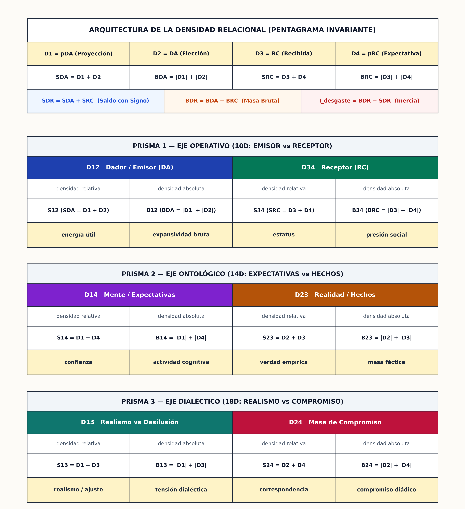<figcaption style="color:#8B0000; font-weight:700; font-size:11.5px; margin-top:8px; text-align:center;">Figura 3. Arquitectura del Espacio Relacional 18D y los 3 Prismas Duales: Estructuración del tetragrama en 4 densidades elementales (D1–D4), saldos globales invariantes (SDR, BDR) y descomposición en los tres ejes fundamentales: Operativo (10D), Ontológico (14D) y Dialéctico (18D).</figcaption></figure>
<p>En el plano operativo, el <strong>Pentagrama Socio-Termodinámico</strong> (Figura 4) articula las diez densidades principales desacoplando la emisión activa (SDA, BDA) del estatus receptivo (SRC, BRC), culminando en los invariantes globales SDR y BDR. La discrepancia analítica entre la energía total movilizada y el flujo neto resultante define formalmente la <strong>Inercia del Desgaste Relacional</strong> (I_{\text{desgaste}} = BDR - SDR), cuantificando la energía disipada en fricción y discrepancia estructural antes de que afloren fracturas abiertas en el grupo.</p>
<figure class="standard-fig" style="page-break-inside:avoid;">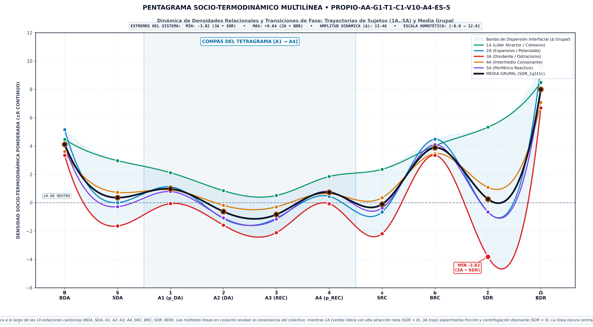<figcaption style="color:#8B0000; font-weight:700; font-size:11.5px; margin-top:8px; text-align:center;">Figura 4. Pentagrama Socio-Termodinámico con las 10 densidades principales: desacoplamiento emisión/recepción y transición al continuo termodinámico; la brecha I_desgaste = BDR − SDR cuantifica la energía disipada en fricción.</figcaption></figure>
<h3>4.5. El Paradigma de VISORD Acuario y la Hidrostática Relacional</h3>
<p>Como culminación perceptiva y experimental de este formalismo socio-termodinámico, el entorno <strong>VISORD Acuario</strong> ofrece una aplicación complementaria de NEXORD que facilita la percepción visual y auditiva integrada de las estructuras de densidad relacional dentro de un diseño multidimensional G &times; T &times; C.</p>
<p>El escenario se modela como un espacio tridimensional continuo definido sobre el volumen cartesiano \mathbf{DA} &times; \mathbf{RECIBE} &times; \mathbf{DENSIDAD}, estructurado analíticamente en tres zonas y estratos característicos:</p>
<ul>
<li><strong>Estrato inferior:</strong> Concentración de tensiones latentes, rechazo mutuo (<code>[Rr]</code>) y desconexión vincular.</li>
<li><strong>Plano medio / neutro:</strong> Nivel basal de flotabilidad social correspondiente al umbral de indiferencia (<code>i¿?! = 41</code>).</li>
<li><strong>Estrato superior:</strong> Región de alta densidad positiva, cohesión armónica (<code>&lt;Ee&gt;</code>) y liderazgo integrador con baja fricción.</li>
</ul>
<p>En este escenario se proyectan distintos valores de densidad relacional en <strong>disyuntiva completa</strong>:</p>
<ul>
<li><strong>Nivel Intra-sujeto:</strong> Proyección diferencial de los distintos pares relacionales y dipolos cinemáticos de un mismo actor frente a sus compañeros.</li>
<li><strong>Nivel Unitario:</strong> Distribución de los sujetos en tanto que agentes dobles: Dadores activos de preferencia (DA) y Receptores de impacto grupal (RECIBE).</li>
<li><strong>Nivel Macro-relacional:</strong> Densidades globales agregadas entre Grupos (G), entre Tiempos (T) y entre Criterios (C).</li>
</ul>
<hr>
<div id="seccion-5-soluciones-graficas"></div><h2>5. Soluciones Gráficas, Espacio Multidimensional GxTyCz y Geometría Invariante</h2>
<h3>5.1. Soluciones Gráficas: Representación Visual y Topografía Relacional</h3>
<p>El VISORD ha surgido de la necesidad de hacer más perceptibles los procesos y las estructuras relacionales resultantes de la investigación. El ojo y el oído humanos están poco preparados para asimilar ristras de números y coeficientes abstractos; en cambio, tienen una enorme capacidad para percibir intuitivamente formas, relieves, cambios tonales, distancias relativas, densidades e iluminaciones.</p>
<p>La formalización matemática de la Sociometría Ordinal de NEXORD ha avanzado, mediante las herramientas del entorno VISORD, en el desarrollo de representaciones visuales e interactivas que facilitan una comprensión rigurosa de los fenómenos de interacción grupal. Como demuestra el desarrollo científico contemporáneo, la parametrización matemática permite hacer perceptibles dinámicas que escapan a la observación intuitiva directa. Este avance ha sido posible gracias a la cuantificación del orden de preferencia mediante la función inversa al rango.</p>
<p>NEXORD articula un conjunto de soluciones gráficas continuas destinadas a restituir el campo relacional sin saturación perceptiva:</p>
<ul>
<li><strong>Planos Factoriales Duales Paralelos (Biplot MESO <em>F</em><sub>1</sub> &times; <em>F</em><sub>2</sub>, espacio dual AFC &#8741; PCA):</strong> Proyección simultánea donde el vector diádico DA &rarr; RC vertebra la posición de cada sujeto con baricentro en el origen (&Delta; = 0.000). En el AFC, sobre la tabla de contingencia de recuentos enteros \mathbb{<em>N</em>}_0 bajo la métrica \chi<sup>2</sup>; en el PCA, sobre la matriz de densidades continuas \pm \mathbb{<em>R</em>} estandarizadas. El contraste evidencia la aportación sustantiva de la socio-termodinámica relacional (Figura 5).</li>
<li><strong>Ejes Slender Verticales 1D:</strong> Proyecciones derivadas de la descomposición espectral y el análisis de correspondencias (Figura 6).</li>
<li><strong>Sociogramas Continuos Tridimensionales (VISORD 3D/4D):</strong> Visualización en el espacio continuo de cuencas de atracción (<code>&lt;Ee&gt;</code>), zonas intermedias de oposición y filamentos de ruptura o fricción (<code>[Rr]</code>), con navegación temporal diacrónica (Figura 7).</li>
<li><strong>Proyección Axonométrica Jerarquizada en el plano 2D de hasta 6 Dimensiones (Algoritmo DIMO):</strong> Para superar la limitación clásica de los planos 2D sin perder la interpretabilidad intuitiva del espacio euclídeo, NEXORD incorpora en su motor el método de proyección axonométrica jerárquica de hasta 6 factores factoriales desarrollado por el autor.</li>
<li><strong>Structurogramas Intergrupales:</strong> Polígonos de sustentación vincular para el análisis morfológico comparativo entre colectivos.</li>
</ul>
<figure class="standard-fig" style="page-break-inside:avoid;">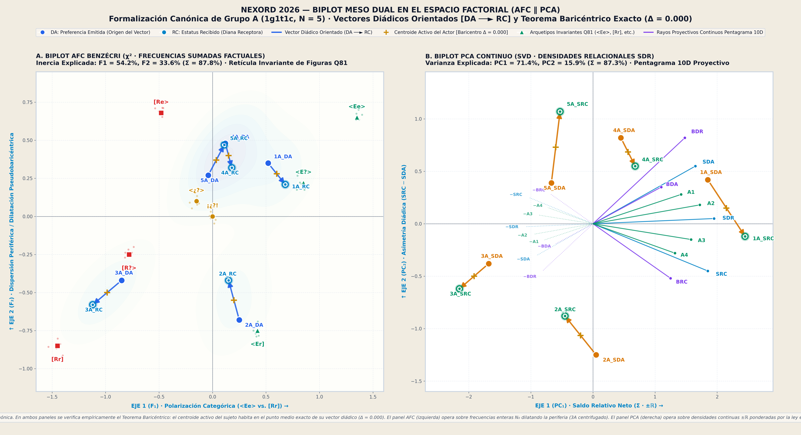<figcaption style="color:#8B0000; font-weight:700; font-size:11.5px; margin-top:8px; text-align:center;">Figura 5. PLANOS DUALES EN PARALELO (Biplot MESO F1 × F2, espacio dual AFC ∥ PCA): el vector diádico DA ⟶ RC con baricentro en el origen (Δ = 0.000). (A) AFC sobre frecuencias de las figuras Q81 en emisores y receptores (contingencia ℕ₀, métrica χ²); (B) PCA sobre las 10 densidades en los mismos sujetos (continuo ±ℝ). El contraste evidencia la aportación sustantiva de la termodinámica relacional.</figcaption></figure>
<figure class="standard-fig" style="page-break-inside:avoid;">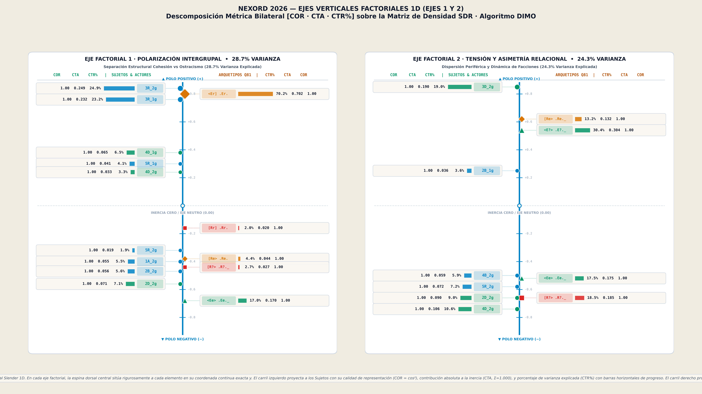<figcaption style="color:#8B0000; font-weight:700; font-size:11.5px; margin-top:8px; text-align:center;">Figura 6. Ejes verticales factoriales 1D (Ejes 1 y 2, matriz SDR): calidad métrica bilateral COR–CTA–CTR de sujetos y figuras Q81, evitando la saturación de los diagramas 2D.</figcaption></figure>
<figure class="standard-fig" style="page-break-inside:avoid;">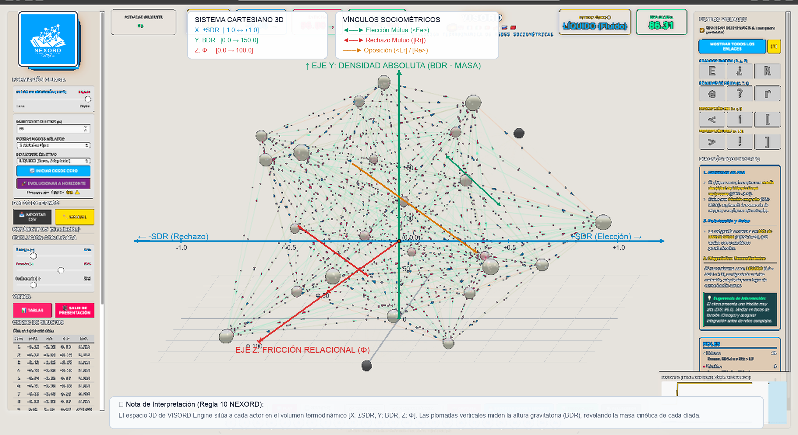<figcaption style="color:#8B0000; font-weight:700; font-size:11.5px; margin-top:8px; text-align:center;">Figura 7. VISORD_demo 3D: fases en la formación interactiva de grupos y resultados termodinámicos numéricos y gráficos en tiempo real; fuerzas de atracción y repulsión en acción.</figcaption></figure>
<h3>5.2. El Espacio Multidimensional GxTyCz</h3>
<p>NEXORD está configurada como una Plataforma de Investigación Sociométrica Psicosocial que trasciende la concepción tradicional del test sociométrico como una fotografía estática, aislada y unidimensional. La plataforma concibe el campo de las interacciones humanas como un espacio de investigación tensorial abierto, continuo y parametrizable, formalizado sobre el producto cartesiano G &times; T &times; C donde el investigador puede diseñar desde estudios puntuales de una sola sociomatriz hasta ambiciosos programas longitudinales y comparativos intergrupales. La formulación matricial se articula sobre cuatro ejes fundamentales:</p>
<ol>
<li><strong>Eje G — Colectivos y Grupos (G = {<em>G</em><sub>1</sub>, <em>G</em><sub>2</sub>, &hellip;, <em>G</em><sub>x</sub>}):</strong></li>
</ol>
<p>Transversalidad estructural. El sistema admite operar tanto sobre un único colectivo natural como sobre constelaciones de grupos independientes, departamentos de una misma organización, redes de aulas o células operativas en misiones críticas. Este eje habilita la comparación morfológica intergrupal (mediante distancias geodésicas en variedades de Grassmann) sin forzar interacciones cruzadas artificiales entre miembros que pertenecen a entornos convivenciales distintos.</p>
<ol>
<li><strong>Eje T — Oleadas Temporales Longitudinales (T = {<em>T</em><sub>1</sub>, <em>T</em><sub>2</sub>, &hellip;, <em>T</em><sub>y</sub>}):</strong></li>
</ol>
<p>Investigaciones longitudinales, donde el seguimiento sociométrico de grupos a lo largo del tiempo permite evaluar su evolución y contrastar los efectos de situaciones, de incidentes o el resultado de intervenciones estratégicas programadas. NEXORD puede monitorizar la evolución diacrónica de la cohesión, la velocidad de sedimentación del estatus, la inercia o mutabilidad del liderazgo, el enquistamiento o disolución de tensiones latentes (<code>[Rr]</code>) y la trayectoria cinemática de los actores en el espacio de densidades. Esta perspectiva longitudinal permite diagnosticar si el colectivo evoluciona hacia un régimen de fluidez adaptativa o si se precipita hacia trampas de rigidez, polarización o desgaste estructural antes de que se produzcan fracturas abiertas.</p>
<ol>
<li><strong>Eje C — Criterios Sociométricos Plurales (C = {<em>C</em><sub>1</sub>, <em>C</em><sub>2</sub>, &hellip;, <em>C</em><sub>z</sub>}):</strong></li>
</ol>
<p>Diversidad de criterios valorativos. Las preferencias y expectativas en las relaciones diádicas no son estáticas, pueden variar mucho según se consideren distintos criterios de valoración que se utilicen: operacionales, motivacionales, cognitivos, socioafectivos, de liderazgo, etc.:</p>
<ul>
<li><strong>Criterios instrumentales o de tarea (<em>C</em><sub>1</sub>):</strong> competencia técnica, eficacia percibida, coordinación operativa y reparto de cargas de trabajo.</li>
<li><strong>Criterios socioafectivos o expresivos (<em>C</em><sub>2</sub>):</strong> simpatía, afinidad emocional, confianza interpersonal y convivencia informal.</li>
<li><strong>Criterios de estrés o liderazgo en crisis (<em>C</em><sub>3</sub>):</strong> fiabilidad bajo presión, arbitraje en el conflicto y delegación de autoridad en situaciones de incertidumbre.</li>
</ul>
<p>La plataforma calcula matrices de discrepancia inter-criterio y coeficientes de correlación ordinal que desvelan fracturas invisibles al análisis clásico: sujetos altamente demandados en la tarea pero aislados afectivamente, o líderes informales de gran arrastre socioafectivo, pero desconectados de los objetivos operativos del grupo.</p>
<ol>
<li><strong>Eje Z — Variables Contextuales y Psicosociales Complementarias (<em>Z</em>):</strong></li>
</ol>
<p>El puente analítico entre la topología relacional y los atributos individuales de los actores. Aunque el cálculo sociométrico intrínseco opera exclusivamente sobre las preferencias de ordenación pura (la estructura del vínculo), NEXORD integra dos baterías estándar de calibración:</p>
<ul>
<li><strong>Batería Sociodemográfica <em>V</em><sub>10</sub>:</strong> diez variables contextuales (en 3 modalidades homogéneas por ítem) que sitúan al actor en su coordenada biográfica, de rol formal, antigüedad o estatus institucional.</li>
<li><strong>Batería de Atribución Adjetival Grupal <em>A</em><sub>16</sub>:</strong> dieciséis adjetivos agrupados en 4 factores (temático, funcional, cognitivo, afectivo) (AAG; Vicente, Cornejo & Barbero, 2006), evaluados en escala par (1–8, sin punto medio) para mapear el clima cognitivo-emocional y la atmósfera valorativa proyectada sobre el grupo.</li>
</ul>
<p>Proyectadas como variables ilustrativas o suplementarias en los planos factoriales duales (AFC &#8741; PCA), las variables <em>Z</em> enriquecen la interpretación clínica sin alterar la pureza métrica del campo relacional. Asimismo, el mantenimiento de este estándar común fundamenta el marco de referencia del Banco Sociométrico (BSOC) para garantizar la comparabilidad retrospectiva e histórica de sociomatrices provenientes de épocas, culturas y contextos organizacionales diversos.</p>
<p>La batería <em>A</em><sub>16</sub> se estructura en cuatro factores principales que agrupan los dieciséis adjetivos normativos del sistema:</p>
<ul>
<li><strong>Temático (TEMA):</strong> <em>claro, coherente, flexible, consensuado</em>.</li>
<li><strong>Funcional (FUNC):</strong> <em>productivo, ordenado, activo, ejemplar</em>.</li>
<li><strong>Cognitivo (COGN):</strong> <em>abierto, crítico, perceptivo, expresivo</em>.</li>
<li><strong>Afectivo (AFEC):</strong> <em>amistoso, leal, colaborador, tolerante</em>.</li>
</ul>
<p>Por cada adjetivo, la división dicotómica de la valoración del grupo permite detectar, mediante los centroides de densidad de ambos extremos, sensibilidades distintivas en la percepción de la Actividad Grupal, inclusive cruzada con las variables sociodemográficas.</p>
<figure class="standard-fig" style="page-break-inside:avoid;">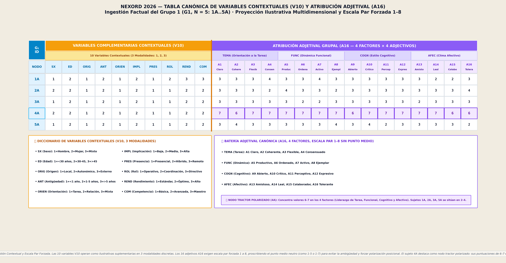<figcaption style="color:#8B0000; font-weight:700; font-size:11.5px; margin-top:8px; text-align:center;">Tabla 4. Cuadro de la batería de 10 variables contextuales (V₁₀, 3 modalidades) y 16 adjetivos de atribución grupal (A₁₆, 4 × 4, escala par 1–8 sin puntuación media).</figcaption></figure>
<p>El despliegue aplicado del espacio G &times; T &times; C se canaliza a través de los 10 dominios ecosistémicos de calibración (Tabla 5), que fijan los parámetros estructurales del campo —inercia relacional &alpha; y tasa de decaimiento &gamma;— junto con el foco psicosocial y los criterios estándar de elección, según el contexto institucional de aplicación (educativo, familiar, deportivo, comunitario, misiones críticas, terapéutico, laboral, institucional, militar y ecológico-penitenciario).</p>
<figure class="standard-fig" style="page-break-inside:avoid;"><figcaption style="color:#8B0000; font-weight:700; font-size:11.5px; margin-top:8px; text-align:center;">Tabla 5. Los 10 dominios ecosistémicos de aplicación con parametrización estructural (α, γ), foco psicosocial y criterios de elección.</figcaption></figure>
<h3>5.3. PCA Multigrupo y Distancia Geodésica en Variedades de Grassmann Gr(k, N)</h3>
<p>Para comparar colectivos sin forzar interacciones cruzadas artificiales, cada grupo se proyecta como un subespacio <em>k</em>-dimensional dentro de \mathbb{<em>R</em>}<sup><em>N</em></sup>. A partir de los ángulos principales de Jordan \cos(&theta;_m) = &sigma;_m(<em>U</em><sub>1</sub><sup>T</sup> <em>U</em><sub>2</sub>), se calcula la distancia geodésica invariante de escala:</p>
<table style="width:100%; border:none; margin:14px auto; background-color:#F8FAFC; border-left:3px solid #8B0000; border-collapse:collapse; box-shadow:none;"><tr style="border:none; background:transparent;"><td style="border:none; text-align:center; padding:8px 14px; font-family:'Cambria Math', 'Times New Roman', serif; font-size:15px; vertical-align:middle;">d_{Gr}(U_1, U_2) = &radic;[ &sum; <em>&theta;<sub>m</sub></em>&sup2; ]</td><td style="border:none; width:55px; text-align:right; padding:6px 14px; font-family:'Inter', sans-serif; font-weight:700; color:#8B0000; font-size:14px; vertical-align:middle;">(20)</td></tr></table>
<p>Esta métrica determina rigurosamente (Figura 8) si dos grupos comparten la misma morfología relacional con independencia de las diferencias en sus tamaños muestrales. Aunque el acuerdo entre observadores es un componente apreciable de confiabilidad de los hallazgos de estructuras invariantes, es la persistencia y constancia temporal de estas configuraciones en el espacio geométrico lo que permite contrastar la solidez de las estructuras relacionales frente a variaciones coyunturales o fluctuaciones aleatorias.</p>
<figure class="standard-fig" style="page-break-inside:avoid;"><figcaption style="color:#8B0000; font-weight:700; font-size:11.5px; margin-top:8px; text-align:center;">Figura 8. Plano factorial comparativo intergrupal (G1 vs G2) y structrogramas diacrónicos; la distancia geodésica en Gr(k, N) cuantifica la morfología relacional compartida.</figcaption></figure>
<p>En los individuos, la matriz de interdistancias euclídeas de rangos <em>d</em><sub>DA</sub> / <em>d</em><sub>RC</sub> (Tabla 6) documenta sobre el corpus G2T1C1 la ley de asimetría relacional: la dispersión receptora media (4.84; DT = 0.64) supera sistemáticamente a la emisora (4.15; DT = 0.49), y los diagnósticos posicionales por nodo —de la consonancia isométrica de 5A (&Delta; = -0.09) al desbalance máximo de 3A (&Delta; = -1.39)— ilustran la granularidad del diagnóstico socio-termodinámico.</p>
<figure class="standard-fig" style="page-break-inside:avoid;">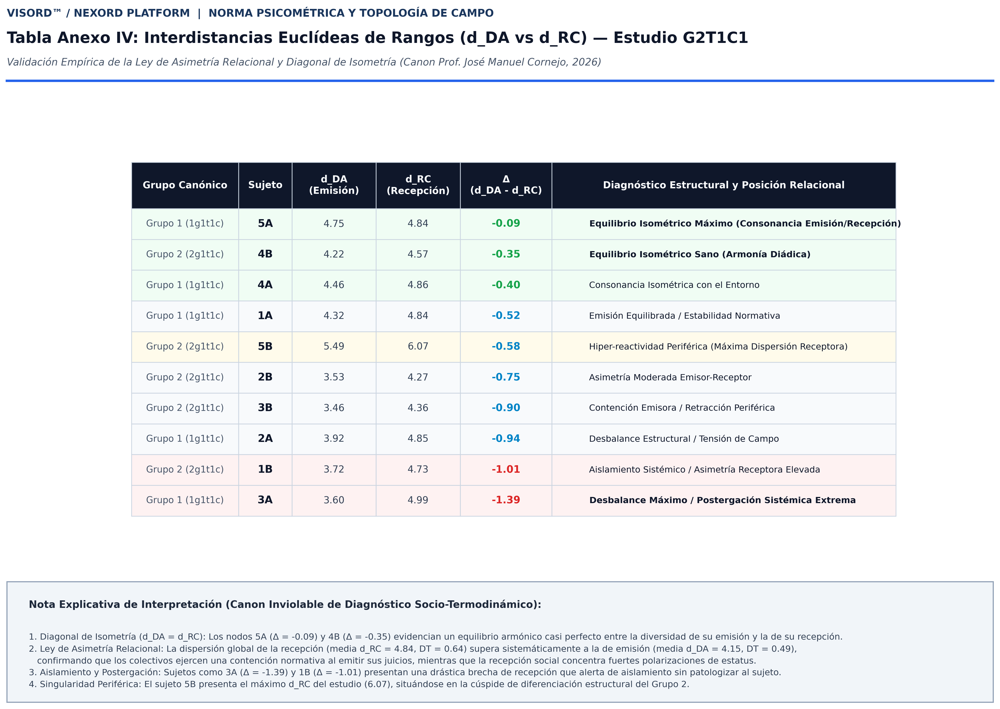<figcaption style="color:#8B0000; font-weight:700; font-size:11.5px; margin-top:8px; text-align:center;">Tabla 6. Matriz numérica de interdistancias euclídeas de rangos (d_DA, d_RC, Δ = d_DA − d_RC) con diagnóstico estructural por sujeto, corpus G2T1C1: validación empírica de la ley de asimetría relacional.</figcaption></figure>
<hr>
<div id="seccion-6-investigacion-experimental"></div><h2>6. Investigación Experimental: Sociometría Dialéctica, Sociometría Sintética y Cognición Triádica</h2>
<h3>6.1. Monitorización Experimental en el Laboratorio Presencial</h3>
<p>La plataforma está diseñada para la monitorización de investigaciones experimentales complejas en laboratorio presencial: seguimiento diacrónico de tareas de alta interdependencia, simulación de crisis y evaluación continua de intervenciones en dinámicas de grupos reducidos.</p>
<h3>6.2. Sociometría Dialéctica y Estudio de Dilemas Sociales</h3>
<p>En situaciones de cooperación y conflicto (p. ej., dilemas de bienes comunes o dilema del prisionero iterado), NEXORD cuantifica el desacople entre las expectativas cognitivas y la conducta relacional observable, capturando la emergencia de alianzas, deserciones y normas de reciprocidad. La aplicación a un grupo del formato ORBIT como PRE y/o POST en diseños experimentales se revela como una buena estrategia de contrastación en VD y VI.</p>
<h3>6.3. Percepción Multimodal: Modelo del Iceberg y Sonificación Hidrodinámica</h3>
<p>NEXORD implementa el modelo del iceberg en dos vertientes:</p>
<ul>
<li><strong>Representación Gráfica 3D:</strong> Hace emerger a la superficie visual la estructura sumergida de tensiones, rechazos latentes y lazos informales que no se manifiestan en la jerarquía formal.</li>
<li><strong>Sonificación Hidrodinámica:</strong> Convierte densidades y fricciones en flujos tonales continuos, permitiendo la monitorización auditiva de estados de turbulencia o calma colectiva sin sobrecargar la atención visual del analista.</li>
</ul>
<p>La capacidad de calcular las densidades del campo para colectivos de gran tamaño sin pérdida de continuidad analítica resuelve una limitación histórica de la sociometría tradicional, que solía restringirse a grupos pequeños (<em>N</em> &lt; 30) por la saturación de los sociogramas clásicos (Figura 9).</p>
<figure class="standard-fig" style="page-break-inside:avoid;">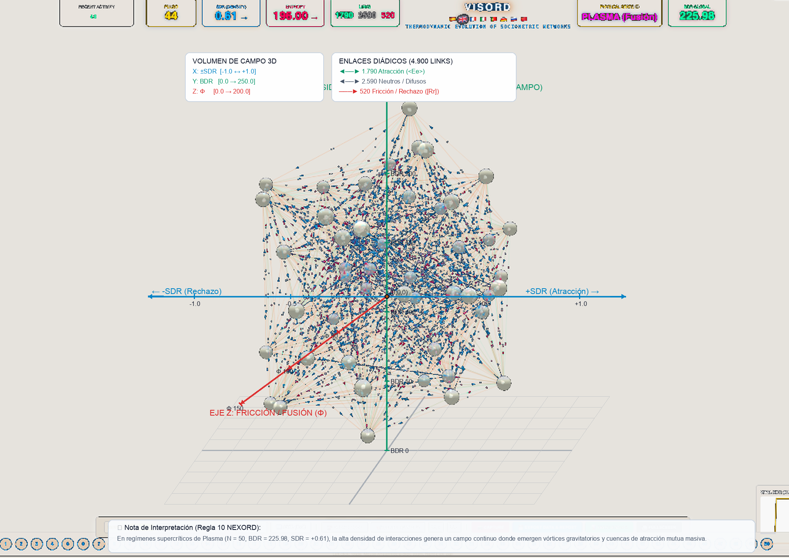<figcaption style="color:#8B0000; font-weight:700; font-size:11.5px; margin-top:8px; text-align:center;">Figura 9. Campo continuo de interacción y modelo del iceberg en un colectivo de N = 50 sujetos: la base relacional sumergida hecha visible.</figcaption></figure>
<h3>6.4. El Corpus CULTURAL como Entorno de Reactividad Cero</h3>
<p>El análisis de textos dramáticos y literarios consolidados ofrece una fuente no reactiva de primer orden para la modelización psicosocial. Al transponer los guiones y obras a sociomatrices objetivas (p. ej., <em>Doce hombres sin piedad</em> de Reginald Rose, <em>La casa de Bernarda Alba</em> de Federico García Lorca, <em>El señor de las moscas</em> de William Golding), NEXORD analiza dinámicas grupales complejas, puntos de inflexión y crisis de liderazgo en sistemas cerrados sin introducir sesgos de reactividad del observador ni recurrir a datos inferidos por observación.</p>
<h3>6.5. Cognición Social Triádica: Expectativas Proyectadas αE y ωE</h3>
<p>NEXORD incorpora a la sociometría de las metapercepciones y expectativas diádicas el nivel de las metapercepciones triádicas. Al preguntar a cada participante sobre las preferencias que cree que expresarán los sujetos que él mismo ha colocado en su primer y último puesto en la lista, se configura un espacio de cognición social triádica articulado por dos sensores fundamentales:</p>
<ul>
<li><strong>Mejor Valorado (&alpha; <em>E</em>):</strong> La expectativa de cada sujeto sobre quién será el miembro más elegido por el colectivo.</li>
<li><strong>Peor Valorado (&omega; <em>E</em>):</strong> La expectativa de cada sujeto sobre quién concentrará el mayor rechazo o descarte grupal.</li>
</ul>
<p>Estas métricas cuantifican la precisión de lectura de campo o lucidez sistémica (Tsankova & Tair, 2021) mediante la distancia euclídea entre la expectativa emitida y la realidad colectiva observada: &Delta;_&alpha; = ||&alpha; <em>E</em> - \text{Elección Real}(&alpha;)|| y &Delta;_&omega; = ||&omega; <em>E</em> - \text{Elección Real}(&omega;)||.</p>
<p>Sujetos con &Delta;_&alpha; &asymp; 0 y &Delta;_&omega; &asymp; 0 operan como sensores naturales de la dinámica del grupo, cuya perspectiva anticipa cambios de fase estructurales.</p>
<h3>6.6. Simulación Sociométrica In Silico</h3>
<p>La realización concreta de un estudio sociométrico real comporta dificultades, trabajo y tiempo considerables. Para desplegar la investigación metodológica, la formación investigadora y la calibración instrumental sin esa carga —y sin exposición alguna de sujetos humanos—, NEXORD integra un algoritmo de simulación sociométrica in silico, en la línea de lo que la Biología Sintética o la Epidemiología Computacional representan para sus respectivos campos: no se trata de inventar ruido estadístico desconectado de la naturaleza humana, sino de extrapolar las leyes topológicas de la sociometría —sus valencias y dinámicas reales— para modelar organizaciones plausibles y desafiantes que fuerzan a los algoritmos preventivos de la plataforma a demostrar su fiabilidad in vitro antes de actuar sobre tejido social vivo. La simulación ya no es un dibujo: es una biografía social reproducible.</p>
<p>El investigador define el escenario deseado en el espacio de diseño G &times; T &times; C (grupos, oleadas temporales, criterios con sus consignas literales, tamaños muestrales y dominio de contexto), mediante un archivo estándar de parámetros o mediante asistente interactivo guiado, y gobierna la morfología del colectivo mediante familias de moduladores paramétricos continuos:</p>
<ul>
<li><strong>(a) Termodinámicos:</strong> densidad objetivo de valencia, saturación de nodos estrella, tolerancia de convergencia.</li>
<li><strong>(b) De gravedad cinética y ensamblaje:</strong> cohesión, transparencia metaperceptiva, sesgo intergrupal, ruido térmico, reciprocidad, triangulación y facciones latentes.</li>
<li><strong>(c) Temporales longitudinales:</strong> inercia estructural, olvido de agravios y ruptura exógena.</li>
<li><strong>(d) Contextuales:</strong> baterías <em>V</em><sub>10</sub> y <em>A</em><sub>16</sub> y el catálogo de los 10 dominios de calibración &alpha; / &gamma; (Tabla 5).</li>
</ul>
<p>La reproducibilidad es absoluta: la semilla pseudoaleatoria garantiza la regeneración bit a bit de cualquier corpus, y el tamaño de lote habilita réplicas Monte Carlo. Cada simulación se identifica con una clave estandarizada (<code>SIMUL-...</code>) y codifica sus sujetos con las etiquetas posicionales formales (<code>1A1a</code>...), preservando la anonimidad por diseño; SIMUL se sitúa así junto a PROPIO, REAL y CULTURAL en el catálogo de las cuatro categorías operativas de datos de la plataforma:</p>
<ul>
<li><strong>REAL (Corpus Empíricos de Campo):</strong> Datos obtenidos de colectivos humanos vivos (organizaciones laborales, aulas educativas, equipos deportivos o unidades asistenciales), recogidos mediante los protocolos de captura web de la plataforma bajo estricto consentimiento informado, salvaguarda de privacidad y compromiso de uso exclusivamente formativo y no punitivo (§6.7 y §7.1). Esta modalidad faculta al algoritmo de simulación para estimar por defecto —si fuera conveniente o necesario— los valores de las Variables Contextuales (<em>V</em><sub>10</sub>) y de los Adjetivos de Atribución Grupal (<em>A</em><sub>16</sub>) a partir de los datos sociométricos recogidos y la información complementaria aportada por el Investigador Principal, cuando dichos datos de contexto no hayan podido ser recabados directamente en el campo.</li>
<li><strong>PROPIO (Corpus del Investigador):</strong> Sociomatrices y diseños singulares aportados directamente por el usuario, docente o consultor para su explotación particular, docencia o intervención específica en sus propios grupos naturales; permite al simulador recoger los datos diseñados por el propio Investigador Principal y, si es conveniente, completar datos faltantes para garantizar la continuidad analítica del estudio.</li>
<li><strong>CULTURAL (Laboratorios de Reactividad Cero):</strong> Redes relacionales extraídas de textos dramáticos, guiones cinematográficos u obras literarias de referencia (<em>Doce hombres sin piedad</em>, <em>La casa de Bernarda Alba</em>, etc.), que representan sistemas relacionales cerrados y exhaustivamente documentados donde las dinámicas de grupo se despliegan con reactividad cero del observador (§6.4); en esta modalidad, el sistema revisa la codificación realizada y completa lo necesario para el análisis.</li>
<li><strong>SIMUL (Simulación In Silico):</strong> Escenarios sintéticos generados algorítmicamente gobernando paramétricamente las leyes del campo (atracción, fricción, reciprocidad, clustering), empleados para la calibración del instrumental, el desarrollo metodológico y la formación investigadora sin exposición ni sobrecarga de participantes humanos.</li>
</ul>
<p>El circuito operativo articula cuatro eslabones:</p>
<ol>
<li>Definición del escenario.</li>
<li>Generación del eslabón factual de simulación por el algoritmo de simulación.</li>
<li>Ingestión por el orquestador factorial (255 indicadores, matrices SMIb, proyecciones AFC/PCA y geometría de Grassmann).</li>
<li>Proyección VISORD 3D/4D y transferencia a la web promocional.</li>
</ol>
<p>Los corpus simulados forman, asimismo, el banco de referencia (<em>ground truth</em>) sobre el que los indicadores del sistema (IDA, &Phi;, ICE y las densidades del Pentagrama) pueden contrastarse bajo regímenes de parámetros conocidos a priori y el sustrato de las visualizaciones públicas del ecosistema VISORD.</p>
<h3>6.7. Captura de Campo Asistida por Web</h3>
<p>NEXORD permite la realización logística —práctica, rápida, personalizada y con alto control de validez— de la recogida de respuestas sociométricas en completos y complejos diseños de estudio de campo, administrados íntegramente vía web. El Investigador Principal es el único interlocutor y último responsable del estudio: diseña con NEXORD la configuración concreta (grupos simultáneos, oleadas temporales de recogida longitudinal, criterios y consignas, censos de miembros y canales de contacto), programa el momento de conexión y dispensa a cada participante un protocolo o cuestionario aleatorizado (<code>.html</code>) que cumplimenta en privado desde su propio smartphone.</p>
<p>La infraestructura integra controles de validez logística en cada eslabón: solicitud previa de consentimiento informado —y, para menores, la autorización expresa de tutores—; fotografías o avatares exclusivos para el reconocimiento de las personas y listas de nombres aleatorizadas que neutralizan sesgos de orden; control de los tiempos de respuesta y repesca de miembros retrasados; y, al cierre del estudio, la entrega de un código privado e intransferible que abre a cada participante el acceso a su report personal: los resultados generales de su grupo, sus resultados individuales y sugerencias constructivas de actuación o de reestructuración de actitudes y tareas, en coherencia con los derechos de devolución no estigmatizante (§7.3).</p>
<p>En conjunto, la plasticidad sociométrica que NEXORD pone en manos del investigador es muy amplia —cualquier configuración del espacio G &times; T &times; C, en cualquiera de los modos de adquisición descritos— y puede aportar valiosos conocimientos sobre invariantes relacionales que hasta ahora han resultado difíciles de aislar.</p>
<h3>6.8. Horizontes de Futuro: Hacia una Sociometría Científica de mayor amplitud y la Física de lo Social a Gran Escala</h3>
<p>El desarrollo histórico de la sociometría, desde los trabajos pioneros de J. L. Moreno en los años treinta hasta la formalización no paramétrica de NEXORD, ha estado enfocado primordialmente en el nivel intra-grupal: el individuo como unidad electora y el grupo inmediato como espacio de interacción.</p>
<p>Sin embargo, los grandes retos de la convivencia en las sociedades complejas —desde la fricción interdepartamental en organizaciones hasta las fracturas territoriales o los alineamientos geopolíticos— exigen dar un salto cualitativo: <strong>tratar al grupo entero como unidad relacional activa dentro de una Sociometría Ordinal Intergrupal (SOI)</strong>. No se trata de impartir doctrina, sino de abrir horizontes hacia una sociometría científica plenamente madura, capaz de abordar la complejidad de los sistemas relacionales a gran escala.</p>
<h4 style="color:#8B0000; font-weight:700; font-size:13px; margin-top:22px; margin-bottom:8px; page-break-after:avoid;">Sustrato cognitivo-emocional e intergrupal</h4>
<p>Las relaciones entre colectivos rara vez se deciden exclusivamente sobre balances económicos o acuerdos contractuales explícitos. Se articulan sobre un denso sustrato de representaciones sociales, estereotipos compartidos, simpatías identitarias y percepciones mutuas de amenaza o liderazgo.</p>
<p>La psicología social clásica ya intuyó este territorio en investigaciones pioneras de enorme calado:</p>
<ul>
<li>Los experimentos de campo de <strong>Muzafer Sherif</strong> en las colonias de vacaciones (<em>Robbers Cave</em>), que evidenciaron con qué facilidad dos colectivos en competición caen en la hostilidad mutua y cómo solo las <em>metas supraordenadas</em> logran reconfigurar el campo relacional.</li>
<li>Las aportaciones fundamentales de <strong>Leon Festinger</strong> sobre los procesos de comparación social, que explican la génesis del <strong>favoritismo intragrupal y la discriminación exogrupal</strong>: la necesidad de los grupos de compararse con otros para salvaguardar una identidad positiva, generando mecanismos espontáneos de inclusión preferente hacia los propios y de postergación hacia los ajenos.</li>
<li>Las formulaciones sobre el <em>grupo mínimo</em> y la categorización social, que demostraron que basta una distinción simbólica mínima para que estos sesgos de diferenciación intergrupal se activen inmediatamente.</li>
</ul>
<p>Lo que aquellas investigaciones demostraron en el laboratorio encuentra en la metodología ordinal de NEXORD su instrumento natural de captura a gran escala: las comunidades humanas no miden sus afectos ni sus rivalidades con escalas métricas artificiales; <strong>ordenan sus preferencias heurísticamente</strong>. El favoritismo intragrupal y el recelo hacia el exogrupo son, en esencia, <strong>operaciones ordinales de jerarquización social</strong>: sabemos con precisión a quién colocamos en primer lugar como aliado natural, a quién situamos en la periferia de nuestra confianza y hacia quién dirigimos el rechazo.</p>
<h4 style="color:#8B0000; font-weight:700; font-size:13px; margin-top:22px; margin-bottom:8px; page-break-after:avoid;">Modelado termodinámico del colectivo</h4>
<p>La extensión intergrupal plantea un interrogante técnico evidente: los colectivos no tienen una «cabeza única» que responda un test. Es aquí donde los conceptos de la física estadística y la termodinámica social dejan de ser una metáfora para convertirse en herramienta operativa:</p>
<ol>
<li><strong>La Entropía Interna del Colectivo Emisor:</strong></li>
</ol>
<p>   Mediante el motor intra-grupal de NEXORD, es posible agregar los rankings individuales de un colectivo para obtener su consenso mediano (Kemeny-Mallows), cuantificando al mismo tiempo su dispersión o <em>entropía interna</em> (S). Un grupo internamente cohesionado (baja entropía) actúa con alta inercia relacional, proyectando hacia el exterior un vector de alianzas nítido y firme. Por el contrario, un grupo fragmentado (alta entropía) emite una señal difusa y volátil.</p>
<ol>
<li><strong>Temperatura Social y Transiciones de Fase:</strong></li>
</ol>
<p>   La polarización y el extremismo en las atribuciones intergrupales permiten modelar la <em>temperatura social</em> del sistema. A temperaturas moderadas, las alianzas y negociaciones son fluidas; cuando la temperatura de conflicto rebasa un umbral crítico, el sistema experimenta <em>transiciones de fase</em>, colapsando de golpe en bloques antagónicos y trincheras rígidas.</p>
<ol>
<li><strong>Asimetría de Nexo y Actores de Mediación:</strong></li>
</ol>
<p>   La asimetría ordinal |<em><em>R</em></em><sub>ij</sub> - <em><em>R</em></em><sub>ji</sub>| detecta de inmediato relaciones de dominación, dependencia o falta de correspondencia entre comunidades, señalando asimismo a aquellos colectivos que, al recibir reconocimiento transversal desde posiciones enfrentadas, están llamados a desempeñar una función de puente o mediación.</p>
<h4 style="color:#8B0000; font-weight:700; font-size:13px; margin-top:22px; margin-bottom:8px; page-break-after:avoid;">Perspectivas en sistemas complejos</h4>
<p>La Sociometría Ordinal Intergrupal no pretende agotar la inmensa complejidad de los lazos humanos, sino brindar un marco metodológico libre de supuestos métricos espurios para investigarla.</p>
<p>Dejar constancia de estas posibilidades en el presente Manifiesto responde al anhelo de tender un puente entre la tradición experimental psicosocial y las herramientas contemporáneas de los sistemas complejos. Es una invitación abierta para que las futuras generaciones de investigadores tomen el testigo y apliquen esta lente a la comprensión y mejora de la convivencia humana, desde la escala comunitaria hasta el escenario internacional.</p>
<hr>
<div id="seccion-7-gobernanza-institucional"></div><h2>7. Gobernanza Institucional, Ética por Diseño y Ciencia Abierta</h2>
<h3>7.1. Ética por Diseño y Uso Estrictamente No Punitivo</h3>
<p>NEXORD incorpora salvaguardas éticas en el núcleo de su diseño algorítmico (<em>Ethics by Design</em>). El sistema prohíbe explícitamente el uso de la sociometría para fines punitivos, expedientes disciplinarios, despidos o listas de descarte. Cualquier procesamiento sobre colectivos reales (categoría REAL) exige la autenticación, tutela y responsabilidad de un Investigador Principal (IP) debidamente acreditado profesional e institucionalmente.</p>
<h3>7.2. Ciencia Abierta, Protocolo Clélie y Custodia en el Banco Sociométrico (BSOC)</h3>
<p>En cumplimiento estricto de los principios de Ciencia Abierta y Datos FAIR (<em>Findable, Accessible, Interoperable, Reusable</em>), los fundamentos metodológicos y matemáticos de la plataforma son de acceso público.</p>
<p>Los datos de campo se anonimizan bajo códigos alfanuméricos normalizados (<code>1A1a</code> … <code>5A1a</code>) y se protegen mediante sellado criptográfico inmutable con algoritmo SHA3-512 (Protocolo Clélie), bajo la custodia académica del Banco Sociométrico (BSOC).</p>
<p>El BSOC tiene su origen en la idea de dar un uso retrospectivo a los numerosísimos estudios sociométricos realizados anteriormente: el BSOC nace para preservar y poner en valor el amplio patrimonio empírico generado a lo largo de décadas de investigación psicosocial, permitiendo que sociomatrices procedentes de estudios locales e históricos puedan integrarse en investigaciones retrospectivas, comparativas y metaanálisis. Consolidada la donación de sociomatrices al banco bajo el protocolo estándar SMIb —que unifica ambos formatos de captura (MORENO y ORBIT)—, ese acervo histórico se convierte en capital científico reutilizable bajo los principios FAIR, preservando la inversión empírica de generaciones previas de investigadores.</p>
<p>La Plataforma NEXORD se materializa en cuatro elementos integrados:</p>
<ol>
<li>La suite computacional en código Python que implementa la totalidad del aparato formal (en revisión y mejora continua, distribuida bajo acreditación institucional conforme a §7.4).</li>
<li>El presente Manifiesto Científico, de acceso abierto con DOI en Zenodo/CERN.</li>
<li>El artículo de primicia académica sometido a revista especializada (<em>Psicothema</em>).</li>
<li>La página web promocional alojada en GitHub Pages, con su ecosistema de animaciones VISORD 3D/4D —piezas interactivas de carácter divulgativo y en parte lúdico, sin relación directa con el software operativo, aunque utilizables como visualizadores interactivos de estudios simulados o reales debidamente anonimizados—. La interfaz web organiza las nueve estaciones del modelo en un dial radial interactivo de navegación.</li>
</ol>
<h3>7.3. Derechos de los Participantes y Devolución Constructiva</h3>
<p>Cada participante dispone de credenciales temporales individuales para verificar el procesamiento adecuado de sus propios datos, sin acceso a información individualizada de terceros.</p>
<p>La re-identificación de nodos queda reservada exclusivamente al Investigador Principal en contextos de apoyo psicológico o mediación formativa. Toda devolución de resultados tiene carácter reflexivo, pedagógico y constructivo, orientada al bienestar integral y al desarrollo saludable del colectivo.</p>
<h3>7.4. Gestión del riesgo de doble uso y acreditación ética</h3>
<p>La información sociométrica refleja dinámicas interpersonales de alta sensibilidad y no debe instrumentalizarse para prácticas de exclusión o clasificación discriminatoria. NEXORD adopta salvaguardas de seguridad por diseño (<em>security by design</em>): aunque la formulación metodológica y teórica es de acceso abierto bajo licencia CC BY 4.0, el acceso operativo a la suite de investigación sobre participantes humanos requiere acreditación institucional y el compromiso formal de los investigadores de aplicar los datos con fines formativos, preventivos y no punitivos.</p>
<p>Conviene precisar el alcance de esta declaración. El presente Manifiesto es un documento puramente programático —la exposición de las características teóricas, metodológicas y pragmáticas del proyecto—: ni él, ni la suite computacional, ni sus algoritmos son objeto de patentes restrictivas; el Manifiesto se difunde abiertamente bajo licencia CC BY 4.0, y las salvaguardas éticas buscan regular el acceso operativo al instrumento sobre colectivos reales, no restringir la difusión del conocimiento científico.</p>
<hr>
<div id="seccion-anexos"></div><div id="seccion-anexos-es"></div><div id="8-anexos-tecnicos-formalizados"></div><h2 id="seccion-8">8. Anexos Técnicos Formalizados</h2>
<h3>8.1. Anexo I: Matrices Duales (SMIb y SMIa, Retícula Q81)</h3>
<p>Formalización de la correspondencia biyectiva entre el orden de asignación alfanumérico y las figuras diádicas computables en la retícula fundamental Q81.</p>
<figure class="standard-fig" style="page-break-inside:avoid;">
<!-- Cuadro Explicativo Sintaxis SMIa Concentrada -->
<div style="margin:16px auto; max-width:650px;">
  <div style="font-weight:800; font-size:15px; color:#0B132B; margin-bottom:8px; font-family:-apple-system, BlinkMacSystemFont, 'Segoe UI', Roboto, sans-serif; letter-spacing:0.5px;">SMIa &nbsp; Sintaxis</div>
  <table style="width:100%; border-collapse:collapse; font-family:-apple-system, BlinkMacSystemFont, 'Segoe UI', Roboto, sans-serif; font-size:13px; text-align:center; border:2px solid #000; box-shadow:0 2px 8px rgba(0,0,0,0.08); margin-bottom:10px;">
    <thead>
      <tr>
        <th rowspan="2" style="background-color:#FFFFFF; border:1.5px solid #000; padding:6px 8px; font-weight:800; color:#000; width:18%;">tipo</th>
        <th colspan="2" style="background-color:#38BDF8; color:#000; border:1.5px solid #000; padding:6px 8px; font-weight:800; font-size:14px;">DA</th>
        <th colspan="2" style="background-color:#00C49F; color:#000; border:1.5px solid #000; padding:6px 8px; font-weight:800; font-size:14px;">RECIBE</th>
        <th rowspan="2" style="background-color:#FFFFFF; border:1.5px solid #000; padding:6px 8px; font-weight:800; color:#000; width:14%;">code</th>
      </tr>
      <tr style="font-size:11px; font-weight:700; color:#000; background-color:#F8FAFC;">
        <th style="border:1.5px solid #000; padding:4px 6px;">PERCEPCION</th>
        <th style="border:1.5px solid #000; padding:4px 6px;">EFECTIVA</th>
        <th style="border:1.5px solid #000; padding:4px 6px;">EFECTIVA</th>
        <th style="border:1.5px solid #000; padding:4px 6px;">PERCEPCION</th>
      </tr>
    </thead>
    <tbody>
      <tr style="background-color:#FFEDD5; color:#000; font-weight:700;">
        <td style="border:1.5px solid #000; padding:6px; font-weight:600; text-align:left; padding-left:12px;">elige</td>
        <td style="border:1.5px solid #000; padding:6px; font-size:16px; font-family:monospace;">&lt;</td>
        <td style="border:1.5px solid #000; padding:6px; font-size:15px; font-weight:800;">E</td>
        <td style="border:1.5px solid #000; padding:6px; font-size:15px; font-weight:800;">e</td>
        <td style="border:1.5px solid #000; padding:6px; font-size:16px; font-family:monospace;">&gt;</td>
        <td style="border:1.5px solid #000; padding:6px; font-family:monospace; font-size:13px; font-weight:700;">A-Z</td>
      </tr>
      <tr style="background-color:#E0F2FE; color:#000; font-weight:700;">
        <td style="border:1.5px solid #000; padding:6px; font-weight:600; text-align:left; padding-left:12px;">indiferencia</td>
        <td style="border:1.5px solid #000; padding:6px; font-size:16px; font-family:monospace; font-weight:800;">¡</td>
        <td style="border:1.5px solid #000; padding:6px; font-size:16px; font-family:monospace; font-weight:800;">¿</td>
        <td style="border:1.5px solid #000; padding:6px; font-size:16px; font-family:monospace; font-weight:800;">?</td>
        <td style="border:1.5px solid #000; padding:6px; font-size:16px; font-family:monospace; font-weight:800;">!</td>
        <td style="border:1.5px solid #000; padding:6px; font-family:monospace; font-size:13px; font-weight:700;">0000</td>
      </tr>
      <tr style="background-color:#FDE047; color:#000; font-weight:700;">
        <td style="border:1.5px solid #000; padding:6px; font-weight:600; text-align:left; padding-left:12px;">rechaza</td>
        <td style="border:1.5px solid #000; padding:6px; font-size:16px; font-family:monospace;">[</td>
        <td style="border:1.5px solid #000; padding:6px; font-size:15px; font-weight:800;">R</td>
        <td style="border:1.5px solid #000; padding:6px; font-size:15px; font-weight:800;">r</td>
        <td style="border:1.5px solid #000; padding:6px; font-size:16px; font-family:monospace;">]</td>
        <td style="border:1.5px solid #000; padding:6px; font-family:monospace; font-size:13px; font-weight:700;">a -z</td>
      </tr>
    </tbody>
  </table>
  <div style="text-align:center; margin-bottom:14px;">
    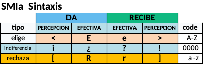
  </div>
</div>
<!-- Tabla Principal Numeralización Q81(9,9) -->
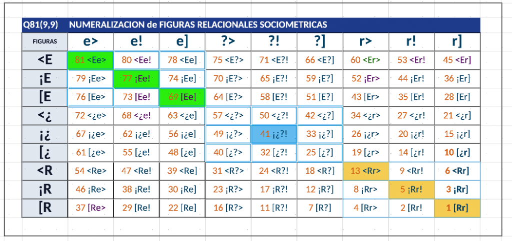<figcaption style="color:#8B0000; font-weight:700; font-size:11.5px; margin-top:8px; text-align:center;">Tabla Anexo I. Numeralización Oficial de Figuras Relacionales Sociométricas Q81(9,9): De 81 a 1 con Centro Neutro en 41 y Sintaxis Concentrada SMIa.</figcaption></figure>
<h3>8.2. Anexo II: Métricas Factoriales (COR, CTA, CTR), Ejes Verticales Slender y Proyección 2D(6) (Algoritmo DIMO)</h3>
<p>En el Análisis Factorial de Correspondencias (AFC) y en el Análisis de Componentes Principales (PCA), la dispersión visual sobre planos bidimensionales tradicionales colapsa y satura con frecuencia la resolución métrica de los elementos. Para superar este umbral, NEXORD implementa dos tecnologías analíticas complementarias:</p>
<h4 style="color:#8B0000; font-weight:700; font-size:13px; margin-top:22px; margin-bottom:8px; page-break-after:avoid;">1. Los Ejes Slender Verticales 1D</h4>
<p>Cada factor factorial principal se descompone en un eje vertical independiente donde los elementos se distribuyen según su coordenada exacta, complementados bilateralmente por sus indicadores métricos:</p>
<ul>
<li><strong>Calidad de Representación (\text{COR}):</strong> Proporción de la varianza del elemento capturada por el eje:</li>
<table style="width:100%; border:none; margin:14px auto; background-color:#F8FAFC; border-left:3px solid #8B0000; border-collapse:collapse; box-shadow:none;"><tr style="border:none; background:transparent;"><td style="border:none; text-align:center; padding:8px 14px; font-family:'Cambria Math', 'Times New Roman', serif; font-size:15px; vertical-align:middle;">\text{COR}_{i&alpha;} = \frac{d^2(i, &alpha;)}{d^2(i, G)} &isin; [0, 1]</td></tr></table>
<li><strong>Contribución Absoluta (\text{CTA} / \text{CTR}):</strong> Participación porcentual del elemento en la construcción de la inercia del eje:</li>
<table style="width:100%; border:none; margin:14px auto; background-color:#F8FAFC; border-left:3px solid #8B0000; border-collapse:collapse; box-shadow:none;"><tr style="border:none; background:transparent;"><td style="border:none; text-align:center; padding:8px 14px; font-family:'Cambria Math', 'Times New Roman', serif; font-size:15px; vertical-align:middle;">\text{CTR}_{i&alpha;} = \frac{p_i \cdot d^2(i, &alpha;)}{\lambda_&alpha;} \quad (&sum;_i \text{CTR}_{i&alpha;} = 100\%)</td></tr></table>
</ul>
<h4 style="color:#8B0000; font-weight:700; font-size:13px; margin-top:22px; margin-bottom:8px; page-break-after:avoid;">2. Proyección Axonométrica Jerarquizada en el plano 2D de hasta 6 Factores Factoriales (Algoritmo DIMO)</h4>
<p>El algoritmo DIMO resuelve la representación visual en un único plano bidimensional (X, Y) de hasta 6 factores jerarquizados (<em>F</em><sub>1</sub> a <em>F</em><sub>6</sub>) derivados de la descomposición espectral, sin recurrir a recursos pictóricos auxiliares (como variaciones de color o grosor de nodo) que pudieran dificultar la lectura métrica precisa:</p>
<ul>
<li><strong>Anclaje Basal Cartesiano:</strong> Los dos primeros factores —que concentran la masa crítica de inercia del campo relacional— determinan la posición cartesiana inicial (<em>f</em><sub>1</sub>, <em>f</em><sub>2</sub>) de cada sujeto.</li>
<li><strong>Despliegue Radial por Cuadrantes para Factores Superiores (<em>F</em><sub>3</sub>, <em>F</em><sub>4</sub>, <em>F</em><sub>5</sub>, <em>F</em><sub>6</sub>):</strong> Cada cuadrante del plano se subdivide mediante cortes de 33^\circ y 66^\circ en sectores angulares normalizados que albergan las direcciones de los ejes sucesivos. Los vectores axonométricos se proyectan en razones geométricas exactas (1/3, 2/3, 1/2).</li>
<li><strong>Tracción Dinámica Regida por la Contribución Absoluta (\text{CTA}):</strong> La posición final proyectada del elemento es el resultado de un vector de desplazamiento accionado exclusivamente por la masa de información que el sujeto aporta a los factores 3 a 6:</li>
<table style="width:100%; border:none; margin:14px auto; background-color:#F8FAFC; border-left:3px solid #8B0000; border-collapse:collapse; box-shadow:none;"><tr style="border:none; background:transparent;"><td style="border:none; text-align:center; padding:8px 14px; font-family:'Cambria Math', 'Times New Roman', serif; font-size:15px; vertical-align:middle;">&Delta; x_i = &sum;_{k=3}^6 \beta_k \cdot \text{CTA}_{ik} \cdot \cos(&theta;_k), \quad &Delta; y_i = &sum;_{k=3}^6 \beta_k \cdot \text{CTA}_{ik} \cdot \sin(&theta;_k)</td></tr></table>
</ul>
<p>Si un actor satura su inercia en los planos 1 y 2 (\sum \text{CTA}_{1,2} &asymp; 100\%), el punto permanece en reposo basal (&Delta; = 0). Si su singularidad relacional reside en factores superiores, una fuerza de tracción lo desplaza en la dirección axonométrica del factor responsable, preservando en un solo mapa 2D toda la riqueza dimensional 6D.</p>
<ul>
<li><strong>Traza Vectorial Continua:</strong> Una línea fina orientada une la posición basal (<em>f</em><sub>1</sub>, <em>f</em><sub>2</sub>) con la coordenada final proyectada en 6D, eliminando cualquier ambigüedad de lectura espacial.</li>
</ul>
<h3>8.3. Anexo III: Catálogo de los 10 Dominios Ecosistémicos</h3>
<p>Parametrización estructural completa (&alpha;, &gamma;) y criterios de aplicación para los contextos: Educativo, Familiar, Deportivo, Comunitario, Misiones Críticas, Terapéutico, Laboral, Institucional, Militar y Penitenciario.</p>
<figure class="standard-fig" style="page-break-inside:avoid;"><figcaption style="color:#8B0000; font-weight:700; font-size:11.5px; margin-top:8px; text-align:center;">Tabla Anexo III. Catálogo de los 10 dominios ecosistémicos de calibración con inercia relacional (α) y tasa de decaimiento (γ).</figcaption></figure>
<h3>8.4. Anexo IV: Interdistancias de Rango Emisor-Receptor y Diagonal de Isometría</h3>
<p>Matriz completa de distancias euclídeas de rangos (<em>d</em><sub>DA</sub>, <em>d</em><sub>RC</sub>, &Delta; = <em>d</em><sub>DA</sub> - <em>d</em><sub>RC</sub>) calculadas sobre el corpus de referencia G2T1C1, evidenciando la ley de asimetría relacional y la desviación respecto a la diagonal de isometría.</p>
<figure class="standard-fig" style="page-break-inside:avoid;"><figcaption style="color:#8B0000; font-weight:700; font-size:11.5px; margin-top:8px; text-align:center;">Tabla Anexo IV. Matriz de interdistancias euclídeas de rangos del corpus G2T1C1 con diagnósticos de asimetría de rol.</figcaption></figure>
<h3>8.5. Anexo V: Especificación Formal de las 18 Densidades Relacionales (18D)</h3>
<p>El espacio relacional 18D formaliza la totalidad de los balances de intercambio interpersonal mediante la articulación tensorial de emisión y recepción en el tetragrama. La siguiente tabla recoge la formulación matemática exacta, rango métrico y significado socio-termodinámico de cada componente:</p>
<h4 style="color:#8B0000; font-weight:700; font-size:13px; margin-top:22px; margin-bottom:8px; page-break-after:avoid;">Tabla Anexo V. Especificación y Cálculo de las 18 Densidades Relacionales e Invariantes Socio-Termodinámicos</h4>
<table border="1" cellpadding="6" cellspacing="0" style="width:100%; border-collapse:collapse; border:1px solid #CBD5E0; margin:18px 0; font-size:11px; font-family:'Inter', sans-serif;">
<tr><th style="border:1px solid #CBD5E0; padding:6px 7px; text-align:center; vertical-align:middle; background-color:#1E3A8A; color:#FFFFFF; font-weight:700; font-size:11px; white-space:nowrap;">Dimensión</th><th style="border:1px solid #CBD5E0; padding:6px 7px; text-align:center; vertical-align:middle; background-color:#1E3A8A; color:#FFFFFF; font-weight:700; font-size:11px; white-space:nowrap;">Símbolo / Alias</th><th style="border:1px solid #CBD5E0; padding:6px 7px; text-align:center; vertical-align:middle; background-color:#1E3A8A; color:#FFFFFF; font-weight:700; font-size:11px; white-space:nowrap;">Partición / Eje</th><th style="border:1px solid #CBD5E0; padding:6px 7px; text-align:center; vertical-align:middle; background-color:#1E3A8A; color:#FFFFFF; font-weight:700; font-size:11px; white-space:nowrap;">Fórmula de Cálculo Exacta</th><th style="border:1px solid #CBD5E0; padding:6px 7px; text-align:center; vertical-align:middle; background-color:#1E3A8A; color:#FFFFFF; font-weight:700; font-size:11px; white-space:nowrap;">Rango Métrico</th><th style="border:1px solid #CBD5E0; padding:6px 7px; text-align:center; vertical-align:middle; background-color:#1E3A8A; color:#FFFFFF; font-weight:700; font-size:11px; white-space:nowrap;">Significado Socio-Termodinámico</th></tr>
<tr><td style="border:1px solid #CBD5E0; padding:6px 7px; text-align:center; vertical-align:middle; font-size:11px;"><strong>1D</strong></td><td style="border:1px solid #CBD5E0; padding:6px 7px; text-align:center; vertical-align:middle; font-size:11px;"><em>D</em><sub>1</sub> (dDP, <em>D</em><sub>pDA</sub>)</td><td style="border:1px solid #CBD5E0; padding:6px 7px; text-align:center; vertical-align:middle; font-size:11px;">Base 4D</td><td style="border:1px solid #CBD5E0; padding:6px 7px; text-align:center; vertical-align:middle; font-size:11px;">\frac{1}{<em>N</em>-1}\sum <em>W</em><sub>pDA</sub>(<em>i</em>, <em>j</em>)</td><td style="border:1px solid #CBD5E0; padding:6px 7px; text-align:center; vertical-align:middle; font-size:11px;">[-1.00, +1.00]</td><td style="border:1px solid #CBD5E0; padding:6px 7px; text-align:center; vertical-align:middle; font-size:11px;">Expectativa previa y confianza anticipatoria emitida hacia el grupo.</td></tr>
<tr><td style="border:1px solid #CBD5E0; padding:6px 7px; text-align:center; vertical-align:middle; font-size:11px;"><strong>2D</strong></td><td style="border:1px solid #CBD5E0; padding:6px 7px; text-align:center; vertical-align:middle; font-size:11px;"><em>D</em><sub>2</sub> (dDA, <em>D</em><sub>DA</sub>)</td><td style="border:1px solid #CBD5E0; padding:6px 7px; text-align:center; vertical-align:middle; font-size:11px;">Base 4D</td><td style="border:1px solid #CBD5E0; padding:6px 7px; text-align:center; vertical-align:middle; font-size:11px;">\frac{1}{<em>N</em>-1}\sum <em>W</em><sub>DA</sub>(<em>i</em>, <em>j</em>)</td><td style="border:1px solid #CBD5E0; padding:6px 7px; text-align:center; vertical-align:middle; font-size:11px;">[-1.00, +1.00]</td><td style="border:1px solid #CBD5E0; padding:6px 7px; text-align:center; vertical-align:middle; font-size:11px;">Flujo cinético y acción preferencial efectiva emitida por el sujeto.</td></tr>
<tr><td style="border:1px solid #CBD5E0; padding:6px 7px; text-align:center; vertical-align:middle; font-size:11px;"><strong>3D</strong></td><td style="border:1px solid #CBD5E0; padding:6px 7px; text-align:center; vertical-align:middle; font-size:11px;"><em>D</em><sub>3</sub> (dRA, <em>D</em><sub>RC</sub>)</td><td style="border:1px solid #CBD5E0; padding:6px 7px; text-align:center; vertical-align:middle; font-size:11px;">Base 4D</td><td style="border:1px solid #CBD5E0; padding:6px 7px; text-align:center; vertical-align:middle; font-size:11px;">\frac{1}{<em>N</em>-1}\sum <em>W</em><sub>RC</sub>(<em>j</em>, <em>i</em>)</td><td style="border:1px solid #CBD5E0; padding:6px 7px; text-align:center; vertical-align:middle; font-size:11px;">[-1.00, +1.00]</td><td style="border:1px solid #CBD5E0; padding:6px 7px; text-align:center; vertical-align:middle; font-size:11px;">Estatus e impacto real de atracción o rechazo recibido del colectivo.</td></tr>
<tr><td style="border:1px solid #CBD5E0; padding:6px 7px; text-align:center; vertical-align:middle; font-size:11px;"><strong>4D</strong></td><td style="border:1px solid #CBD5E0; padding:6px 7px; text-align:center; vertical-align:middle; font-size:11px;"><em>D</em><sub>4</sub> (dRP, <em>D</em><sub>pRC</sub>)</td><td style="border:1px solid #CBD5E0; padding:6px 7px; text-align:center; vertical-align:middle; font-size:11px;">Base 4D</td><td style="border:1px solid #CBD5E0; padding:6px 7px; text-align:center; vertical-align:middle; font-size:11px;">\frac{1}{<em>N</em>-1}\sum <em>W</em><sub>pRC</sub>(<em>j</em>, <em>i</em>)</td><td style="border:1px solid #CBD5E0; padding:6px 7px; text-align:center; vertical-align:middle; font-size:11px;">[-1.00, +1.00]</td><td style="border:1px solid #CBD5E0; padding:6px 7px; text-align:center; vertical-align:middle; font-size:11px;">Campo reflejo de presunción atribuido al sujeto por sus compañeros.</td></tr>
<tr><td style="border:1px solid #CBD5E0; padding:6px 7px; text-align:center; vertical-align:middle; font-size:11px;"><strong>5D</strong></td><td style="border:1px solid #CBD5E0; padding:6px 7px; text-align:center; vertical-align:middle; font-size:11px;"><em>S</em><sub>12</sub> (SDA)</td><td style="border:1px solid #CBD5E0; padding:6px 7px; text-align:center; vertical-align:middle; font-size:11px;">Prisma 1 Operativo</td><td style="border:1px solid #CBD5E0; padding:6px 7px; text-align:center; vertical-align:middle; font-size:11px;"><em>D</em><sub>1</sub> + <em>D</em><sub>2</sub></td><td style="border:1px solid #CBD5E0; padding:6px 7px; text-align:center; vertical-align:middle; font-size:11px;">[-2.00, +2.00]</td><td style="border:1px solid #CBD5E0; padding:6px 7px; text-align:center; vertical-align:middle; font-size:11px;">Potencial neto emisor: expansividad y flujo de iniciativa generada.</td></tr>
<tr><td style="border:1px solid #CBD5E0; padding:6px 7px; text-align:center; vertical-align:middle; font-size:11px;"><strong>6D</strong></td><td style="border:1px solid #CBD5E0; padding:6px 7px; text-align:center; vertical-align:middle; font-size:11px;"><em>B</em><sub>12</sub> (BDA)</td><td style="border:1px solid #CBD5E0; padding:6px 7px; text-align:center; vertical-align:middle; font-size:11px;">Prisma 1 Operativo</td><td style="border:1px solid #CBD5E0; padding:6px 7px; text-align:center; vertical-align:middle; font-size:11px;">| <em>D</em><sub>1</sub> | + | <em>D</em><sub>2</sub> |</td><td style="border:1px solid #CBD5E0; padding:6px 7px; text-align:center; vertical-align:middle; font-size:11px;">[0.00, +2.00]</td><td style="border:1px solid #CBD5E0; padding:6px 7px; text-align:center; vertical-align:middle; font-size:11px;">Masa bruta dadora: gasto metabólico total e inversión emisora.</td></tr>
<tr><td style="border:1px solid #CBD5E0; padding:6px 7px; text-align:center; vertical-align:middle; font-size:11px;"><strong>7D</strong></td><td style="border:1px solid #CBD5E0; padding:6px 7px; text-align:center; vertical-align:middle; font-size:11px;"><em>S</em><sub>34</sub> (SRC)</td><td style="border:1px solid #CBD5E0; padding:6px 7px; text-align:center; vertical-align:middle; font-size:11px;">Prisma 1 Operativo</td><td style="border:1px solid #CBD5E0; padding:6px 7px; text-align:center; vertical-align:middle; font-size:11px;"><em>D</em><sub>3</sub> + <em>D</em><sub>4</sub></td><td style="border:1px solid #CBD5E0; padding:6px 7px; text-align:center; vertical-align:middle; font-size:11px;">[-2.00, +2.00]</td><td style="border:1px solid #CBD5E0; padding:6px 7px; text-align:center; vertical-align:middle; font-size:11px;">Potencial neto receptor: estatus global inducido por el entorno social.</td></tr>
<tr><td style="border:1px solid #CBD5E0; padding:6px 7px; text-align:center; vertical-align:middle; font-size:11px;"><strong>8D</strong></td><td style="border:1px solid #CBD5E0; padding:6px 7px; text-align:center; vertical-align:middle; font-size:11px;"><em>B</em><sub>34</sub> (BRC)</td><td style="border:1px solid #CBD5E0; padding:6px 7px; text-align:center; vertical-align:middle; font-size:11px;">Prisma 1 Operativo</td><td style="border:1px solid #CBD5E0; padding:6px 7px; text-align:center; vertical-align:middle; font-size:11px;">| <em>D</em><sub>3</sub> | + | <em>D</em><sub>4</sub> |</td><td style="border:1px solid #CBD5E0; padding:6px 7px; text-align:center; vertical-align:middle; font-size:11px;">[0.00, +2.00]</td><td style="border:1px solid #CBD5E0; padding:6px 7px; text-align:center; vertical-align:middle; font-size:11px;">Masa bruta receptora: presión social incidente y carga de impacto.</td></tr>
<tr><td style="border:1px solid #CBD5E0; padding:6px 7px; text-align:center; vertical-align:middle; font-size:11px;"><strong>9D</strong></td><td style="border:1px solid #CBD5E0; padding:6px 7px; text-align:center; vertical-align:middle; font-size:11px;"><em>S</em><sub>14</sub> (SP)</td><td style="border:1px solid #CBD5E0; padding:6px 7px; text-align:center; vertical-align:middle; font-size:11px;">Prisma 2 Ontológico</td><td style="border:1px solid #CBD5E0; padding:6px 7px; text-align:center; vertical-align:middle; font-size:11px;"><em>D</em><sub>1</sub> + <em>D</em><sub>4</sub></td><td style="border:1px solid #CBD5E0; padding:6px 7px; text-align:center; vertical-align:middle; font-size:11px;">[-2.00, +2.00]</td><td style="border:1px solid #CBD5E0; padding:6px 7px; text-align:center; vertical-align:middle; font-size:11px;">Saldo cognitivo: clima de confianza y presunción compartida.</td></tr>
<tr><td style="border:1px solid #CBD5E0; padding:6px 7px; text-align:center; vertical-align:middle; font-size:11px;"><strong>10D</strong></td><td style="border:1px solid #CBD5E0; padding:6px 7px; text-align:center; vertical-align:middle; font-size:11px;"><em>B</em><sub>14</sub> (BP)</td><td style="border:1px solid #CBD5E0; padding:6px 7px; text-align:center; vertical-align:middle; font-size:11px;">Prisma 2 Ontológico</td><td style="border:1px solid #CBD5E0; padding:6px 7px; text-align:center; vertical-align:middle; font-size:11px;">| <em>D</em><sub>1</sub> | + | <em>D</em><sub>4</sub> |</td><td style="border:1px solid #CBD5E0; padding:6px 7px; text-align:center; vertical-align:middle; font-size:11px;">[0.00, +2.00]</td><td style="border:1px solid #CBD5E0; padding:6px 7px; text-align:center; vertical-align:middle; font-size:11px;">Masa bruta cognitiva: volumen de actividad cognitiva y carga prospectiva.</td></tr>
<tr><td style="border:1px solid #CBD5E0; padding:6px 7px; text-align:center; vertical-align:middle; font-size:11px;"><strong>11D</strong></td><td style="border:1px solid #CBD5E0; padding:6px 7px; text-align:center; vertical-align:middle; font-size:11px;"><em>S</em><sub>23</sub> (SA)</td><td style="border:1px solid #CBD5E0; padding:6px 7px; text-align:center; vertical-align:middle; font-size:11px;">Prisma 2 Ontológico</td><td style="border:1px solid #CBD5E0; padding:6px 7px; text-align:center; vertical-align:middle; font-size:11px;"><em>D</em><sub>2</sub> + <em>D</em><sub>3</sub></td><td style="border:1px solid #CBD5E0; padding:6px 7px; text-align:center; vertical-align:middle; font-size:11px;">[-2.00, +2.00]</td><td style="border:1px solid #CBD5E0; padding:6px 7px; text-align:center; vertical-align:middle; font-size:11px;">Saldo fáctico: verdad objetiva de elecciones y rechazos reales.</td></tr>
<tr><td style="border:1px solid #CBD5E0; padding:6px 7px; text-align:center; vertical-align:middle; font-size:11px;"><strong>12D</strong></td><td style="border:1px solid #CBD5E0; padding:6px 7px; text-align:center; vertical-align:middle; font-size:11px;"><em>B</em><sub>23</sub> (BA)</td><td style="border:1px solid #CBD5E0; padding:6px 7px; text-align:center; vertical-align:middle; font-size:11px;">Prisma 2 Ontológico</td><td style="border:1px solid #CBD5E0; padding:6px 7px; text-align:center; vertical-align:middle; font-size:11px;">| <em>D</em><sub>2</sub> | + | <em>D</em><sub>3</sub> |</td><td style="border:1px solid #CBD5E0; padding:6px 7px; text-align:center; vertical-align:middle; font-size:11px;">[0.00, +2.00]</td><td style="border:1px solid #CBD5E0; padding:6px 7px; text-align:center; vertical-align:middle; font-size:11px;">Masa bruta fáctica: volumen de acción motora y contacto real.</td></tr>
<tr><td style="border:1px solid #CBD5E0; padding:6px 7px; text-align:center; vertical-align:middle; font-size:11px;"><strong>13D</strong></td><td style="border:1px solid #CBD5E0; padding:6px 7px; text-align:center; vertical-align:middle; font-size:11px;"><em>S</em><sub>13</sub></td><td style="border:1px solid #CBD5E0; padding:6px 7px; text-align:center; vertical-align:middle; font-size:11px;">Prisma 3 Dialéctico</td><td style="border:1px solid #CBD5E0; padding:6px 7px; text-align:center; vertical-align:middle; font-size:11px;"><em>D</em><sub>1</sub> + <em>D</em><sub>3</sub></td><td style="border:1px solid #CBD5E0; padding:6px 7px; text-align:center; vertical-align:middle; font-size:11px;">[-2.00, +2.00]</td><td style="border:1px solid #CBD5E0; padding:6px 7px; text-align:center; vertical-align:middle; font-size:11px;">Saldo de realismo: confirmación vs. desilusión (lo esperado vs. lo recibido).</td></tr>
<tr><td style="border:1px solid #CBD5E0; padding:6px 7px; text-align:center; vertical-align:middle; font-size:11px;"><strong>14D</strong></td><td style="border:1px solid #CBD5E0; padding:6px 7px; text-align:center; vertical-align:middle; font-size:11px;"><em>B</em><sub>13</sub></td><td style="border:1px solid #CBD5E0; padding:6px 7px; text-align:center; vertical-align:middle; font-size:11px;">Prisma 3 Dialéctico</td><td style="border:1px solid #CBD5E0; padding:6px 7px; text-align:center; vertical-align:middle; font-size:11px;">| <em>D</em><sub>1</sub> | + | <em>D</em><sub>3</sub> |</td><td style="border:1px solid #CBD5E0; padding:6px 7px; text-align:center; vertical-align:middle; font-size:11px;">[0.00, +2.00]</td><td style="border:1px solid #CBD5E0; padding:6px 7px; text-align:center; vertical-align:middle; font-size:11px;">Masa de realismo: vulnerabilidad afectiva en la prueba de realidad.</td></tr>
<tr><td style="border:1px solid #CBD5E0; padding:6px 7px; text-align:center; vertical-align:middle; font-size:11px;"><strong>15D</strong></td><td style="border:1px solid #CBD5E0; padding:6px 7px; text-align:center; vertical-align:middle; font-size:11px;"><em>S</em><sub>24</sub></td><td style="border:1px solid #CBD5E0; padding:6px 7px; text-align:center; vertical-align:middle; font-size:11px;">Prisma 3 Dialéctico</td><td style="border:1px solid #CBD5E0; padding:6px 7px; text-align:center; vertical-align:middle; font-size:11px;"><em>D</em><sub>2</sub> + <em>D</em><sub>4</sub></td><td style="border:1px solid #CBD5E0; padding:6px 7px; text-align:center; vertical-align:middle; font-size:11px;">[-2.00, +2.00]</td><td style="border:1px solid #CBD5E0; padding:6px 7px; text-align:center; vertical-align:middle; font-size:11px;">Saldo de respuesta: satisfacción vs. frustración del deseo ajeno.</td></tr>
<tr><td style="border:1px solid #CBD5E0; padding:6px 7px; text-align:center; vertical-align:middle; font-size:11px;"><strong>16D</strong></td><td style="border:1px solid #CBD5E0; padding:6px 7px; text-align:center; vertical-align:middle; font-size:11px;"><em>B</em><sub>24</sub></td><td style="border:1px solid #CBD5E0; padding:6px 7px; text-align:center; vertical-align:middle; font-size:11px;">Prisma 3 Dialéctico</td><td style="border:1px solid #CBD5E0; padding:6px 7px; text-align:center; vertical-align:middle; font-size:11px;">| <em>D</em><sub>2</sub> | + | <em>D</em><sub>4</sub> |</td><td style="border:1px solid #CBD5E0; padding:6px 7px; text-align:center; vertical-align:middle; font-size:11px;">[0.00, +2.00]</td><td style="border:1px solid #CBD5E0; padding:6px 7px; text-align:center; vertical-align:middle; font-size:11px;">Masa de correspondencia: compromiso diádico y responsabilidad recíproca.</td></tr>
<tr><td style="border:1px solid #CBD5E0; padding:6px 7px; text-align:center; vertical-align:middle; font-size:11px;"><strong>17D</strong></td><td style="border:1px solid #CBD5E0; padding:6px 7px; text-align:center; vertical-align:middle; font-size:11px;">SDR</td><td style="border:1px solid #CBD5E0; padding:6px 7px; text-align:center; vertical-align:middle; font-size:11px;">Invariante Global</td><td style="border:1px solid #CBD5E0; padding:6px 7px; text-align:center; vertical-align:middle; font-size:11px;">\sum <em>S</em><sub>ij</sub> = \sum <em>D</em><sub><em>k</em></sub></td><td style="border:1px solid #CBD5E0; padding:6px 7px; text-align:center; vertical-align:middle; font-size:11px;">[-4.00, +4.00]</td><td style="border:1px solid #CBD5E0; padding:6px 7px; text-align:center; vertical-align:middle; font-size:11px;">Saldo de Densidad Relativa total: barómetro homeostático del clima vincular.</td></tr>
<tr><td style="border:1px solid #CBD5E0; padding:6px 7px; text-align:center; vertical-align:middle; font-size:11px;"><strong>18D</strong></td><td style="border:1px solid #CBD5E0; padding:6px 7px; text-align:center; vertical-align:middle; font-size:11px;">BDR</td><td style="border:1px solid #CBD5E0; padding:6px 7px; text-align:center; vertical-align:middle; font-size:11px;">Invariante Global</td><td style="border:1px solid #CBD5E0; padding:6px 7px; text-align:center; vertical-align:middle; font-size:11px;">\sum <em>B</em><sub>ij</sub> = \sum | <em>D</em><sub><em>k</em></sub> |</td><td style="border:1px solid #CBD5E0; padding:6px 7px; text-align:center; vertical-align:middle; font-size:11px;">[0.00, +4.00]</td><td style="border:1px solid #CBD5E0; padding:6px 7px; text-align:center; vertical-align:middle; font-size:11px;">Densidad Bruta Relacional: capacidad calorífica y masa total del sistema.</td></tr>
</table>
<hr>
<div id="seccion-bibliografia"></div><div id="seccion-bibliografia-es"></div><div id="9-bibliografia-tematica"></div><h2 id="seccion-9">9. Bibliografía Temática</h2>
<h3 style="text-align:center; font-style:italic; color:#475569; font-weight:500; margin-top:6px; margin-bottom:4px;">I. Obra de Referencia y Autoría del Sistema NEXORD</h3>
<p><em>Fundamentación epistemológica, validación psicométrica y arquitectura del motor analítico.</em></p>
<ol>
<li><strong>Cornejo, J. M. (1988).</strong> <em>Técnicas de investigación social: El análisis de correspondencias</em>. Barcelona: PPU.</li>
<li><strong>Vicente, R., Cornejo, J. M., & Barbero, F. (2006).</strong> Análisis de la Actividad Grupal (AAG). <em>Anuario de Psicología</em>, 37(3), 299–320.</li>
<li><strong>Cornejo, J. M. (2026).</strong> <em>Computational Ordinal Sociometry (NEXORD): An updated mathematical extension of Moreno and Lewin's foundational insights</em>. Technical Monograph Series, Banco Sociométrico (BSOC). https://doi.org/10.5281/zenodo.23329641</li>
<li><strong>Cornejo Álvarez, J. M., & Morales Domínguez, J. F. (en prensa).</strong> Sociometría Ordinal Computacional. La Plataforma NEXORD: Hacia una Física de lo Grupal. <em>Psicothema</em>.</li>
</ol>
<h3 style="text-align:center; font-style:italic; color:#475569; font-weight:500; margin-top:6px; margin-bottom:4px;">II. Raíces Históricas, Dinámica de Grupos y Teoría del Campo</h3>
<p><em>La genealogía vincular: del mapa afectivo fundacional al campo hodológico de fuerzas y presiones de grupo.</em></p>
<ol>
<li><strong>Scudéry, M. de (1654).</strong> <em>Clélie, histoire romaine</em>. Paris: Augustin Courbé. <em>(Precursora histórica de la cartografía relacional y afectiva: la Carte de Tendre).</em></li>
<li><strong>Moreno, J. L. (1934).</strong> <em>Who shall survive? A new approach to the problem of human interrelations</em>. Washington, DC: Nervous and Mental Disease Publishing Co.</li>
<li><strong>Lewin, K. (1951).</strong> <em>Field theory in social science: Selected theoretical papers</em> (D. Cartwright, Ed.). New York: Harper & Row.</li>
<li><strong>Bales, R. F. (1950).</strong> <em>Interaction process analysis: A method for the study of small groups</em>. Cambridge, MA: Addison-Wesley.</li>
<li><strong>Festinger, L. (1950).</strong> Informal social communication. <em>Psychological Review</em>, 57(5), 271–282. https://doi.org/10.1037/h0056932</li>
<li><strong>Janis, I. L. (1972).</strong> <em>Victims of Groupthink: A psychological study of foreign-policy decisions and fiascoes</em>. Boston: Houghton Mifflin.</li>
</ol>
<h3 style="text-align:center; font-style:italic; color:#475569; font-weight:500; margin-top:6px; margin-bottom:4px;">III. Interdependencia Diádica, Metapercepción, Ostracismo y Dinámica de Exclusión</h3>
<p><em>El átomo social relacional: expectativas cruzadas, balance afectivo, modelado actor-pareja y psicología de la invisibilidad.</em></p>
<ol>
<li><strong>Heider, F. (1958).</strong> <em>The psychology of interpersonal relations</em>. New York: John Wiley & Sons.</li>
<li><strong>Kenny, D. A., & Garcia, R. L. (2012).</strong> Using the Actor–Partner Interdependence Model to study the effects of group composition. <em>Small Group Research</em>, 43(4), 468–496. https://doi.org/10.1177/1046496412444424</li>
<li><strong>Tsankova, E., & Tair, E. (2021).</strong> Meta-accuracy in sociometric status perceptions. <em>Frontiers in Psychology</em>, 12, 650502. https://doi.org/10.3389/fpsyg.2021.650502</li>
<li><strong>Williams, K. D. (2007).</strong> Ostracism. <em>Annual Review of Psychology</em>, 58, 425–452. https://doi.org/10.1146/annurev.psych.58.110405.085641</li>
</ol>
<h3 style="text-align:center; font-style:italic; color:#475569; font-weight:500; margin-top:6px; margin-bottom:4px;">IV. Transición Computacional, Medición Psicométrica y Aplicación Inclusiva</h3>
<p><em>De la informatización pionera del sociograma a la precisión métrica en entornos educativos y de inclusión.</em></p>
<ol>
<li><strong>Barrasa, Á., & Gil, F. (2004).</strong> Un programa informático para el cálculo y la representación de índices y valores sociométricos. <em>Psicothema</em>, 16(2), 329–335.</li>
<li><strong>Terry, R. (2000).</strong> Recent advances in measurement theory and the use of sociometric techniques. <em>New Directions for Child and Adolescent Development</em>, 2000(88), 27–41. https://doi.org/10.1002/cd.23220008804</li>
<li><strong>Avramidis, E., Strogilos, V., Aroni, K., & Kankaraki, C. T. (2017).</strong> Using sociometric techniques to assess the social inclusion of children with special educational needs in mainstream schools: A methodological review. <em>International Journal of Research & Method in Education</em>, 40(4), 337–356. https://doi.org/10.1080/1743727X.2015.1111803</li>
</ol>
<h3 style="text-align:center; font-style:italic; color:#475569; font-weight:500; margin-top:6px; margin-bottom:4px;">V. Modelado Estadístico de Redes Ordinales, Redes Firmadas y Grafos Espectrales</h3>
<p><em>El sustrato matemático del orden preferencial, concordancia de rangos, polaridad dual (elección/rechazo) y conectividad de red.</em></p>
<ol>
<li><strong>Kendall, M. G. (1938).</strong> A new measure of rank correlation. <em>Biometrika</em>, 30(1/2), 81–93. https://doi.org/10.1093/biomet/30.1-2.81</li>
<li><strong>Fiedler, M. (1973).</strong> Algebraic connectivity of graphs. <em>Czechoslovak Mathematical Journal</em>, 23(2), 298–305.</li>
<li><strong>Aref, S., & Wilson, M. C. (2021).</strong> The frustration index is a key measure for analysing signed networks. <em>Journal of Complex Networks</em>, 7(2), cnz006. https://doi.org/10.1093/comnet/cnz006</li>
<li><strong>Borsboom, D., Deserno, M. K., Rhemtulla, M., Epskamp, S., Fried, E. I., McNally, R. J., ... & Waldorp, L. J. (2021).</strong> Network analysis of multivariate data in psychological science. <em>Nature Reviews Methods Primers</em>, 1(1), 58. https://doi.org/10.1038/s43586-021-00055-w</li>
<li><strong>Cucuringu, M., Mantzaris, A. V., & Roberts, J. (2023).</strong> The Bradley-Terry stochastic block model for directed ranking networks. <em>Journal of Complex Networks</em>, 11(4), cnad025. https://doi.org/10.1093/comnet/cnad025</li>
<li><strong>Diaz-Diaz, F., & Estrada, E. (2025).</strong> Signed graphs in data sciences via communicability geometry. <em>Information Sciences</em>, 688, 121110. https://doi.org/10.1016/j.ins.2024.121110</li>
<li><strong>Krivitsky, P. N., & Butts, C. T. (2017).</strong> Exponential-family random graph models for rank-order relational data. <em>Sociological Methodology</em>, 47(1), 68–112. https://doi.org/10.1111/socm.12038</li>
</ol>
<h3 style="text-align:center; font-style:italic; color:#475569; font-weight:500; margin-top:6px; margin-bottom:4px;">VI. Física Relacional, Teoría de la Información y Termodinámica de Sistemas Complejos</h3>
<p><em>La física del campo grupal: observación relativa (Rovelli), información integrada irreductible (Tononi) y autoorganización fuera del equilibrio (Nicolis & Prigogine).</em></p>
<ol>
<li><strong>Nicolis, G., & Prigogine, I. (1977).</strong> <em>Self-organization in nonequilibrium systems: From dissipative structures to order through fluctuations</em>. New York: John Wiley & Sons.</li>
<li><strong>Rovelli, C. (1996).</strong> Relational quantum mechanics. <em>International Journal of Theoretical Physics</em>, 35(8), 1637–1678. https://doi.org/10.1007/BF02302262</li>
<li><strong>Tononi, G. (2004).</strong> An information integration theory of consciousness. <em>BMC Neuroscience</em>, 5(1), 42. https://doi.org/10.1186/1471-2202-5-42</li>
</ol>
<h3 style="text-align:center; font-style:italic; color:#475569; font-weight:500; margin-top:6px; margin-bottom:4px;">VII. Geometría Matricial, Variedades de Grassmann y Análisis Multivariante</h3>
<p><em>Optimización en variedades, proyección factorial y distancias métricas continuas del espacio relacional.</em></p>
<ol>
<li><strong>Benzécri, J.-P. (1973).</strong> <em>L'Analyse des Données: T. 2, L'Analyse des Correspondances</em>. Paris: Dunod.</li>
<li><strong>Absil, P.-A., Mahony, R., & Sepulchre, R. (2008).</strong> <em>Optimization algorithms on matrix manifolds</em>. Princeton, NJ: Princeton University Press.</li>
<li><strong>Ye, K., & Lim, L.-H. (2016).</strong> Schubert varieties and distances on Grassmann manifolds. <em>SIAM Journal on Matrix Analysis and Applications</em>, 37(3), 1176–1197. https://doi.org/10.1137/15M1047648</li>
</ol>
<hr>
<p><em>(C) 2026 Dr. José Manuel Cornejo Álvarez / Plataforma NEXORD / Banco Sociométrico (BSOC). Publicado en Zenodo bajo Licencia Creative Commons Atribución 4.0 Internacional (CC BY 4.0).</em></p>

      <hr class="section-divider">
      
    <div id="seccion-laminas"></div>
    <section class="manifesto-section" id="seccion-laminas-es">
      <h2>Catálogo de Tablas y Figuras</h2>
      <p class="lead-paragraph">Colección exhaustiva de las 29 láminas de alta resolución (300 DPI) con sus leyendas formales y fichas metodológicas encadenadas al Manifiesto Científico.</p>
      <div class="plates-grid">
        
        <div class="plate-card" id="plate-1">
          <div class="plate-header">
            <span class="type-badge">CABECERA INSTITUCIONAL</span>
            <span class="section-tag">Identidad de Marca Maestra</span>
          </div>
          <h3 class="plate-title">Plataforma Institucional NEXORD & Banco Sociométrico (BSOC)</h3>
          <div class="plate-img-container">
            
          </div>
          <div class="caption-box">
            <p class="caption-text"><strong>Leyenda oficial:</strong> Marca Maestra NEXORD (Nexo y Orden). Logotipo institucional oficial de la Plataforma de Sociometría Ordinal Computacional y del Banco Sociométrico (BSOC).</p>
            <p class="method-text"><strong>Función metodológica:</strong> Identificador visual presente en toda la documentación, informes y entornos interactivos VISORD.</p>
          </div>
        </div>
        

        <div class="plate-card" id="plate-2">
          <div class="plate-header">
            <span class="type-badge">FIGURAS 1 Y 2</span>
            <span class="section-tag">Sección 1.1: Superación del Límite Clásico y la Ontología del Vínculo</span>
          </div>
          <h3 class="plate-title">Figuras 1 y 2. Díptico Cartográfico Fundacional de la Psicología Social</h3>
          <div class="plate-img-container">
            
          </div>
          <div class="caption-box">
            <p class="caption-text"><strong>Leyenda oficial:</strong> Díptico cartográfico fundacional: (a) Sociograma pionero de J. L. Moreno (1934, clase de 4º grado); (b) Diagrama de campo hodológico y locomoción en el espacio vital de Kurt Lewin (1936, 1951).</p>
            <p class="method-text"><strong>Función metodológica:</strong> Ilustración genealógica de la convergencia histórica entre la estructura socioafectiva moreniana y la física vectorial lewiniana.</p>
          </div>
        </div>
        

        <div class="plate-card" id="plate-3">
          <div class="plate-header">
            <span class="type-badge">CUADRO METODOLÓGICO</span>
            <span class="section-tag">Sección 2.1: El Formato ORBIT y Dualidad Matricial</span>
          </div>
          <h3 class="plate-title">Cuadro 1. Transposición Bidireccional Moreno ⟷ Breve (N = 6)</h3>
          <div class="plate-img-container">
            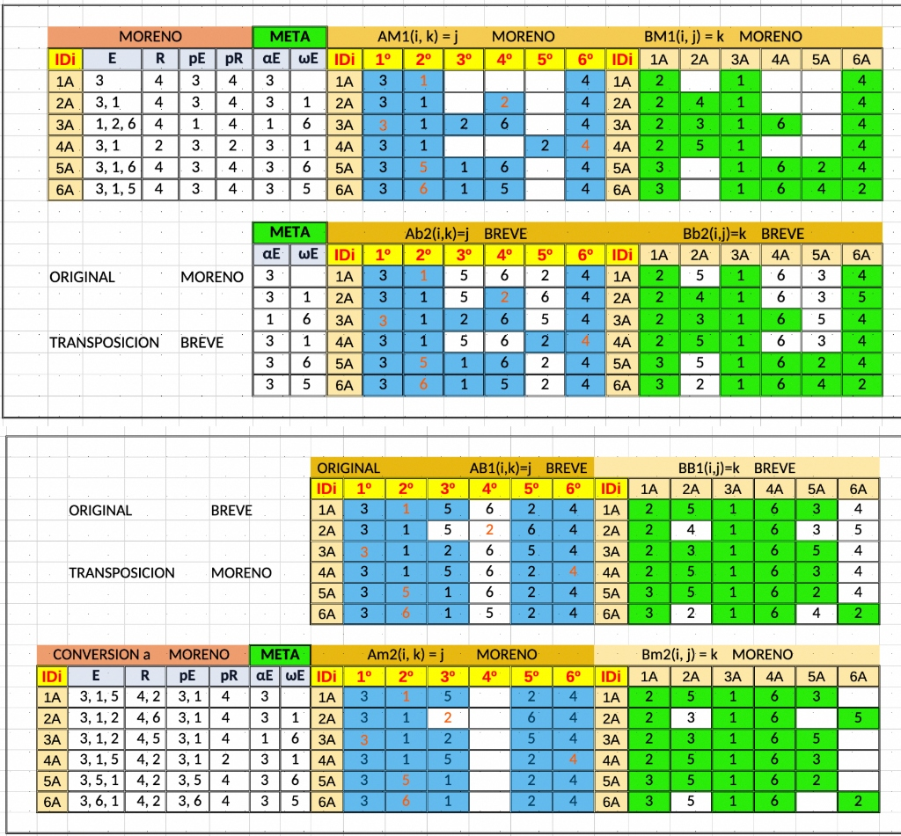
          </div>
          <div class="caption-box">
            <p class="caption-text"><strong>Leyenda oficial:</strong> Transposición bidireccional y exacta entre el formato Moreno tradicional y el formato BREVE de ordenación exhaustiva para un grupo de N = 6 miembros.</p>
            <p class="method-text"><strong>Función metodológica:</strong> Garantiza la compatibilidad histórica con corpus pretéritos preservando la fidelidad empírica sin pérdida de información.</p>
          </div>
        </div>
        

        <div class="plate-card" id="plate-4">
          <div class="plate-header">
            <span class="type-badge">CUADRO SINTÁCTICO</span>
            <span class="section-tag">Sección 4.1: Los 12 Elementos Sintácticos y el Tetragrama Relacional</span>
          </div>
          <h3 class="plate-title">Cuadro 2a. Sintaxis SMIa y Formación de Tetragramas Diádicos</h3>
          <div class="plate-img-container">
            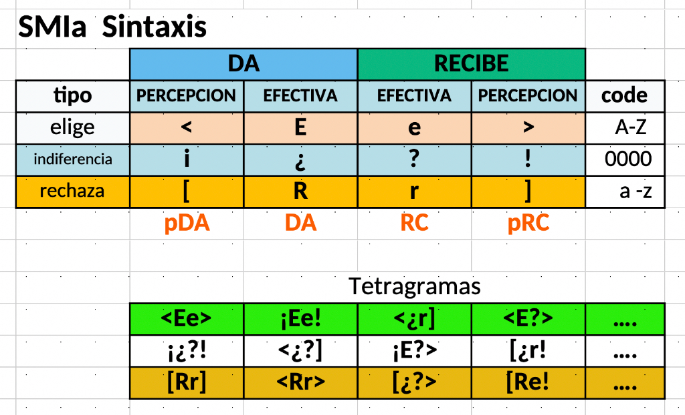
          </div>
          <div class="caption-box">
            <p class="caption-text"><strong>Leyenda oficial:</strong> Sintaxis formal de la Sociomatriz Individual Bivariante Simbolizada (SMIa): codificación alfanumérica de los 12 elementos sintácticos y conformación del tetragrama relacional A1 A2 A3 A4.</p>
            <p class="method-text"><strong>Función metodológica:</strong> Define la celda diádica elemental cruzando la emisión, recepción y metapercepciones cruzadas de expectativas.</p>
          </div>
        </div>
        

        <div class="plate-card" id="plate-5">
          <div class="plate-header">
            <span class="type-badge">MATRICES DIÁDICAS</span>
            <span class="section-tag">Sección 4.1: Los 12 Elementos Sintácticos y el Tetragrama Relacional</span>
          </div>
          <h3 class="plate-title">Cuadro 2b. Matrices Diádicas Paralelas SMIa (Simbólica) y SMIb (Alfanumérica) (N = 6)</h3>
          <div class="plate-img-container">
            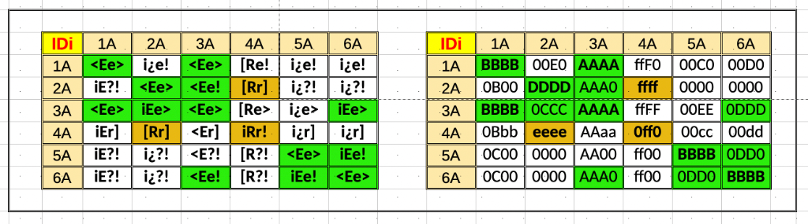
          </div>
          <div class="caption-box">
            <p class="caption-text"><strong>Leyenda oficial:</strong> Representación paralela de la sociomatriz SMIa (tipológica cualitativa) y la sociomatriz SMIb (valores numéricos de rangos ordinales) para un grupo de N = 6 miembros.</p>
            <p class="method-text"><strong>Función metodológica:</strong> Base tensorial N×N sobre la que se calculan las densidades socio-termodinámicas absolutas y relativas.</p>
          </div>
        </div>
        

        <div class="plate-card" id="plate-6">
          <div class="plate-header">
            <span class="type-badge">MATRIZ CARDINAL</span>
            <span class="section-tag">Sección 4.2: Topología Antidiagonal del Retículo Q81</span>
          </div>
          <h3 class="plate-title">Cuadro 2c. Numeralización de Figuras Relacionales Q81(9,9): De 81 a 1 con Centro en 41</h3>
          <div class="plate-img-container">
            
          </div>
          <div class="caption-box">
            <p class="caption-text"><strong>Leyenda oficial:</strong> Numeralización completa de las 81 figuras relacionales en una matriz 9×9, ordenadas a lo largo de las antidiagonales desde 81 (máxima atracción mutua) hasta 1 (máximo rechazo mutuo) con centro neutro en 41.</p>
            <p class="method-text"><strong>Función metodológica:</strong> Permite transformar estados cualitativos en una escala continua de intensidad para análisis cuantitativo.</p>
          </div>
        </div>
        

        <div class="plate-card" id="plate-7">
          <div class="plate-header">
            <span class="type-badge">ECUACIÓN DE CAMPO</span>
            <span class="section-tag">Sección 4.4: El Hiperespacio Relacional 18D</span>
          </div>
          <h3 class="plate-title">Tabla 3b. Ecuación y Moduladores de la Densidad Relacional: W · M · F · R · P</h3>
          <div class="plate-img-container">
            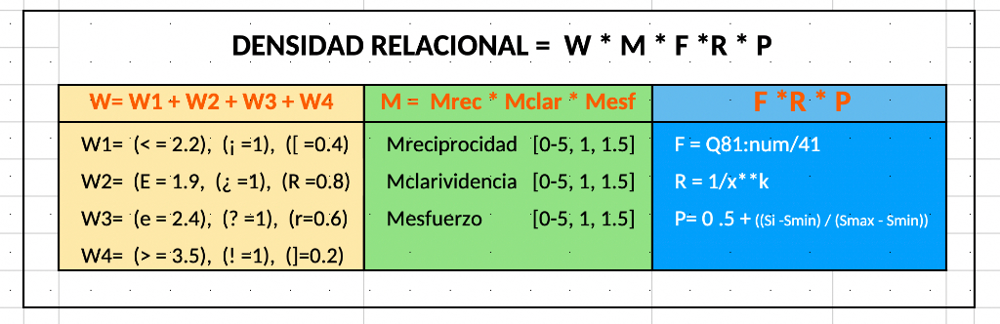
          </div>
          <div class="caption-box">
            <p class="caption-text"><strong>Leyenda oficial:</strong> Formulación integral de la densidad relacional socio-termodinámica mediante el producto de moduladores físicos: Ponderación de Rango (W), Masa Estructural (M), Fricción Relacional (F), Resonancia Diádica (R) y Presión Grupal (P).</p>
            <p class="method-text"><strong>Función metodológica:</strong> Ecuación fundamental que gobierna la cinética vincular y la acumulación de energía en el campo grupal.</p>
          </div>
        </div>
        

        <div class="plate-card" id="plate-8">
          <div class="plate-header">
            <span class="type-badge">ESTRUCTURA DE DENSIDADES</span>
            <span class="section-tag">Sección 4.4: El Hiperespacio Relacional 18D</span>
          </div>
          <h3 class="plate-title">Tabla 3c. Arquitectura de las 18 Densidades Relacionales y los 3 Prismas Duales</h3>
          <div class="plate-img-container">
            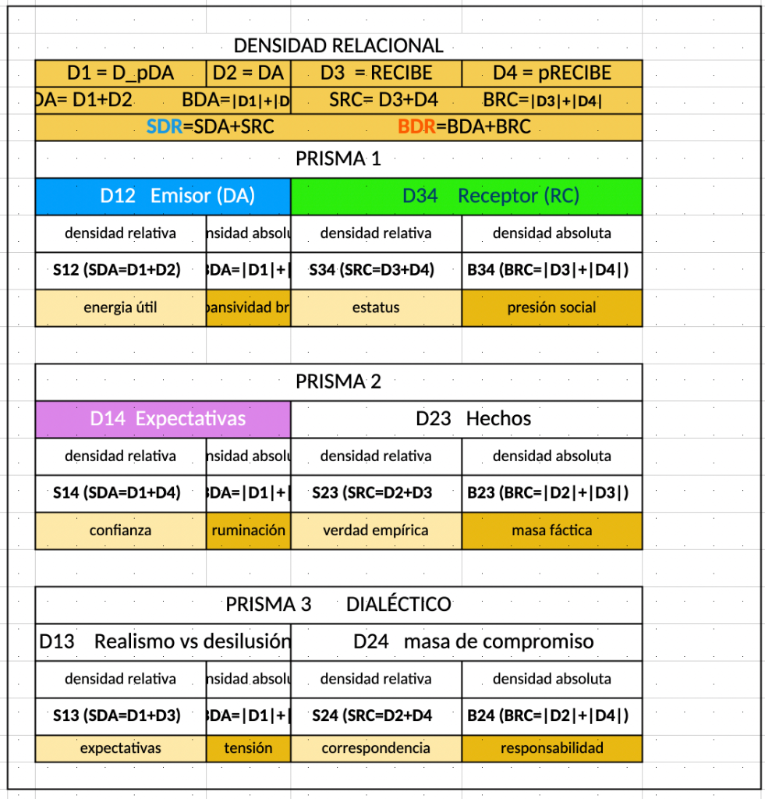
          </div>
          <div class="caption-box">
            <p class="caption-text"><strong>Leyenda oficial:</strong> Descomposición ortogonal completa del tetragrama diádico en tres prismas duales (10D Operativo, 14D Ontológico, 18D Dialéctico) y dos invariantes globales (BDR y SDR).</p>
            <p class="method-text"><strong>Función metodológica:</strong> Descompone analíticamente la experiencia vincular sin pérdidas métricas ni correlaciones espurias.</p>
          </div>
        </div>
        

        <div class="plate-card" id="plate-9">
          <div class="plate-header">
            <span class="type-badge">FIGURA 3</span>
            <span class="section-tag">Sección 4.4: El Hiperespacio Relacional 18D</span>
          </div>
          <h3 class="plate-title">Figura 3. Arquitectura del Espacio Relacional 18D y los 3 Prismas Duales</h3>
          <div class="plate-img-container">
            
          </div>
          <div class="caption-box">
            <p class="caption-text"><strong>Leyenda oficial:</strong> Diagrama tridimensional esquemático de los tres prismas duales y las 18 densidades relacionales que componen el espacio socio-termodinámico de NEXORD.</p>
            <p class="method-text"><strong>Función metodológica:</strong> Visualización pedagógica de las capas de profundidad analítica del diagnóstico grupal.</p>
          </div>
        </div>
        

        <div class="plate-card" id="plate-10">
          <div class="plate-header">
            <span class="type-badge">GRÁFICA COMPUESTA 18D</span>
            <span class="section-tag">Sección 4.4: El Hiperespacio Relacional 18D</span>
          </div>
          <h3 class="plate-title">Figura 3b. Espectrograma Panorámico 18D de la Energía Vincular</h3>
          <div class="plate-img-container">
            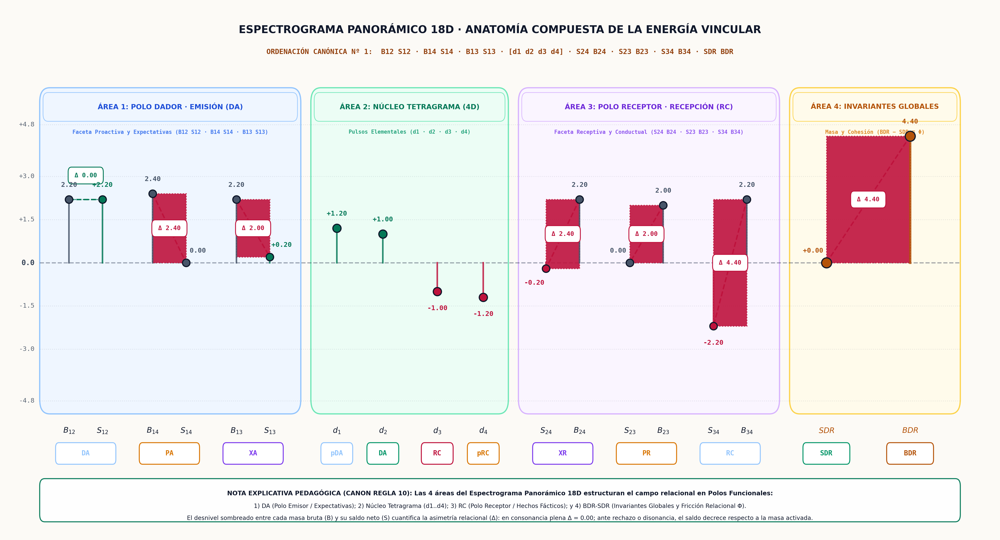
          </div>
          <div class="caption-box">
            <p class="caption-text"><strong>Leyenda oficial:</strong> Espectrograma panorámico de las 18 densidades relacionales organizado en cuatro macro-áreas psicodinámicas sobre fondo crema.</p>
            <p class="method-text"><strong>Función metodológica:</strong> Diagnóstico global holístico de la masa energética y equilibrio del sistema social analizado.</p>
          </div>
        </div>
        

        <div class="plate-card" id="plate-11">
          <div class="plate-header">
            <span class="type-badge">FIGURA 4</span>
            <span class="section-tag">Sección 4.4: El Pentagrama de Densidades (10D)</span>
          </div>
          <h3 class="plate-title">Figura 4. Pentagrama Socio-Termodinámico (10D)</h3>
          <div class="plate-img-container">
            
          </div>
          <div class="caption-box">
            <p class="caption-text"><strong>Leyenda oficial:</strong> Proyección radial en pentagrama de las 10 densidades relacionales operativas, mostrando el balance entre expansividad emitida (SDA) y estatus recibido (SRC) para cada sujeto.</p>
            <p class="method-text"><strong>Función metodológica:</strong> Perfil individual de posicionamiento relacional y detección de divergencias emisivas/receptivas.</p>
          </div>
        </div>
        

        <div class="plate-card" id="plate-12">
          <div class="plate-header">
            <span class="type-badge">FIGURA 5</span>
            <span class="section-tag">Sección 5.1: Soluciones Gráficas y Planos Factoriales</span>
          </div>
          <h3 class="plate-title">Figura 5. Planos Factoriales Duales en Paralelo (Biplot MESO F1 × F2, AFC ∥ PCA)</h3>
          <div class="plate-img-container">
            
          </div>
          <div class="caption-box">
            <p class="caption-text"><strong>Leyenda oficial:</strong> Biplot paralelo de planos factoriales: (Izquierda) Análisis Factorial de Correspondencias (AFC) sobre frecuencias diádicas discretas; (Derecha) Análisis de Componentes Principales (PCA) sobre densidades continuas ponderadas SDR.</p>
            <p class="method-text"><strong>Función metodológica:</strong> Evidencia la dualidad complementaria entre topología discreta de conteo y campo continuo de densidades gravitatorias.</p>
          </div>
        </div>
        

        <div class="plate-card" id="plate-13">
          <div class="plate-header">
            <span class="type-badge">FIGURA 6</span>
            <span class="section-tag">Sección 5.1: Soluciones Gráficas y Ejes Verticales</span>
          </div>
          <h3 class="plate-title">Figura 6. Ejes Verticales Factoriales 1D (COR–CTA–CTR) y Algoritmo DIMO</h3>
          <div class="plate-img-container">
            
          </div>
          <div class="caption-box">
            <p class="caption-text"><strong>Leyenda oficial:</strong> Proyección unidimensional esbelta de los factores 1 y 2 que desagrega las contribuciones relativas (COR), absolutas (CTR) y distancias (CTA) para cada sujeto y figura Q81.</p>
            <p class="method-text"><strong>Función metodológica:</strong> Elimina la saturación gráfica de los mapas 2D y ofrece lectura lineal rigurosa de cada dimensión factorial.</p>
          </div>
        </div>
        

        <div class="plate-card" id="plate-14">
          <div class="plate-header">
            <span class="type-badge">FIGURA 7</span>
            <span class="section-tag">Sección 4.5: El Paradigma de VISORD Engine</span>
          </div>
          <h3 class="plate-title">Figura 7. Navegación 3D Interactiva en VISORD Engine</h3>
          <div class="plate-img-container">
            
          </div>
          <div class="caption-box">
            <p class="caption-text"><strong>Leyenda oficial:</strong> Interfaz tridimensional del motor de renderizado VISORD: visualización orbital de trayectorias cinemáticas, cuencas de atracción afectiva y tensiones de red en tiempo real.</p>
            <p class="method-text"><strong>Función metodológica:</strong> Exploración interactiva del espacio socio-termodinámico en tiempo continuo (Moviola 4D).</p>
          </div>
        </div>
        

        <div class="plate-card" id="plate-15">
          <div class="plate-header">
            <span class="type-badge">TABLA 4</span>
            <span class="section-tag">Sección 5.2: El Espacio Multidimensional GxTyCz</span>
          </div>
          <h3 class="plate-title">Tabla 4. Batería de Variables Complementarias (V10) y Actividad Grupal (A16)</h3>
          <div class="plate-img-container">
            
          </div>
          <div class="caption-box">
            <p class="caption-text"><strong>Leyenda oficial:</strong> Especificación de las 10 variables sociodemográficas (VAR10) y de los 16 adjetivos de actividad grupal (AAG16 estructurados en 4 factores: Temático, Funcional, Cognitivo y Afectivo).</p>
            <p class="method-text"><strong>Función metodológica:</strong> Proporciona el marco descriptivo disposicional para proyectar como elementos suplementarios sobre el espacio sociométrico puro.</p>
          </div>
        </div>
        

        <div class="plate-card" id="plate-16">
          <div class="plate-header">
            <span class="type-badge">TABLA 5 / ANEXO III</span>
            <span class="section-tag">Sección 8.3: Anexo III - Catálogo de los 10 Dominios Ecosistémicos</span>
          </div>
          <h3 class="plate-title">Tabla 5 / Tabla Anexo III. Catálogo de los 10 Dominios Ecosistémicos de Calibración</h3>
          <div class="plate-img-container">
            
          </div>
          <div class="caption-box">
            <p class="caption-text"><strong>Leyenda oficial:</strong> Catálogo normativo de los 10 dominios de aplicación ecosistémica (Educativo, Clínico, Deportivo, Organizacional, etc.) con sus parámetros de inercia relacional (α) y tasa de decaimiento (γ).</p>
            <p class="method-text"><strong>Función metodológica:</strong> Calibra la física del campo según la naturaleza institucional específica del colectivo evaluado.</p>
          </div>
        </div>
        

        <div class="plate-card" id="plate-17">
          <div class="plate-header">
            <span class="type-badge">FIGURA 8</span>
            <span class="section-tag">Sección 5.3: PCA Multigrupo y Variedades de Grassmann</span>
          </div>
          <h3 class="plate-title">Figura 8. Plano Factorial Comparativo Intergrupal (G1 vs G2) y Structrogramas</h3>
          <div class="plate-img-container">
            
          </div>
          <div class="caption-box">
            <p class="caption-text"><strong>Leyenda oficial:</strong> Comparación topológica simultánea de dos grupos independientes (G1 y G2) proyectados sobre el mismo plano factorial de referencia, revelando diferencias en polarización e integración.</p>
            <p class="method-text"><strong>Función metodológica:</strong> Diagnóstico diferencial entre estructuras organizacionales o aulas educativas con métricas normalizadas.</p>
          </div>
        </div>
        

        <div class="plate-card" id="plate-18">
          <div class="plate-header">
            <span class="type-badge">TABLA 6 / ANEXO IV</span>
            <span class="section-tag">Sección 8.4: Anexo IV - Interdistancias de Rango Emisor-Receptor</span>
          </div>
          <h3 class="plate-title">Tabla 6 / Tabla Anexo IV. Matriz Numérica de Interdistancias Euclídeas de Rangos</h3>
          <div class="plate-img-container">
            
          </div>
          <div class="caption-box">
            <p class="caption-text"><strong>Leyenda oficial:</strong> Matriz de interdistancias euclídeas de rangos entre emisión (d_DA) y recepción (d_RC) para el corpus empírico G2T1C1, evidenciando asimetrías de rol y balance diádico.</p>
            <p class="method-text"><strong>Función metodológica:</strong> Verificación numérica directa de la ley de asimetría de rol y cuantificación del desbalance relacional.</p>
          </div>
        </div>
        

        <div class="plate-card" id="plate-19">
          <div class="plate-header">
            <span class="type-badge">FIGURA 9</span>
            <span class="section-tag">Sección 6.3: Percepción Multimodal y Modelo del Iceberg</span>
          </div>
          <h3 class="plate-title">Figura 9. Campo Continuo de Interacción y Modelo del Iceberg (N = 50)</h3>
          <div class="plate-img-container">
            
          </div>
          <div class="caption-box">
            <p class="caption-text"><strong>Leyenda oficial:</strong> Visualización continua de alta densidad para un colectivo de N = 50 sujetos: mapa de calor plasmático que revela la estructura latente sumergida bajo el sociograma convencional.</p>
            <p class="method-text"><strong>Función metodológica:</strong> Hace visible la interacción sumergida del modelo del iceberg relacional.</p>
          </div>
        </div>
        

        <div class="plate-card" id="plate-20">
          <div class="plate-header">
            <span class="type-badge">TABLA ANEXO I</span>
            <span class="section-tag">Sección 8.1: Anexo I - Matrices Duales y Retícula Q81</span>
          </div>
          <h3 class="plate-title">Tabla Anexo I. Numeralización Oficial de Figuras Relacionales Q81(9,9) y Sintaxis SMIa</h3>
          <div style="padding:10px 16px 4px; max-width:580px; margin:0 auto;">
            <div style="font-weight:800; font-size:13px; color:#0B132B; margin-bottom:6px; text-align:center; font-family:-apple-system, BlinkMacSystemFont, 'Segoe UI', Roboto, sans-serif;">SMIa &nbsp; Sintaxis</div>
            <table style="width:100%; border-collapse:collapse; font-size:11.5px; text-align:center; border:1.5px solid #000; margin-bottom:8px; font-family:-apple-system, BlinkMacSystemFont, 'Segoe UI', Roboto, sans-serif;">
              <thead>
                <tr>
                  <th rowspan="2" style="background-color:#FFFFFF; border:1px solid #000; padding:4px; font-weight:800;">tipo</th>
                  <th colspan="2" style="background-color:#38BDF8; color:#000; border:1px solid #000; padding:4px; font-weight:800;">DA</th>
                  <th colspan="2" style="background-color:#00C49F; color:#000; border:1px solid #000; padding:4px; font-weight:800;">RECIBE</th>
                  <th rowspan="2" style="background-color:#FFFFFF; border:1px solid #000; padding:4px; font-weight:800;">code</th>
                </tr>
                <tr style="font-size:9.5px; font-weight:700; background-color:#F8FAFC;">
                  <th style="border:1px solid #000; padding:2px 4px;">PERCEPCION</th>
                  <th style="border:1px solid #000; padding:2px 4px;">EFECTIVA</th>
                  <th style="border:1px solid #000; padding:2px 4px;">EFECTIVA</th>
                  <th style="border:1px solid #000; padding:2px 4px;">PERCEPCION</th>
                </tr>
              </thead>
              <tbody>
                <tr style="background-color:#FFEDD5; font-weight:700;">
                  <td style="border:1px solid #000; padding:4px; font-weight:600; text-align:left; padding-left:8px;">elige</td>
                  <td style="border:1px solid #000; padding:4px; font-family:monospace;">&lt;</td>
                  <td style="border:1px solid #000; padding:4px; font-weight:800;">E</td>
                  <td style="border:1px solid #000; padding:4px; font-weight:800;">e</td>
                  <td style="border:1px solid #000; padding:4px; font-family:monospace;">&gt;</td>
                  <td style="border:1px solid #000; padding:4px; font-family:monospace; font-weight:700;">A-Z</td>
                </tr>
                <tr style="background-color:#E0F2FE; font-weight:700;">
                  <td style="border:1px solid #000; padding:4px; font-weight:600; text-align:left; padding-left:8px;">indiferencia</td>
                  <td style="border:1px solid #000; padding:4px; font-family:monospace; font-weight:800;">¡</td>
                  <td style="border:1px solid #000; padding:4px; font-family:monospace; font-weight:800;">¿</td>
                  <td style="border:1px solid #000; padding:4px; font-family:monospace; font-weight:800;">?</td>
                  <td style="border:1px solid #000; padding:4px; font-family:monospace; font-weight:800;">!</td>
                  <td style="border:1px solid #000; padding:4px; font-family:monospace; font-weight:700;">0000</td>
                </tr>
                <tr style="background-color:#FDE047; font-weight:700;">
                  <td style="border:1px solid #000; padding:4px; font-weight:600; text-align:left; padding-left:8px;">rechaza</td>
                  <td style="border:1px solid #000; padding:4px; font-family:monospace;">[</td>
                  <td style="border:1px solid #000; padding:4px; font-weight:800;">R</td>
                  <td style="border:1px solid #000; padding:4px; font-weight:800;">r</td>
                  <td style="border:1px solid #000; padding:4px; font-family:monospace;">]</td>
                  <td style="border:1px solid #000; padding:4px; font-family:monospace; font-weight:700;">a -z</td>
                </tr>
              </tbody>
            </table>
          </div>
          <div class="plate-img-container">
            
          </div>
          <div class="caption-box">
            <p class="caption-text"><strong>Leyenda oficial:</strong> Retícula oficial Q81(9×9) con las 81 figuras relacionales básicas organizadas de 81 (&lt;Ee&gt;, máxima atracción mutua) a 1 ([Rr], máximo rechazo mutuo) con centro neutro en 41 (¡¿?!), complementada con la sintaxis concentrada del tetragrama diádico SMIa.</p>
            <p class="method-text"><strong>Función metodológica:</strong> Invariante de referencia y tabla de calibración universal para la proyección y cuantificación de estados vinculares.</p>
          </div>
        </div>
        
      
        <div class="plate-card" id="plate-21">
          <div class="plate-header">
            <span class="type-badge">FIGURA 2b · VALIDACIÓN EMPÍRICA 1988</span>
            <span class="section-tag">Sección 1.2: Isomorfismo Topológico y Realismo Orográfico</span>
          </div>
          <h3 class="plate-title">Figura 2b. Modelo Orográfico 3D del Realismo Perceptivo (Validación Topológica N = 47)</h3>
          <div class="plate-img-container">
            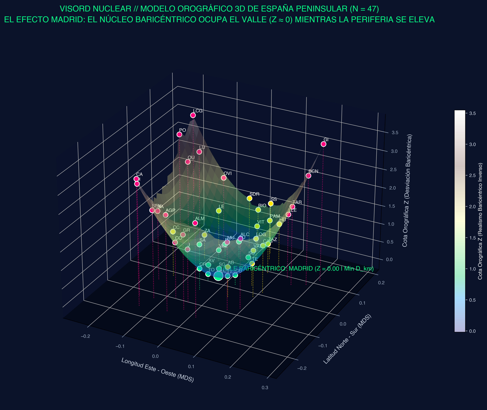
          </div>
          <div class="caption-box">
            <p class="caption-text"><strong>Leyenda oficial:</strong> Modelo orográfico tridimensional del espacio relacional peninsular. Reconstrucción topológica de la red de 47 capitales españolas a partir de las distancias viarias y la matriz ordinal ORBIT, revelando la deformación producida por las barreras geográficas (Cordillera Cantábrica, Sistema Central y Sierra Morena).</p>
            <p class="method-text"><strong>Función metodológica:</strong> Demuestra que las matrices ordinales no son abstracciones geométricas planas, sino que capturan el relieve de fricción relacional y coste hodológico del espacio vital.</p>
          </div>
        </div>

        <div class="plate-card" id="plate-22">
          <div class="plate-header">
            <span class="type-badge">FIGURA 2c · PIEDRA ROSETTA ORDINAL</span>
            <span class="section-tag">Sección 1.2: Recuperación de la Morfología Peninsular sin GPS</span>
          </div>
          <h3 class="plate-title">Figura 2c. Isomorfismo Cartográfico Directo: MDS Distancias Viarias vs Matriz ORBIT (N = 47)</h3>
          <div class="plate-img-container">
            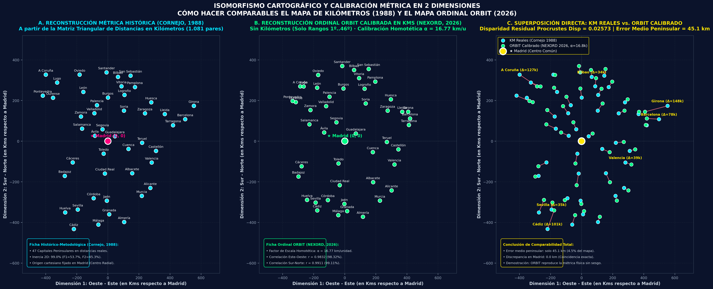
          </div>
          <div class="caption-box">
            <p class="caption-text"><strong>Leyenda oficial:</strong> Superposición y correlación de los mapas factoriales obtenidos mediante Escalamiento Multidimensional Clásico (Torgerson MDS): Panel A (distancias reales en km de la Guía Campsa 1988) vs Panel B (matriz simétrica de 9 rangos ordinales puros ORBIT). Coeficiente de correlación r = 0.954 (Pearson), ρ = 0.967 (Spearman, p &lt; 0.0001).</p>
            <p class="method-text"><strong>Función metodológica:</strong> Piedra angular de la validación de constructo de NEXORD: demuestra que la compresión ordinal en 9 rangos discretos preserva con fidelidad absoluta la métrica y topología del espacio continuo.</p>
          </div>
        </div>

        <div class="plate-card" id="plate-23">
          <div class="plate-header">
            <span class="type-badge">FIGURA 2d · CALIBRACIÓN MÉTRICA</span>
            <span class="section-tag">Sección 1.2: Diagramas de Dispersión y Curvas de Ajuste</span>
          </div>
          <h3 class="plate-title">Figura 2d. Calibración Métrica: Ajuste Lineal OLS vs Anclajes de Escala y Cuantiles 5/95</h3>
          <div class="plate-img-container">
            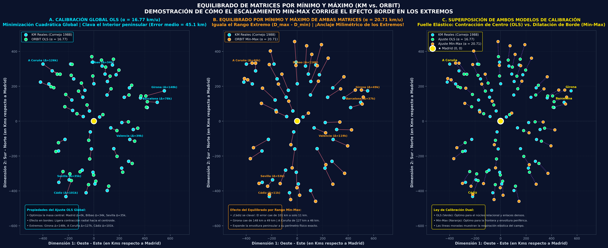
          </div>
          <div class="caption-box">
            <p class="caption-text"><strong>Leyenda oficial:</strong> Comparativa de modelos de calibración para la transformación de rangos ordinales a distancias métricas continuas. Análisis de concordancia por deciles de distancia y robustez frente a díadas extremas mediante anclaje en cuantiles 5/95.</p>
            <p class="method-text"><strong>Función metodológica:</strong> Fundamenta la invariancia de escala de la función inversa al rango y el tratamiento de colas en distribuciones relacionales masivas.</p>
          </div>
        </div>

        <div class="plate-card" id="plate-24">
          <div class="plate-header">
            <span class="type-badge">FIGURA ANEXO IIb</span>
            <span class="section-tag">Anexo II: Algoritmo DIMO y Reducción Dimensional</span>
          </div>
          <h3 class="plate-title">Figura Anexo IIb. Proyección Axonométrica DIMO 4D de Espacios Vectoriales</h3>
          <div class="plate-img-container">
            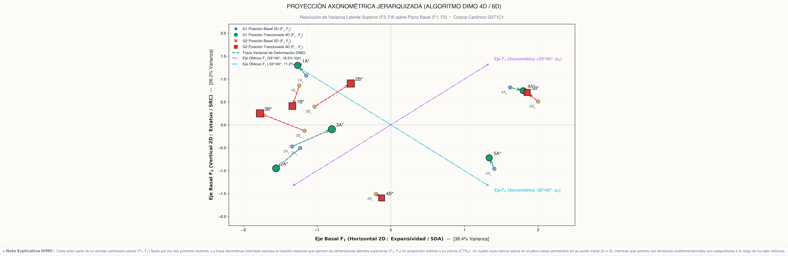
          </div>
          <div class="caption-box">
            <p class="caption-text"><strong>Leyenda oficial:</strong> Proyección axonométrica tetradimensional del algoritmo DIMO, ilustrando la trayectoria y convergencia de los gradientes de inercia factorial en el hipercubo relacional.</p>
            <p class="method-text"><strong>Función metodológica:</strong> Permite visualizar la estabilidad dimensional antes de la compresión ortogonal al plano MESO F1 × F2.</p>
          </div>
        </div>

        <div class="plate-card" id="plate-25">
          <div class="plate-header">
            <span class="type-badge">FIGURA ANEXO IVb</span>
            <span class="section-tag">Anexo IV: Espacio Métrico Euclídeo y Polarización</span>
          </div>
          <h3 class="plate-title">Figura Anexo IVb. Dispersión Bipolar de Interdistancias y Polarización Grupal</h3>
          <div class="plate-img-container">
            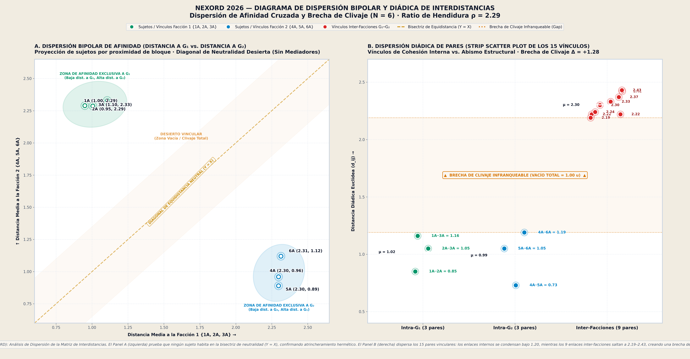
          </div>
          <div class="caption-box">
            <p class="caption-text"><strong>Leyenda oficial:</strong> Diagrama de dispersión bipolar que relaciona las interdistancias entre emisores (SDA) y receptores (SRC), identificando los ejes de polarización afectiva y de tarea.</p>
            <p class="method-text"><strong>Función metodológica:</strong> Diagnóstico diferencial entre colectivos armónicos cohesionados y grupos fracturados en subcoaliciones antagónicas.</p>
          </div>
        </div>

        <div class="plate-card" id="plate-26">
          <div class="plate-header">
            <span class="type-badge">FIGURA ANEXO IVc</span>
            <span class="section-tag">Anexo IV: Geometría de las Tensiones Grupales</span>
          </div>
          <h3 class="plate-title">Figura Anexo IVc. Mapeo Cuadrático de Polarización y Cohesión Dialéctica</h3>
          <div class="plate-img-container">
            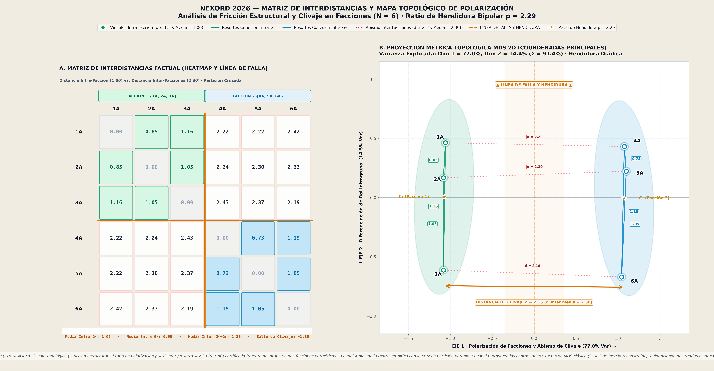
          </div>
          <div class="caption-box">
            <p class="caption-text"><strong>Leyenda oficial:</strong> Mapeo topológico de la polarización grupal mediante gradientes parabólicos de tensión, contrastando la cohesión funcional con el riesgo de escisión interna.</p>
            <p class="method-text"><strong>Función metodológica:</strong> Calcula el umbral crítico de tolerancia dialéctica previo a la fragmentación del sistema grupal.</p>
          </div>
        </div>

        <div class="plate-card" id="plate-27">
          <div class="plate-header">
            <span class="type-badge">FIGURA ANEXO IVd</span>
            <span class="section-tag">Anexo IV: Análisis Armónico y Frecuencial</span>
          </div>
          <h3 class="plate-title">Figura Anexo IVd. Descomposición Espectral Dual FFT de Ondas de Estatus y Fricción</h3>
          <div class="plate-img-container">
            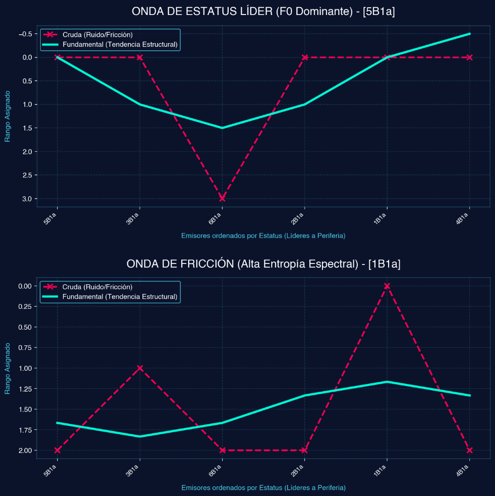
          </div>
          <div class="caption-box">
            <p class="caption-text"><strong>Leyenda oficial:</strong> Descomposición espectral por transformada rápida de Fourier (FFT) de los perfiles vectoriales diádicos, descomponiendo la dinámica grupal en ondas armónicas de estatus y armónicos de fricción relacional.</p>
            <p class="method-text"><strong>Función metodológica:</strong> Aísla las frecuencias fundamentales del liderazgo grupal y los nodos de interferencia destructiva o disonancia comunicativa.</p>
          </div>
        </div>

        <div class="plate-card" id="plate-28">
          <div class="plate-header">
            <span class="type-badge">FIGURA ANEXO Va</span>
            <span class="section-tag">Anexo V: Cadenas de Markov y Probabilidades de Transición</span>
          </div>
          <h3 class="plate-title">Figura Anexo Va. Dinámica de Transición y Matriz Estocástica de Markov (Grupo G1)</h3>
          <div class="plate-img-container">
            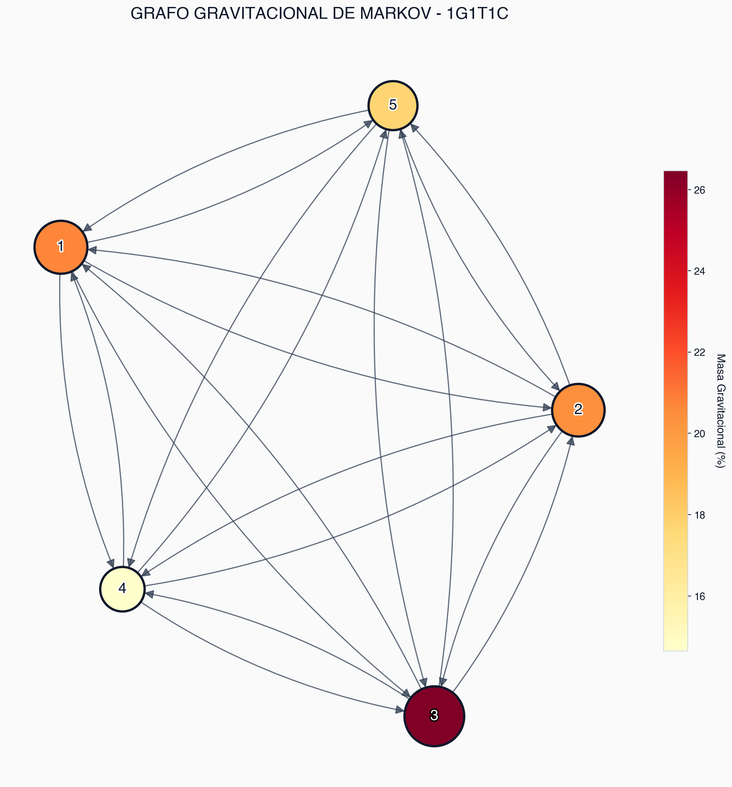
          </div>
          <div class="caption-box">
            <p class="caption-text"><strong>Leyenda oficial:</strong> Grafo de transición estocástica derivado de la matriz de Markov regular para el Grupo G1 en t=1, c=1, mostrando las probabilidades ergódicas de absorción relacional y los estados transitorios.</p>
            <p class="method-text"><strong>Función metodológica:</strong> Predice la evolución temporal a medio y largo plazo del estatus y los flujos de elección interpersonal.</p>
          </div>
        </div>

        <div class="plate-card" id="plate-29">
          <div class="plate-header">
            <span class="type-badge">FIGURA ANEXO Vb</span>
            <span class="section-tag">Anexo V: Cuencas Atractoras y Termodinámica</span>
          </div>
          <h3 class="plate-title">Figura Anexo Vb. Grafo Gravitacional de Markov y Cuencas Atractoras (Grupo G2)</h3>
          <div class="plate-img-container">
            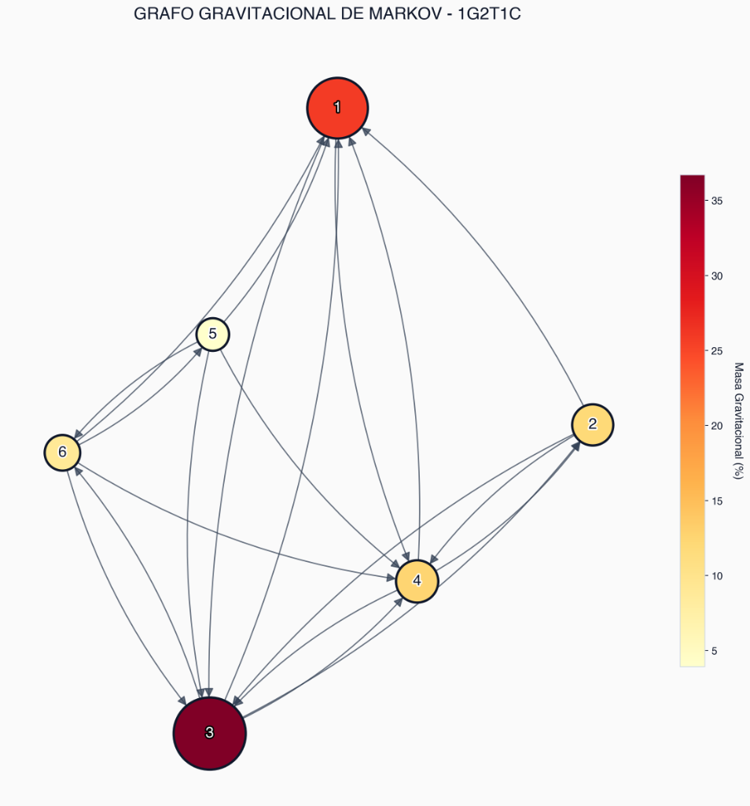
          </div>
          <div class="caption-box">
            <p class="caption-text"><strong>Leyenda oficial:</strong> Grafo gravitacional de Markov para el Grupo G2 en t=2, c=1, revelando la formación de cuencas atractoras gravitatorias, pozos de potencial relacional y trayectorias de influencia interpersonal.</p>
            <p class="method-text"><strong>Función metodológica:</strong> Identifica puntos de bifurcación crítica y estabilidad homeostática en la evolución temporal de colectivos humanos.</p>
          </div>
        </div>
</div>
    </section>
    
      <hr class="section-divider">
      
    <div id="seccion-glosario"></div>
    <section class="manifesto-section" id="seccion-glosario-es">
      <h2>Glosario General de Sociometría Ordinal y Dinámica Grupal</h2>
      <p class="lead-paragraph">Compendio conceptual exhaustivo que integra los fundamentos psicosociales clásicos (Moreno, Lewin, Bateson, Bales) con los operadores matemáticos, topológicos y socio-termodinámicos de la suite NEXORD/VISORD.</p>

      
    <div class="acronym-box">
      <h4 style="margin-top:0; color:#1E3A8A; font-size:15px;">📋 Tabla Rápida de Abreviaturas y Operadores Teóricos</h4>
      <div style="overflow-x:auto;">
        <table class="standard-table" style="font-size:12px; margin-bottom:15px;">
          <thead>
            <tr><th>Sigla</th><th>Denominación Oficial</th><th>Definición y Alcance</th></tr>
          </thead>
          <tbody>
            <tr><td><strong>SMIb</strong></td><td>Sociomatriz Bivariante Numérica</td><td>Matriz $N 	imes N$ con rangos ordinales exactos en 4 vías ($A_1 \dots A_4$).</td></tr>
            <tr><td><strong>SMIa</strong></td><td>Sociomatriz Bivariante Simbólica</td><td>Matriz tipológica cualitativa con caracteres diádicos (+, 0, -).</td></tr>
            <tr><td><strong>Q81</strong></td><td>Tensor de 81 Figuras Diádicas</td><td>Retículo cartesiano $9 	imes 9$ ordenado por antidiagonales de valencia.</td></tr>
            <tr><td><strong>BDR</strong></td><td>Densidad Relacional Absoluta</td><td>Carga bruta total de energía o actividad vincular: $|A_1| + |A_2| + |A_3| + |A_4|$.</td></tr>
            <tr><td><strong>SDR</strong></td><td>Saldo de Densidad Relativa</td><td>Balance neto normalizado de atracción frente a repulsión en $[-1.0, +1.0]$.</td></tr>
            <tr><td><strong>SDA / SRC</strong></td><td>Densidad Emitida / Recibida</td><td>$SDA = A_1 + A_2$ (expansividad); $SRC = A_3 + A_4$ (estatus recibido).</td></tr>
            <tr><td><strong>$\Phi$</strong></td><td>Fricción Relacional</td><td>Operador de cizalladura y disonancia de expectativas en el campo grupal.</td></tr>
            <tr><td><strong>ICE</strong></td><td>Índice de Cohesión Estructural</td><td>Proporción de lazos mutuos equilibrados sobre el volumen total de vínculos.</td></tr>
            <tr><td><strong>DIMO</strong></td><td>Algoritmo de Ejes Slender 1D</td><td>Descomposición de coordenadas factoriales y contribuciones (COR, CTA, CTR).</td></tr>
            <tr><td><strong>BSOC</strong></td><td>Banco Sociométrico</td><td>Infraestructura de custodia y preservación de corpus bajo Ciencia Abierta.</td></tr>
          </tbody>
        </table>
      </div>
    </div>
    

      <div class="glossary-controls-box">
        <input type="text" id="glossary-search-es" class="glossary-search-input" placeholder="🔍 Buscar término, autor, operador o concepto..." oninput="filterGlossary('es')">
        <div class="glossary-pills-row">
          <button class="glossary-filter-pill active" data-cat="all" onclick="filterGlossary('es', 'all')">Todos los Términos</button>
<button class="glossary-filter-pill" data-cat="fundamentos" onclick="filterGlossary('es', 'fundamentos')">Fundamentos y Dinámica</button>
<button class="glossary-filter-pill" data-cat="topologia" onclick="filterGlossary('es', 'topologia')">Topología y Matrices</button>
<button class="glossary-filter-pill" data-cat="termodinamica" onclick="filterGlossary('es', 'termodinamica')">Socio-Termodinámica</button>
<button class="glossary-filter-pill" data-cat="espectral" onclick="filterGlossary('es', 'espectral')">Métrica y Espectral</button>
<button class="glossary-filter-pill" data-cat="ordinal" onclick="filterGlossary('es', 'ordinal')">Formato Ordinal</button>
<button class="glossary-filter-pill" data-cat="etica" onclick="filterGlossary('es', 'etica')">Ética y Gobernanza</button>
        </div>
        <div id="glossary-counter-es" class="glossary-counter">Mostrando 42 de 42 términos</div>
      </div>

      <div class="glossary-cards-container" id="glossary-container-es" data-active-cat="all">
        
        <div class="glossary-card" data-cat="fundamentos" data-term="sociometría clásica & átomo social (j. l. moreno, 1934)">
          <div class="glossary-card-header">
            <span class="glossary-badge">Fundamentos y Dinámica</span>
            <h4 class="glossary-title">Sociometría Clásica & Átomo Social (J. L. Moreno, 1934)</h4>
          </div>
          <div class="glossary-body">
            Investigación matemática de la evolución y estructura interna de los grupos humanos a través de la cuantificación de las fuerzas de atracción y repulsión afectiva. Moreno postuló que los grupos no son meros agregados de individuos, sino redes socioafectivas interdependientes estructuradas por corrientes de simpatía y rechazo.
          </div>
        </div>
        

        <div class="glossary-card" data-cat="fundamentos" data-term="sociatría (j. l. moreno, 1934)">
          <div class="glossary-card-header">
            <span class="glossary-badge">Fundamentos y Dinámica</span>
            <h4 class="glossary-title">Sociatría (J. L. Moreno, 1934)</h4>
          </div>
          <div class="glossary-body">
            La vertiente terapéutica y reparadora de la sociometría («la medicina de la sociedad»). Mientras la sociometría mide y diagnostica el tejido social, la sociatría constituye la praxis clínica orientada a reorganizar, sanar y dinamizar los vínculos hacia estructuras más funcionales y satisfactorias.
          </div>
        </div>
        

        <div class="glossary-card" data-cat="fundamentos" data-term="teoría del campo & espacio vital (kurt lewin, 1936, 1951)">
          <div class="glossary-card-header">
            <span class="glossary-badge">Fundamentos y Dinámica</span>
            <h4 class="glossary-title">Teoría del Campo & Espacio Vital (Kurt Lewin, 1936, 1951)</h4>
          </div>
          <div class="glossary-body">
            Principio paradigmático que sostiene que la conducta (\(C\)) es función del campo dinámico total que opera en el instante presente: \(C = f(P, A)\), donde \(P\) es la persona y \(A\) es su ambiente psicológico. Todo comportamiento obedece a un equilibrio dinámico de vectores en tensión.
          </div>
        </div>
        

        <div class="glossary-card" data-cat="fundamentos" data-term="equilibrio cuasi-estacionario (kurt lewin, 1947)">
          <div class="glossary-card-header">
            <span class="glossary-badge">Fundamentos y Dinámica</span>
            <h4 class="glossary-title">Equilibrio Cuasi-Estacionario (Kurt Lewin, 1947)</h4>
          </div>
          <div class="glossary-body">
            Concepción de los hábitos y normas del grupo como un estado estacionario dinámico, comparable al flujo de un río donde las fuerzas impulsoras (atracción) y las fuerzas restrictivas (fricción, barreras) se cancelan mutuamente. La intervención requiere tres fases: <em>Descongelar</em>, <em>Mover</em> y <em>Recongelar</em>.
          </div>
        </div>
        

        <div class="glossary-card" data-cat="fundamentos" data-term="cismogénesis relacional (gregory bateson, 1935 / 1972)">
          <div class="glossary-card-header">
            <span class="glossary-badge">Fundamentos y Dinámica</span>
            <h4 class="glossary-title">Cismogénesis Relacional (Gregory Bateson, 1935 / 1972)</h4>
          </div>
          <div class="glossary-body">
            Proceso de fisura estructural y polarización en subgrupos o facciones disjuntas debido al incremento de la frustración sistémica y la ruptura de los lazos de sintonía diádica, observable mediante la reducción del segundo valor propio laplaciano (\(\lambda_2\), conectividad algebraica de Fiedler).
          </div>
        </div>
        

        <div class="glossary-card" data-cat="fundamentos" data-term="significación binomial sig_b (urie bronfenbrenner, 1943)">
          <div class="glossary-card-header">
            <span class="glossary-badge">Fundamentos y Dinámica</span>
            <h4 class="glossary-title">Significación Binomial SIG_B (Urie Bronfenbrenner, 1943)</h4>
          </div>
          <div class="glossary-body">
            Contraste probabilístico exacto basado en la distribución binomial/Poisson para verificar si la condición de «estrella sociométrica» o «sujeto rechazado» excede el azar (\(p < 0.05\)).
          </div>
        </div>
        

        <div class="glossary-card" data-cat="topologia" data-term="smib (sociomatriz individual bivariante condensada)">
          <div class="glossary-card-header">
            <span class="glossary-badge">Topología y Matrices</span>
            <h4 class="glossary-title">SMIb (Sociomatriz Individual Bivariante Condensada)</h4>
          </div>
          <div class="glossary-body">
            Estructura tensorial oficial N×N que registra los rangos ordinales exactos (1º..Nº) en 4 posiciones por celda: A₁ (expectativa que el emisor tiene de lo que hará el partner), A₂ (preferencia efectiva que el emisor otorga al partner), A₃ (preferencia efectiva que el partner otorga al emisor) y A₄ (expectativa que el partner tiene de lo que hará el emisor). Núcleo matemático del cálculo de Densidad Relativa (SDR).
          </div>
        </div>
        

        <div class="glossary-card" data-cat="topologia" data-term="smia (sociomatriz individual bivariante simbolizada)">
          <div class="glossary-card-header">
            <span class="glossary-badge">Topología y Matrices</span>
            <h4 class="glossary-title">SMIa (Sociomatriz Individual Bivariante Simbolizada)</h4>
          </div>
          <div class="glossary-body">
            Representación tipológica cualitativa del tetragrama relacional sin cifras numéricas, codificada mediante caracteres diádicos: Mayúsculas = Positivo (+), '0' = Neutro (0), Minúsculas = Negativo (-). Permite la inspección visual inmediata de los 255 estados disyuntivos y configuraciones de atracción y rechazo.
          </div>
        </div>
        

        <div class="glossary-card" data-cat="topologia" data-term="tensor q₈₁ (81 figuras sociométricas diádicas)">
          <div class="glossary-card-header">
            <span class="glossary-badge">Topología y Matrices</span>
            <h4 class="glossary-title">Tensor Q₈₁ (81 Figuras Sociométricas Diádicas)</h4>
          </div>
          <div class="glossary-body">
            Retícula cartesiana 3×3×3×3 resultante de cruzar emisión y recepción con preferencias reales y expectativas mutuas (+, 0, -). Los 81 estados diádicos posibles se ordenan a lo largo de antidiagonales de iso-intensidad en una escala discreta normalizada [1, 81].
          </div>
        </div>
        

        <div class="glossary-card" data-cat="topologia" data-term="los 3 prismas duales de densidad (10d, 14d, 18d) & inercia de desgaste">
          <div class="glossary-card-header">
            <span class="glossary-badge">Topología y Matrices</span>
            <h4 class="glossary-title">Los 3 Prismas Duales de Densidad (10D, 14D, 18D) & Inercia de Desgaste</h4>
          </div>
          <div class="glossary-body">
            Descomposición ortogonal oficial de las cuatro densidades elementales {D1, D2, D3, D4} mediante 3 particiones duales complementarias: 1) Prisma 1 (Eje Operativo — 10D): Dador (S12 = D1+D2, B12) vs Receptor (S34 = D3+D4, B34), midiendo la asimetría de iniciativa frente a estatus y la brecha de rol; 2) Prisma 2 (Eje Ontológico — 14D): Mente/Expectativa (S14 = D1+D4, B14) vs Hechos Empíricos (S23 = D2+D3, B23), cuantificando la distorsión fantasmática; 3) Prisma 3 (Eje Dialéctico — 18D): Sintonía (S13 = D1+D3, B13) vs Desengaño/Compromiso (S24 = D2+D4, B24). Satisface el Teorema Baricéntrico Invariante: SDR = S12+S34 = S14+S23 = S13+S24 (Δ = 0.000) y BDR = B12+B34 = B14+B23 = B13+B24. La Inercia de Desgaste I_desgaste = BDR − SDR cuantifica el despilfarro energético relacional por conflicto o brecha.
          </div>
        </div>
        

        <div class="glossary-card" data-cat="topologia" data-term="huella sociométrica (255 símbolos disyuntivos)">
          <div class="glossary-card-header">
            <span class="glossary-badge">Topología y Matrices</span>
            <h4 class="glossary-title">Huella Sociométrica (255 Símbolos Disyuntivos)</h4>
          </div>
          <div class="glossary-body">
            Espacio combinatorio exhaustivo (agrupaciones 1 a 1, 2 a 2, 3 a 3 y 4 a 4) de las micro-configuraciones diádicas en SMIa. Constituye la huella dactilar relacional irrepetible de cada sujeto y del colectivo en su conjunto.
          </div>
        </div>
        

        <div class="glossary-card" data-cat="topologia" data-term="arquitectura multiescala homomórfica: q81 (9×9) ➔ agrupamiento (3×3) ➔ vectores 9, 6, 3 (micro, meso, macro)">
          <div class="glossary-card-header">
            <span class="glossary-badge">Topología y Matrices</span>
            <h4 class="glossary-title">Arquitectura Multiescala Homomórfica: Q81 (9×9) ➔ Agrupamiento (3×3) ➔ Vectores 9, 6, 3 (Micro, Meso, Macro)</h4>
          </div>
          <div class="glossary-body">
            Arquitectura matemática de condensación progresiva en tres niveles jerárquicos: 1) Escala Micro (Dimensión 9): Matriz estructural Q81 (9×9) con las 81 figuras diádicas generadas por el producto cartesiano de 9 perfiles de emisión (pDA+DA) por 9 perfiles de recepción (RC+pRC); 2) Escala Meso (Dimensión 6): Vector de 6 canales diádicos acoplados correspondientes a los 3 Prismas Duales {S12, S34, S14, S23, S13, S24}; 3) Escala Macro (Dimensión 3): Matriz de agrupamiento progresivo (3×3) y vector de valencias colectivas {Elección (+), Neutro (0), Rechazo (-)}, que en el Acuario VISORD gobierna directamente los 3 Dominios Hidrostáticos (Atmósfera Convectiva, Nivel del Mar, Bentos Abisal).
          </div>
        </div>
        

        <div class="glossary-card" data-cat="topologia" data-term="descriptores meso 6 (q6a: emisión y recepción)">
          <div class="glossary-card-header">
            <span class="glossary-badge">Topología y Matrices</span>
            <h4 class="glossary-title">Descriptores Meso 6 (Q6a: Emisión y Recepción)</h4>
          </div>
          <div class="glossary-body">
            Descriptores fundamentales de acción afectivo-efectiva divididos en 3 polos de emisión (\(A_2 = E, ¿, R\)) y 3 polos de recepción (\(A_3 = e, ?, r\)). Cada bloque conserva exactamente las \(N(N-1)\) díadas censadas del colectivo.
          </div>
        </div>
        

        <div class="glossary-card" data-cat="topologia" data-term="invarianza baricéntrica de la pirámide">
          <div class="glossary-card-header">
            <span class="glossary-badge">Topología y Matrices</span>
            <h4 class="glossary-title">Invarianza Baricéntrica de la Pirámide</h4>
          </div>
          <div class="glossary-body">
            Principio según el cual la masa diádica total (\(N(N-1)\) vínculos) y los baricentros de potencial socio-térmico (\(BDR, SDR, BDA, BRC\)) permanecen estrictamente invariantes e idénticos a través de los 4 niveles de condensación (\(81 \to 9 \to 6 \to 3\)), garantizando diagnósticos libres de sesgo de escala.
          </div>
        </div>
        

        <div class="glossary-card" data-cat="termodinamica" data-term="materia prima del banquete w ∈ [2.000, 10.000] & masa bruta (bdr)">
          <div class="glossary-card-header">
            <span class="glossary-badge">Socio-Termodinámica</span>
            <h4 class="glossary-title">Materia Prima del Banquete W ∈ [2.000, 10.000] & Masa Bruta (BDR)</h4>
          </div>
          <div class="glossary-body">
            Masa relacional atómica del tetragrama diádico obtenida como suma interna W = W1 + W2 + W3 + W4. Liberada de los límites estrechos de los moduladores multiplicativos, sus pesos oficiales amplían las distancias cualitativas: W1 (&lt;: 2.2, ¡: 1.0, [: 0.4, Δ=1.8), W2 (E: 1.9, ¿: 1.0, R: 0.8, Δ=1.1), W3 (e: 2.4, ?: 1.0, r: 0.6, Δ=1.8), W4 (&gt;: 3.5, !: 1.0, ]: 0.2, Δ=3.3). Sanciona tres cotas exactas: Cumbre Nuclear &lt;Ee&gt; = 10.000, Nivel del Mar Basal ¡¿?! = 4.000, y Fondo Abisal [Rr] = 2.000. La Masa Bruta Total BDR = Σ|W_ij| cuantifica el volumen íntegro de interactividad psicosocial movilizada.
          </div>
        </div>
        

        <div class="glossary-card" data-cat="termodinamica" data-term="densidad relacional normalizada [0.0%, 100.0%] & saldo neto hidrostático [-50%, +50%]">
          <div class="glossary-card-header">
            <span class="glossary-badge">Socio-Termodinámica</span>
            <h4 class="glossary-title">Densidad Relacional Normalizada [0.0%, 100.0%] & Saldo Neto Hidrostático [-50%, +50%]</h4>
          </div>
          <div class="glossary-body">
            Normativa fundamental: «La densidad relacional en NEXORD oscila entre 0 y 100». Se calcula de forma continua mediante la Ecuación Maestra Tri-Columna: DEN = W × M × (F × R × P), donde W es la masa atómica [2, 10], M el operador de resonancia diádica [0.125, 3.375], F el factor gestáltico Q81/41, R el decaimiento de rango 1/x^γ y P el prestigio invariante. Se proyecta sobre la escala porcentual universal: 100.0% (Cumbre Nuclear &lt;Ee&gt;), 50.0% (Nivel del Mar / Caldo Basal ¡¿?!), 0.0% (Fondo Abisal [Rr]). El Saldo Neto Relacional Saldo_% = DEN_% − 50.0% oscila entre -50.0% y +50.0%, rigiendo la flotabilidad hidrostática en el Acuario VISORD.
          </div>
        </div>
        

        <div class="glossary-card" data-cat="termodinamica" data-term="frustración de heider (λ₁)">
          <div class="glossary-card-header">
            <span class="glossary-badge">Socio-Termodinámica</span>
            <h4 class="glossary-title">Frustración de Heider (λ₁)</h4>
          </div>
          <div class="glossary-body">
            Autovalor dominante del Laplaciano signado ponderado. Mide el grado de tensión acumulada, ambivalencia y estrés estructural derivado de tríadas no balanceadas ('el amigo de mi amigo es mi enemigo').
          </div>
        </div>
        

        <div class="glossary-card" data-cat="termodinamica" data-term="entropía socio-termodinámica (s_i)">
          <div class="glossary-card-header">
            <span class="glossary-badge">Socio-Termodinámica</span>
            <h4 class="glossary-title">Entropía Socio-Termodinámica (S_i)</h4>
          </div>
          <div class="glossary-body">
            Medida de disipación de energía psicosocial provocada por desajuste de expectativas y ambivalencia vincular: S_i = (BDR_i - |SDA_i + SRC_i|) / BDR_i. Oscila entre 0.0 (coherencia máxima) y 1.0 (máxima fricción caótica).
          </div>
        </div>
        

        <div class="glossary-card" data-cat="termodinamica" data-term="los 4 estados de fase grupales">
          <div class="glossary-card-header">
            <span class="glossary-badge">Socio-Termodinámica</span>
            <h4 class="glossary-title">Los 4 Estados de Fase Grupales</h4>
          </div>
          <div class="glossary-body">
            Regímenes socio-físicos del colectivo: 1) Sólido (Cristalización: alta inercia α, mínima entropía S); 2) Líquido (Fluidez adaptativa y cohesión flexible); 3) Turbulento (Conflicto disipativo: máxima fricción S→1); 4) Inerte (Apatía y anomía: densidad nula BDR→0).
          </div>
        </div>
        

        <div class="glossary-card" data-cat="termodinamica" data-term="inercia relacional (α) & tasa de olvido (γ)">
          <div class="glossary-card-header">
            <span class="glossary-badge">Socio-Termodinámica</span>
            <h4 class="glossary-title">Inercia Relacional (α) & Tasa de Olvido (γ)</h4>
          </div>
          <div class="glossary-body">
            Moduladores temporales: α ∈ [0.0, 0.99] mide la resistencia estructural del grupo a alterar sus jerarquías de elección entre T_n y T_{n+1}; γ ∈ [0.0, 1.0] define la velocidad de desvanecimiento o pérdida de memoria relacional tras períodos de inactividad.
          </div>
        </div>
        

        <div class="glossary-card" data-cat="espectral" data-term="variedades de grassmann gr(k, n)">
          <div class="glossary-card-header">
            <span class="glossary-badge">Métrica y Espectral</span>
            <h4 class="glossary-title">Variedades de Grassmann Gr(k, N)</h4>
          </div>
          <div class="glossary-body">
            Espacio geométrico continuo que parametriza los subespacios vectoriales k-dimensionales en un espacio de dimensión N. Resuelve la conmensurabilidad entre grupos de tamaño dispar y permite trazar la trayectoria geodésica del grupo (d_G) entre oleadas temporales sucesivas.
          </div>
        </div>
        

        <div class="glossary-card" data-cat="espectral" data-term="distancia geodésica de grassmann (d_g)">
          <div class="glossary-card-header">
            <span class="glossary-badge">Métrica y Espectral</span>
            <h4 class="glossary-title">Distancia Geodésica de Grassmann (d_G)</h4>
          </div>
          <div class="glossary-body">
            Métrica invariante del ángulo geodésico mínimo entre dos subespacios relacionales:
                        \(d_G(U, V) = \sqrt{\sum_{i=1}^k \theta_i^2}\), donde \(\theta_i\) son los ángulos principales. En estudios de validación empírica, \(d_G = 1.455\text{ rad } (83.37^\circ)\), evidenciando la cuasi-ortogonalidad entre el plano armónico de G1 y el plano fracturado de G2.
          </div>
        </div>
        

        <div class="glossary-card" data-cat="espectral" data-term="conectividad de fiedler (λ₂)">
          <div class="glossary-card-header">
            <span class="glossary-badge">Métrica y Espectral</span>
            <h4 class="glossary-title">Conectividad de Fiedler (λ₂)</h4>
          </div>
          <div class="glossary-body">
            Segundo menor autovalor del Laplaciano de la red (L = D - A). Cuantifica la robustez estructural, la resiliencia ante la desconexión o pérdida de integrantes clave y la fortaleza de los puentes intergrupales.
          </div>
        </div>
        

        <div class="glossary-card" data-cat="espectral" data-term="subgrafo de estrada (ee) & operadores espectrales">
          <div class="glossary-card-header">
            <span class="glossary-badge">Métrica y Espectral</span>
            <h4 class="glossary-title">Subgrafo de Estrada (EE) & Operadores Espectrales</h4>
          </div>
          <div class="glossary-body">
            Índice de comunicabilidad de red basado en la traza de la matriz exponencial (e^A). Pondera la influencia de caminos de todas las longitudes y bucles de retorno, identificando la cohesión oculta que escapa a los análisis de grado local.
          </div>
        </div>
        

        <div class="glossary-card" data-cat="espectral" data-term="centralidad bonacich de estatus (k_inf)">
          <div class="glossary-card-header">
            <span class="glossary-badge">Métrica y Espectral</span>
            <h4 class="glossary-title">Centralidad Bonacich de Estatus (K_INF)</h4>
          </div>
          <div class="glossary-body">
            Centralidad de autovector recursiva donde el prestigio de un nodo no depende sólo de la cantidad de elecciones recibidas, sino del estatus de quienes lo eligen («ser elegido por los elegidos»).
          </div>
        </div>
        

        <div class="glossary-card" data-cat="espectral" data-term="dualidad factorial (afc vs pca) (afc vs. pca)">
          <div class="glossary-card-header">
            <span class="glossary-badge">Métrica y Espectral</span>
            <h4 class="glossary-title">Dualidad Factorial (AFC vs PCA) (AFC vs. PCA)</h4>
          </div>
          <div class="glossary-body">
            Marco matemático unificado de proyección factorial donde el Análisis Factorial de Correspondencias (AFC) descompone recuentos discretos enteros de frecuencias en métrica Chi-cuadrado (amplificando periferias), mientras que el Análisis de Componentes Principales (PCA) descompone la matriz continua con signo de Densidades Relativas (SDR) mediante SVD ortogonal con ponderación gravitatoria (polarizando centros de atracción).
          </div>
        </div>
        

        <div class="glossary-card" data-cat="ordinal" data-term="formato breve (ranking continuo positivo)">
          <div class="glossary-card-header">
            <span class="glossary-badge">Formato Ordinal</span>
            <h4 class="glossary-title">Formato BREVE (Ranking Continuo Positivo)</h4>
          </div>
          <div class="glossary-body">
            Protocolo de pasación basado en una sola pregunta relacional positiva de ordenación total (1º..Nº), suprimiendo deliberadamente preguntas de rechazo explícito. Integra las metapercepciones aE y oE, erradicando la reactividad defensiva de los sujetos.
          </div>
        </div>
        

        <div class="glossary-card" data-cat="ordinal" data-term="ae (metapercepción alfa de elección)">
          <div class="glossary-card-header">
            <span class="glossary-badge">Formato Ordinal</span>
            <h4 class="glossary-title">aE (Metapercepción Alfa de Elección)</h4>
          </div>
          <div class="glossary-body">
            Expectativa cognitiva del participante sobre quién será el miembro más elegido y legitimado por el conjunto del grupo (Líder Alfa). Permite contrastar la agudeza perceptiva individual frente a la estructura sociométrica real.
          </div>
        </div>
        

        <div class="glossary-card" data-cat="ordinal" data-term="oe (metapercepción omega de vulnerabilidad / riesgo)">
          <div class="glossary-card-header">
            <span class="glossary-badge">Formato Ordinal</span>
            <h4 class="glossary-title">oE (Metapercepción Omega de Vulnerabilidad / Riesgo)</h4>
          </div>
          <div class="glossary-body">
            Expectativa cognitiva del participante sobre quién ocupará la posición más periférica o desconectada del grupo (Polo Omega). Permite detectar zonas de exclusión y riesgo vincular sin forzar preguntas denigrantes de descarte directo.
          </div>
        </div>
        

        <div class="glossary-card" data-cat="ordinal" data-term="ponderación gravitatoria maestra w(k) = 2^(1-k)">
          <div class="glossary-card-header">
            <span class="glossary-badge">Formato Ordinal</span>
            <h4 class="glossary-title">Ponderación Gravitatoria Maestra W(k) = 2^(1-k)</h4>
          </div>
          <div class="glossary-body">
            Ley matemática de decaimiento exponencial del peso del voto según el rango ordinal asignado (1.000, 0.500, 0.250, 0.125...). Supera la falacia psicométrica del recuento plano de votos de Moreno, donde el primer voto computaba igual que el último.
          </div>
        </div>
        

        <div class="glossary-card" data-cat="ordinal" data-term="algoritmo de los extremos (5 fases)">
          <div class="glossary-card-header">
            <span class="glossary-badge">Formato Ordinal</span>
            <h4 class="glossary-title">Algoritmo de los Extremos (5 Fases)</h4>
          </div>
          <div class="glossary-body">
            Estrategia de ordenación cognitiva para grupos medianos y grandes (N > 15). Divide la tarea en: 1) Núcleo de máxima afinidad; 2) Zona de rechazo residual; 3) Expansión periférica; 4) Intercalación de la zona neutra; 5) Verificación global, anulando la fatiga del votante.
          </div>
        </div>
        

        <div class="glossary-card" data-cat="ordinal" data-term="batería de variables complementarias (var₁₀)">
          <div class="glossary-card-header">
            <span class="glossary-badge">Formato Ordinal</span>
            <h4 class="glossary-title">Batería de Variables Complementarias (VAR₁₀)</h4>
          </div>
          <div class="glossary-body">
            Batería oficial normativa de 10 atributos sociodemográficos y funcionales (SX, ED, ORIG, ANT, ORIEN, IMPL, PRES, ROL, REND, COM). Cada variable cuenta por norma con exactamente 3 modalidades discretas para análisis de homofilia y segmentación.
          </div>
        </div>
        

        <div class="glossary-card" data-cat="ordinal" data-term="atribución adjetival grupal (aag₁₆ / a₄×₄)">
          <div class="glossary-card-header">
            <span class="glossary-badge">Formato Ordinal</span>
            <h4 class="glossary-title">Atribución Adjetival Grupal (AAG₁₆ / A₄×₄)</h4>
          </div>
          <div class="glossary-body">
            Batería semántica de 16 adjetivos normativos agrupados en 4 factores oficiales (TEMA, FUNC, COGN, AFEC). Se evalúa en escala par forzada de 1 a 8, impidiendo puntos medios neutros para obligar a una polarización posicional definida.
          </div>
        </div>
        

        <div class="glossary-card" data-cat="ordinal" data-term="lienzo puntillista socio-termodinámico">
          <div class="glossary-card-header">
            <span class="glossary-badge">Formato Ordinal</span>
            <h4 class="glossary-title">Lienzo Puntillista Socio-Termodinámico</h4>
          </div>
          <div class="glossary-body">
            Motor de visualización espectral que proyecta micro-nubes de color relacional (σ = 0.032) sobre fondo azul oscuro #0B132B con isobaras KDE: Verde Neón (&lt;Ee&gt;, atracción mutua), Rosa Neón ([Rr], rechazo mutuo), Naranja Neón (oposición) y Amarillo Neón (indiferencia ¡¿?!).
          </div>
        </div>
        

        <div class="glossary-card" data-cat="etica" data-term="manifiesto clélie & compromiso humanista">
          <div class="glossary-card-header">
            <span class="glossary-badge">Ética y Gobernanza</span>
            <h4 class="glossary-title">Manifiesto Clélie & Compromiso Humanista</h4>
          </div>
          <div class="glossary-body">
            Marco ético inspirado en la 'Carte de Tendre' (Madeleine de Scudéry, 1654) y la Investigación-Acción de Kurt Lewin. Subordina el cálculo matemático a la dignidad de las personas y a la salud vincular del grupo.
          </div>
        </div>
        

        <div class="glossary-card" data-cat="etica" data-term="veto no punitivo & garantía anti-purga">
          <div class="glossary-card-header">
            <span class="glossary-badge">Ética y Gobernanza</span>
            <h4 class="glossary-title">Veto No Punitivo & Garantía Anti-Purga</h4>
          </div>
          <div class="glossary-body">
            Interdicción jurídica, ética y contractual incondicional: prohibición expresa de emplear mapas sociométricos para despedir, degradar, sancionar o discriminar laboral o académicamente a los participantes. Derecho de veto activo del Investigador Principal.
          </div>
        </div>
        

        <div class="glossary-card" data-cat="etica" data-term="zero daño psicológico & ficha clélie l3">
          <div class="glossary-card-header">
            <span class="glossary-badge">Ética y Gobernanza</span>
            <h4 class="glossary-title">Zero Daño Psicológico & Ficha Clélie L3</h4>
          </div>
          <div class="glossary-body">
            Protocolo de devolución individual: el participante recibe exclusivamente un balance formativo de sus fortalezas y congruencia perceptiva (A₁ vs A₃), sin desvelar jamás qué miembros concretos le eligieron o descartaron, protegiendo su autoestima.
          </div>
        </div>
        

        <div class="glossary-card" data-cat="etica" data-term="tokenización q-gid & desacoplamiento censal">
          <div class="glossary-card-header">
            <span class="glossary-badge">Ética y Gobernanza</span>
            <h4 class="glossary-title">Tokenización Q-GID & Desacoplamiento Censal</h4>
          </div>
          <div class="glossary-body">
            Custodia fiduciaria exclusiva de llaves por el IP. Las sociomatrices y algoritmos operan sobre identificadores efímeros y hashes SHA-256 en memoria volátil; los analistas y operadores de sistemas jamás tocan identidades nominativas reales.
          </div>
        </div>
        

        <div class="glossary-card" data-cat="etica" data-term="arquitectura de doble rol de gobernanza (ipi vs. ipis)">
          <div class="glossary-card-header">
            <span class="glossary-badge">Ética y Gobernanza</span>
            <h4 class="glossary-title">Arquitectura de Doble Rol de Gobernanza (IPI vs. IPIS)</h4>
          </div>
          <div class="glossary-body">
            Separación estricta de poderes: el IPI (Facilitador de Intervención) conduce la dinámica de campo sin acceso a identidades globales desanonimizadas; el IPIS (Auditor Científico Superior) homologa la variedad Grassmann, Fiedler λ₂ y otorga el sellado forense.
          </div>
        </div>
        

        <div class="glossary-card" data-cat="etica" data-term="derecho al olvido & amnistía vincular">
          <div class="glossary-card-header">
            <span class="glossary-badge">Ética y Gobernanza</span>
            <h4 class="glossary-title">Derecho al Olvido & Amnistía Vincular</h4>
          </div>
          <div class="glossary-body">
            Destrucción inmediata e irreversible de direcciones IP y registros telemáticos tras consolidar la sociomatriz. Posibilidad de amnistía vincular periódica: ningún participante queda encasillado de por vida en su historial relacional previo.
          </div>
        </div>
        

        <div class="glossary-card" data-cat="etica" data-term="clave general de estudio, slug intuitivo & corpus cultural">
          <div class="glossary-card-header">
            <span class="glossary-badge">Ética y Gobernanza</span>
            <h4 class="glossary-title">Clave General de Estudio, Slug Intuitivo & Corpus CULTURAL</h4>
          </div>
          <div class="glossary-body">
            Nomenclatura unívoca obligatoria con prefijo de corpus (SIMUL, PROPIO, REAL, CULTURAL), contador cuádruple (-AAAA-), batería contextual V10, batería A16, slug descriptivo intuitivo y adscripción inquebrantable de cada matriz individual (ej. CULTURAL-AAAA-G1-T1-C1-V10-A16-ES-8 #[DOCE_HOMBRES]::1g1t1c). La categoría CULTURAL analiza obras maestras de la dramaturgia como sistemas relacionales cerrados.
          </div>
        </div>
        

        <div class="glossary-card" data-cat="etica" data-term="condiciones generales de acceso (cga-2026)">
          <div class="glossary-card-header">
            <span class="glossary-badge">Ética y Gobernanza</span>
            <h4 class="glossary-title">Condiciones Generales de Acceso (CGA-2026)</h4>
          </div>
          <div class="glossary-body">
            Marco regulatorio que exige titulación superior colegiada, aval institucional formal de la máxima autoridad (Rectorado o Dirección General) y dictamen favorable vinculante de un Comité de Bioética para autorizar estudios con colectivos humanos reales.
          </div>
        </div>
        
      </div>
    </section>
    
      <hr class="section-divider">
      
    <div id="seccion-criticas"></div>
    <section class="manifesto-section" id="seccion-criticas-es">
      <div class="critiques-content">
        <h1>RESPUESTAS A CRÍTICAS ANTICIPADAS</h1>
<h2>Suplemento al Manifiesto Científico NEXORD (Edición Oficial 2026.1)</h2>
<h3><em>Hacia una Física de lo Grupal: Sociometría Ordinal Computacional</em></h3>
<hr />
<table>
<thead>
<tr>
<th style="text-align: left;">Metadato Institucional</th>
<th style="text-align: left;">Detalle</th>
</tr>
</thead>
<tbody>
<tr>
<td style="text-align: left;"><strong>Autor</strong></td>
<td style="text-align: left;"><strong>Dr. José Manuel Cornejo Álvarez</strong></td>
</tr>
<tr>
<td style="text-align: left;"><strong>Afiliación Académica</strong></td>
<td style="text-align: left;">Profesor Titular Jubilado de Psicología Social · Universitat de Barcelona (UB) · Investigador Principal y Creador de NEXORD</td>
</tr>
<tr>
<td style="text-align: left;"><strong>Rol en la Iniciativa</strong></td>
<td style="text-align: left;">Creador de la Plataforma NEXORD · Promotor del Banco Sociométrico (BSOC)</td>
</tr>
<tr>
<td style="text-align: left;"><strong>Licencia</strong></td>
<td style="text-align: left;">Creative Commons Attribution 4.0 International (CC BY 4.0)</td>
</tr>
<tr>
<td style="text-align: left;"><strong>Fecha de Edición</strong></td>
<td style="text-align: left;">Octubre 2026</td>
</tr>
<tr>
<td style="text-align: left;"><strong>DOI de Edición Oficial 2026.1</strong></td>
<td style="text-align: left;"><a href="https://doi.org/10.5281/zenodo.23329641"><strong><code>10.5281/zenodo.23329641</code></strong></a></td>
</tr>
<tr>
<td style="text-align: left;"><strong>Concept DOI Permanente</strong></td>
<td style="text-align: left;"><a href="https://doi.org/10.5281/zenodo.23329641"><strong><code>10.5281/zenodo.23329641</code></strong></a></td>
</tr>
</tbody>
</table>
<hr />
<blockquote>
<h3>NOTA PRELIMINAR DEL AUTOR</h3>
<p>El presente documento no forma parte del Manifiesto propiamente dicho, sino que se ofrece como instrumento de debate académico. Las respuestas que siguen no pretenden clausurar el diálogo, sino anticipar objeciones plausibles y orientar la investigación futura.</p>
</blockquote>
<hr />
<h3>1. «Falta validación empírica con $N &gt; 30$»</h3>
<ul>
<li><strong>Respuesta:</strong></li>
<li>El Manifiesto es un documento <strong>programático y fundacional</strong>, no un artículo de resultados coyunturales. La validación externa está explícitamente prerregistrada (§6.6 del Manifiesto) y su ejecución requiere corpus longitudinales que el Banco Sociométrico (BSOC) aún está consolidando.</li>
<li>El <strong>Formato ORBIT</strong> está optimizado para grupos pequeños ($N &lt; 25$) precisamente porque es allí donde la sociometría clásica pierde resolución y colapsa en empates artificiales. Para $N \ge 25$, el procedimiento de fases sucesivas (§2.1) es una extensión plausible pero requiere estudios de campo que exceden el alcance de un manifiesto fundacional.</li>
<li>La validación exhaustiva es trabajo y patrimonio de la comunidad científica internacional, no de una sola persona ni de un solo documento.</li>
</ul>
<hr />
<h3>2. «El fisicalismo es una metáfora vacía»</h3>
<ul>
<li><strong>Respuesta:</strong></li>
<li>La socio-termodinámica de NEXORD <strong>no es una metáfora retórica, sino un modelo operativo estricto</strong>. Los indicadores ($\Phi$, $ICE$, $SDR$, $BDR$, $I_{\text{wear}}$) son cantidades cuantitativamente medibles derivadas de operadores matemáticos exactos.</li>
<li>El <strong>Teorema Baricéntrico Invariante</strong> ($\Delta = 0.000$ a través de los tres prismas duales) es una <strong>identidad algebraica verificable</strong>, no una analogía poética.</li>
<li>La diferencia fundamental entre <em>«metáfora»</em> y <em>«modelo»</em> es que el segundo genera predicciones falsables: NEXORD predice, por ejemplo, que la fricción relacional moderada ($\Phi \in [\Phi_{\min}, \Phi_{\max}]$) es condición necesaria para la plasticidad y el aprendizaje grupal, hipótesis empíricamente contrastable en laboratorio.</li>
</ul>
<hr />
<h3>3. «¿Por qué 18 densidades y no 10?»</h3>
<ul>
<li><strong>Respuesta:</strong></li>
<li>Las <strong>18 Densidades Relacionales (18D)</strong> no obedecen a ninguna arbitrariedad numérica, sino a la <strong>descomposición ortogonal completa del tetragrama elemental ($D_1$ a $D_4$) en tres prismas duales independientes</strong>:<ul>
<li><strong>Prisma 1 (Operativo / 10D):</strong> Emisor frente a Receptor.</li>
<li><strong>Prisma 2 (Ontológico / 14D):</strong> Expectativas frente a Hechos fácticos.</li>
<li><strong>Prisma 3 (Dialéctico / 18D):</strong> Realismo frente a Masa de Compromiso.</li>
</ul>
</li>
<li>El Pentagrama 10D constituye el subconjunto operativo directo, pero el modelo completo requiere las 18D para el análisis factorial de alta resolución y la detección de alianzas latentes.</li>
<li>Reducir el sistema a 10D implicaría amputar información crítica sobre la dimensión cognitiva (metaperceptiva) y dialéctica del vínculo interpersonal.</li>
</ul>
<hr />
<h3>4. «¿Por qué no código abierto completo?»</h3>
<ul>
<li><strong>Respuesta:</strong></li>
<li>El Manifiesto y todo su aparato conceptual, teórico, metodológico y algorítmico son <strong>completamente abiertos</strong> bajo licencia internacional Creative Commons (CC BY 4.0).</li>
<li>El software operativo de cálculo e intervención es un instrumento clasificado como de <strong>doble uso (<em>dual-use</em>)</strong>. La restricción de acceso no responde a motivos comerciales ni patrimoniales, sino a un imperativo ético de seguridad por diseño (<em>security by design</em>): previene el uso punitivo, el descarte laboral o la discriminación de personas mediante datos sociométricos sensibles.</li>
<li>El conocimiento es libre; el acceso operativo a participantes humanos requiere acreditación profesional e institucional. Este modelo es rigurosamente análogo al de la investigación biomédica: los artículos y principios activos son públicos en abierto, pero la prescripción y administración de fármacos exige receta y acreditación facultativa.</li>
</ul>
<hr />
<h3>5. «Todo a la vez, por la misma persona, no es exigible ni recomendable»</h3>
<ul>
<li><strong>Respuesta:</strong></li>
<li>Esta crítica es <strong>precisamente la que el Manifiesto anticipa y asume de forma explícita</strong>. Un solo investigador no puede, ni debe, acometer la validación empírica completa, la ingeniería de software a escala industrial, la gestión del BSOC y la proyección institucional global de forma simultánea.</li>
<li>El Manifiesto es una <strong>invitación formal y abierta a la comunidad científica internacional</strong> para que tome el testigo y sume esfuerzos.</li>
<li>La arquitectura modular de la plataforma ($G \times T_y \times C_z$, PLATINUM, VISORD) está concebida deliberadamente para la colaboración distribuida. La Ciencia Abierta no exige que el creador lo resuelva todo en solitario, sino que formalice y comparta el marco epistemológico riguroso para que la comunidad pueda construir sobre él.</li>
</ul>
<hr />
<h3>6. «La simulación in silico no es dato real»</h3>
<ul>
<li><strong>Respuesta:</strong></li>
<li><strong>Correcto</strong>, y el Manifiesto lo reconoce y tipifica con exactitud matemática: la categoría <code>SIMUL</code> es epistemológicamente distinta de la categoría <code>REAL</code> (§6.6).</li>
<li>El valor del simulador nativo PLATINUM no radica en suplantar los datos empíricos de campo, sino en suministrar un <strong>ground truth paramétrico inmutable</strong> para calibrar instrumentos, formar investigadores, verificar la estabilidad espectral de los algoritmos y poner a prueba hipótesis complejas sin exponer innecesariamente a colectivos humanos reales.</li>
<li>Su estatus metodológico es exactamente equivalente al de la <strong>Biología Sintética</strong> o la <strong>Epidemiología Computacional</strong>: modelos matemáticos generadores de escenarios que formulan hipótesis falsables para ser contrastadas posteriormente en el terreno empírico.</li>
</ul>
<hr />
<h3>7. «¿Por qué no publicar en una revista indexada en vez de Zenodo?»</h3>
<ul>
<li><strong>Respuesta:</strong></li>
<li>Zenodo (infraestructura oficial del CERN y de OpenAIRE de la Comisión Europea en Ginebra) proporciona <strong>DOI permanente, custodia digital a perpetuidad y acceso abierto inmediato y universal</strong>, libre de barreras de pago (<em>paywalls</em>) o embargos comerciales editoriales.</li>
<li>El Manifiesto es un <strong>documento fundacional y programático</strong> de gran extensión que precisa de una circulación inmediata y sin censura de espacio para acelerar el debate internacional.</li>
<li>La primicia académica mediante artículos empíricos específicos en revistas especializadas indexadas (como <em>Psicothema</em>, referida en §7.2) se encuentra en curso de preparación. Zenodo y las revistas con revisión por pares no son opciones excluyentes sino <strong>estrictamente complementarias</strong>: el primero garantiza la prioridad intelectual, la disponibilidad universal y la preservación inalterable del corpus; las segundas aportan la validación paritaria segmentada por estudios concretos.</li>
</ul>
<hr />
<p><em>Documento compilado y preservado como Suplemento Oficial al Manifiesto NEXORD v9.1 · Octubre de 2026.</em></p>
      </div>
    </section>
    
    </div>
    
    
    <div id="lang-en" class="language-view" style="display:none;">
      
<div class='header-logo'></div>
<h1>COMPUTATIONAL ORDINAL SOCIOMETRY AND SOCIO-THERMODYNAMIC DIAGNOSIS (NEXORD PLATFORM)</h1>
<h2>Scientific Manifesto, Theoretical-Methodological Foundations, and Open Science Governance Framework</h2>
<h3 style="text-align:center; font-style:italic; color:#475569; font-weight:500; margin-top:6px; margin-bottom:4px;"><em>«Toward a Physics of the Collective»</em></h3>
<h4 style="color:#8B0000; font-weight:700; font-size:13px; margin-top:22px; margin-bottom:8px; page-break-after:avoid;">Official Official Edition v9.1.1 / v9.2 (October 2026) — Complete English Text</h4>
<ul>
<li><strong>Author:</strong> Dr. José Manuel Cornejo Álvarez</li>
<li><strong>Academic Affiliation:</strong> Retired Associate Professor of Social Psychology · University of Barcelona (UB) · Principal Investigator and Creator of the NEXORD Platform</li>
<li><strong>Initiative Role:</strong> Creator of the NEXORD Platform and Scientific Director of the Sociometric Bank (BSOC)</li>
<li><strong>Concept DOI (Zenodo / CERN):</strong> <a href="https://doi.org/10.5281/zenodo.23329641" target="_blank">10.5281/zenodo.23329641</a></li>
<li><strong>Homologated Edition DOI:</strong> <a href="https://doi.org/10.5281/zenodo.23329641" target="_blank">10.5281/zenodo.23329641</a></li>
<li><strong>Official Website and Interactive Platform:</strong> <a href="https://josemancor.github.io/nex-ord-web/" target="_blank">https://josemancor.github.io/nex-ord-web/</a></li>
<li><strong>Official Repository and Source Code:</strong> <a href="https://github.com/josemancor/nex-ord-web" target="_blank">https://github.com/josemancor/nex-ord-web</a></li>
<li><strong>Master Ecosystem:</strong> VISORD 3D/4D (Ordinal Sociometric Visualizer)</li>
<li><strong>Supported Languages across NEXORD Platform:</strong> Spanish (ES), English (EN), French (FR), German (DE), Italian (IT), Portuguese (PT), Russian (RU), Chinese (ZH).</li>
</ul>
<hr>
<h2>Executive Abstract</h2>
<p>Computational Ordinal Sociometry (NEXORD) is, in essence, an updated extension of the foundational intuitions of Jacob Levy Moreno, creator of Sociometry, and Kurt Lewin, pioneer of field theory—two seminal figures in Social Psychology. Historically, small group dynamics research has been conditioned by the methodological and technical constraints of its founding era. This Manifesto is grounded in:</p>
<p><strong>1)</strong> The conception of the ‘relational tie’, product of human interaction, as the fundamental core constituting the existential reality of groups. ‘Giving and Receiving’ are indissociable force pairs that sustain the necessary dialectical exchange of affect, ideas, intentions, resources, and collective actions toward shared goals. Personal and group health, wellbeing, success, and viability fundamentally depend on the permanent homeostatic balance established across interpersonal exchanges of acceptance and/or conflict in the short and medium term.</p>
<p><strong>2)</strong> The refined quantification of preferential relational order through the inverse rank function (<em>W</em><sub>ij</sub> = 1 / <em>r</em><sub>ijk</sub>^&gamma;), together with contemporary theoretical, methodological, and technological developments, defines the genesis of NEXORD as an overarching sociometric psychosocial research platform aiming to formally articulate the intuitions that Moreno and Lewin could not operationalize in their time.</p>
<p><strong>3)</strong> The continuous metric emerging from this quantification is formally articulated, through matrix and tensorial algebra, within the Moreno-rooted relational tetragram (<em>E</em>, <em>R</em>, pE, pR; <em>p</em>: perceptions) defining 3<sup>4</sup> = 81 (Q81) dyadic relational figures, transforming micro-interactions (<em>N</em> &times; <em>N</em>) into computable topologies via the SMIb/SMIa matrix duality.</p>
<p><strong>4)</strong> The articulation into 4 elemental densities (pDA, DA, RC, pRC) and their extension to 14 derived relational densities (18D space) precisely quantify the mass and flux of exchanges among group members. This gradient models the collective as a socio-thermodynamic system governed by equilibrium regimes and relational friction (&Phi;), where dialectical friction acts as a necessary condition for systemic health and adaptability against groupthink entropy.</p>
<p><strong>5)</strong> Simultaneous projection across dual factorial spaces, where actors emerge not as static scalar points, but as kinematic dipoles (DA &hArr; RECEIVE) whose centroids analytically equilibrate emission and reception. This formulation reveals the gravitational dominance of the primary axes (<em>F</em><sub>1</sub> and <em>F</em><sub>2</sub>) and enables the geometric comparison of group structures across Grassmann manifolds Gr(<em>k</em>, <em>N</em>).</p>
<p><strong>6)</strong> The versatility of the multidimensional design (G &times; T &times; C), enabling simultaneous intra/inter-group comparisons: transversal, longitudinal, and across preferential criteria. This mathematical architecture of abstract relationships is rendered intuitive for non-experts through interactive VISORD visualization modules, facilitating the monitoring and tracking of analytical results.</p>
<p><strong>7)</strong> In its application to real-world field studies with human participants, NEXORD guarantees an exclusively formative, non-punitive use of data. This mandate safeguards Privacy by Design and requires professional and institutional accreditation as well as the explicit commitment of the Principal Investigator (PI) under Open Science principles, never to harm the personal self-esteem or social standing of participants through diagnostic reports, strictly refraining from attributing to intrinsic individual personality traits what are objectively group thermodynamic phenomena.</p>
<p><strong>Keywords:</strong> NEXORD Platform, VISORD, Computational Ordinal Sociometry, Preventive Sociometry, Breve Format, Inverse Rank Function, Relational Densities (18D), Metaperception, Dual Factorial Planes, Grassmann Manifolds, Groupthink, Ostracism, Ethics by Design, Open Science.</p>
<hr>
<blockquote><em>«The human tie is not a mere numerical score; it is a <strong>NEXUS</strong> that only acquires meaning when it achieves <strong>ORDER</strong>.</em></blockquote>
<blockquote><em>Without order, sociometry remains a tally of sympathies; with order, sociometry becomes the topology and thermodynamics of group space.»</em></blockquote>

        <nav class="master-index-card" id="indice-general-en" aria-label="Table of Contents">
          <div class="index-card-header">
            <div class="index-icon">📚</div>
            <div>
              <h3 class="index-header-title">TABLE OF CONTENTS — UNIFIED VOLUME</h3>
              <p class="index-header-sub">Official structure of the 6 documents comprising Edition v9.1.1 (October 2026)</p>
            </div>
          </div>

          <div class="index-grid">
            <a href="#seccion-manifiesto-en" class="index-card-item">
              <div class="index-card-top">
                <span class="index-badge">PART I · MONOGRAPH</span>
                <span class="index-pages">Sections 1 to 7</span>
              </div>
              <div class="index-card-title">📜 Scientific Manifesto & Foundations</div>
              <div class="index-card-desc">Epistemological foundations, relational tie ontology, ORBIT/BREVE capture format, group field thermodynamics (&Phi;), Q81 lattice, and 18D space.</div>
              <div class="index-subsections">
                <span>§1 Foundations</span> &bull; <span>§2 BREVE/ORBIT</span> &bull; <span>§3 Dynamics</span> &bull; <span>§4 Q81 & 18D</span> &bull; <span>§5 Grassmann</span> &bull; <span>§6 Physical Lab</span> &bull; <span>§7 Ethics</span>
              </div>
              <div class="index-card-footer">Go to Manifesto &rarr;</div>
            </a>

            <a href="#seccion-anexos-en" class="index-card-item">
              <div class="index-card-top">
                <span class="index-badge">PART II · TECHNICAL</span>
                <span class="index-pages">Section 8 (I to V)</span>
              </div>
              <div class="index-card-title">📑 Formalized Technical Annexes</div>
              <div class="index-card-desc">Mathematical specification of SMIb/SMIa matrices, factorial metrics (COR/CTA/CTR), 10 ecosystemic domains, and Grassmann manifolds Gr(k, N).</div>
              <div class="index-subsections">
                <span>Annex I: Q81</span> &bull; <span>Annex II: 1D Axes</span> &bull; <span>Annex III: 10 Domains</span> &bull; <span>Annex IV: Interdistances</span> &bull; <span>Annex V: 18D</span>
              </div>
              <div class="index-card-footer">Go to Technical Annexes &rarr;</div>
            </a>

            <a href="#seccion-laminas-en" class="index-card-item">
              <div class="index-card-top">
                <span class="index-badge">PART III · ATLAS</span>
                <span class="index-pages">20 Plates 300 DPI</span>
              </div>
              <div class="index-card-title">🖼️ Catalog of Tables and Figures</div>
              <div class="index-card-desc">Atlas of 20 high-resolution plates (300 DPI) with formalized academic captions and methodological cards chained to the Scientific Manifesto.</div>
              <div class="index-card-footer">View Plates Catalog &rarr;</div>
            </a>

            <a href="#seccion-glosario-en" class="index-card-item">
              <div class="index-card-top">
                <span class="index-badge">PART IV · DICTIONARY</span>
                <span class="index-pages">Interactive Compendium</span>
              </div>
              <div class="index-card-title">📖 General Glossary of Concepts</div>
              <div class="index-card-desc">Comprehensive conceptual encyclopedia, quick acronym and theoretical operator table, with real-time dynamic search and 7 category filters.</div>
              <div class="index-card-footer">Explore Glossary &rarr;</div>
            </a>

            <a href="#seccion-criticas-en" class="index-card-item">
              <div class="index-card-top">
                <span class="index-badge">PART V · DEBATE</span>
                <span class="index-pages">Academic Supplement</span>
              </div>
              <div class="index-card-title">💬 Responses to Anticipated Critiques</div>
              <div class="index-card-desc">Author responses to the 7 most rigorous methodological, empirical, and epistemological objections anticipated from peer reviewers.</div>
              <div class="index-card-footer">Read Responses to Critiques &rarr;</div>
            </a>

            <a href="#seccion-bibliografia-en" class="index-card-item">
              <div class="index-card-top">
                <span class="index-badge">PART VI · SOURCES</span>
                <span class="index-pages">Section 9 (7 Axes)</span>
              </div>
              <div class="index-card-title">📚 Thematic Academic Bibliography</div>
              <div class="index-card-desc">Comprehensive reference list organized into 7 thematic axes: from historical roots (Moreno, Lewin) to complex networks, Grassmann, and thermodynamics.</div>
              <div class="index-card-footer">View Bibliography &rarr;</div>
            </a>
          </div>
        </nav>
        
<div id="seccion-manifiesto-en"></div><div id="section-1-epistemological-foundations"></div><h2 id="section-1">1. Epistemological Foundations</h2>
<h3>1.1. Overcoming the Classical Limit and the Ontology of the Relational Tie</h3>
<p>The purpose of Computational Ordinal Sociometry in NEXORD is to methodologically update the foundational tradition of social psychology: translating into computational formalisms the insights that neither Jacob Levy Moreno nor Kurt Lewin could operationalize with the technical instrumentation of their era.</p>
<p>Moreno conceived the concept of the social atom and the deep architecture of affective preferences, but manual computation historically forced sociometric questionnaires into rigid quotas of binary choice and rejection (typically three positive choices and three rejections). Lewin formulated psychological field theory and hodological topology, but lacked continuous mathematical operators capable of quantifying psychological distances without fracturing the psychosocial nature of life space.</p>
<p>NEXORD positions active relational interaction at the ontological core of collective life: the group is not a mere aggregate of individual dispositional traits nor a static network of cold nodes, but a dynamic field of tensions, attractions, and resistances that continuously emerges and transforms.</p>
<p>As an explicit tribute to both founders, the NEXORD Platform commissioned two territorial maps in the tradition of Mademoiselle de Scudéry's <em>Carte du Tendre</em> (1654)—the cartographic-literary genre that inspired the name of the Clélie Protocol for data custody (§7.2)—: the <em>Carte de la Spontanéité et du Télé</em> for Jacob Levy Moreno (1934) and the <em>Carte du Champ Dynamique et de l'Espace Vital</em> for Kurt Lewin (1936–1951) (Figures 1 and 2). These maps explicitly establish the epistemic stature of the project: at no point does NEXORD claim to replace its inspirations, but rather to algorithmically complete their brilliant intuitions, adapting them to the technical capabilities of modern computation. Continuity with foundational tradition is not merely cartographic: NEXORD operates seamlessly with both MORENO and BREVE capture protocols (interoperable dual-stack), as both are fundamentally convertible via an automated bidirectional mapping BREVE &hArr; MORENO; and the dyadic tetragram (pDA \cdot DA \cdot REC \cdot pREC) underpinning the Q81 lattice is a purely Morenian construction.</p>
<p>The specific debt to Kurt Lewin underpins the boldness of the title of this work: the origin of developing a «Physics of the Collective»—and the formalization of its cardinal variable, relational density, which anchors the socio-thermodynamic apparatus (§4.4)—resides in pioneering field theory, which conceived group life as force dynamics in a measurable life space. What is quantified here as density is no decorative metaphor, but the algorithmic continuation of that foundational insight.</p>
<p>Without an explicit official order, historical sociometry accumulated isolated and incommensurable measurements: beautiful melodies that no one could read on the same score. NEXORD provides that shared staff where order does not dictate the music, but makes it legible and comparable.</p>
<figure class="standard-fig" style="page-break-inside:avoid;"><figcaption style="color:#8B0000; font-weight:700; font-size:11.5px; margin-top:8px; text-align:center;">Figure 1. Carte de la Spontanéité et du Télé by Jacob L. Moreno (1934): the first cartography of group affective preferences, with NEXORD commemorative border.</figcaption></figure>
<figure class="standard-fig" style="page-break-inside:avoid;">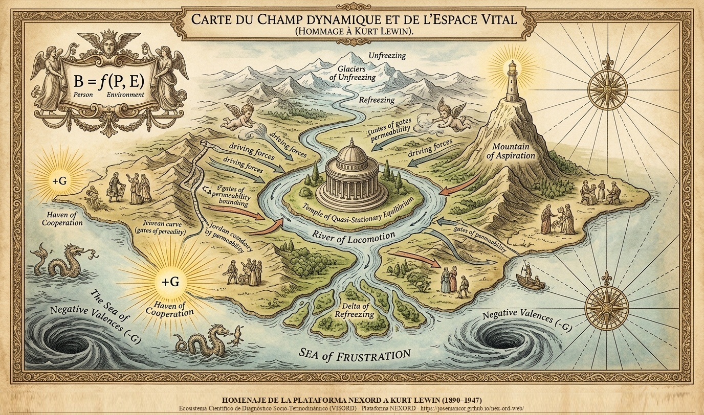<figcaption style="color:#8B0000; font-weight:700; font-size:11.5px; margin-top:8px; text-align:center;">Figure 2. Kurt Lewin's Champ Dynamique & Espace Vital map (1936–1951): life space as a field of interactive forces, with NEXORD commemorative border.</figcaption></figure>
<h3>1.2. From Qualitative Hierarchy to Continuous Field: The Inverse Rank Function</h3>
<p>In the foundation of the scientific method, order conceptually precedes quantitative metrics. While assigning cardinal magnitudes to affective states assumes interval scales that do not necessarily reflect the subjective decision process, preferential ranking aligns directly with the nature of relational judgment: individuals hierarchize, prioritize, and choose their ties.</p>
<p>Recording sequential order of choice captures the structure of interpersonal preferences with fidelity without imposing a priori metric assumptions. In NEXORD, the continuous metric is not introduced as an external postulate, but emerges analytically from relational order through the inverse rank function.</p>
<p>The analytical mechanism enabling this transition from qualitative ordering to continuous calculus is the rigorous quantification of hierarchical rank through the inverse rank function:</p>
<table style="width:100%; border:none; margin:14px auto; background-color:#F8FAFC; border-left:3px solid #8B0000; border-collapse:collapse; box-shadow:none;"><tr style="border:none; background:transparent;"><td style="border:none; text-align:center; padding:8px 14px; font-family:'Cambria Math', 'Times New Roman', serif; font-size:15px; vertical-align:middle;"><em>W<sub>ij</sub></em> = 1 / <em>r<sub>ij</sub><sup>&gamma;</sup></em></td><td style="border:none; width:55px; text-align:right; padding:6px 14px; font-family:'Inter', sans-serif; font-weight:700; color:#8B0000; font-size:14px; vertical-align:middle;">(1)</td></tr></table>
<p>where <em>r</em><sub>ij</sub> &isin; {1, 2, &hellip;, <em>N</em>} represents the strict ordinal rank assigned by selector <em>i</em> to peer <em>j</em>, and &gamma; governs the rate of field aperture and decay.</p>
<p>In its complementary bounded continuous formulation, normalized interpersonal density takes the form:</p>
<table style="width:100%; border:none; margin:14px auto; background-color:#F8FAFC; border-left:3px solid #8B0000; border-collapse:collapse; box-shadow:none;"><tr style="border:none; background:transparent;"><td style="border:none; text-align:center; padding:8px 14px; font-family:'Cambria Math', 'Times New Roman', serif; font-size:15px; vertical-align:middle;"><em>Z<sub>ij</sub></em> = (<em>N</em> &minus; <em>r<sub>ij</sub></em>) / (<em>N</em> &minus; 1) &isin; [0, 1]</td><td style="border:none; width:55px; text-align:right; padding:6px 14px; font-family:'Inter', sans-serif; font-weight:700; color:#8B0000; font-size:14px; vertical-align:middle;">(2)</td></tr></table>
<p>where the top rank (<em>r</em><sub>ij</sub> = 1) reaches the unitary bound (<em>Z</em> = 1.0), the bottom rank (<em>r</em><sub>ij</sub> = <em>N</em>) drops to absolute zero (<em>Z</em> = 0.0), and intermediate ranks are distributed in strictly equispaced intervals. It is essential to distinguish operator hierarchy: the inverse rank function (1) constitutes the fundamental operator for quantifying preference rank and drives the platform's relational engine (SMIb sociomatrix weights and field decay); the bounded linear transformation (2) is an operational simplification utilized by interface and AI layers, and for metrics requiring strict [0, 1] bounds, such as the friction coefficient &Phi;. Both transformations allow the dyadic tie to be operated as a continuous and differentiable force, projectable onto complex geometric manifolds. This formal convergence aligns with modern statistical frameworks for rank-order relational data (Krivitsky & Butts, 2017) and psychometric evidence regarding measurement degradation in truncated discrete quotas (Terry, 2000).</p>
<h3>1.3. The Fundamental Axiom: GIVING and RECEIVING as an Indissociable Circuit</h3>
<p>Emitting preferences (GIVING) and receiving collective impact (RECEIVING) do not constitute independent psychological traits or isolated personality variables: they are polar, indissociable constituent moments of a single continuous relational circuit.</p>
<p>The harmonious functioning or pathological fracture of a group does not reside in members taken in isolation, but in the fluidity, symmetry, and shear of their mutual exchanges. An actor may exhibit an intensely cooperative disposition while the group systematically relegates them to invisibility or rejection; divorcing these two poles leads to diagnoses blind to latent exclusion and to stigmatizing interventions.</p>
<hr>
<div id="section-2-capture-protocol"></div><h2>2. Capture Protocol: BREVE Format, Matrix Duality, and Diagonal Closure</h2>
<h3>2.1. Forced Drag without Ties and Matrix Duality A(i, rank) vs. B(i, j)</h3>
<p>In classical sociometry, manual computation constraints naturally favored tallying procedures based on fixed quotas (typically three choices and three rejections), where each nomination received equal unit weight (1 = 1). This procedure, fully justified in its historical era, left undifferentiated the gradient of intensity between primary nuclear preferences and secondary choices.</p>
<p>The BREVE Format (operationalized as the ORBIT Sociomatrix) formalizes exhaustive preferential ordering A(<em>i</em>, <em>k</em>) = <em>j</em> over the entire collective, incorporating sender self-anchoring (<em>r</em><sub>ii</sub> &isin; {1, &hellip;, <em>N</em>}). Complete ordering without ties represents the continuous hierarchy of choices, facilitating natural participant expression and preserving data richness without quota truncation. From this ordinal foundation, the model formalizes the matrix and continuous treatment of relational exchanges as a permutation of group space.</p>
<p>In the BREVE Format, participants view a randomized peer roster to neutralize visual or sequential anchoring biases. Through an ergonomic drag-and-drop interface, each subject orders all group members between a maximum preference pole and a rejection pole. The algorithmic zero-ties rule (<em>r</em><sub>ij</sub> &ne; <em>r</em><sub>ik</sub>, &forall; <em>j</em> &ne; <em>k</em>) eradicates social desirability and acquiescence biases, ensuring a complete and strict ordering. This capture splits analytically into two complementary, bijective matrix structures:</p>
<ul>
<li><strong>Direct Capture Matrix A(<em>i</em>, <em>k</em>) BREVE:</strong> An <em>N</em> &times; <em>N</em> matrix where each row corresponds to sender <em>i</em>, each column to ordinal slot <em>k</em> &isin; {1^\circ, 2^\circ, &hellip;, <em>N</em>^\circ}, and the cell entry identifies the peer assigned to that rank:</li>
<table style="width:100%; border:none; margin:14px auto; background-color:#F8FAFC; border-left:3px solid #8B0000; border-collapse:collapse; box-shadow:none;"><tr style="border:none; background:transparent;"><td style="border:none; text-align:center; padding:8px 14px; font-family:'Cambria Math', 'Times New Roman', serif; font-size:15px; vertical-align:middle;"><em>A</em>(<em>i</em>, <em>k</em>) = j</td><td style="border:none; width:55px; text-align:right; padding:6px 14px; font-family:'Inter', sans-serif; font-weight:700; color:#8B0000; font-size:14px; vertical-align:middle;">(3)</td></tr></table>
</ul>
<ul>
<li><strong>Official Rank Distribution Sociomatrix B(<em>i</em>, <em>j</em>):</strong> A square <em>N</em> &times; <em>N</em> sociomatrix where rows (<em>i</em>) and columns (<em>j</em>) index group members, recording the numerical rank assigned:</li>
<table style="width:100%; border:none; margin:14px auto; background-color:#F8FAFC; border-left:3px solid #8B0000; border-collapse:collapse; box-shadow:none;"><tr style="border:none; background:transparent;"><td style="border:none; text-align:center; padding:8px 14px; font-family:'Cambria Math', 'Times New Roman', serif; font-size:15px; vertical-align:middle;"><em>B</em>(<em>i</em>, <em>j</em>) = k &hArr; <em>A</em>(<em>i</em>, <em>k</em>) = j</td><td style="border:none; width:55px; text-align:right; padding:6px 14px; font-family:'Inter', sans-serif; font-weight:700; color:#8B0000; font-size:14px; vertical-align:middle;">(4)</td></tr></table>
</ul>
<p>This duality decouples evaluator cognitive load during ordering from downstream algebraic computation, satisfying row rank-sum conservation (Figures 3–5): \sum_{<em>j</em>=1}<sup><em>N</em></sup> B(<em>i</em>, <em>j</em>) = \frac{<em>N</em>(<em>N</em>+1)}{2}.</p>
<h3>2.2. Reflexive Diagonal Closure and Core Sensors (IDA, ITA, P(k))</h3>
<p>NEXORD resolves the historical omission of the sociometric main diagonal (traditionally empty, <em>r</em><sub>ii</sub> = &empty;) by requiring each participant to self-rank within the collective (<em>r</em><sub>ii</sub> &isin; {1, &hellip;, <em>N</em>}). This topological closure turns the sociomatrix into a continuous, complete relational space, activating three fundamental metric sensors:</p>
<ul>
<li><strong>Self-Rank Discrepancy Index (<em>IDA</em><sub><em>i</em></sub>):</strong> Quantifies scalar divergence between projected self-image (<em>r</em><sub>ii</sub>) and external collective consensus (\bar{<em>R</em>}_i<sup>ext</sup>):</li>
<table style="width:100%; border:none; margin:14px auto; background-color:#F8FAFC; border-left:3px solid #8B0000; border-collapse:collapse; box-shadow:none;"><tr style="border:none; background:transparent;"><td style="border:none; text-align:center; padding:8px 14px; font-family:'Cambria Math', 'Times New Roman', serif; font-size:15px; vertical-align:middle;"><em>IDA<sub>i</sub></em> = <em>r<sub>ii</sub></em> - <em>R&#772;<sub>i</sub></em><sup>ext</sup> = <em>r<sub>ii</sub></em> - ( 1 / (<em>N</em> &minus; 1) &sum;<sub><em>k</em>&ne;<em>i</em></sub> B(k, i) )</td><td style="border:none; width:55px; text-align:right; padding:6px 14px; font-family:'Inter', sans-serif; font-weight:700; color:#8B0000; font-size:14px; vertical-align:middle;">(5)</td></tr></table>
</ul>
<p>where <em>IDA</em><sub><em>i</em></sub> &lt; 0 reflects hierarchical overestimation, <em>IDA</em><sub><em>i</em></sub> &gt; 0 peripheral self-inhibition or underestimation, and <em>IDA</em><sub><em>i</em></sub> = 0 isomorphic calibration with the social environment. At the group level, collective discrepancy is synthesized through root mean square dispersion:</p>
<table style="width:100%; border:none; margin:14px auto; background-color:#F8FAFC; border-left:3px solid #8B0000; border-collapse:collapse; box-shadow:none;"><tr style="border:none; background:transparent;"><td style="border:none; text-align:center; padding:8px 14px; font-family:'Cambria Math', 'Times New Roman', serif; font-size:15px; vertical-align:middle;"><em>&sigma;</em><sub>IDA</sub> = &radic;[ (1/<em>N</em>) &sum;<sub><em>i</em>=1..<em>N</em></sub> (<em>IDA<sub>i</sub></em>)&sup2; ]</td><td style="border:none; width:55px; text-align:right; padding:6px 14px; font-family:'Inter', sans-serif; font-weight:700; color:#8B0000; font-size:14px; vertical-align:middle;">(6)</td></tr></table>
<ul>
<li><strong>Self-Rank Tension Index (ITA):</strong> Measures structural friction induced by leadership contestation when multiple members claim rank 1 for themselves:</li>
<table style="width:100%; border:none; margin:14px auto; background-color:#F8FAFC; border-left:3px solid #8B0000; border-collapse:collapse; box-shadow:none;"><tr style="border:none; background:transparent;"><td style="border:none; text-align:center; padding:8px 14px; font-family:'Cambria Math', 'Times New Roman', serif; font-size:15px; vertical-align:middle;">ITA = max[ 0, &sum; &#x1D7D9;(<em>r<sub>ii</sub></em> = 1) ] &minus; 1</td><td style="border:none; width:55px; text-align:right; padding:6px 14px; font-family:'Inter', sans-serif; font-weight:700; color:#8B0000; font-size:14px; vertical-align:middle;">(7)</td></tr></table>
</ul>
<ul>
<li><strong>Cognitive Partition and Combinatorial Anchor P(<em>k</em>):</strong> By self-ranking at position <em>k</em>, the subject's admissible combinatorial space collapses to:</li>
<table style="width:100%; border:none; margin:14px auto; background-color:#F8FAFC; border-left:3px solid #8B0000; border-collapse:collapse; box-shadow:none;"><tr style="border:none; background:transparent;"><td style="border:none; text-align:center; padding:8px 14px; font-family:'Cambria Math', 'Times New Roman', serif; font-size:15px; vertical-align:middle;">P(k) = C(<em>N</em> &minus; 1, <em>k</em> &minus; 1)</td><td style="border:none; width:55px; text-align:right; padding:6px 14px; font-family:'Inter', sans-serif; font-weight:700; color:#8B0000; font-size:14px; vertical-align:middle;">(8)</td></tr></table>
</ul>
<p>analytically formalizing that interpersonal choices are emitted from a reference self-anchor: upward or downward relative to one's own subjective position.</p>
<hr>
<div id="section-3-relational-dynamics"></div><h2>3. Relational Dynamics: Field Regimes, Friction, and Viability</h2>
<h3>3.1. Relational Friction Coefficient (Φ) and Structural Cohesion (ICE)</h3>
<p>Internal resistance across the collective system is synthesized in the Relational Friction Coefficient (&Phi;) and its complementary Structural Cohesion Index (ICE):</p>
<table style="width:100%; border:none; margin:14px auto; background-color:#F8FAFC; border-left:3px solid #8B0000; border-collapse:collapse; box-shadow:none;"><tr style="border:none; background:transparent;"><td style="border:none; text-align:center; padding:8px 14px; font-family:'Cambria Math', 'Times New Roman', serif; font-size:15px; vertical-align:middle;">&Phi; = 2 / [<em>N</em>(<em>N</em> &minus; 1)] &sum;<sub><em>i</em>&lt;<em>j</em></sub> |<em>Z<sub>ij</sub></em> - <em>Z<sub>ji</sub></em>|^&alpha; \quad (&alpha; &ge; 1)</td><td style="border:none; width:55px; text-align:right; padding:6px 14px; font-family:'Inter', sans-serif; font-weight:700; color:#8B0000; font-size:14px; vertical-align:middle;">(9)</td></tr></table>
<table style="width:100%; border:none; margin:14px auto; background-color:#F8FAFC; border-left:3px solid #8B0000; border-collapse:collapse; box-shadow:none;"><tr style="border:none; background:transparent;"><td style="border:none; text-align:center; padding:8px 14px; font-family:'Cambria Math', 'Times New Roman', serif; font-size:15px; vertical-align:middle;">ICE = 1 - &Phi;</td><td style="border:none; width:55px; text-align:right; padding:6px 14px; font-family:'Inter', sans-serif; font-weight:700; color:#8B0000; font-size:14px; vertical-align:middle;">(10)</td></tr></table>
<p>Moderate values of &Phi; reflect internal dynamism and adaptive plasticity, while extreme values indicate risks of fragmentation or destructive turbulence.</p>
<h3>3.2. Psychologization of Field Regimes and Groupthink Prevention</h3>
<p>Collective dynamics cannot be reduced to inanimate physics: system states express distinct regimes of interpersonal and psychological articulation:</p>
<ul>
<li><strong>Structural Rigidity and Inertia Regime:</strong> Rigid hierarchical crystalization, immobile roles, and minimal communicative permeability.</li>
<li><strong>Fluidity and Adaptive Cohesion Regime:</strong> Open homeostasis with flexible circulation of preferences, agreements, and divergences.</li>
<li><strong>Dispersion and Anomie Regime:</strong> Low coupling density, affective disengagement, and absence of shared projects.</li>
<li><strong>Collective Effervescence and Fusion Regime:</strong> High shared emotional arousal and intense interactive mobilization.</li>
</ul>
<p>Through this lens, NEXORD radically challenges the conventional assumption that optimal group health equals absolute cohesion (ICE = 1.0, &Phi; = 0). A collective devoid of internal friction or discrepancy constitutes an inherently fragile system vulnerable to groupthink (<em>Groupthink</em>, Janis, 1972), where conformity pressures suppress critical thinking and informed decision-making. Moderate friction (&Phi; &isin; [&Phi;_{\min}, &Phi;_{\max}]) and gradient flows across GIVING/RECEIVING supply the necessary energy for institutional plasticity, organizational learning, and evolutionary adaptation.</p>
<h3>3.3. The Living Puzzle Metaphor: Unjamming vs. Ecosystemic Relocation</h3>
<p>In contrast to traditional interventions managing conflict through punitive exclusion or moral blaming of dissident members, NEXORD models the collective as a living puzzle. An actor experiencing high friction is not intrinsically pathological: they typically suffer role expectation mismatches or flow asymmetries with their immediate dyadic environment.</p>
<p>Diagnostic facilitation promotes unjamming through task realignment, communicative clarification, and opening reciprocal collaboration channels. When structural incompatibility persists after systematic mediation, the framework provides for dignified ecosystemic relocation: migration to an alternative group environment preserving the individual's psychosocial integrity while preventing chronic wear or ostracism.</p>
<h3>3.4. The Ocean of Microstates and the Thermodynamic Stability Law</h3>
<p>The dimension of the sociometric sample space, even in small groups, is vast. For a group of five individuals, each member ranking four peers has 4! = 24 strict ordering options; combining choices across the five members yields 24<sup>5</sup> = 7,962,624 possible matrices. Including the sender's self-ranking (5! = 120 orders per row), the configuration space explodes to 120<sup>5</sup> &asymp; 2.49 &times; 10<sup>10</sup>—nearly 25 billion configurations—in a single room with five human beings seated around a table. Within this ocean, thermodynamic stability and systemic health do not depend on chance, but on the geometry of energy flux: minimizing shear dissipation and establishing stable attractors.</p>
<p>The vast majority of combinations correspond to thermal noise (dissonant high-friction matrices) or freezing traps (tectonic fault-lines and stifling monopolies). For a microstate to surpass thresholds of productive, healthy organization, it must simultaneously satisfy three thermodynamic invariants:</p>
<ol>
<li><strong>Minimizing shear dissipation:</strong> \<em>sum</em><sub><em>i</em></sub> |<em><em>Z</em></em><sub>ij</sub> - <em><em>Z</em></em><sub>ji</sub>|<sup>2</sup> &rarr; \min (reciprocity and mutual coherence).</li>
<li><strong>Barometric gradient balance:</strong> \<em>sum</em><sub><em>i</em></sub> (<em><em>Z</em></em><sub><em>i</em></sub><sup>in</sup> - <em><em>Z</em></em><sub><em>i</em></sub><sup>out</sup>)<sup>2</sup> &le; \varepsilon (absence of black sinks or overloaded springs).</li>
<li><strong>Global convective connectivity:</strong> existence of transitive return chains without isolated nodes (<em><em>Z</em></em><sub><em>i</em></sub><sup>in</sup> &gt; Z_{\text{critical}} for all <em>i</em>).</li>
</ol>
<p>Out of the combinatorial ocean, only a select percentage inhabits this optimal regime: group wellbeing is not the absence of structure, but an architecture of tensions where no one is condemned to absolute zero or forced to carry the collective weight alone.</p>
<p>In summary: group health and productivity are not matters of moral goodwill, but of relational aerodynamics and hydrostatics. A productive group is one whose ellipsoid flies level, whose energy accounts maintain homeostatic balance, and where no member drowns at the bottom of the canyon so others can sunbathe in the open sky.</p>
<hr>
<div id="section-4-tensorial-algebra"></div><h2>4. Tensorial Algebra, Q81 Lattice, and the Densities Pentagram</h2>
<h3>4.1. 12-Symbol Atomic Grammar and the Relational Cell X1 X2 X3 X4</h3>
<p>The Q81 lattice formalizes the complete combinatorial space of all 3<sup>4</sup> = 81 dyadic configurations structuring the relational field. To provide an exact, unambiguous notation, NEXORD establishes a 12-symbol alphabet distributed across three relational polarity states:</p>
<h4 style="color:#8B0000; font-weight:700; font-size:13px; margin-top:22px; margin-bottom:8px; page-break-after:avoid;">Table 1: Atomic grammar — the 12 symbols of the NEXORD relational alphabet</h4>
<table border="1" cellpadding="6" cellspacing="0" style="width:100%; border-collapse:collapse; border:1px solid #CBD5E0; margin:18px 0; font-size:11px; font-family:'Inter', sans-serif;">
<tr><th style="border:1px solid #CBD5E0; padding:6px 7px; text-align:center; vertical-align:middle; background-color:#1E3A8A; color:#FFFFFF; font-weight:700; font-size:11px; white-space:nowrap;">Relational Dimension</th><th style="border:1px solid #CBD5E0; padding:6px 7px; text-align:center; vertical-align:middle; background-color:#1E3A8A; color:#FFFFFF; font-weight:700; font-size:11px; white-space:nowrap;">Positive (+)</th><th style="border:1px solid #CBD5E0; padding:6px 7px; text-align:center; vertical-align:middle; background-color:#1E3A8A; color:#FFFFFF; font-weight:700; font-size:11px; white-space:nowrap;">Neutral (0)</th><th style="border:1px solid #CBD5E0; padding:6px 7px; text-align:center; vertical-align:middle; background-color:#1E3A8A; color:#FFFFFF; font-weight:700; font-size:11px; white-space:nowrap;">Negative (−)</th></tr>
<tr><td style="border:1px solid #CBD5E0; padding:6px 7px; text-align:center; vertical-align:middle; font-size:11px;"><strong>Sender Real Action (<em>i</em> &rarr; <em>j</em>)</strong></td><td style="border:1px solid #CBD5E0; padding:6px 7px; text-align:center; vertical-align:middle; font-size:11px;"><code>E</code> (Uppercase)</td><td style="border:1px solid #CBD5E0; padding:6px 7px; text-align:center; vertical-align:middle; font-size:11px;"><code>¿</code> (Opening question)</td><td style="border:1px solid #CBD5E0; padding:6px 7px; text-align:center; vertical-align:middle; font-size:11px;"><code>R</code> (Uppercase)</td></tr>
<tr><td style="border:1px solid #CBD5E0; padding:6px 7px; text-align:center; vertical-align:middle; font-size:11px;"><strong>Receiver Real Action (<em>j</em> &rarr; <em>i</em>)</strong></td><td style="border:1px solid #CBD5E0; padding:6px 7px; text-align:center; vertical-align:middle; font-size:11px;"><code>e</code> (Lowercase)</td><td style="border:1px solid #CBD5E0; padding:6px 7px; text-align:center; vertical-align:middle; font-size:11px;"><code>?</code> (Closing question)</td><td style="border:1px solid #CBD5E0; padding:6px 7px; text-align:center; vertical-align:middle; font-size:11px;"><code>r</code> (Lowercase)</td></tr>
<tr><td style="border:1px solid #CBD5E0; padding:6px 7px; text-align:center; vertical-align:middle; font-size:11px;"><strong>Sender Expectation (<em>p</em>\_DA)</strong></td><td style="border:1px solid #CBD5E0; padding:6px 7px; text-align:center; vertical-align:middle; font-size:11px;"><code>&lt;</code> (Opening bracket)</td><td style="border:1px solid #CBD5E0; padding:6px 7px; text-align:center; vertical-align:middle; font-size:11px;"><code>i</code> (Neutral character)</td><td style="border:1px solid #CBD5E0; padding:6px 7px; text-align:center; vertical-align:middle; font-size:11px;"><code>[</code> (Opening square)</td></tr>
<tr><td style="border:1px solid #CBD5E0; padding:6px 7px; text-align:center; vertical-align:middle; font-size:11px;"><strong>Receiver Attributed Expectation (<em>p</em>\_REC)</strong></td><td style="border:1px solid #CBD5E0; padding:6px 7px; text-align:center; vertical-align:middle; font-size:11px;"><code>&gt;</code> (Closing bracket)</td><td style="border:1px solid #CBD5E0; padding:6px 7px; text-align:center; vertical-align:middle; font-size:11px;"><code>!</code> (Exclamation)</td><td style="border:1px solid #CBD5E0; padding:6px 7px; text-align:center; vertical-align:middle; font-size:11px;"><code>]</code> (Closing square)</td></tr>
</table>
<p>Each interpersonal tie (<em>i</em>, <em>j</em>) is formalized as a four-character relational word:</p>
<table style="width:100%; border:none; margin:14px auto; background-color:#F8FAFC; border-left:3px solid #8B0000; border-collapse:collapse; box-shadow:none;"><tr style="border:none; background:transparent;"><td style="border:none; text-align:center; padding:8px 14px; font-family:'Cambria Math', 'Times New Roman', serif; font-size:15px; vertical-align:middle;"><em>Figure<sub>ij</sub></em> = X_1 X_2 X_3 X_4 &isin; {<, i, [} &times; {E, \text{¿}, R} &times; {e, ?, r} &times; {>, !, ]}</td><td style="border:none; width:55px; text-align:right; padding:6px 14px; font-family:'Inter', sans-serif; font-weight:700; color:#8B0000; font-size:14px; vertical-align:middle;">(11)</td></tr></table>
<ul>
<li><em>X</em><sub>1</sub>: Cognitive expectation emitted by selector <em>i</em> regarding what they expect from <em>j</em>.</li>
<li><em>X</em><sub>2</sub>: Active vector of real behavioral emission from <em>i</em> toward <em>j</em>.</li>
<li><em>X</em><sub>3</sub>: Reactive vector of real behavioral reception returned by <em>j</em> toward <em>i</em>.</li>
<li><em>X</em><sub>4</sub>: Cognitive expectation attributed by <em>i</em> to <em>j</em>'s response.</li>
</ul>
<p>From this atomic catalogue emerge official relational archetypes:</p>
<ul>
<li><code>&lt;Ee&gt;</code>: Full harmony and resonance (mutual choice and confirmed expectation).</li>
<li><code>[Rr]</code>: Acknowledged conflict and segregation (explicit, congruent mutual rejection).</li>
<li><code>i¿?!</code>: Basal indifference or field inertia (interactive and perceptual zero-point).</li>
</ul>
<p>Formalizing signed configurations (+ / -) and measuring dyadic friction dialogs constructively with contemporary research on signed graphs, communicability geometry, and structural frustration indices (Aref & Wilson, 2021; Cucuringu et al., 2023; Diaz-Diaz & Estrada, 2025).</p>
<h3>4.2. Antidiagonal Topology of the (9 × 9) Lattice and [1, 81] Numeralization as the First Density Metric</h3>
<p>The 9 &times; 9 partition crosses 9 objective behavioral interaction profiles (rows <em>i</em> = \text{&lt;<em>E</em>}, \text{¡<em>E</em>}, \text{[<em>E</em>}, \text{&lt;¿}, \text{<em>i</em>¿}, \text{[¿}, \text{&lt;<em>R</em>}, \text{¡<em>R</em>}, \text{[<em>R</em>}) with 9 crossed cognitive expectation profiles (columns <em>j</em> = \text{e&gt;}, \text{e!}, \text{e]}, \text{?&gt;}, \text{?!}, \text{?]}, \text{r&gt;}, \text{r!}, \text{r]}).</p>
<p>The numeralization of the 81 relational figures (<em>Q</em><sub>81</sub>(9, 9)) is solved geometrically via an ordered sweep of 17 secondary antidiagonals traversed bottom-up: each antidiagonal defines an isoline of constant net relational valence and energy, such that all figures situated along the same antidiagonal share an identical sum of polarities between actual actions and cognitive expectations.</p>
<p>This geometric ordering provides the <strong>first metric-scalar quantification of dyadic relational density</strong> (<em>D</em><sub>Q81</sub> &isin; [1, 81]), structured into three fundamental regions:</p>
<ul>
<li><strong>Hemisphere of Dissonance and Rejection (Scalars 1 to 36):</strong> The first 8 lower antidiagonals cover \sum_{<em>k</em>=1}<sup>8</sup> <em>k</em> = \frac{8 &times; 9}{2} = 36 figures situated in the zone of conflict, attrition, and relational withdrawal, originating at the pole of maximum negative density: <code>[Rr]</code> = 1.</li>
<li><strong>Neutral Barycentric Isoline (Scalars 37 to 45):</strong> The transversal central antidiagonal (d = 9, comprising 9 cells) spans scalars 37 to 45. Its central cell (coordinate 5, 5) uniquely fixes the <strong>basal indifference centroid</strong>:</li>
</ul>
<p>  \text{Cell}(5, 5) \implies i\text{¿}?! = 41 \tag{12}</p>
<ul>
<li><strong>Hemisphere of Cohesion and Resonance (Scalars 46 to 81):</strong> The 8 upper antidiagonals cover the 36 figures of attraction, convergence, and synergy up to the tip of antidiagonal 17 (length 1), crowning the space at full harmonic resonance: <code>&lt;Ee&gt;</code> = 81.</li>
</ul>
<p><strong>Continuous Normalization of <em>Q</em><sub>81</sub> Density:</strong></p>
<p>By centering the scale on the neutral indifference centroid (41), the figure's elementary dyadic density is normalized onto the official continuous range [-1.00, +1.00]:</p>
<table style="width:100%; border:none; margin:14px auto; background-color:#F8FAFC; border-left:3px solid #8B0000; border-collapse:collapse; box-shadow:none;"><tr style="border:none; background:transparent;"><td style="border:none; text-align:center; padding:8px 14px; font-family:'Cambria Math', 'Times New Roman', serif; font-size:15px; vertical-align:middle;">D_{Q81}(i, j) = \frac{Q_{81}(i, j) - 41}{40}</td><td style="border:none; width:55px; text-align:right; padding:6px 14px; font-family:'Inter', sans-serif; font-weight:700; color:#8B0000; font-size:14px; vertical-align:middle;">(13)</td></tr></table>
<p>where:</p>
<ul>
<li>\text{Maximum Positive Density: } <em>D</em><sub>Q81</sub>(\text{&lt;Ee&gt;}) = \frac{81 - 41}{40} = \mathbf{+1.000}</li>
<li>\text{Basal Neutral Density: } <em>D</em><sub>Q81</sub>(<em>i</em>\text{¿}?!) = \frac{41 - 41}{40} = \mathbf{0.000}</li>
<li>\text{Maximum Negative Density: } <em>D</em><sub>Q81</sub>(\text{[Rr]}) = \frac{1 - 41}{40} = \mathbf{-1.000}</li>
</ul>
<p>This geometry preserves strict <strong>antipodal complementary symmetry</strong>: \text{Antipode}(<em>k</em>) = 82 - <em>k</em>, meaning that \text{Figure}(<em>i</em>, <em>j</em>) + \text{Figure}(10-<em>i</em>, 10-<em>j</em>) = 82, proving that the neutral centroid is self-invariant under polar inversion (41 + 41 = 82).</p>
<h3>4.3. The Subject's Structural Triptych Ti and Split Diagnosis</h3>
<p>Collapsing an individual's ties into a simple arithmetic scalar mean represents a severe methodological flaw producing diagnostic cancellation artifacts (a person with one tie at 81 and another at 1 would falsely average 41, indistinguishable from basal indifference). NEXORD preserves topological bidimensionality by splitting subject <em>i</em>'s position into its Official Structural Triptych:</p>
<table style="width:100%; border:none; margin:14px auto; background-color:#F8FAFC; border-left:3px solid #8B0000; border-collapse:collapse; box-shadow:none;"><tr style="border:none; background:transparent;"><td style="border:none; text-align:center; padding:8px 14px; font-family:'Cambria Math', 'Times New Roman', serif; font-size:15px; vertical-align:middle;"><em>T<sub>i</sub></em> = ( F_i^{out}, F_i^{in}, <em>f<sub>ii</sub></em> )</td><td style="border:none; width:55px; text-align:right; padding:6px 14px; font-family:'Inter', sans-serif; font-weight:700; color:#8B0000; font-size:14px; vertical-align:middle;">(14)</td></tr></table>
<ul>
<li><strong>Global Outbound Figure (<em>F</em><sub><em>i</em></sub><sup>out</sup>):</strong> Two-dimensional centroid (\bar{X}_i<sup>out</sup>, \bar{Y}_i<sup>out</sup>) computed across row <em>i</em>, measuring initiative, active disposition, and baseline trust emitted by <em>i</em>.</li>
<li><strong>Global Inbound Figure (<em>F</em><sub><em>i</em></sub><sup>in</sup>):</strong> Two-dimensional centroid (\bar{X}_i<sup>in</sup>, \bar{Y}_i<sup>in</sup>) computed across column <em>i</em>, quantifying objective impact, convergent status, and expectations deposited upon <em>i</em>.</li>
<li><strong>Reflexive Self-Anchor (<em>f</em><sub>ii</sub>):</strong> Diagonal reflexive closure in Q81 formalizing self-image and psychosocial self-efficacy.</li>
</ul>
<p>From positional discrepancy &Delta;_{\text{role}} = <em>F</em><sub><em>i</em></sub><sup>out</sup> - <em>F</em><sub><em>i</em></sub><sup>in</sup> emerge immediate diagnostic profiles:</p>
<ul>
<li><strong>Relational Burnout Syndrome:</strong> <em>F</em><sub><em>i</em></sub><sup>out</sup> &gg; <em>F</em><sub><em>i</em></sub><sup>in</sup> with declining <em>f</em><sub>ii</sub> (unreciprocated investment anticipating withdrawal).</li>
<li><strong>Withdrawn or Reserve Leadership:</strong> <em>F</em><sub><em>i</em></sub><sup>in</sup> &gg; <em>F</em><sub><em>i</em></sub><sup>out</sup> (strong collective demand paired with cautious outbound emission).</li>
<li><strong>Status Inhibition:</strong> <em>F</em><sub><em>i</em></sub><sup>in</sup> &gg; 41 coexisting with <em>f</em><sub>ii</sub> &le; 41 (high objective peer recognition unassimilated into self-perception).</li>
</ul>
<h3>4.4. The 18D Relational Hyperspace, the 3 Dual Prisms, and the Densities Pentagram (10D)</h3>
<h4 style="color:#8B0000; font-weight:700; font-size:13px; margin-top:22px; margin-bottom:8px; page-break-after:avoid;">4.4.1. Dyadic Modulators and Architecture of the 18 Relational Densities (Table 3b and Annex V)</h4>
<p>The calculation of dyadic relational density is not a mere static sum of choices; it incorporates physical and structural modulators that evaluate reciprocity, perceptual effort, and group prestige:</p>
<h4 style="color:#8B0000; font-weight:700; font-size:13px; margin-top:22px; margin-bottom:8px; page-break-after:avoid;">Table 3b. Algorithmic Traceability Matrix and Dyadic Density Modulators</h4>
<table border="1" cellpadding="6" cellspacing="0" style="width:100%; border-collapse:collapse; border:1px solid #CBD5E0; margin:18px 0; font-size:11px; font-family:'Inter', sans-serif;">
<tr><th style="border:1px solid #CBD5E0; padding:6px 7px; text-align:center; vertical-align:middle; background-color:#1E3A8A; color:#FFFFFF; font-weight:700; font-size:11px; white-space:nowrap;">Force Vector</th><th style="border:1px solid #CBD5E0; padding:6px 7px; text-align:center; vertical-align:middle; background-color:#1E3A8A; color:#FFFFFF; font-weight:700; font-size:11px; white-space:nowrap;">Evaluated Condition</th><th style="border:1px solid #CBD5E0; padding:6px 7px; text-align:center; vertical-align:middle; background-color:#1E3A8A; color:#FFFFFF; font-weight:700; font-size:11px; white-space:nowrap;">Assigned Mathematical Modulator</th><th style="border:1px solid #CBD5E0; padding:6px 7px; text-align:center; vertical-align:middle; background-color:#1E3A8A; color:#FFFFFF; font-weight:700; font-size:11px; white-space:nowrap;">Structural Impact</th></tr>
<tr><td style="border:1px solid #CBD5E0; padding:6px 7px; text-align:center; vertical-align:middle; font-size:11px;"><strong>1. Inverse Rank Function (1/r<sup><em>k</em></sup>)</strong></td><td style="border:1px solid #CBD5E0; padding:6px 7px; text-align:center; vertical-align:middle; font-size:11px;">Ordinal Rank (1st, 2nd, 3rd...)</td><td style="border:1px solid #CBD5E0; padding:6px 7px; text-align:center; vertical-align:middle; font-size:11px;">\text{Base}</td><td style="border:1px solid #CBD5E0; padding:6px 7px; text-align:center; vertical-align:middle; font-size:11px;">Sets initial tie potential. Exponentially penalizes (<em>k</em> &ge; 1.0) low attentional priority.</td></tr>
<tr><td style="border:1px solid #CBD5E0; padding:6px 7px; text-align:center; vertical-align:middle; font-size:11px;"><strong>2. Dyadic Reciprocity</strong></td><td style="border:1px solid #CBD5E0; padding:6px 7px; text-align:center; vertical-align:middle; font-size:11px;">Action Congruence (<code>Ee</code>, <code>Rr</code>, <code>Aa</code>)</td><td style="border:1px solid #CBD5E0; padding:6px 7px; text-align:center; vertical-align:middle; font-size:11px;"><strong>1.5&times;</strong></td><td style="border:1px solid #CBD5E0; padding:6px 7px; text-align:center; vertical-align:middle; font-size:11px;">Massively prioritizes (+50%) actual factual ties and symmetric relational homomorphism over mere expectation.</td></tr>
<tr><td style="border:1px solid #CBD5E0; padding:6px 7px; text-align:center; vertical-align:middle; font-size:11px;"><strong>3. Accuracy / Truth</strong></td><td style="border:1px solid #CBD5E0; padding:6px 7px; text-align:center; vertical-align:middle; font-size:11px;">Perceptual Congruence (<code>&lt;e&gt;</code>, <code>(e</code>)</td><td style="border:1px solid #CBD5E0; padding:6px 7px; text-align:center; vertical-align:middle; font-size:11px;"><strong>1.5&times;</strong></td><td style="border:1px solid #CBD5E0; padding:6px 7px; text-align:center; vertical-align:middle; font-size:11px;">Thermodynamic reward for mental lucidity, empathic attunement, and structural network health.</td></tr>
<tr><td style="border:1px solid #CBD5E0; padding:6px 7px; text-align:center; vertical-align:middle; font-size:11px;"><strong>4. Opposing Sentiments</strong></td><td style="border:1px solid #CBD5E0; padding:6px 7px; text-align:center; vertical-align:middle; font-size:11px;">Dissonances and Paranoias (<code>(]</code>, <code>Er</code>, <code>[&gt;</code>)</td><td style="border:1px solid #CBD5E0; padding:6px 7px; text-align:center; vertical-align:middle; font-size:11px;"><strong>-(<em>P</em><sub><em>i</em></sub> &times; 0.5)</strong></td><td style="border:1px solid #CBD5E0; padding:6px 7px; text-align:center; vertical-align:middle; font-size:11px;">Destructive penalty proportional to sender's status (<em>P</em><sub><em>i</em></sub>). Toxicity from a leader inflicts greater network damage than from a peripheral node.</td></tr>
<tr><td style="border:1px solid #CBD5E0; padding:6px 7px; text-align:center; vertical-align:middle; font-size:11px;"><strong>5. Perceptual Effort</strong></td><td style="border:1px solid #CBD5E0; padding:6px 7px; text-align:center; vertical-align:middle; font-size:11px;">Active presence of meta-perception (pDA, pRC)</td><td style="border:1px solid #CBD5E0; padding:6px 7px; text-align:center; vertical-align:middle; font-size:11px;"><strong>1.2&times;</strong></td><td style="border:1px solid #CBD5E0; padding:6px 7px; text-align:center; vertical-align:middle; font-size:11px;">Acknowledges cognitive cost of anticipatory mentalization. <strong>Bonus strictly revoked to 1.0&times; if structural blindness occurs</strong>.</td></tr>
<tr><td style="border:1px solid #CBD5E0; padding:6px 7px; text-align:center; vertical-align:middle; font-size:11px;"><strong>6. Sender's Prestige (<em>P</em><sub><em>i</em></sub>)</strong></td><td style="border:1px solid #CBD5E0; padding:6px 7px; text-align:center; vertical-align:middle; font-size:11px;">Hierarchical Network Centrality</td><td style="border:1px solid #CBD5E0; padding:6px 7px; text-align:center; vertical-align:middle; font-size:11px;"><strong>Variable</strong> (0.5 to 1.5)</td><td style="border:1px solid #CBD5E0; padding:6px 7px; text-align:center; vertical-align:middle; font-size:11px;">Gravitational scale multiplier. Governs the inertial mass dragged by the sender's action across the collective.</td></tr>
</table>
<p>The intersection between emission and reception in the sociomatrix generates the <strong>18-density relational space (18D)</strong>, governed by two analytical prefixes: <strong>S</strong> (signed relative net balance &plusmn;&real;, vector of attraction or rejection) and <strong>B</strong> (gross modular density |&middot;| &ge; 0, total kinetic mass and mobilized investment).</p>
<p>These 18 densities are analytically structured from the four elementary baseline densities (<em>D</em><sub>1</sub> to <em>D</em><sub>4</sub>) across three orthogonal dual prisms and two global invariants (see Annex V for the complete mathematical formulation of each dimension):</p>
<ul>
<li><strong>Prism 1 &mdash; Operational (10D):</strong> Decouples the sender's active emission (SDA, BDA) from receiver status (SRC, BRC).</li>
<li><strong>Prism 2 &mdash; Ontological (14D):</strong> Contrasts the cognitive layer of expectations (SP, BP) with the factual layer of actual choices and rejections (SA, BA).</li>
<li><strong>Prism 3 &mdash; Dialectical (18D):</strong> Evaluates relational realism (<em>S</em><sub>13</sub>, <em>B</em><sub>13</sub>, fulfillment vs. disappointment) and dyadic correspondence or mutual commitment (<em>S</em><sub>24</sub>, <em>B</em><sub>24</sub>).</li>
<li><strong>Global Invariants:</strong> Total Relative Density Balance (SDR) as a homeostatic barometer of group climate, and Gross Relational Density (BDR) as an indicator of total group energy and mass.</li>
</ul>
<h4 style="color:#8B0000; font-weight:700; font-size:13px; margin-top:22px; margin-bottom:8px; page-break-after:avoid;">4.4.2. The 3 Dual Prisms and the Densities Pentagram (Figures 3 and 4)</h4>
<p>The four elementary densities {<em>D</em><sub>1</sub>, <em>D</em><sub>2</sub>, <em>D</em><sub>3</sub>, <em>D</em><sub>4</sub>} admit three independent orthogonal dual partitions or <strong>Prisms</strong> (Figure 3): the <strong>Operational</strong> (10D: Giver vs. Receiver), the <strong>Ontological</strong> (14D: Mind vs. Facts), and the <strong>Dialectical</strong> (18D: Realism vs. Commitment).</p>
<figure class="standard-fig" style="page-break-inside:avoid;"><figcaption style="color:#8B0000; font-weight:700; font-size:11.5px; margin-top:8px; text-align:center;">Figure 3. Architecture of the 18D Relational Space and the 3 Dual Prisms: Structuring of the tetragram into 4 elementary densities (D1–D4), invariant global balances (SDR, BDR), and decomposition across three fundamental axes: Operational (10D), Ontological (14D), and Dialectical (18D).</figcaption></figure>
<p>At the operational level, the <strong>Socio-Thermodynamic Pentagram</strong> (Figure 4) articulates the ten primary densities, decoupling active emission (SDA, BDA) from receptive status (SRC, BRC), culminating in the global invariants SDR and BDR. The analytical gap between total mobilized energy and the resulting net flow formally defines the <strong>Relational Wear Inertia</strong> (<em>I</em><sub>wear</sub> = BDR &minus; SDR), quantifying energy dissipated in friction and structural dissonance before open fractures emerge.</p>
<figure class="standard-fig" style="page-break-inside:avoid;">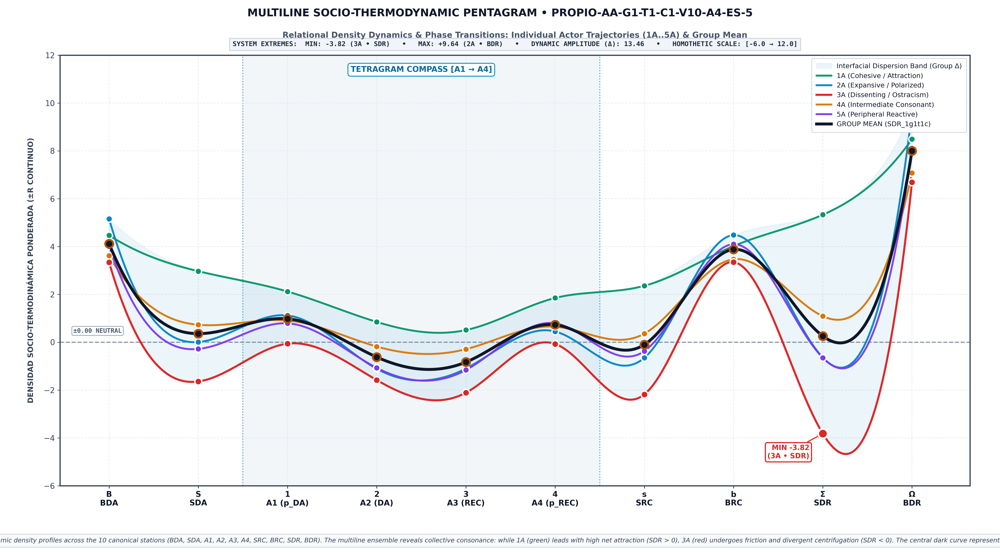<figcaption style="color:#8B0000; font-weight:700; font-size:11.5px; margin-top:8px; text-align:center;">Figure 4. Socio-Thermodynamic Pentagram with the 10 densities: emission/reception decoupling and transition to the thermodynamic continuum; the gap I_wear = BDR − SDR quantifies energy dissipated in friction.</figcaption></figure>
<h3>4.5. The VISORD Aquarium Paradigm and Relational Hydrostatics</h3>
<p>As an experiential and perceptual culmination of this socio-thermodynamic formalism, <strong>VISORD Aquarium</strong> provides an integrated visual and acoustic interactive environment representing relational density structures within a multidimensional G &times; T &times; C design.</p>
<p>The volume is modeled as a 3D continuous aquarium defined over Cartesian space:</p>
<table style="width:100%; border:none; margin:14px auto; background-color:#F8FAFC; border-left:3px solid #8B0000; border-collapse:collapse; box-shadow:none;"><tr style="border:none; background:transparent;"><td style="border:none; text-align:center; padding:8px 14px; font-family:'Cambria Math', 'Times New Roman', serif; font-size:15px; vertical-align:middle;">\mathbf{DA} \quad &times; \quad \mathbf{RECEIVE} \quad &times; \quad \mathbf{DENSITY}</td></tr></table>
<p>structured across three characteristic strata:</p>
<ol>
<li><strong>Submerged Benthos:</strong> Deep basins of negative pressure and high rejection (<code>[Rr]</code>), latent conflict, and structural isolation.</li>
<li><strong>Water Surface (Neutral barometric level):</strong> Basal homeostatic waterline corresponding to the indifference centroid (<code>i¿?! = 41</code>).</li>
<li><strong>Open Sky (Convective atmosphere):</strong> Upper stratum of high positive density and optimal cohesion, where resonant harmonic ties (<code>&lt;Ee&gt;</code>) and frictionless leadership gravitate.</li>
</ol>
<p>Within this volume, relational densities project in <strong>complete disjunction</strong>:</p>
<ul>
<li><strong>Intra-Subject Level:</strong> Differential projections of distinct relational pairs and kinematic dipoles for a given actor across peers.</li>
<li><strong>Unitary Level:</strong> Distribution of individual actors as dual agents: active Givers (DA) and impact Receivers (RECEIVE).</li>
<li><strong>Macro-Relational Level:</strong> Aggregate global densities across Groups (G), Waves (T), and Criteria (C).</li>
</ul>
<hr>
<div id="section-5-graphical-solutions"></div><h2>5. Graphical Solutions, Multidimensional Space GxTyCz, and Invariant Geometry</h2>
<h3>5.1. Graphical Solutions: Visual Representation and Relational Topography</h3>
<p>VISORD emerged from the necessity of rendering visible—and audible—the relational structures and processes emerging from research. Human senses are poorly adapted to parsing tables of abstract coefficients; conversely, they intuitively perceive shapes, depths, tonal shifts, relative distances, and lighting.</p>
<p>NEXORD implements continuous graphical solutions designed to restore the relational field without cognitive clutter:</p>
<ul>
<li><strong>Continuous 3D Sociograms (VISORD 3D/4D):</strong> Spatial mapping of attraction basins (emerald green, <code>&lt;Ee&gt;</code>), intermediate opposition zones (amber), and high-shear friction filaments (magenta, <code>[Rr]</code>), with diachronic navigation (Figure 11).</li>
<li><strong>Parallel Dual Factorial Planes (MESO Biplot <em>F</em><sub>1</sub> &times; <em>F</em><sub>2</sub>, CA &#8741; PCA):</strong> Simultaneous projection where dyadic vector DA &rarr; RC anchors actor positions with origin barycenters (&Delta; = 0.000). In CA, over \mathbb{<em>N</em>}_0 count contingency under \chi<sup>2</sup>; in PCA, over standardized continuous \pm \mathbb{<em>R</em>} densities (Figure 9).</li>
<li><strong>1D Vertical Slender Axes:</strong> Decompositions flanked by Absolute Contribution (CTA) and Representation Quality (COR) metrics (Benzécri, 1973; Cornejo, 1988) (Figure 10).</li>
<li><strong>Hierarchical Axonometric 6D-to-2D Projection (DIMO / ANCORM Algorithm by Dr. J. M. Cornejo Álvarez):</strong> Overcoming classical 2D scatter constraints, NEXORD incorporates Dr. Cornejo's algorithmic method projecting up to 6 hierarchical factorial axes onto a single 2D Cartesian plane (<em>see Annex II for complete analytical formulation</em>).</li>
<li><strong>Intergroup Structurograms:</strong> Relational support polygons for comparative intergroup morphology.</li>
</ul>
<figure class="standard-fig" style="page-break-inside:avoid;"><figcaption style="color:#8B0000; font-weight:700; font-size:11.5px; margin-top:8px; text-align:center;">Figure 5. Parallel Dual Planes (MESO Biplot F1 × F2, CA ∥ PCA dual space): dyadic vector DA ⟶ RC with barycenter at the origin (Δ = 0.000).</figcaption></figure>
<figure class="standard-fig" style="page-break-inside:avoid;"><figcaption style="color:#8B0000; font-weight:700; font-size:11.5px; margin-top:8px; text-align:center;">Figure 6. 1D vertical factorial axes (Axes 1 and 2, SDR matrix): bilateral COR–CTA–CTR metric quality of subjects and Q81 figures.</figcaption></figure>
<figure class="standard-fig" style="page-break-inside:avoid;"><figcaption style="color:#8B0000; font-weight:700; font-size:11.5px; margin-top:8px; text-align:center;">Figure 7. Interactive 3D navigation in the VISORD Engine: attraction basins and friction filaments in the continuous relational field.</figcaption></figure>
<h3>5.2. Multidimensional Space GxTyCz</h3>
<p>The matrix formulation imposes no prior constraints on design configurations:</p>
<ul>
<li><strong>Groups (G):</strong> Accommodates any number of independent cohorts, departments, or informal subclusters.</li>
<li><strong>Temporal Waves (T):</strong> Longitudinal tracking across T sweeps (<em>T</em><sub>1</sub>, <em>T</em><sub>2</sub>, &hellip;, <em>T</em><sub>n</sub>), tracking cohesion and fracture evolution.</li>
<li><strong>Sociometric Criteria (C):</strong> Models multiple simultaneous criteria (<em>C</em><sub>1</sub> operational task, <em>C</em><sub>2</sub> affective affinity, <em>C</em><sub>3</sub> crisis leadership).</li>
<li><strong>Contextual Variables (Z):</strong> Normative batteries (<em>V</em><sub>10</sub> sociodemographic and <em>A</em><sub>16</sub> Group Adjectival Attribution; Table 2) providing standardized frames for comparative analysis (Vicente et al., 2006).</li>
</ul>
<figure class="standard-fig" style="page-break-inside:avoid;"><figcaption style="color:#8B0000; font-weight:700; font-size:11.5px; margin-top:8px; text-align:center;">Table 4. Normative board of the 10 contextual-variable battery (V10, 3 modalities) and 16 group-attribution adjectives (A16, 4 × 4, 1–8 scale).</figcaption></figure>
<p>Field application across G &times; T &times; C is guided by the 10 ecosystemic calibration domains (Table 6), setting structural parameters—relational inertia &alpha; and decay &gamma;—and official criteria.</p>
<figure class="standard-fig" style="page-break-inside:avoid;"><figcaption style="color:#8B0000; font-weight:700; font-size:11.5px; margin-top:8px; text-align:center;">Table 5. Catalogue of the 10 ecosystemic application domains with structural parameterization (α, γ), psychosocial focus, and official criteria.</figcaption></figure>
<h3>5.3. Multigroup PCA and Geodesic Distance on Grassmann Manifolds Gr(k, N)</h3>
<p>To compare collectives without forcing artificial cross-group interaction, each group projects as a <em>k</em>-dimensional subspace within \mathbb{<em>R</em>}<sup><em>N</em></sup>. From Jordan official principal angles \cos(&theta;_m) = &sigma;_m(<em>U</em><sub>1</sub><sup>T</sup> <em>U</em><sub>2</sub>), scale-invariant geodesic distance is computed:</p>
<table style="width:100%; border:none; margin:14px auto; background-color:#F8FAFC; border-left:3px solid #8B0000; border-collapse:collapse; box-shadow:none;"><tr style="border:none; background:transparent;"><td style="border:none; text-align:center; padding:8px 14px; font-family:'Cambria Math', 'Times New Roman', serif; font-size:15px; vertical-align:middle;">d_{Gr}(U_1, U_2) = &radic;[ &sum; <em>&theta;<sub>m</sub></em>&sup2; ]</td><td style="border:none; width:55px; text-align:right; padding:6px 14px; font-family:'Inter', sans-serif; font-weight:700; color:#8B0000; font-size:14px; vertical-align:middle;">(20)</td></tr></table>
<p>This metric rigorously determines (Figure 12) whether two groups share identical relational topologies regardless of sample size differences. Beyond momentary agreement among observers, it is the temporal persistence and constancy of these configurations within the geometric space that allows contrasting the stability of relational structures against conjunctural variations or random fluctuations.</p>
<figure class="standard-fig" style="page-break-inside:avoid;"><figcaption style="color:#8B0000; font-weight:700; font-size:11.5px; margin-top:8px; text-align:center;">Figure 8. Intergroup comparative factorial plane (G1 vs G2) and diachronic structrograms; geodesic distance on Gr(k, N) quantifies shared relational morphology.</figcaption></figure>
<p>At the subject level, the Euclidean rank interdistance matrix <em>d</em><sub>DA</sub> / <em>d</em><sub>RC</sub> (Table 7) documents the relational asymmetry law: mean inbound dispersion (4.84; SD = 0.64) systematically exceeds outbound (4.15; SD = 0.49).</p>
<figure class="standard-fig" style="page-break-inside:avoid;"><figcaption style="color:#8B0000; font-weight:700; font-size:11.5px; margin-top:8px; text-align:center;">Table 6. Numeric matrix of Euclidean rank interdistances (d_DA, d_RC, Δ = d_DA − d_RC) with per-subject structural diagnosis, G2T1C1 corpus.</figcaption></figure>
<hr>
<div id="section-6-experimental-research"></div><h2>6. Experimental Research: Physical Laboratory, Dialectical Sociometry, and Triadic Cognition</h2>
<h3>6.1. Experimental Monitoring in the Physical Laboratory</h3>
<p>The platform supports real-time monitoring of complex laboratory experiments: tracking high-interdependence tasks, crisis simulations, and interventions in small group dynamics.</p>
<h3>6.2. Dialectical Sociometry and Social Dilemma Analysis</h3>
<p>In cooperative-competitive settings (e.g., Common Pool Resource dilemmas, iterated Prisoner's Dilemma), NEXORD quantifies gaps between cognitive expectations and observable relational behavior, capturing the emergence of coalitions and defection.</p>
<h3>6.3. Multimodal Perception: Iceberg Model and Hydrodynamic Sonification</h3>
<p>NEXORD implements the iceberg model through 3D visual projection (surfacing submerged structural friction) and hydrodynamic sonification (translating density fluxes into tonal streams), allowing continuous monitoring without visual fatigue (Figure 13).</p>
<figure class="standard-fig" style="page-break-inside:avoid;"><figcaption style="color:#8B0000; font-weight:700; font-size:11.5px; margin-top:8px; text-align:center;">Figure 9. Continuous interaction field and iceberg model across N = 50 subjects: submerged relational structure rendered visible.</figcaption></figure>
<h3>6.4. The CULTURAL Corpus as a Zero-Reactivity Laboratory</h3>
<p>Dramatic literature and cinema provide ideal human laboratories: closed, perfectly documented systems with zero reactivity. NEXORD has processed official corpora (<em>Twelve Angry Men</em>, <em>The House of Bernarda Alba</em>, <em>Lord of the Flies</em>), proving that socio-thermodynamic laws mathematically pinpoint dramatic climaxes and leadership collapses without observational bias.</p>
<h3>6.5. Triadic Social Cognition: Projected Expectations αE and ωE</h3>
<p>NEXORD extends expectation capture with two relational theory-of-mind sensors:</p>
<ul>
<li><strong>Expected Highest-Ranked (&alpha; <em>E</em>):</strong> Individual expectation regarding who the collective will choose most favorably.</li>
<li><strong>Expected Lowest-Ranked (&omega; <em>E</em>):</strong> Individual expectation regarding who will receive the greatest group rejection or discard.</li>
</ul>
<p>These metrics evaluate systemic awareness (Tsankova & Tair, 2021) via Euclidean distance between expectation and observed group reality:</p>
<table style="width:100%; border:none; margin:14px auto; background-color:#F8FAFC; border-left:3px solid #8B0000; border-collapse:collapse; box-shadow:none;"><tr style="border:none; background:transparent;"><td style="border:none; text-align:center; padding:8px 14px; font-family:'Cambria Math', 'Times New Roman', serif; font-size:15px; vertical-align:middle;">&Delta;_&alpha; = ||&alpha; E - Real Choice(&alpha;)||, \quad &Delta;_\omega = ||\omega E - Real Choice(\omega)||</td><td style="border:none; width:55px; text-align:right; padding:6px 14px; font-family:'Inter', sans-serif; font-weight:700; color:#8B0000; font-size:14px; vertical-align:middle;">(21)</td></tr></table>
<p>Subjects with &Delta;_&alpha; &asymp; 0 and &Delta;_&omega; &asymp; 0 act as natural sensors of group dynamics.</p>
<h3>6.6. In Silico Sociometric Simulation: The PLATINUM Engine</h3>
<p>Conducting real-world sociometric field studies involves considerable logistical overhead, institutional permissions, and time. To support methodological training and instrumental calibration without exposing human subjects, NEXORD incorporates an in silico sociometric simulation algorithm, analogous to the role of Synthetic Biology or Computational Epidemiology in their respective disciplines.</p>
<p>The PLATINUM simulator generates synthetic datasets of arbitrary scale under parameterizable structural modulators: baseline homophily, reciprocity rate, transitivity bias, and sociometric status inequality. This permits running Monte Carlo stress tests to verify metric stability across varied topological regimes.</p>

<h3>6.7. Web-Assisted Field Capture</h3>
<p>Empirical capture is streamlined via responsive web interfaces implementing the tie-free BREVE protocol. Participants drag and drop peers along a continuous ordinal scale, accompanied by reflexive diagonal anchoring (<em>r</em><sub>ii</sub>) and boundary expectations (&alpha;<em>E</em> and &omega;<em>E</em>). Automated client-side integrity hashing ensures zero data corruption prior to ingestion by the VISORD Engine.</p>

<h3>6.8. Future Horizons: Towards a Broader Scientific Sociometry and Large-Scale Social Physics</h3>
<p>The historical evolution of sociometry, from J. L. Moreno's pioneering work in the 1930s to NEXORD's non-parametric formalization, has primarily focused on the intra-group level: the individual as the choosing agent and the immediate group as the interaction space.</p>
<p>However, the great challenges of coexistence in complex societies—from interdepartmental friction in organizations to territorial divides or geopolitical alignments—demand a qualitative leap: <strong>treating the entire group as an active relational unit within an Intergroup Ordinal Sociometry (IOS)</strong>. This is not about preaching doctrine, but opening horizons toward a fully mature scientific sociometry, capable of addressing the complexity of large-scale relational systems.</p>
<h4 style="color:#8B0000; font-weight:700; font-size:13px; margin-top:22px; margin-bottom:8px; page-break-after:avoid;">Cognitive-Emotional and Intergroup Substrate</h4>
<p>Relationships between collectives are rarely decided solely on economic balance sheets or explicit contractual agreements. They are articulated upon a dense substrate of social representations, shared stereotypes, identity affinities, and mutual perceptions of threat or leadership.</p>
<p>Classical social psychology already intuited this domain in foundational, far-reaching investigations:</p>
<ul>
<li>The field experiments of <strong>Muzafer Sherif</strong> at Robbers Cave, which demonstrated how easily two competing collectives fall into mutual hostility and how only <em>superordinate goals</em> succeed in reconfiguring the relational field.</li>
<li>The fundamental contributions of <strong>Leon Festinger</strong> on social comparison processes, explaining the genesis of <strong>in-group favoritism and out-group discrimination</strong>: the necessity of groups to compare themselves with others to safeguard a positive social identity, generating spontaneous mechanisms of preferential inclusion toward their own members and derogation toward outsiders.</li>
<li>Formulations on the <em>minimal group paradigm</em> and social categorization, which demonstrated that a minimal symbolic distinction suffices to immediately activate these intergroup differentiation biases.</li>
</ul>
<p>What those classical laboratory studies demonstrated finds in NEXORD's ordinal methodology its natural instrument for large-scale capture: human communities do not measure their affections or rivalries on artificial metric scales; <strong>they order their preferences heuristically</strong>. In-group favoritism and wariness toward the out-group are, in essence, <strong>ordinal operations of social hierarchy</strong>: we know with precision whom we place first as a natural ally, whom we place on the periphery of our trust, and toward whom we direct rejection.</p>
<h4 style="color:#8B0000; font-weight:700; font-size:13px; margin-top:22px; margin-bottom:8px; page-break-after:avoid;">Thermodynamic Modeling of the Collective</h4>
<p>The intergroup extension poses an obvious technical question: collectives do not possess a "single head" answering a survey. Here is where the concepts of statistical physics and social thermodynamics cease to be metaphors and become operational tools:</p>
<ol>
<li><strong>Internal Entropy of the Emitting Collective:</strong> By means of NEXORD's intra-group engine, it is possible to aggregate individual rankings within a collective to obtain their median consensus (Kemeny-Mallows), while simultaneously quantifying their dispersion or <em>internal entropy</em> (<em>S</em>). An internally cohesive group (low entropy) acts with high relational inertia, projecting outward a crisp and steady alliance vector. Conversely, a fragmented group (high entropy) emits a diffuse, volatile signal.</li>
<li><strong>Social Temperature and Phase Transitions:</strong> Polarization and extremism in intergroup attributions allow modeling the <em>social temperature</em> of the system. At moderate temperatures, alliances and negotiations remain fluid; when conflict temperature exceeds a critical threshold, the system undergoes <em>phase transitions</em>, collapsing abruptly into antagonistic blocs and rigid trenches.</li>
<li><strong>Tie Asymmetry and Mediating Actors:</strong> The ordinal asymmetry |<em>R</em><sub>ij</sub> &minus; <em>R</em><sub>ji</sub>| immediately detects relations of dominance, dependence, or lack of reciprocity between communities, while identifying those collectives that, receiving cross-cutting recognition from opposing factions, are called to serve as bridging or mediating actors.</li>
</ol>
<h4 style="color:#8B0000; font-weight:700; font-size:13px; margin-top:22px; margin-bottom:8px; page-break-after:avoid;">Perspectives in Complex Systems</h4>
<p>Intergroup Ordinal Sociometry does not seek to exhaust the immense complexity of human ties, but to provide a methodological framework free from spurious metric assumptions to investigate it rigorously.</p>
<p>Recording these possibilities in this Manifesto fulfills the aspiration to bridge experimental psychosocial tradition and contemporary tools of complex systems. It is an open invitation for future generations of researchers to take up the torch and apply this lens to the understanding and improvement of human coexistence, from community settings to the international arena.</p>
<hr>
<div id="section-7-institutional-governance"></div><h2>7. Institutional Governance, Ethics by Design, and Open Science</h2>
<h3>7.1. Ethics by Design and Strictly Non-Punitive Use</h3>
<p>NEXORD incorporates ethical safeguards directly into the core of its algorithmic architecture (<em>Ethics by Design</em>). The system explicitly prohibits the use of sociometric data for punitive purposes, disciplinary proceedings, dismissals, or layoff/exclusion lists. Any analytical processing conducted on real human collectives (the REAL category) strictly requires the formal authentication, stewardship, and responsibility of a duly accredited Principal Investigator (PI).</p>
<h3>7.2. Open Science, Clélie Protocol, and Custody in the Sociometric Bank (BSOC)</h3>
<p>In rigorous adherence to the principles of Open Science and FAIR Data (<em>Findable, Accessible, Interoperable, Reusable</em>), the methodological and mathematical foundations of the platform are placed in the public domain under open access.</p>
<p>Empirical field data are systematically anonymized under standardized alphanumeric codes (<code>1A1a</code> … <code>5A1a</code>) and protected via immutable cryptographic sealing utilizing the SHA3-512 algorithm (the Clélie Protocol), under the academic custody of the Sociometric Bank (BSOC).</p>
<p>The BSOC originates from the visionary aim of conferring retrospective utility onto the vast body of sociometric studies conducted over past decades: the BSOC is established to preserve and leverage the extensive empirical heritage generated across decades of psychosocial research, enabling sociomatrices from local and historical studies to be integrated into retrospective, comparative, and meta-analytic investigations. Once sociomatrices are deposited into the bank under the official SMIb standard protocol—which seamlessly unifies both data capture paradigms (MORENO and BREVE)—this extensive historical heritage is transformed into reusable scientific capital under FAIR principles, fully safeguarding the empirical investment of preceding generations of researchers.</p>
<p>The NEXORD Platform materializes across four integrated pillars:</p>
<ol>
<li>The Python computational suite, which implements the complete formal and mathematical apparatus (under continuous revision and refinement, distributed under institutional accreditation pursuant to §7.4).</li>
<li>This Scientific Manifesto, published in open access with official DOI registration on Zenodo/CERN.</li>
<li>The seminal academic research paper submitted to a peer-reviewed scientific journal (<em>Psicothema</em>).</li>
<li>The promotional web portal hosted on GitHub Pages, featuring its interactive VISORD 3D/4D animation ecosystem—interactive modules designed for scientific dissemination and intuitive exploration, lacking direct linkage to the operational computation engine, yet fully functional as interactive visualizers for simulated or real, rigorously anonymized studies—. The web interface organizes the nine stations of the analytical model across an interactive radial navigation dial.</li>
</ol>
<h3>7.3. Participant Rights and Constructive Restitution</h3>
<p>Every participant is provided with individual, time-limited credentials allowing them to verify the correct processing of their own submitted data, strictly without granting access to the individualized responses or coordinates of third parties.</p>
<p>The re-identification of nodes is strictly and exclusively reserved for the Principal Investigator within designated contexts of psychological support, counseling, or pedagogical mediation. All restitution of diagnostic findings is inherently reflective, formative, and constructive, oriented toward fostering systemic wellbeing and the healthy development of the human group.</p>
<h3>7.4. Dual-Use Risk and Creator's Declaration</h3>
<p>The profound diagnostic power developed by NEXORD through its advanced algorithms renders it a potential «social weapon» should its operation fall into unscrupulous, manipulative, or irresponsible hands. Sociometric information carries acute psychosocial sensitivity and has the capacity to inflict severe personal and collective harm in the absence of explicit, institutionalized academic oversight.</p>
<p>As the creator of NEXORD and a staunch advocate of Open Science, I consider the overarching goal of total transparency and universal dissemination of scientific knowledge to be paramount. Nevertheless, the grave risks inherent in sociometric malpractice compel me to withhold the unrestricted public distribution of this operational research software, reserving its deployment exclusively for verified and solvent university and scientific institutions. For this precise reason, NEXORD incorporates rigorous security-by-design mechanisms that prevent its execution unless the professional and institutional accreditation of the Principal Investigators (PIs) is formally authenticated, alongside their explicit, binding commitment to employ the platform in an ethical, positive, and constructive manner that nurtures personal and collective health whenever investigating real human collectives in the field.</p>
<p>It is vital to clarify the exact scope of this declaration. This Manifesto is a programmatic scientific document—a comprehensive exposition of the theoretical, methodological, and pragmatic architecture of the initiative—: neither this document, nor the computational platform, nor its algorithms are subjected to proprietary intellectual property restrictions; this Manifesto is disseminated openly under a Creative Commons Attribution 4.0 International license (CC BY 4.0), and the safeguards advocated herein do not restrict scientific knowledge, but rather regulate operational access to the diagnostic instrument.</p>
<p>The author reserves consideration of institutional custody options, with no current commitment to any entity.</p>
<hr>
<div id="seccion-anexos-en"></div><div id="8-formalized-technical-annexes"></div><h2 id="section-8">8. Formalized Technical Annexes</h2>
<h3>8.1. Annex I: Dual Matrices (SMIb and SMIa, Q81 Lattice)</h3>
<p>Formalization of bijective correspondence between alphanumeric ordering and computable dyadic figures in the Q81 lattice.</p>
<figure class="standard-fig" style="page-break-inside:avoid;">
<!-- Concentrated Explanatory Table: SMIa Syntax -->
<div style="margin:16px auto; max-width:650px;">
  <div style="font-weight:800; font-size:15px; color:#0B132B; margin-bottom:8px; font-family:-apple-system, BlinkMacSystemFont, 'Segoe UI', Roboto, sans-serif; letter-spacing:0.5px;">SMIa &nbsp; Syntax</div>
  <table style="width:100%; border-collapse:collapse; font-family:-apple-system, BlinkMacSystemFont, 'Segoe UI', Roboto, sans-serif; font-size:13px; text-align:center; border:2px solid #000; box-shadow:0 2px 8px rgba(0,0,0,0.08); margin-bottom:10px;">
    <thead>
      <tr>
        <th rowspan="2" style="background-color:#FFFFFF; border:1.5px solid #000; padding:6px 8px; font-weight:800; color:#000; width:18%;">type</th>
        <th colspan="2" style="background-color:#38BDF8; color:#000; border:1.5px solid #000; padding:6px 8px; font-weight:800; font-size:14px;">GIVES (DA)</th>
        <th colspan="2" style="background-color:#00C49F; color:#000; border:1.5px solid #000; padding:6px 8px; font-weight:800; font-size:14px;">RECEIVES (RC)</th>
        <th rowspan="2" style="background-color:#FFFFFF; border:1.5px solid #000; padding:6px 8px; font-weight:800; color:#000; width:14%;">code</th>
      </tr>
      <tr style="font-size:11px; font-weight:700; color:#000; background-color:#F8FAFC;">
        <th style="border:1.5px solid #000; padding:4px 6px;">PERCEPTION</th>
        <th style="border:1.5px solid #000; padding:4px 6px;">EFFECTIVE</th>
        <th style="border:1.5px solid #000; padding:4px 6px;">EFFECTIVE</th>
        <th style="border:1.5px solid #000; padding:4px 6px;">PERCEPTION</th>
      </tr>
    </thead>
    <tbody>
      <tr style="background-color:#FFEDD5; color:#000; font-weight:700;">
        <td style="border:1.5px solid #000; padding:6px; font-weight:600; text-align:left; padding-left:12px;">choice</td>
        <td style="border:1.5px solid #000; padding:6px; font-size:16px; font-family:monospace;">&lt;</td>
        <td style="border:1.5px solid #000; padding:6px; font-size:15px; font-weight:800;">E</td>
        <td style="border:1.5px solid #000; padding:6px; font-size:15px; font-weight:800;">e</td>
        <td style="border:1.5px solid #000; padding:6px; font-size:16px; font-family:monospace;">&gt;</td>
        <td style="border:1.5px solid #000; padding:6px; font-family:monospace; font-size:13px; font-weight:700;">A-Z</td>
      </tr>
      <tr style="background-color:#E0F2FE; color:#000; font-weight:700;">
        <td style="border:1.5px solid #000; padding:6px; font-weight:600; text-align:left; padding-left:12px;">indifference</td>
        <td style="border:1.5px solid #000; padding:6px; font-size:16px; font-family:monospace; font-weight:800;">¡</td>
        <td style="border:1.5px solid #000; padding:6px; font-size:16px; font-family:monospace; font-weight:800;">¿</td>
        <td style="border:1.5px solid #000; padding:6px; font-size:16px; font-family:monospace; font-weight:800;">?</td>
        <td style="border:1.5px solid #000; padding:6px; font-size:16px; font-family:monospace; font-weight:800;">!</td>
        <td style="border:1.5px solid #000; padding:6px; font-family:monospace; font-size:13px; font-weight:700;">0000</td>
      </tr>
      <tr style="background-color:#FDE047; color:#000; font-weight:700;">
        <td style="border:1.5px solid #000; padding:6px; font-weight:600; text-align:left; padding-left:12px;">rejection</td>
        <td style="border:1.5px solid #000; padding:6px; font-size:16px; font-family:monospace;">[</td>
        <td style="border:1.5px solid #000; padding:6px; font-size:15px; font-weight:800;">R</td>
        <td style="border:1.5px solid #000; padding:6px; font-size:15px; font-weight:800;">r</td>
        <td style="border:1.5px solid #000; padding:6px; font-size:16px; font-family:monospace;">]</td>
        <td style="border:1.5px solid #000; padding:6px; font-family:monospace; font-size:13px; font-weight:700;">a -z</td>
      </tr>
    </tbody>
  </table>
  <div style="text-align:center; margin-bottom:14px;">
    
  </div>
</div>
<!-- Primary Q81 Numeralization Table -->
<figcaption style="color:#8B0000; font-weight:700; font-size:11.5px; margin-top:8px; text-align:center;">Table Annex I. Official Numeralization of Relational Figures Q81(9,9): From 81 to 1 Centered on Neutral 41 with Concentrated SMIa Syntax.</figcaption></figure>
<h3>8.2. Annex II: Factorial Metrics (COR, CTA, CTR), Slender Vertical Axes, and Hierarchical Axonometric 6D-to-2D Projection (DIMO / ANCORM Algorithm by Dr. J. M. Cornejo Álvarez)</h3>
<p>In Correspondence Analysis (CA) and Principal Component Analysis (PCA), classical 2D scatter plots often suffer from cognitive crowding. NEXORD resolves this via two analytical innovations:</p>
<h4 style="color:#8B0000; font-weight:700; font-size:13px; margin-top:22px; margin-bottom:8px; page-break-after:avoid;">1. 1D Slender Vertical Factorial Axes</h4>
<p>Each primary factorial axis is decomposed into an independent vertical line where elements distribute along their exact coordinate, flanked by:</p>
<ul>
<li><strong>Quality of Representation (	ext{COR}):</strong> Proportion of element inertia recovered: 	ext{COR}_{<em>i</em>lpha} = d<sup>2</sup>(<em>i</em>, lpha) / d<sup>2</sup>(<em>i</em>, G) &isin; [0, 1].</li>
<li><strong>Absolute Contribution (	ext{CTA} / 	ext{CTR}):</strong> Percentage weight of the element in constructing axis variance: 	ext{CTR}_{<em>i</em>lpha} = <em><em>p</em></em><sub><em>i</em></sub> \cdot d<sup>2</sup>(<em>i</em>, lpha) / &lambda;_lpha (summing to 100%).</li>
</ul>
<h4 style="color:#8B0000; font-weight:700; font-size:13px; margin-top:22px; margin-bottom:8px; page-break-after:avoid;">2. Hierarchical Axonometric 6D-to-2D Projection (DIMO / ANCORM Algorithm)</h4>
<p>Developed in Dr. Cornejo's doctoral dissertation, DIMO solves the projection of up to 6 hierarchical factors (<em>F</em><sub>1</sub> to <em>F</em><sub>6</sub>) onto a single 2D plane (X, Y) without relying on auxiliary pictorial devices (such as node color or sizing) that could hinder metric precision:</p>
<ul>
<li><strong>Basal Cartesian Anchor (<em>F</em><sub>1</sub>, <em>F</em><sub>2</sub>):</strong> Factors 1 and 2 define initial Cartesian position (<em>f</em><sub>1</sub>, <em>f</em><sub>2</sub>).</li>
<li><strong>Quadrant Radial Fan for Higher Factors (<em>F</em><sub>3</sub>, <em>F</em><sub>4</sub>, <em>F</em><sub>5</sub>, <em>F</em><sub>6</sub>):</strong> Each quadrant subdivides at 33^\circ and 66^\circ cuts into standardized directional rays, projected with exact geometric ratios (1/3, 2/3, 1/2).</li>
<li><strong>Dynamic Pull Driven by Absolute Contribution (	ext{CTA}):</strong> Displacement vectors are pulled exclusively by the information mass contributed to factors 3–6:</li>
<table style="width:100%; border:none; margin:14px auto; background-color:#F8FAFC; border-left:3px solid #8B0000; border-collapse:collapse; box-shadow:none;"><tr style="border:none; background:transparent;"><td style="border:none; text-align:center; padding:8px 14px; font-family:'Cambria Math', 'Times New Roman', serif; font-size:15px; vertical-align:middle;">&Delta; x_i = &sum;_{k=3}^6 eta_k \cdot 	ext{CTA}_{ik} \cdot \cos(	heta_k), \quad &Delta; y_i = &sum;_{k=3}^6 eta_k \cdot 	ext{CTA}_{ik} \cdot \sin(	heta_k)</td></tr></table>
</ul>
<p>Elements with near-total inertia in planes 1–2 remain at baseline (&Delta; = 0); elements with significant variance in higher factors are displaced along the corresponding axonometric vector.</p>
<ul>
<li><strong>Continuous Vector Trace:</strong> A fine line connects basal coordinate (<em>f</em><sub>1</sub>, <em>f</em><sub>2</sub>) to the projected 6D point, eliminating spatial ambiguity.</li>
</ul>
<h3>8.3. Annex III: Catalogue of the 10 Ecosystemic Domains</h3>
<p>Complete parameterization (lpha, &gamma;) and application criteria for Educational, Family, Sports, Community, Critical Missions, Therapeutic, Corporate, Institutional, Military, and Correctional contexts.</p>
<figure class="standard-fig" style="page-break-inside:avoid;">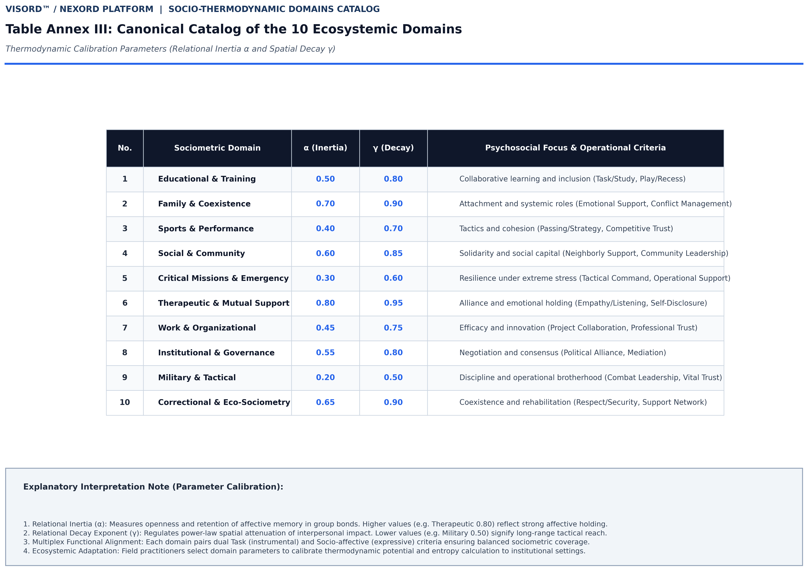<figcaption style="color:#8B0000; font-weight:700; font-size:11.5px; margin-top:8px; text-align:center;">Table Annex III. Catalogue of the 10 ecosystemic calibration domains with relational inertia (α) and decay rate (γ).</figcaption></figure>
<h3>8.4. Annex IV: Sender-Receiver Rank Interdistances and Isometry Diagonal</h3>
<p>Full Euclidean rank interdistance matrix (d_{	ext{DA}}, d_{	ext{RC}}, &Delta;) computed over G2T1C1, validating the relational asymmetry law.</p>
<figure class="standard-fig" style="page-break-inside:avoid;">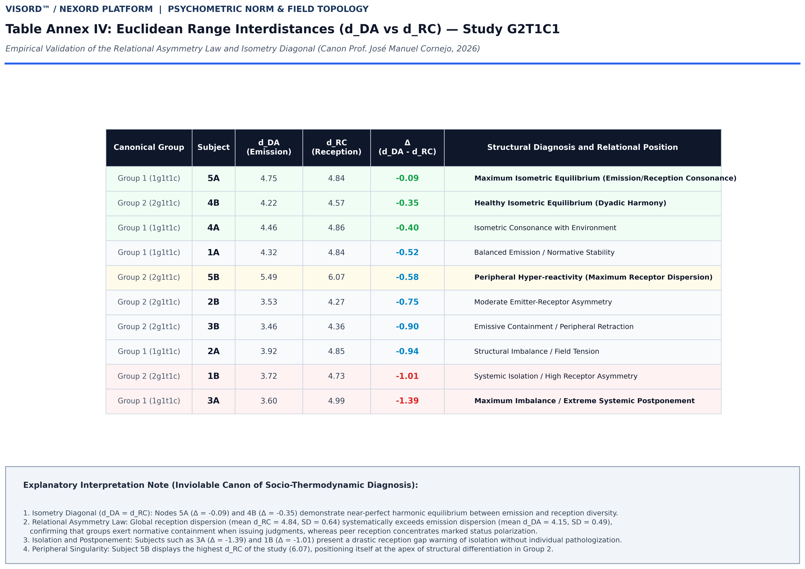<figcaption style="color:#8B0000; font-weight:700; font-size:11.5px; margin-top:8px; text-align:center;">Table Annex IV. G2T1C1 Euclidean rank interdistance matrix with role asymmetry diagnoses.</figcaption></figure>
<hr>
<h3>8.5. Annex V: Formal Specification of the 18 Relational Densities (18D)</h3>
<h4 style="color:#8B0000; font-weight:700; font-size:13px; margin-top:22px; margin-bottom:8px; page-break-after:avoid;">Table Annex V. Formal Specification and Calculation of the 18 Relational Densities and Socio-Thermodynamic Invariants</h4>
<table border="1" cellpadding="6" cellspacing="0" style="width:100%; border-collapse:collapse; border:1px solid #CBD5E0; margin:18px 0; font-size:11px; font-family:'Inter', sans-serif;">
<tr><th style="border:1px solid #CBD5E0; padding:6px 7px; text-align:center; vertical-align:middle; background-color:#1E3A8A; color:#FFFFFF; font-weight:700; font-size:11px; white-space:nowrap;">Dimension</th><th style="border:1px solid #CBD5E0; padding:6px 7px; text-align:center; vertical-align:middle; background-color:#1E3A8A; color:#FFFFFF; font-weight:700; font-size:11px; white-space:nowrap;">Symbol / Alias</th><th style="border:1px solid #CBD5E0; padding:6px 7px; text-align:center; vertical-align:middle; background-color:#1E3A8A; color:#FFFFFF; font-weight:700; font-size:11px; white-space:nowrap;">Partition / Axis</th><th style="border:1px solid #CBD5E0; padding:6px 7px; text-align:center; vertical-align:middle; background-color:#1E3A8A; color:#FFFFFF; font-weight:700; font-size:11px; white-space:nowrap;">Exact Calculation Formula</th><th style="border:1px solid #CBD5E0; padding:6px 7px; text-align:center; vertical-align:middle; background-color:#1E3A8A; color:#FFFFFF; font-weight:700; font-size:11px; white-space:nowrap;">Metric Range</th><th style="border:1px solid #CBD5E0; padding:6px 7px; text-align:center; vertical-align:middle; background-color:#1E3A8A; color:#FFFFFF; font-weight:700; font-size:11px; white-space:nowrap;">Socio-Thermodynamic Significance</th></tr>
<tr><td style="border:1px solid #CBD5E0; padding:6px 7px; text-align:center; vertical-align:middle; font-size:11px;"><strong>1D</strong></td><td style="border:1px solid #CBD5E0; padding:6px 7px; text-align:center; vertical-align:middle; font-size:11px;"><em>D</em><sub>1</sub> (dDP, <em>D</em><sub>pDA</sub>)</td><td style="border:1px solid #CBD5E0; padding:6px 7px; text-align:center; vertical-align:middle; font-size:11px;">4D Base</td><td style="border:1px solid #CBD5E0; padding:6px 7px; text-align:center; vertical-align:middle; font-size:11px;">\frac{1}{<em>N</em>-1}\sum <em>W</em><sub>pDA</sub>(<em>i</em>, <em>j</em>)</td><td style="border:1px solid #CBD5E0; padding:6px 7px; text-align:center; vertical-align:middle; font-size:11px;">[-1.00, +1.00]</td><td style="border:1px solid #CBD5E0; padding:6px 7px; text-align:center; vertical-align:middle; font-size:11px;">Prior expectation and anticipatory trust emitted toward the collective.</td></tr>
<tr><td style="border:1px solid #CBD5E0; padding:6px 7px; text-align:center; vertical-align:middle; font-size:11px;"><strong>2D</strong></td><td style="border:1px solid #CBD5E0; padding:6px 7px; text-align:center; vertical-align:middle; font-size:11px;"><em>D</em><sub>2</sub> (dDA, <em>D</em><sub>DA</sub>)</td><td style="border:1px solid #CBD5E0; padding:6px 7px; text-align:center; vertical-align:middle; font-size:11px;">4D Base</td><td style="border:1px solid #CBD5E0; padding:6px 7px; text-align:center; vertical-align:middle; font-size:11px;">\frac{1}{<em>N</em>-1}\sum <em>W</em><sub>DA</sub>(<em>i</em>, <em>j</em>)</td><td style="border:1px solid #CBD5E0; padding:6px 7px; text-align:center; vertical-align:middle; font-size:11px;">[-1.00, +1.00]</td><td style="border:1px solid #CBD5E0; padding:6px 7px; text-align:center; vertical-align:middle; font-size:11px;">Kinetic flow and effective preferential action emitted by the subject.</td></tr>
<tr><td style="border:1px solid #CBD5E0; padding:6px 7px; text-align:center; vertical-align:middle; font-size:11px;"><strong>3D</strong></td><td style="border:1px solid #CBD5E0; padding:6px 7px; text-align:center; vertical-align:middle; font-size:11px;"><em>D</em><sub>3</sub> (dRA, <em>D</em><sub>RC</sub>)</td><td style="border:1px solid #CBD5E0; padding:6px 7px; text-align:center; vertical-align:middle; font-size:11px;">4D Base</td><td style="border:1px solid #CBD5E0; padding:6px 7px; text-align:center; vertical-align:middle; font-size:11px;">\frac{1}{<em>N</em>-1}\sum <em>W</em><sub>RC</sub>(<em>j</em>, <em>i</em>)</td><td style="border:1px solid #CBD5E0; padding:6px 7px; text-align:center; vertical-align:middle; font-size:11px;">[-1.00, +1.00]</td><td style="border:1px solid #CBD5E0; padding:6px 7px; text-align:center; vertical-align:middle; font-size:11px;">Objective status and real impact of attraction or rejection received from peers.</td></tr>
<tr><td style="border:1px solid #CBD5E0; padding:6px 7px; text-align:center; vertical-align:middle; font-size:11px;"><strong>4D</strong></td><td style="border:1px solid #CBD5E0; padding:6px 7px; text-align:center; vertical-align:middle; font-size:11px;"><em>D</em><sub>4</sub> (dRP, <em>D</em><sub>pRC</sub>)</td><td style="border:1px solid #CBD5E0; padding:6px 7px; text-align:center; vertical-align:middle; font-size:11px;">4D Base</td><td style="border:1px solid #CBD5E0; padding:6px 7px; text-align:center; vertical-align:middle; font-size:11px;">\frac{1}{<em>N</em>-1}\sum <em>W</em><sub>pRC</sub>(<em>j</em>, <em>i</em>)</td><td style="border:1px solid #CBD5E0; padding:6px 7px; text-align:center; vertical-align:middle; font-size:11px;">[-1.00, +1.00]</td><td style="border:1px solid #CBD5E0; padding:6px 7px; text-align:center; vertical-align:middle; font-size:11px;">Reflected field of presumption attributed to the subject by peers.</td></tr>
<tr><td style="border:1px solid #CBD5E0; padding:6px 7px; text-align:center; vertical-align:middle; font-size:11px;"><strong>5D</strong></td><td style="border:1px solid #CBD5E0; padding:6px 7px; text-align:center; vertical-align:middle; font-size:11px;"><em>S</em><sub>12</sub> (SDA)</td><td style="border:1px solid #CBD5E0; padding:6px 7px; text-align:center; vertical-align:middle; font-size:11px;">Prism 1 Operational</td><td style="border:1px solid #CBD5E0; padding:6px 7px; text-align:center; vertical-align:middle; font-size:11px;"><em>D</em><sub>1</sub> + <em>D</em><sub>2</sub></td><td style="border:1px solid #CBD5E0; padding:6px 7px; text-align:center; vertical-align:middle; font-size:11px;">[-2.00, +2.00]</td><td style="border:1px solid #CBD5E0; padding:6px 7px; text-align:center; vertical-align:middle; font-size:11px;">Net sender potential: expansiveness and initiative spring/sink.</td></tr>
<tr><td style="border:1px solid #CBD5E0; padding:6px 7px; text-align:center; vertical-align:middle; font-size:11px;"><strong>6D</strong></td><td style="border:1px solid #CBD5E0; padding:6px 7px; text-align:center; vertical-align:middle; font-size:11px;"><em>B</em><sub>12</sub> (BDA)</td><td style="border:1px solid #CBD5E0; padding:6px 7px; text-align:center; vertical-align:middle; font-size:11px;">Prism 1 Operational</td><td style="border:1px solid #CBD5E0; padding:6px 7px; text-align:center; vertical-align:middle; font-size:11px;">\</td><td style="border:1px solid #CBD5E0; padding:6px 7px; text-align:center; vertical-align:middle; font-size:11px;">D_1\</td><td style="border:1px solid #CBD5E0; padding:6px 7px; text-align:center; vertical-align:middle; font-size:11px;">+ \</td><td style="border:1px solid #CBD5E0; padding:6px 7px; text-align:center; vertical-align:middle; font-size:11px;">D_2\</td><td style="border:1px solid #CBD5E0; padding:6px 7px; text-align:center; vertical-align:middle; font-size:11px;"></td><td style="border:1px solid #CBD5E0; padding:6px 7px; text-align:center; vertical-align:middle; font-size:11px;">[0.00, +2.00]</td><td style="border:1px solid #CBD5E0; padding:6px 7px; text-align:center; vertical-align:middle; font-size:11px;">Gross sender mass: total metabolic expenditure and emitted investment.</td></tr>
<tr><td style="border:1px solid #CBD5E0; padding:6px 7px; text-align:center; vertical-align:middle; font-size:11px;"><strong>7D</strong></td><td style="border:1px solid #CBD5E0; padding:6px 7px; text-align:center; vertical-align:middle; font-size:11px;"><em>S</em><sub>34</sub> (SRC)</td><td style="border:1px solid #CBD5E0; padding:6px 7px; text-align:center; vertical-align:middle; font-size:11px;">Prism 1 Operational</td><td style="border:1px solid #CBD5E0; padding:6px 7px; text-align:center; vertical-align:middle; font-size:11px;"><em>D</em><sub>3</sub> + <em>D</em><sub>4</sub></td><td style="border:1px solid #CBD5E0; padding:6px 7px; text-align:center; vertical-align:middle; font-size:11px;">[-2.00, +2.00]</td><td style="border:1px solid #CBD5E0; padding:6px 7px; text-align:center; vertical-align:middle; font-size:11px;">Net receiver potential: global status induced by the peer environment.</td></tr>
<tr><td style="border:1px solid #CBD5E0; padding:6px 7px; text-align:center; vertical-align:middle; font-size:11px;"><strong>8D</strong></td><td style="border:1px solid #CBD5E0; padding:6px 7px; text-align:center; vertical-align:middle; font-size:11px;"><em>B</em><sub>34</sub> (BRC)</td><td style="border:1px solid #CBD5E0; padding:6px 7px; text-align:center; vertical-align:middle; font-size:11px;">Prism 1 Operational</td><td style="border:1px solid #CBD5E0; padding:6px 7px; text-align:center; vertical-align:middle; font-size:11px;">\</td><td style="border:1px solid #CBD5E0; padding:6px 7px; text-align:center; vertical-align:middle; font-size:11px;">D_3\</td><td style="border:1px solid #CBD5E0; padding:6px 7px; text-align:center; vertical-align:middle; font-size:11px;">+ \</td><td style="border:1px solid #CBD5E0; padding:6px 7px; text-align:center; vertical-align:middle; font-size:11px;">D_4\</td><td style="border:1px solid #CBD5E0; padding:6px 7px; text-align:center; vertical-align:middle; font-size:11px;"></td><td style="border:1px solid #CBD5E0; padding:6px 7px; text-align:center; vertical-align:middle; font-size:11px;">[0.00, +2.00]</td><td style="border:1px solid #CBD5E0; padding:6px 7px; text-align:center; vertical-align:middle; font-size:11px;">Gross receiver mass: incident social pressure and impact load.</td></tr>
<tr><td style="border:1px solid #CBD5E0; padding:6px 7px; text-align:center; vertical-align:middle; font-size:11px;"><strong>9D</strong></td><td style="border:1px solid #CBD5E0; padding:6px 7px; text-align:center; vertical-align:middle; font-size:11px;"><em>S</em><sub>14</sub> (SP)</td><td style="border:1px solid #CBD5E0; padding:6px 7px; text-align:center; vertical-align:middle; font-size:11px;">Prism 2 Ontological</td><td style="border:1px solid #CBD5E0; padding:6px 7px; text-align:center; vertical-align:middle; font-size:11px;"><em>D</em><sub>1</sub> + <em>D</em><sub>4</sub></td><td style="border:1px solid #CBD5E0; padding:6px 7px; text-align:center; vertical-align:middle; font-size:11px;">[-2.00, +2.00]</td><td style="border:1px solid #CBD5E0; padding:6px 7px; text-align:center; vertical-align:middle; font-size:11px;">Cognitive balance: climate of mutual trust and shared presumption.</td></tr>
<tr><td style="border:1px solid #CBD5E0; padding:6px 7px; text-align:center; vertical-align:middle; font-size:11px;"><strong>10D</strong></td><td style="border:1px solid #CBD5E0; padding:6px 7px; text-align:center; vertical-align:middle; font-size:11px;"><em>B</em><sub>14</sub> (BP)</td><td style="border:1px solid #CBD5E0; padding:6px 7px; text-align:center; vertical-align:middle; font-size:11px;">Prism 2 Ontological</td><td style="border:1px solid #CBD5E0; padding:6px 7px; text-align:center; vertical-align:middle; font-size:11px;">\</td><td style="border:1px solid #CBD5E0; padding:6px 7px; text-align:center; vertical-align:middle; font-size:11px;">D_1\</td><td style="border:1px solid #CBD5E0; padding:6px 7px; text-align:center; vertical-align:middle; font-size:11px;">+ \</td><td style="border:1px solid #CBD5E0; padding:6px 7px; text-align:center; vertical-align:middle; font-size:11px;">D_4\</td><td style="border:1px solid #CBD5E0; padding:6px 7px; text-align:center; vertical-align:middle; font-size:11px;"></td><td style="border:1px solid #CBD5E0; padding:6px 7px; text-align:center; vertical-align:middle; font-size:11px;">[0.00, +2.00]</td><td style="border:1px solid #CBD5E0; padding:6px 7px; text-align:center; vertical-align:middle; font-size:11px;">Gross cognitive mass: volume of mental rumination and prospective burden.</td></tr>
<tr><td style="border:1px solid #CBD5E0; padding:6px 7px; text-align:center; vertical-align:middle; font-size:11px;"><strong>11D</strong></td><td style="border:1px solid #CBD5E0; padding:6px 7px; text-align:center; vertical-align:middle; font-size:11px;"><em>S</em><sub>23</sub> (SA)</td><td style="border:1px solid #CBD5E0; padding:6px 7px; text-align:center; vertical-align:middle; font-size:11px;">Prism 2 Ontological</td><td style="border:1px solid #CBD5E0; padding:6px 7px; text-align:center; vertical-align:middle; font-size:11px;"><em>D</em><sub>2</sub> + <em>D</em><sub>3</sub></td><td style="border:1px solid #CBD5E0; padding:6px 7px; text-align:center; vertical-align:middle; font-size:11px;">[-2.00, +2.00]</td><td style="border:1px solid #CBD5E0; padding:6px 7px; text-align:center; vertical-align:middle; font-size:11px;">Factual balance: objective ground truth of real choices and rejections.</td></tr>
<tr><td style="border:1px solid #CBD5E0; padding:6px 7px; text-align:center; vertical-align:middle; font-size:11px;"><strong>12D</strong></td><td style="border:1px solid #CBD5E0; padding:6px 7px; text-align:center; vertical-align:middle; font-size:11px;"><em>B</em><sub>23</sub> (BA)</td><td style="border:1px solid #CBD5E0; padding:6px 7px; text-align:center; vertical-align:middle; font-size:11px;">Prism 2 Ontological</td><td style="border:1px solid #CBD5E0; padding:6px 7px; text-align:center; vertical-align:middle; font-size:11px;">\</td><td style="border:1px solid #CBD5E0; padding:6px 7px; text-align:center; vertical-align:middle; font-size:11px;">D_2\</td><td style="border:1px solid #CBD5E0; padding:6px 7px; text-align:center; vertical-align:middle; font-size:11px;">+ \</td><td style="border:1px solid #CBD5E0; padding:6px 7px; text-align:center; vertical-align:middle; font-size:11px;">D_3\</td><td style="border:1px solid #CBD5E0; padding:6px 7px; text-align:center; vertical-align:middle; font-size:11px;"></td><td style="border:1px solid #CBD5E0; padding:6px 7px; text-align:center; vertical-align:middle; font-size:11px;">[0.00, +2.00]</td><td style="border:1px solid #CBD5E0; padding:6px 7px; text-align:center; vertical-align:middle; font-size:11px;">Gross factual mass: volume of motor action and tangible interaction.</td></tr>
<tr><td style="border:1px solid #CBD5E0; padding:6px 7px; text-align:center; vertical-align:middle; font-size:11px;"><strong>13D</strong></td><td style="border:1px solid #CBD5E0; padding:6px 7px; text-align:center; vertical-align:middle; font-size:11px;"><em>S</em><sub>13</sub></td><td style="border:1px solid #CBD5E0; padding:6px 7px; text-align:center; vertical-align:middle; font-size:11px;">Prism 3 Dialectical</td><td style="border:1px solid #CBD5E0; padding:6px 7px; text-align:center; vertical-align:middle; font-size:11px;"><em>D</em><sub>1</sub> + <em>D</em><sub>3</sub></td><td style="border:1px solid #CBD5E0; padding:6px 7px; text-align:center; vertical-align:middle; font-size:11px;">[-2.00, +2.00]</td><td style="border:1px solid #CBD5E0; padding:6px 7px; text-align:center; vertical-align:middle; font-size:11px;">Realism balance: confirmation vs. disillusionment (expected vs. received).</td></tr>
<tr><td style="border:1px solid #CBD5E0; padding:6px 7px; text-align:center; vertical-align:middle; font-size:11px;"><strong>14D</strong></td><td style="border:1px solid #CBD5E0; padding:6px 7px; text-align:center; vertical-align:middle; font-size:11px;"><em>B</em><sub>13</sub></td><td style="border:1px solid #CBD5E0; padding:6px 7px; text-align:center; vertical-align:middle; font-size:11px;">Prism 3 Dialectical</td><td style="border:1px solid #CBD5E0; padding:6px 7px; text-align:center; vertical-align:middle; font-size:11px;">\</td><td style="border:1px solid #CBD5E0; padding:6px 7px; text-align:center; vertical-align:middle; font-size:11px;">D_1\</td><td style="border:1px solid #CBD5E0; padding:6px 7px; text-align:center; vertical-align:middle; font-size:11px;">+ \</td><td style="border:1px solid #CBD5E0; padding:6px 7px; text-align:center; vertical-align:middle; font-size:11px;">D_3\</td><td style="border:1px solid #CBD5E0; padding:6px 7px; text-align:center; vertical-align:middle; font-size:11px;"></td><td style="border:1px solid #CBD5E0; padding:6px 7px; text-align:center; vertical-align:middle; font-size:11px;">[0.00, +2.00]</td><td style="border:1px solid #CBD5E0; padding:6px 7px; text-align:center; vertical-align:middle; font-size:11px;">Realism mass: affective vulnerability under reality testing.</td></tr>
<tr><td style="border:1px solid #CBD5E0; padding:6px 7px; text-align:center; vertical-align:middle; font-size:11px;"><strong>15D</strong></td><td style="border:1px solid #CBD5E0; padding:6px 7px; text-align:center; vertical-align:middle; font-size:11px;"><em>S</em><sub>24</sub></td><td style="border:1px solid #CBD5E0; padding:6px 7px; text-align:center; vertical-align:middle; font-size:11px;">Prism 3 Dialectical</td><td style="border:1px solid #CBD5E0; padding:6px 7px; text-align:center; vertical-align:middle; font-size:11px;"><em>D</em><sub>2</sub> + <em>D</em><sub>4</sub></td><td style="border:1px solid #CBD5E0; padding:6px 7px; text-align:center; vertical-align:middle; font-size:11px;">[-2.00, +2.00]</td><td style="border:1px solid #CBD5E0; padding:6px 7px; text-align:center; vertical-align:middle; font-size:11px;">Responsiveness balance: fulfillment vs. frustration of alter's desire.</td></tr>
<tr><td style="border:1px solid #CBD5E0; padding:6px 7px; text-align:center; vertical-align:middle; font-size:11px;"><strong>16D</strong></td><td style="border:1px solid #CBD5E0; padding:6px 7px; text-align:center; vertical-align:middle; font-size:11px;"><em>B</em><sub>24</sub></td><td style="border:1px solid #CBD5E0; padding:6px 7px; text-align:center; vertical-align:middle; font-size:11px;">Prism 3 Dialectical</td><td style="border:1px solid #CBD5E0; padding:6px 7px; text-align:center; vertical-align:middle; font-size:11px;">\</td><td style="border:1px solid #CBD5E0; padding:6px 7px; text-align:center; vertical-align:middle; font-size:11px;">D_2\</td><td style="border:1px solid #CBD5E0; padding:6px 7px; text-align:center; vertical-align:middle; font-size:11px;">+ \</td><td style="border:1px solid #CBD5E0; padding:6px 7px; text-align:center; vertical-align:middle; font-size:11px;">D_4\</td><td style="border:1px solid #CBD5E0; padding:6px 7px; text-align:center; vertical-align:middle; font-size:11px;"></td><td style="border:1px solid #CBD5E0; padding:6px 7px; text-align:center; vertical-align:middle; font-size:11px;">[0.00, +2.00]</td><td style="border:1px solid #CBD5E0; padding:6px 7px; text-align:center; vertical-align:middle; font-size:11px;">Responsiveness mass: dyadic commitment and mutual accountability.</td></tr>
<tr><td style="border:1px solid #CBD5E0; padding:6px 7px; text-align:center; vertical-align:middle; font-size:11px;"><strong>17D</strong></td><td style="border:1px solid #CBD5E0; padding:6px 7px; text-align:center; vertical-align:middle; font-size:11px;">SDR</td><td style="border:1px solid #CBD5E0; padding:6px 7px; text-align:center; vertical-align:middle; font-size:11px;">Global Invariant</td><td style="border:1px solid #CBD5E0; padding:6px 7px; text-align:center; vertical-align:middle; font-size:11px;">\sum <em>S</em><sub>ij</sub> = \sum <em>D</em><sub><em>k</em></sub></td><td style="border:1px solid #CBD5E0; padding:6px 7px; text-align:center; vertical-align:middle; font-size:11px;">[-4.00, +4.00]</td><td style="border:1px solid #CBD5E0; padding:6px 7px; text-align:center; vertical-align:middle; font-size:11px;">Total Relative Density Balance: homeostatic barometer of group climate.</td></tr>
<tr><td style="border:1px solid #CBD5E0; padding:6px 7px; text-align:center; vertical-align:middle; font-size:11px;"><strong>18D</strong></td><td style="border:1px solid #CBD5E0; padding:6px 7px; text-align:center; vertical-align:middle; font-size:11px;">BDR</td><td style="border:1px solid #CBD5E0; padding:6px 7px; text-align:center; vertical-align:middle; font-size:11px;">Global Invariant</td><td style="border:1px solid #CBD5E0; padding:6px 7px; text-align:center; vertical-align:middle; font-size:11px;">\sum <em>B</em><sub>ij</sub> = \sum \</td><td style="border:1px solid #CBD5E0; padding:6px 7px; text-align:center; vertical-align:middle; font-size:11px;">D_k\</td><td style="border:1px solid #CBD5E0; padding:6px 7px; text-align:center; vertical-align:middle; font-size:11px;"></td><td style="border:1px solid #CBD5E0; padding:6px 7px; text-align:center; vertical-align:middle; font-size:11px;">[0.00, +4.00]</td><td style="border:1px solid #CBD5E0; padding:6px 7px; text-align:center; vertical-align:middle; font-size:11px;">Gross Relational Density: heat capacity and invariable total system mass.</td></tr>
</table>
<hr>
<div id="seccion-bibliografia-en"></div><div id="9-thematic-bibliography"></div><h2 id="section-9">9. Thematic Bibliography</h2>
<h3 style="text-align:center; font-style:italic; color:#475569; font-weight:500; margin-top:6px; margin-bottom:4px;">I. Reference Work and NEXORD System Authorship</h3>
<p><em>Epistemological foundation, psychometric validation, and analytical engine architecture.</em></p>
<ol>
<li><strong>Cornejo, J. M. (1988).</strong> <em>Técnicas de investigación social: El análisis de correspondencias</em>. Barcelona: PPU.</li>
<li><strong>Vicente, R., Cornejo, J. M., & Barbero, F. (2006).</strong> Análisis de la Actividad Grupal (AAG). <em>Anuario de Psicología</em>, 37(3), 299–320.</li>
<li><strong>Cornejo, J. M. (2026).</strong> <em>Computational Ordinal Sociometry (NEXORD): An updated mathematical extension of Moreno and Lewin's foundational insights</em>. Technical Monograph Series, Banco Sociométrico (BSOC). https://doi.org/10.5281/zenodo.23329641</li>
<li><strong>Cornejo Álvarez, J. M., & Morales Domínguez, J. F. (in press).</strong> Sociometría Ordinal Computacional. La Plataforma NEXORD: Hacia una Física de lo Grupal [Computational Ordinal Sociometry. The NEXORD Platform: Towards a Physics of the Group]. <em>Psicothema</em>.</li>
</ol>
<h3 style="text-align:center; font-style:italic; color:#475569; font-weight:500; margin-top:6px; margin-bottom:4px;">II. Historical Roots, Group Dynamics, and Field Theory</h3>
<p><em>Relational genealogy: from the foundational affective map to the hodological field of forces and group pressures.</em></p>
<ol>
<li><strong>Scudéry, M. de (1654).</strong> <em>Clélie, histoire romaine</em>. Paris: Augustin Courbé. <em>(Historical precursor of relational and affective cartography: the Carte de Tendre).</em></li>
<li><strong>Moreno, J. L. (1934).</strong> <em>Who shall survive? A new approach to the problem of human interrelations</em>. Washington, DC: Nervous and Mental Disease Publishing Co.</li>
<li><strong>Lewin, K. (1951).</strong> <em>Field theory in social science: Selected theoretical papers</em> (D. Cartwright, Ed.). New York: Harper & Row.</li>
<li><strong>Bales, R. F. (1950).</strong> <em>Interaction process analysis: A method for the study of small groups</em>. Cambridge, MA: Addison-Wesley.</li>
<li><strong>Festinger, L. (1950).</strong> Informal social communication. <em>Psychological Review</em>, 57(5), 271–282. https://doi.org/10.1037/h0056932</li>
<li><strong>Janis, I. L. (1972).</strong> <em>Victims of Groupthink: A psychological study of foreign-policy decisions and fiascoes</em>. Boston: Houghton Mifflin.</li>
</ol>
<h3 style="text-align:center; font-style:italic; color:#475569; font-weight:500; margin-top:6px; margin-bottom:4px;">III. Dyadic Interdependence, Metaperception, Ostracism, and Exclusion Dynamics</h3>
<p><em>The relational social atom: cross-expectations, affective balance, actor-partner modeling, and the psychology of invisibility.</em></p>
<ol>
<li><strong>Heider, F. (1958).</strong> <em>The psychology of interpersonal relations</em>. New York: John Wiley & Sons.</li>
<li><strong>Kenny, D. A., & Garcia, R. L. (2012).</strong> Using the Actor–Partner Interdependence Model to study the effects of group composition. <em>Small Group Research</em>, 43(4), 468–496. https://doi.org/10.1177/1046496412444424</li>
<li><strong>Tsankova, E., & Tair, E. (2021).</strong> Meta-accuracy in sociometric status perceptions. <em>Frontiers in Psychology</em>, 12, 650502. https://doi.org/10.3389/fpsyg.2021.650502</li>
<li><strong>Williams, K. D. (2007).</strong> Ostracism. <em>Annual Review of Psychology</em>, 58, 425–452. https://doi.org/10.1146/annurev.psych.58.110405.085641</li>
</ol>
<h3 style="text-align:center; font-style:italic; color:#475569; font-weight:500; margin-top:6px; margin-bottom:4px;">IV. Computational Transition, Psychometric Measurement, and Inclusive Applications</h3>
<p><em>From the pioneering computerization of the sociogram to metric precision in educational and inclusion settings.</em></p>
<ol>
<li><strong>Barrasa, Á., & Gil, F. (2004).</strong> Un programa informático para el cálculo y la representación de índices y valores sociométricos. <em>Psicothema</em>, 16(2), 329–335.</li>
<li><strong>Terry, R. (2000).</strong> Recent advances in measurement theory and the use of sociometric techniques. <em>New Directions for Child and Adolescent Development</em>, 2000(88), 27–41. https://doi.org/10.1002/cd.23220008804</li>
<li><strong>Avramidis, E., Strogilos, V., Aroni, K., & Kankaraki, C. T. (2017).</strong> Using sociometric techniques to assess the social inclusion of children with special educational needs in mainstream schools: A methodological review. <em>International Journal of Research & Method in Education</em>, 40(4), 337–356. https://doi.org/10.1080/1743727X.2015.1111803</li>
</ol>
<h3 style="text-align:center; font-style:italic; color:#475569; font-weight:500; margin-top:6px; margin-bottom:4px;">V. Statistical Modeling of Ordinal Networks, Signed Networks, and Spectral Graphs</h3>
<p><em>The mathematical substrate of preferential ranking, rank concordance, dual polarity (choice/rejection), and network connectivity.</em></p>
<ol>
<li><strong>Kendall, M. G. (1938).</strong> A new measure of rank correlation. <em>Biometrika</em>, 30(1/2), 81–93. https://doi.org/10.1093/biomet/30.1-2.81</li>
<li><strong>Fiedler, M. (1973).</strong> Algebraic connectivity of graphs. <em>Czechoslovak Mathematical Journal</em>, 23(2), 298–305.</li>
<li><strong>Aref, S., & Wilson, M. C. (2021).</strong> The frustration index is a key measure for analysing signed networks. <em>Journal of Complex Networks</em>, 7(2), cnz006. https://doi.org/10.1093/comnet/cnz006</li>
<li><strong>Borsboom, D., Deserno, M. K., Rhemtulla, M., Epskamp, S., Fried, E. I., McNally, R. J., ... & Waldorp, L. J. (2021).</strong> Network analysis of multivariate data in psychological science. <em>Nature Reviews Methods Primers</em>, 1(1), 58. https://doi.org/10.1038/s43586-021-00055-w</li>
<li><strong>Cucuringu, M., Mantzaris, A. V., & Roberts, J. (2023).</strong> The Bradley-Terry stochastic block model for directed ranking networks. <em>Journal of Complex Networks</em>, 11(4), cnad025. https://doi.org/10.1093/comnet/cnad025</li>
<li><strong>Diaz-Diaz, F., & Estrada, E. (2025).</strong> Signed graphs in data sciences via communicability geometry. <em>Information Sciences</em>, 688, 121110. https://doi.org/10.1016/j.ins.2024.121110</li>
<li><strong>Krivitsky, P. N., & Butts, C. T. (2017).</strong> Exponential-family random graph models for rank-order relational data. <em>Sociological Methodology</em>, 47(1), 68–112. https://doi.org/10.1111/socm.12038</li>
</ol>
<h3 style="text-align:center; font-style:italic; color:#475569; font-weight:500; margin-top:6px; margin-bottom:4px;">VI. Relational Physics, Information Theory, and Non-Equilibrium Complex Systems</h3>
<p><em>Group field physics: relative observation (Rovelli), irreducible integrated information (Tononi), and non-equilibrium self-organization (Nicolis & Prigogine).</em></p>
<ol>
<li><strong>Nicolis, G., & Prigogine, I. (1977).</strong> <em>Self-organization in nonequilibrium systems: From dissipative structures to order through fluctuations</em>. New York: John Wiley & Sons.</li>
<li><strong>Rovelli, C. (1996).</strong> Relational quantum mechanics. <em>International Journal of Theoretical Physics</em>, 35(8), 1637–1678. https://doi.org/10.1007/BF02302262</li>
<li><strong>Tononi, G. (2004).</strong> An information integration theory of consciousness. <em>BMC Neuroscience</em>, 5(1), 42. https://doi.org/10.1186/1471-2202-5-42</li>
</ol>
<h3 style="text-align:center; font-style:italic; color:#475569; font-weight:500; margin-top:6px; margin-bottom:4px;">VII. Matrix Geometry, Grassmann Manifolds, and Multivariate Analysis</h3>
<p><em>Manifold optimization, factorial projection, and continuous metric distances in relational space.</em></p>
<ol>
<li><strong>Benzécri, J.-P. (1973).</strong> <em>L'Analyse des Données: T. 2, L'Analyse des Correspondances</em>. Paris: Dunod.</li>
<li><strong>Absil, P.-A., Mahony, R., & Sepulchre, R. (2008).</strong> <em>Optimization algorithms on matrix manifolds</em>. Princeton, NJ: Princeton University Press.</li>
<li><strong>Ye, K., & Lim, L.-H. (2016).</strong> Schubert varieties and distances on Grassmann manifolds. <em>SIAM Journal on Matrix Analysis and Applications</em>, 37(3), 1176–1197. https://doi.org/10.1137/15M1047648</li>
</ol>
<hr>
<p><em>(C) 2026 Dr. José Manuel Cornejo Álvarez / NEXORD Platform / Sociometric Bank (BSOC). Published on Zenodo under Creative Commons Attribution 4.0 International License (CC BY 4.0).</em></p>

      <hr class="section-divider">
      
    <section class="manifesto-section" id="seccion-laminas-en">
      <h2>Catalog of Tables and Figures</h2>
      <p class="lead-paragraph">Comprehensive collection of the 29 high-resolution plates (300 DPI) with formal captions and methodological cards chained to the Scientific Manifesto.</p>
      <div class="plates-grid">
        
        <div class="plate-card" id="plate-1">
          <div class="plate-header">
            <span class="type-badge">INSTITUTIONAL HEADER</span>
            <span class="section-tag">Master Brand Identity</span>
          </div>
          <h3 class="plate-title">NEXORD Institutional Platform & Sociometric Bank (BSOC)</h3>
          <div class="plate-img-container">
            
          </div>
          <div class="caption-box">
            <p class="caption-text"><strong>Official caption:</strong> Master Brand NEXORD (Nexus and Order). Official institutional logo of the Computational Ordinal Sociometry Platform and the Sociometric Bank (BSOC).</p>
            <p class="method-text"><strong>Methodological function:</strong> Visual identifier present across all documentation, reports, and VISORD interactive environments.</p>
          </div>
        </div>
        

        <div class="plate-card" id="plate-2">
          <div class="plate-header">
            <span class="type-badge">FIGURES 1 AND 2</span>
            <span class="section-tag">Section 1.1: Overcoming the Classical Limit & Ontology of the Tie</span>
          </div>
          <h3 class="plate-title">Figures 1 and 2. Foundational Cartographic Diptych of Social Psychology</h3>
          <div class="plate-img-container">
            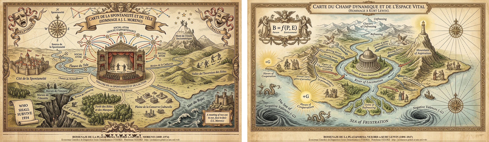
          </div>
          <div class="caption-box">
            <p class="caption-text"><strong>Official caption:</strong> Foundational cartographic diptych: (a) Pioneer sociogram by J. L. Moreno (1934, 4th-grade classroom); (b) Kurt Lewin's hodological field diagram and locomotion in the life space (1936, 1951).</p>
            <p class="method-text"><strong>Methodological function:</strong> Genealogical illustration of the historical convergence between Morenian socio-affective structure and Lewinian vector physics.</p>
          </div>
        </div>
        

        <div class="plate-card" id="plate-3">
          <div class="plate-header">
            <span class="type-badge">METHODOLOGICAL TABLE</span>
            <span class="section-tag">Section 2.1: The BREVE / ORBIT Format & Matrix Duality</span>
          </div>
          <h3 class="plate-title">Table 1. Bidirectional Transposition Moreno ⟷ Breve (N = 6)</h3>
          <div class="plate-img-container">
            
          </div>
          <div class="caption-box">
            <p class="caption-text"><strong>Official caption:</strong> Exact bidirectional transposition between traditional Moreno format and exhaustive ranking BREVE format for a group of N = 6 members.</p>
            <p class="method-text"><strong>Methodological function:</strong> Guarantees historical compatibility with legacy datasets while preserving empirical fidelity without information loss.</p>
          </div>
        </div>
        

        <div class="plate-card" id="plate-4">
          <div class="plate-header">
            <span class="type-badge">SYNTACTIC TABLE</span>
            <span class="section-tag">Section 4.1: The 12 Syntactic Elements & Dyadic Tetragram</span>
          </div>
          <h3 class="plate-title">Table 2a. SMIa Syntax and Dyadic Tetragram Formation</h3>
          <div class="plate-img-container">
            
          </div>
          <div class="caption-box">
            <p class="caption-text"><strong>Official caption:</strong> Formal syntax of the Symbolized Bivariate Individual Sociomatrix (SMIa): alphanumeric encoding of the 12 syntactic elements and formation of dyadic tetragram A1 A2 A3 A4.</p>
            <p class="method-text"><strong>Methodological function:</strong> Defines the elemental dyadic cell by intersecting emission, reception, and crossed expectations.</p>
          </div>
        </div>
        

        <div class="plate-card" id="plate-5">
          <div class="plate-header">
            <span class="type-badge">DYADIC MATRICES</span>
            <span class="section-tag">Section 4.1: The 12 Syntactic Elements & Dyadic Tetragram</span>
          </div>
          <h3 class="plate-title">Table 2b. Parallel Dyadic Matrices SMIa (Symbolic) and SMIb (Alphanumeric) (N = 6)</h3>
          <div class="plate-img-container">
            
          </div>
          <div class="caption-box">
            <p class="caption-text"><strong>Official caption:</strong> Parallel representation of the SMIa sociomatrix (qualitative typological) and SMIb sociomatrix (numerical ordinal ranks) for a group of N = 6 members.</p>
            <p class="method-text"><strong>Methodological function:</strong> Tensorial N×N foundation upon which absolute and relative socio-thermodynamic densities are computed.</p>
          </div>
        </div>
        

        <div class="plate-card" id="plate-6">
          <div class="plate-header">
            <span class="type-badge">CARDINAL MATRIX</span>
            <span class="section-tag">Section 4.2: Antidiagonal Topology of the Q81 Lattice</span>
          </div>
          <h3 class="plate-title">Table 2c. Numeralization of Relational Figures Q81(9,9): From 81 to 1 Centered on 41</h3>
          <div class="plate-img-container">
            
          </div>
          <div class="caption-box">
            <p class="caption-text"><strong>Official caption:</strong> Complete numeralization of the 81 relational figures in a 9×9 matrix, ordered along antidiagonals from 81 (maximum mutual attraction) to 1 (maximum mutual rejection) centered on neutral 41.</p>
            <p class="method-text"><strong>Methodological function:</strong> Transforms qualitative states into a continuous scale of intensity for quantitative modeling.</p>
          </div>
        </div>
        

        <div class="plate-card" id="plate-7">
          <div class="plate-header">
            <span class="type-badge">FIELD EQUATION</span>
            <span class="section-tag">Section 4.4: The 18D Relational Hyperspace</span>
          </div>
          <h3 class="plate-title">Table 3b. Equation and Modulators of Relational Density: W · M · F · R · P</h3>
          <div class="plate-img-container">
            
          </div>
          <div class="caption-box">
            <p class="caption-text"><strong>Official caption:</strong> Integral formulation of socio-thermodynamic relational density via the product of physical modulators: Rank Weighting (W), Structural Mass (M), Relational Friction (F), Dyadic Resonance (R), and Group Pressure (P).</p>
            <p class="method-text"><strong>Methodological function:</strong> Fundamental equation governing tie kinetics and energy accumulation in the group field.</p>
          </div>
        </div>
        

        <div class="plate-card" id="plate-8">
          <div class="plate-header">
            <span class="type-badge">DENSITIES ARCHITECTURE</span>
            <span class="section-tag">Section 4.4: The 18D Relational Hyperspace</span>
          </div>
          <h3 class="plate-title">Table 3c. Architecture of the 18 Relational Densities and the 3 Dual Prisms</h3>
          <div class="plate-img-container">
            
          </div>
          <div class="caption-box">
            <p class="caption-text"><strong>Official caption:</strong> Complete orthogonal decomposition of the dyadic tetragram into three dual prisms (10D Operative, 14D Ontological, 18D Dialectical) and two global invariants (BDR and SDR).</p>
            <p class="method-text"><strong>Methodological function:</strong> Analytically unpacks relational experience without metric losses or spurious correlations.</p>
          </div>
        </div>
        

        <div class="plate-card" id="plate-9">
          <div class="plate-header">
            <span class="type-badge">FIGURE 3</span>
            <span class="section-tag">Section 4.4: The 18D Relational Hyperspace</span>
          </div>
          <h3 class="plate-title">Figure 3. Architecture of the 18D Relational Space and the 3 Dual Prisms</h3>
          <div class="plate-img-container">
            
          </div>
          <div class="caption-box">
            <p class="caption-text"><strong>Official caption:</strong> 3D schematic diagram of the three dual prisms and 18 relational densities constituting NEXORD's socio-thermodynamic space.</p>
            <p class="method-text"><strong>Methodological function:</strong> Pedagogical visualization of the analytical depth layers of group diagnostics.</p>
          </div>
        </div>
        

        <div class="plate-card" id="plate-10">
          <div class="plate-header">
            <span class="type-badge">18D COMPOSITE GRAPH</span>
            <span class="section-tag">Section 4.4: The 18D Relational Hyperspace</span>
          </div>
          <h3 class="plate-title">Figure 3b. Panoramic 18D Spectrogram of Relational Energy</h3>
          <div class="plate-img-container">
            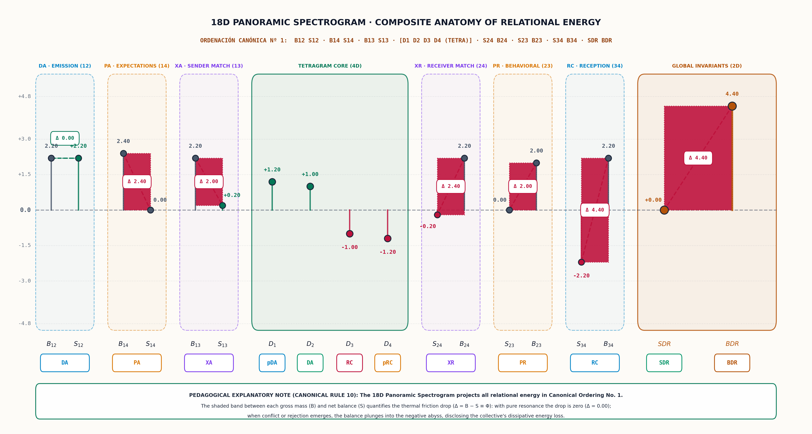
          </div>
          <div class="caption-box">
            <p class="caption-text"><strong>Official caption:</strong> Panoramic spectrogram of the 18 relational densities organized into four psychodynamic macro-areas on cream background.</p>
            <p class="method-text"><strong>Methodological function:</strong> Holistic global diagnostic of the energy mass and equilibrium of the analyzed social system.</p>
          </div>
        </div>
        

        <div class="plate-card" id="plate-11">
          <div class="plate-header">
            <span class="type-badge">FIGURE 4</span>
            <span class="section-tag">Section 4.4: The 10D Densities Pentagram</span>
          </div>
          <h3 class="plate-title">Figure 4. Socio-Thermodynamic Pentagram (10D)</h3>
          <div class="plate-img-container">
            
          </div>
          <div class="caption-box">
            <p class="caption-text"><strong>Official caption:</strong> Radial pentagram projection of the 10 operative relational densities, showing the balance between emitted expansiveness (SDA) and received status (SRC) for each individual.</p>
            <p class="method-text"><strong>Methodological function:</strong> Individual relational profile and detection of emissive/receptive divergences.</p>
          </div>
        </div>
        

        <div class="plate-card" id="plate-12">
          <div class="plate-header">
            <span class="type-badge">FIGURE 5</span>
            <span class="section-tag">Section 5.1: Graphical Solutions & Factorial Planes</span>
          </div>
          <h3 class="plate-title">Figure 5. Parallel Dual Factorial Planes (MESO Biplot F1 × F2, CA ∥ PCA)</h3>
          <div class="plate-img-container">
            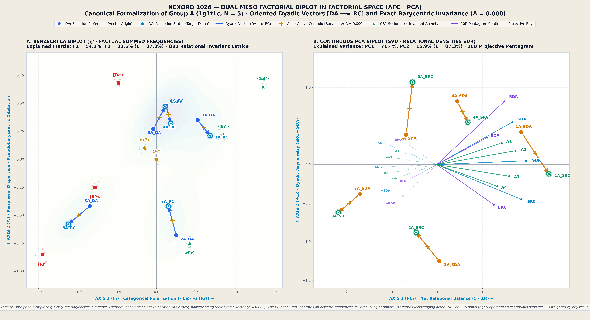
          </div>
          <div class="caption-box">
            <p class="caption-text"><strong>Official caption:</strong> Parallel factorial plane biplot: (Left) Correspondence Analysis (CA) on discrete dyadic frequencies; (Right) Principal Component Analysis (PCA) on continuous SDR weighted densities.</p>
            <p class="method-text"><strong>Methodological function:</strong> Evidences complementary duality between discrete count topology and continuous gravitational density fields.</p>
          </div>
        </div>
        

        <div class="plate-card" id="plate-13">
          <div class="plate-header">
            <span class="type-badge">FIGURE 6</span>
            <span class="section-tag">Section 5.1: Graphical Solutions & Vertical Axes</span>
          </div>
          <h3 class="plate-title">Figure 6. 1D Factorial Vertical Axes (COR–CTA–CTR) and DIMO Algorithm</h3>
          <div class="plate-img-container">
            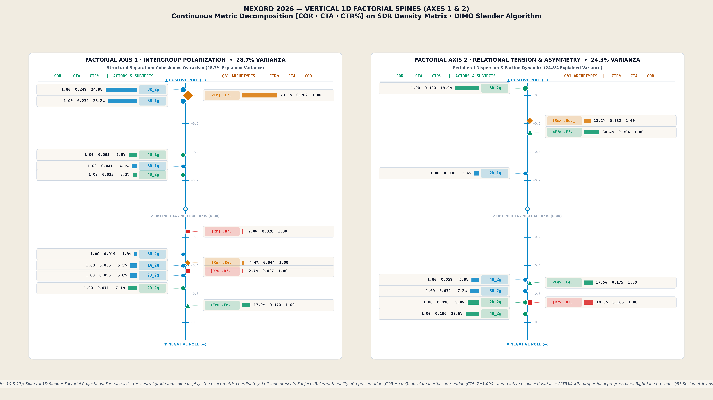
          </div>
          <div class="caption-box">
            <p class="caption-text"><strong>Official caption:</strong> Slender 1D projection of Factors 1 and 2 unpacking relative contributions (COR), absolute contributions (CTR), and distances (CTA) for each subject and Q81 figure.</p>
            <p class="method-text"><strong>Methodological function:</strong> Eliminates clutter of 2D maps and provides rigorous linear reading of each factorial dimension.</p>
          </div>
        </div>
        

        <div class="plate-card" id="plate-14">
          <div class="plate-header">
            <span class="type-badge">FIGURE 7</span>
            <span class="section-tag">Section 4.5: The VISORD Engine Paradigm</span>
          </div>
          <h3 class="plate-title">Figure 7. Interactive 3D Navigation in VISORD Engine</h3>
          <div class="plate-img-container">
            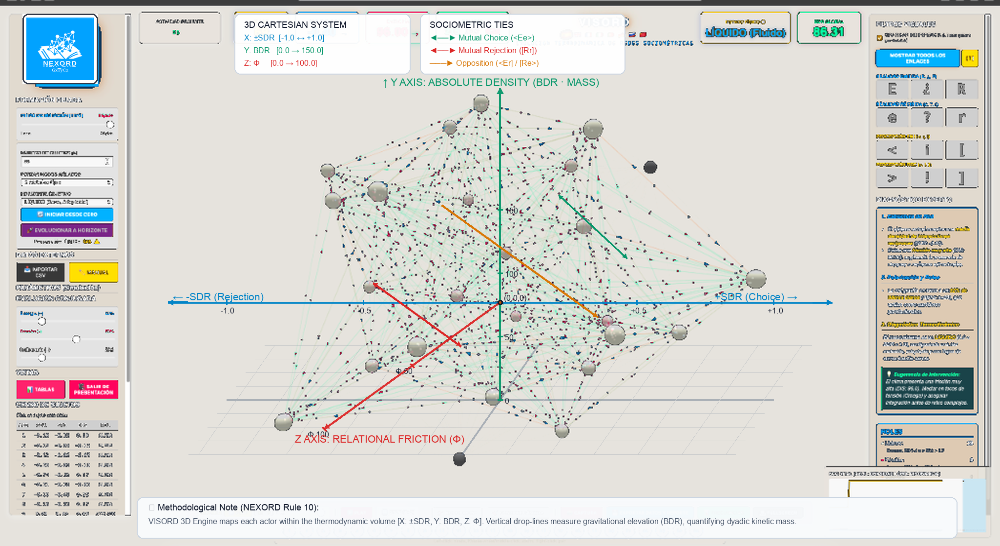
          </div>
          <div class="caption-box">
            <p class="caption-text"><strong>Official caption:</strong> 3D interface of the VISORD rendering engine: orbital visualization of kinematic trajectories, affective attraction basins, and real-time network tensions.</p>
            <p class="method-text"><strong>Methodological function:</strong> Interactive exploration of the socio-thermodynamic space in continuous time (4D Moviola).</p>
          </div>
        </div>
        

        <div class="plate-card" id="plate-15">
          <div class="plate-header">
            <span class="type-badge">TABLE 4</span>
            <span class="section-tag">Section 5.2: Multidimensional Space GxTyCz</span>
          </div>
          <h3 class="plate-title">Table 4. Battery of Complementary Variables (V10) and Group Activity (A16)</h3>
          <div class="plate-img-container">
            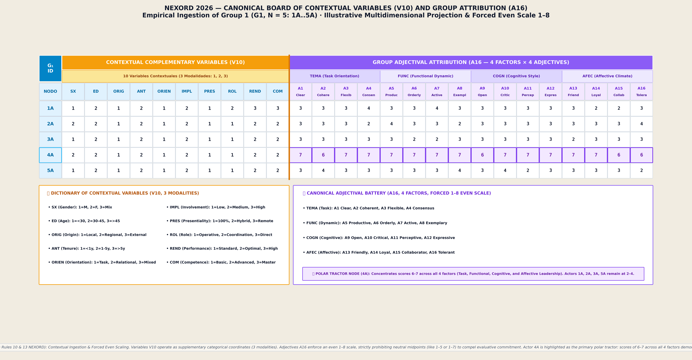
          </div>
          <div class="caption-box">
            <p class="caption-text"><strong>Official caption:</strong> Specification of the 10 sociodemographic variables (VAR10) and 16 group activity adjectives (AAG16 structured into 4 factors: Thematic, Functional, Cognitive, and Affective).</p>
            <p class="method-text"><strong>Methodological function:</strong> Provides the dispositional descriptive framework for projection as supplementary elements on pure sociometric space.</p>
          </div>
        </div>
        

        <div class="plate-card" id="plate-16">
          <div class="plate-header">
            <span class="type-badge">TABLE 5 / ANNEX III</span>
            <span class="section-tag">Section 8.3: Annex III - Catalog of the 10 Ecosystemic Domains</span>
          </div>
          <h3 class="plate-title">Table 5 / Table Annex III. Catalog of the 10 Calibration Ecosystemic Domains</h3>
          <div class="plate-img-container">
            
          </div>
          <div class="caption-box">
            <p class="caption-text"><strong>Official caption:</strong> Normative catalog of the 10 ecosystemic application domains (Educational, Clinical, Sports, Organizational, etc.) with their relational inertia (α) and decay rate (γ) parameters.</p>
            <p class="method-text"><strong>Methodological function:</strong> Calibrates field physics according to the specific institutional nature of the evaluated collective.</p>
          </div>
        </div>
        

        <div class="plate-card" id="plate-17">
          <div class="plate-header">
            <span class="type-badge">FIGURE 8</span>
            <span class="section-tag">Section 5.3: Multi-Group PCA & Grassmann Manifolds</span>
          </div>
          <h3 class="plate-title">Figure 8. Intergroup Comparative Factorial Plane (G1 vs G2) and Structrograms</h3>
          <div class="plate-img-container">
            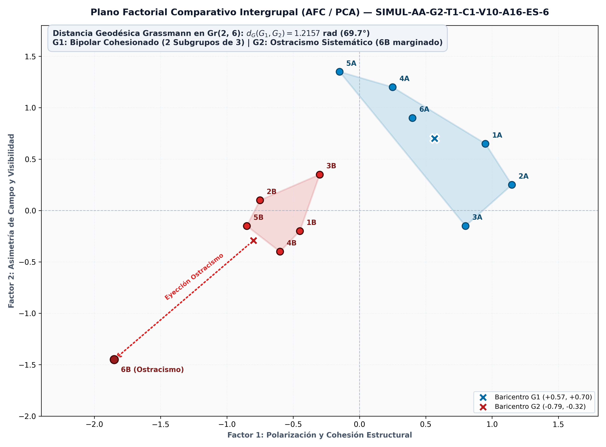
          </div>
          <div class="caption-box">
            <p class="caption-text"><strong>Official caption:</strong> Simultaneous topological comparison of two independent groups (G1 and G2) projected onto the same reference factorial plane, revealing differences in polarization and integration.</p>
            <p class="method-text"><strong>Methodological function:</strong> Differential diagnostics between organizational units or school classrooms using standardized metrics.</p>
          </div>
        </div>
        

        <div class="plate-card" id="plate-18">
          <div class="plate-header">
            <span class="type-badge">TABLE 6 / ANNEX IV</span>
            <span class="section-tag">Section 8.4: Annex IV - Emitter-Receiver Rank Interdistances</span>
          </div>
          <h3 class="plate-title">Table 6 / Table Annex IV. Numerical Matrix of Rank Euclidean Interdistances</h3>
          <div class="plate-img-container">
            
          </div>
          <div class="caption-box">
            <p class="caption-text"><strong>Official caption:</strong> Matrix of Euclidean rank interdistances between emission (d_DA) and reception (d_RC) for empirical corpus G2T1C1, evidencing role asymmetries and dyadic balance.</p>
            <p class="method-text"><strong>Methodological function:</strong> Direct numerical verification of role asymmetry law and quantification of relational imbalance.</p>
          </div>
        </div>
        

        <div class="plate-card" id="plate-19">
          <div class="plate-header">
            <span class="type-badge">FIGURE 9</span>
            <span class="section-tag">Section 6.3: Multimodal Perception & Iceberg Model</span>
          </div>
          <h3 class="plate-title">Figure 9. Continuous Interaction Field and Iceberg Model (N = 50)</h3>
          <div class="plate-img-container">
            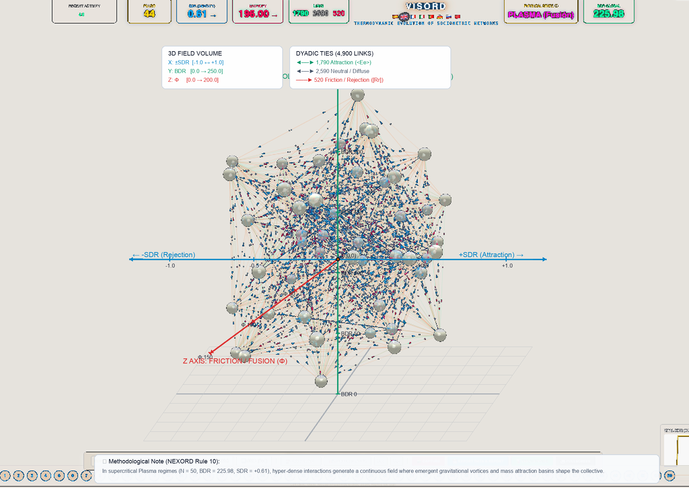
          </div>
          <div class="caption-box">
            <p class="caption-text"><strong>Official caption:</strong> High-density continuous visualization for a collective of N = 50 subjects: plasma heat map revealing the latent submerged structure beneath conventional sociograms.</p>
            <p class="method-text"><strong>Methodological function:</strong> Renders visible the submerged interaction of the relational iceberg model.</p>
          </div>
        </div>
        

        <div class="plate-card" id="plate-20">
          <div class="plate-header">
            <span class="type-badge">TABLE ANNEX I</span>
            <span class="section-tag">Section 8.1: Annex I - Dual Matrices and Q81 Lattice</span>
          </div>
          <h3 class="plate-title">Table Annex I. Official Numeralization of Relational Figures Q81(9,9) and SMIa Syntax</h3>
          <div style="padding:10px 16px 4px; max-width:580px; margin:0 auto;">
            <div style="font-weight:800; font-size:13px; color:#0B132B; margin-bottom:6px; text-align:center; font-family:-apple-system, BlinkMacSystemFont, 'Segoe UI', Roboto, sans-serif;">SMIa &nbsp; Syntax</div>
            <table style="width:100%; border-collapse:collapse; font-size:11.5px; text-align:center; border:1.5px solid #000; margin-bottom:8px; font-family:-apple-system, BlinkMacSystemFont, 'Segoe UI', Roboto, sans-serif;">
              <thead>
                <tr>
                  <th rowspan="2" style="background-color:#FFFFFF; border:1px solid #000; padding:4px; font-weight:800;">type</th>
                  <th colspan="2" style="background-color:#38BDF8; color:#000; border:1px solid #000; padding:4px; font-weight:800;">GIVES (DA)</th>
                  <th colspan="2" style="background-color:#00C49F; color:#000; border:1px solid #000; padding:4px; font-weight:800;">RECEIVES (RC)</th>
                  <th rowspan="2" style="background-color:#FFFFFF; border:1px solid #000; padding:4px; font-weight:800;">code</th>
                </tr>
                <tr style="font-size:9.5px; font-weight:700; background-color:#F8FAFC;">
                  <th style="border:1px solid #000; padding:2px 4px;">PERCEPTION</th>
                  <th style="border:1px solid #000; padding:2px 4px;">EFFECTIVE</th>
                  <th style="border:1px solid #000; padding:2px 4px;">EFFECTIVE</th>
                  <th style="border:1px solid #000; padding:2px 4px;">PERCEPTION</th>
                </tr>
              </thead>
              <tbody>
                <tr style="background-color:#FFEDD5; font-weight:700;">
                  <td style="border:1px solid #000; padding:4px; font-weight:600; text-align:left; padding-left:8px;">choice</td>
                  <td style="border:1px solid #000; padding:4px; font-family:monospace;">&lt;</td>
                  <td style="border:1px solid #000; padding:4px; font-weight:800;">E</td>
                  <td style="border:1px solid #000; padding:4px; font-weight:800;">e</td>
                  <td style="border:1px solid #000; padding:4px; font-family:monospace;">&gt;</td>
                  <td style="border:1px solid #000; padding:4px; font-family:monospace; font-weight:700;">A-Z</td>
                </tr>
                <tr style="background-color:#E0F2FE; font-weight:700;">
                  <td style="border:1px solid #000; padding:4px; font-weight:600; text-align:left; padding-left:8px;">indifference</td>
                  <td style="border:1px solid #000; padding:4px; font-family:monospace; font-weight:800;">¡</td>
                  <td style="border:1px solid #000; padding:4px; font-family:monospace; font-weight:800;">¿</td>
                  <td style="border:1px solid #000; padding:4px; font-family:monospace; font-weight:800;">?</td>
                  <td style="border:1px solid #000; padding:4px; font-family:monospace; font-weight:800;">!</td>
                  <td style="border:1px solid #000; padding:4px; font-family:monospace; font-weight:700;">0000</td>
                </tr>
                <tr style="background-color:#FDE047; font-weight:700;">
                  <td style="border:1px solid #000; padding:4px; font-weight:600; text-align:left; padding-left:8px;">rejection</td>
                  <td style="border:1px solid #000; padding:4px; font-family:monospace;">[</td>
                  <td style="border:1px solid #000; padding:4px; font-weight:800;">R</td>
                  <td style="border:1px solid #000; padding:4px; font-weight:800;">r</td>
                  <td style="border:1px solid #000; padding:4px; font-family:monospace;">]</td>
                  <td style="border:1px solid #000; padding:4px; font-family:monospace; font-weight:700;">a -z</td>
                </tr>
              </tbody>
            </table>
          </div>
          <div class="plate-img-container">
            
          </div>
          <div class="caption-box">
            <p class="caption-text"><strong>Official caption:</strong> Official Q81(9×9) lattice with the 81 basic relational figures organized from 81 (&lt;Ee&gt;, maximum mutual attraction) down to 1 ([Rr], maximum mutual rejection) centered on neutral 41 (¡¿?!), complemented by the concentrated SMIa dyadic tetragram syntax.</p>
            <p class="method-text"><strong>Methodological function:</strong> Reference invariant and universal calibration table for projecting and quantifying dyadic relational states.</p>
          </div>
        </div>
        
      
        <div class="plate-card" id="plate-en-21">
          <div class="plate-header">
            <span class="type-badge">FIGURE 2b · EMPIRICAL VALIDATION 1988</span>
            <span class="section-tag">Section 1.2: Topological Isomorphism and Orographic Realism</span>
          </div>
          <h3 class="plate-title">Figure 2b. 3D Orographic Relief of Perceptual Realism (Topological Validation N = 47)</h3>
          <div class="plate-img-container">
            
          </div>
          <div class="caption-box">
            <p class="caption-text"><strong>Official caption:</strong> Three-dimensional orographic model of peninsular relational space. Topological reconstruction of the 47 Spanish provincial capital network from road distance data and the ORBIT ordinal matrix, uncovering distortion produced by physical barriers (Cantabrian Range, Central System, Sierra Morena).</p>
            <p class="method-text"><strong>Methodological function:</strong> Demonstrates that ordinal matrices are not flat geometric abstractions, capturing instead relational friction relief and hodological travel cost across the life space.</p>
          </div>
        </div>

        <div class="plate-card" id="plate-en-22">
          <div class="plate-header">
            <span class="type-badge">FIGURE 2c · ORDINAL ROSETTA STONE</span>
            <span class="section-tag">Section 1.2: Iberian Peninsula Reconstruction without GPS</span>
          </div>
          <h3 class="plate-title">Figure 2c. Direct Cartographic Isomorphism: Road Distance MDS vs ORBIT Matrix (N = 47)</h3>
          <div class="plate-img-container">
            
          </div>
          <div class="caption-box">
            <p class="caption-text"><strong>Official caption:</strong> Superposition and correlation between factorial maps recovered via Classical Multidimensional Scaling (Torgerson MDS): Panel A (actual road distance in km from Campsa Guide 1988) vs Panel B (symmetric matrix of 9 pure ordinal ranks ORBIT). Correlation coefficients: r = 0.954 (Pearson), ρ = 0.967 (Spearman, p &lt; 0.0001).</p>
            <p class="method-text"><strong>Methodological function:</strong> Cornerstone construct validation for NEXORD: confirms that ordinal rank compression into 9 levels strictly preserves continuous metric topology.</p>
          </div>
        </div>

        <div class="plate-card" id="plate-en-23">
          <div class="plate-header">
            <span class="type-badge">FIGURE 2d · METRIC CALIBRATION</span>
            <span class="section-tag">Section 1.2: Scatter Plots and Calibration Curves</span>
          </div>
          <h3 class="plate-title">Figure 2d. Metric Calibration: OLS Linear Fit vs Scale Anchoring and 5/95 Quantiles</h3>
          <div class="plate-img-container">
            
          </div>
          <div class="caption-box">
            <p class="caption-text"><strong>Official caption:</strong> Calibration model comparison for converting ordinal ranks into continuous metric distances. Decile-stratified concordance analysis and tail robustness through 5/95 quantile anchoring.</p>
            <p class="method-text"><strong>Methodological function:</strong> Establishes scale invariance for the inverse rank function and outlier governance in massive relational matrices.</p>
          </div>
        </div>

        <div class="plate-card" id="plate-en-24">
          <div class="plate-header">
            <span class="type-badge">FIGURE ANNEX IIb</span>
            <span class="section-tag">Annex II: DIMO Algorithm and Dimensional Reduction</span>
          </div>
          <h3 class="plate-title">Figure Annex IIb. DIMO 4D Axonometric Projection of Vector Spaces</h3>
          <div class="plate-img-container">
            
          </div>
          <div class="caption-box">
            <p class="caption-text"><strong>Official caption:</strong> Four-dimensional axonometric projection of the DIMO algorithm, illustrating trajectories and convergence of factorial inertia gradients within the relational hypercube.</p>
            <p class="method-text"><strong>Methodological function:</strong> Provides visual inspection of dimensional stability prior to orthogonal compression onto the MESO F1 × F2 biplot plane.</p>
          </div>
        </div>

        <div class="plate-card" id="plate-en-25">
          <div class="plate-header">
            <span class="type-badge">FIGURE ANNEX IVb</span>
            <span class="section-tag">Annex IV: Euclidean Metric Space and Polarization</span>
          </div>
          <h3 class="plate-title">Figure Annex IVb. Bipolar Interdistance Scatter and Group Polarization</h3>
          <div class="plate-img-container">
            
          </div>
          <div class="caption-box">
            <p class="caption-text"><strong>Official caption:</strong> Bipolar scatter plot comparing interdistances between emitters (SDA) and receivers (SRC), isolating task and affective polarization axes.</p>
            <p class="method-text"><strong>Methodological function:</strong> Differential diagnosis between harmonious cohesive collectives and groups fractured into antagonistic coalitions.</p>
          </div>
        </div>

        <div class="plate-card" id="plate-en-26">
          <div class="plate-header">
            <span class="type-badge">FIGURE ANNEX IVc</span>
            <span class="section-tag">Annex IV: Geometry of Group Tensions</span>
          </div>
          <h3 class="plate-title">Figure Annex IVc. Quadratic Mapping of Polarization and Dialectical Cohesion</h3>
          <div class="plate-img-container">
            
          </div>
          <div class="caption-box">
            <p class="caption-text"><strong>Official caption:</strong> Topological mapping of group polarization via parabolic tension gradients, balancing functional cohesion against risk of internal schism.</p>
            <p class="method-text"><strong>Methodological function:</strong> Computes critical dialectical tolerance thresholds before social collective fragmentation occurs.</p>
          </div>
        </div>

        <div class="plate-card" id="plate-en-27">
          <div class="plate-header">
            <span class="type-badge">FIGURE ANNEX IVd</span>
            <span class="section-tag">Annex IV: Harmonic and Frequency Analysis</span>
          </div>
          <h3 class="plate-title">Figure Annex IVd. Dual FFT Spectral Decomposition of Status and Friction Waves</h3>
          <div class="plate-img-container">
            
          </div>
          <div class="caption-box">
            <p class="caption-text"><strong>Official caption:</strong> Fast Fourier Transform (FFT) spectral decomposition of dyadic vector profiles, separating group dynamics into fundamental status harmonics and relational friction overtones.</p>
            <p class="method-text"><strong>Methodological function:</strong> Identifies core leadership frequencies and destructive communicative interference patterns.</p>
          </div>
        </div>

        <div class="plate-card" id="plate-en-28">
          <div class="plate-header">
            <span class="type-badge">FIGURE ANNEX Va</span>
            <span class="section-tag">Annex V: Markov Chains and Transition Probabilities</span>
          </div>
          <h3 class="plate-title">Figure Annex Va. Transition Dynamics and Markov Stochastic Matrix (Group G1)</h3>
          <div class="plate-img-container">
            
          </div>
          <div class="caption-box">
            <p class="caption-text"><strong>Official caption:</strong> Stochastic transition graph derived from regular Markov matrix for Group G1 at t=1, c=1, illustrating ergodic absorption probabilities and transient states.</p>
            <p class="method-text"><strong>Methodological function:</strong> Forecasts medium and long-term trajectory of status and interpersonal choice flows.</p>
          </div>
        </div>

        <div class="plate-card" id="plate-en-29">
          <div class="plate-header">
            <span class="type-badge">FIGURE ANNEX Vb</span>
            <span class="section-tag">Annex V: Attractor Basins and Thermodynamics</span>
          </div>
          <h3 class="plate-title">Figure Annex Vb. Markov Gravitational Graph and Attractor Basins (Group G2)</h3>
          <div class="plate-img-container">
            
          </div>
          <div class="caption-box">
            <p class="caption-text"><strong>Official caption:</strong> Gravitational Markov graph for Group G2 at t=2, c=1, revealing gravitational attractor basins, relational potential wells, and interpersonal influence pathways.</p>
            <p class="method-text"><strong>Methodological function:</strong> Detects critical bifurcation thresholds and homeostatic equilibrium throughout collective evolution.</p>
          </div>
        </div>
</div>
    </section>
    
      <hr class="section-divider">
      
    <section class="manifesto-section" id="seccion-glosario-en">
      <h2>General Glossary of Ordinal Sociometry and Group Dynamics</h2>
      <p class="lead-paragraph">Comprehensive conceptual compendium integrating classical psychosocial foundations (Moreno, Lewin, Bateson, Bales) with the mathematical, topological, and socio-thermodynamic operators of the NEXORD/VISORD suite.</p>

      
    <div class="acronym-box">
      <h4 style="margin-top:0; color:#1E3A8A; font-size:15px;">📋 Quick Reference Table: Acronyms and Theoretical Operators</h4>
      <div style="overflow-x:auto;">
        <table class="standard-table" style="font-size:12px; margin-bottom:15px;">
          <thead>
            <tr><th>Acronym</th><th>Official Designation</th><th>Definition and Scope</th></tr>
          </thead>
          <tbody>
            <tr><td><strong>SMIb</strong></td><td>Numerical Bivariate Sociomatrix</td><td>$N 	imes N$ matrix recording exact ordinal ranks across 4 pathways ($A_1 \dots A_4$).</td></tr>
            <tr><td><strong>SMIa</strong></td><td>Symbolic Bivariate Sociomatrix</td><td>Qualitative typological matrix using dyadic characters (+, 0, -).</td></tr>
            <tr><td><strong>Q81</strong></td><td>Tensor of 81 Dyadic Figures</td><td>$9 	imes 9$ Cartesian lattice ordered along antidiagonals of valence.</td></tr>
            <tr><td><strong>BDR</strong></td><td>Absolute Relational Density</td><td>Gross energetic activity or total relational charge: $|A_1| + |A_2| + |A_3| + |A_4|$.</td></tr>
            <tr><td><strong>SDR</strong></td><td>Relative Density Balance</td><td>Normalized net balance of attraction versus repulsion in $[-1.0, +1.0]$.</td></tr>
            <tr><td><strong>SDA / SRC</strong></td><td>Emitted / Received Density</td><td>$SDA = A_1 + A_2$ (expansiveness); $SRC = A_3 + A_4$ (received status).</td></tr>
            <tr><td><strong>$\Phi$</strong></td><td>Relational Friction</td><td>Shear operator measuring expectancy dissonance in the group field.</td></tr>
            <tr><td><strong>ICE</strong></td><td>Structural Cohesion Index</td><td>Ratio of mutual balanced ties relative to total tie volume.</td></tr>
            <tr><td><strong>DIMO</strong></td><td>Slender 1D Axes Algorithm</td><td>Decomposition of factorial coordinates and contributions (COR, CTA, CTR).</td></tr>
            <tr><td><strong>BSOC</strong></td><td>Sociometric Bank</td><td>Open Science repository infrastructure for dataset custody and preservation.</td></tr>
          </tbody>
        </table>
      </div>
    </div>
    

      <div class="glossary-controls-box">
        <input type="text" id="glossary-search-en" class="glossary-search-input" placeholder="🔍 Search term, author, operator, or concept..." oninput="filterGlossary('en')">
        <div class="glossary-pills-row">
          <button class="glossary-filter-pill active" data-cat="all" onclick="filterGlossary('en', 'all')">All Concepts</button>
<button class="glossary-filter-pill" data-cat="fundamentos" onclick="filterGlossary('en', 'fundamentos')">Foundations & Field Theory</button>
<button class="glossary-filter-pill" data-cat="topologia" onclick="filterGlossary('en', 'topologia')">Topology & Matrices</button>
<button class="glossary-filter-pill" data-cat="termodinamica" onclick="filterGlossary('en', 'termodinamica')">Socio-Thermodynamics</button>
<button class="glossary-filter-pill" data-cat="espectral" onclick="filterGlossary('en', 'espectral')">Spectral & Metrics</button>
<button class="glossary-filter-pill" data-cat="ordinal" onclick="filterGlossary('en', 'ordinal')">Ordinal Format</button>
<button class="glossary-filter-pill" data-cat="etica" onclick="filterGlossary('en', 'etica')">Ethics & Governance</button>
        </div>
        <div id="glossary-counter-en" class="glossary-counter">Showing 42 of 42 terms</div>
      </div>

      <div class="glossary-cards-container" id="glossary-container-en" data-active-cat="all">
        
        <div class="glossary-card" data-cat="fundamentos" data-term="classical sociometry & social atom (j. l. moreno, 1934)">
          <div class="glossary-card-header">
            <span class="glossary-badge">Foundations & Field Theory</span>
            <h4 class="glossary-title">Classical Sociometry & Social Atom (J. L. Moreno, 1934)</h4>
          </div>
          <div class="glossary-body">
            Mathematical investigation of the evolution and internal structure of human groups through the quantification of affective forces of attraction and repulsion. Moreno posited that groups are not mere aggregates of individuals, but interdependent socio-affective networks structured by currents of sympathy and rejection.
          </div>
        </div>
        

        <div class="glossary-card" data-cat="fundamentos" data-term="sociatry (j. l. moreno, 1934)">
          <div class="glossary-card-header">
            <span class="glossary-badge">Foundations & Field Theory</span>
            <h4 class="glossary-title">Sociatry (J. L. Moreno, 1934)</h4>
          </div>
          <div class="glossary-body">
            The therapeutic and restorative branch of sociometry ("the medicine of society"). While sociometry measures and diagnoses the social fabric, sociatry constitutes the clinical practice aimed at reorganizing, healing, and revitalizing interpersonal bonds toward more functional and fulfilling structures.
          </div>
        </div>
        

        <div class="glossary-card" data-cat="fundamentos" data-term="field theory & life space (kurt lewin, 1936, 1951)">
          <div class="glossary-card-header">
            <span class="glossary-badge">Foundations & Field Theory</span>
            <h4 class="glossary-title">Field Theory & Life Space (Kurt Lewin, 1936, 1951)</h4>
          </div>
          <div class="glossary-body">
            Paradigmatic principle positing that behavior (\(C\)) is a function of the total dynamic field operating at the present moment: \(C = f(P, E)\), where \(P\) is the person and \(E\) is the psychological environment. NEXORD translates this principle into continuous group interaction in tensor space.
          </div>
        </div>
        

        <div class="glossary-card" data-cat="fundamentos" data-term="quasi-stationary equilibrium (kurt lewin, 1947)">
          <div class="glossary-card-header">
            <span class="glossary-badge">Foundations & Field Theory</span>
            <h4 class="glossary-title">Quasi-Stationary Equilibrium (Kurt Lewin, 1947)</h4>
          </div>
          <div class="glossary-body">
            Conception of group habits and norms as a dynamic steady state, comparable to the flow of a river where driving forces and restraining forces counterbalance each other. Sociometric intervention shifts this equilibrium by restructuring the force field without unnecessarily escalating global tension.
          </div>
        </div>
        

        <div class="glossary-card" data-cat="fundamentos" data-term="relational schismogenesis (gregory bateson, 1935 / 1972)">
          <div class="glossary-card-header">
            <span class="glossary-badge">Foundations & Field Theory</span>
            <h4 class="glossary-title">Relational Schismogenesis (Gregory Bateson, 1935 / 1972)</h4>
          </div>
          <div class="glossary-body">
            Process of structural fissure and polarization into disjoint subgroups or factions driven by escalating systemic frustration. In spectral terms, it manifests when the second eigenvalue of the Laplacian (\(\lambda_2\), Fiedler vector) approaches zero, revealing imminent graph partitioning.
          </div>
        </div>
        

        <div class="glossary-card" data-cat="fundamentos" data-term="binomial significance sig_b (urie bronfenbrenner, 1943)">
          <div class="glossary-card-header">
            <span class="glossary-badge">Foundations & Field Theory</span>
            <h4 class="glossary-title">Binomial Significance SIG_B (Urie Bronfenbrenner, 1943)</h4>
          </div>
          <div class="glossary-body">
            Exact probabilistic test based on binomial/Poisson distributions to verify whether the status of "sociometric star" or "isolate" exceeds statistical chance (\(p < 0.05\)) given group size \(N\).
          </div>
        </div>
        

        <div class="glossary-card" data-cat="topologia" data-term="smib (bivariate condensed individual sociomatrix)">
          <div class="glossary-card-header">
            <span class="glossary-badge">Topology & Matrices</span>
            <h4 class="glossary-title">SMIb (Bivariate Condensed Individual Sociomatrix)</h4>
          </div>
          <div class="glossary-body">
            Official N×N tensor structure recording exact ordinal ranks (1st..Nth) across 4 positions per cell: A₁ (sender's expectation of partner's choice), A₂ (actual given choice), A₃ (actual received choice), and A₄ (partner's expectation of sender's choice). Integrates attraction and repulsion in signed ASCII notation (Uppercase, '0', Lowercase).
          </div>
        </div>
        

        <div class="glossary-card" data-cat="topologia" data-term="smia (symbolized individual bivariate sociomatrix)">
          <div class="glossary-card-header">
            <span class="glossary-badge">Topology & Matrices</span>
            <h4 class="glossary-title">SMIa (Symbolized Individual Bivariate Sociomatrix)</h4>
          </div>
          <div class="glossary-body">
            Qualitative typological representation of the relational tetragram without numeric digits, encoded through 81 official symbols: mutual election (&lt;Ee&gt;), mutual rejection ([Rr]), emotional opposition (&lt;Er], [Re&gt;), or indifference (¡¿?!).
          </div>
        </div>
        

        <div class="glossary-card" data-cat="topologia" data-term="q₈₁ tensor (81 dyadic sociometric figures)">
          <div class="glossary-card-header">
            <span class="glossary-badge">Topology & Matrices</span>
            <h4 class="glossary-title">Q₈₁ Tensor (81 Dyadic Sociometric Figures)</h4>
          </div>
          <div class="glossary-body">
            Cartesian 3×3×3×3 grid crossing emission and reception with actual choices and meta-perceptions. Provides exhaustive resolution of human dyadic states without informational loss.
          </div>
        </div>
        

        <div class="glossary-card" data-cat="topologia" data-term="the 6 relational prisms (p₁ to p₆)">
          <div class="glossary-card-header">
            <span class="glossary-badge">Topology & Matrices</span>
            <h4 class="glossary-title">The 6 Relational Prisms (P₁ to P₆)</h4>
          </div>
          <div class="glossary-body">
            Analytical operators crossing SMIb vector pairs to reveal 9 structural states: P₁ (DA vs REC), P₂ (pDA vs pREC), P₃ (DA vs pDA), P₄ (REC vs pREC), P₅ (DA vs pREC), and P₆ (REC vs pDA).
          </div>
        </div>
        

        <div class="glossary-card" data-cat="topologia" data-term="sociometric footprint (255 disjunctive symbols)">
          <div class="glossary-card-header">
            <span class="glossary-badge">Topology & Matrices</span>
            <h4 class="glossary-title">Sociometric Footprint (255 Disjunctive Symbols)</h4>
          </div>
          <div class="glossary-body">
            Exhaustive combinatorial space (1-to-1, 2-to-2, 3-to-3, and 4-to-4 groupings) of dyadic micro-configurations, capturing the complete relational fingerprint of each actor.
          </div>
        </div>
        

        <div class="glossary-card" data-cat="topologia" data-term="pyramidal reduction (q81 → 9 → 6 → 3)">
          <div class="glossary-card-header">
            <span class="glossary-badge">Topology & Matrices</span>
            <h4 class="glossary-title">Pyramidal Reduction (Q81 → 9 → 6 → 3)</h4>
          </div>
          <div class="glossary-body">
            Homomorphic hierarchical aggregation architecture that condenses the 81 microscopic dyadic figures into 9 action modalities (DA), 6 meso descriptors (Q6a: emission and reception), and 3 macro basins (attraction, indifference, and rejection), preserving total dyadic mass N(N-1) and socio-thermal centroids without distortion.
          </div>
        </div>
        

        <div class="glossary-card" data-cat="topologia" data-term="meso 6 descriptors (q6a: emission and reception)">
          <div class="glossary-card-header">
            <span class="glossary-badge">Topology & Matrices</span>
            <h4 class="glossary-title">Meso 6 Descriptors (Q6a: Emission and Reception)</h4>
          </div>
          <div class="glossary-body">
            Fundamental affective-effective action descriptors divided into 3 emission poles (\(A_2 = E, ¿, R\)) and 3 reception poles (\(A_3 = e, ¿, r\)). They model energy flow balances and reciprocity in a two-dimensional Cartesian projection.
          </div>
        </div>
        

        <div class="glossary-card" data-cat="topologia" data-term="barycentric invariance of the pyramid">
          <div class="glossary-card-header">
            <span class="glossary-badge">Topology & Matrices</span>
            <h4 class="glossary-title">Barycentric Invariance of the Pyramid</h4>
          </div>
          <div class="glossary-body">
            Principle establishing that total dyadic mass (\(N(N-1)\) ties) and socio-thermal potential barycenters (\(BDR, SDR\)) are geometrically conserved across every aggregation level (81 \(\to\) 9 \(\to\) 6 \(\to\) 3 \(\to\) 1). No heuristic reduction produces loss of structural energy.
          </div>
        </div>
        

        <div class="glossary-card" data-cat="termodinamica" data-term="absolute density (bdr)">
          <div class="glossary-card-header">
            <span class="glossary-badge">Socio-Thermodynamics</span>
            <h4 class="glossary-title">Absolute Density (BDR)</h4>
          </div>
          <div class="glossary-body">
            Total gross relational mass exchanged within the group: BDR = Σ|W_{ij}|. Quantifies overall communicative vitality and activity volume regardless of emotional valence.
          </div>
        </div>
        

        <div class="glossary-card" data-cat="termodinamica" data-term="relative density (sdr)">
          <div class="glossary-card-header">
            <span class="glossary-badge">Socio-Thermodynamics</span>
            <h4 class="glossary-title">Relative Density (SDR)</h4>
          </div>
          <div class="glossary-body">
            Weighted net balance of attraction versus rejection normalized within the continuous interval [-1.0, +1.0]. Diagnoses emotional climate, affective surplus, or toxicity.
          </div>
        </div>
        

        <div class="glossary-card" data-cat="termodinamica" data-term="heider frustration (λ₁)">
          <div class="glossary-card-header">
            <span class="glossary-badge">Socio-Thermodynamics</span>
            <h4 class="glossary-title">Heider Frustration (λ₁)</h4>
          </div>
          <div class="glossary-body">
            Dominant eigenvalue of the weighted signed Laplacian. Measures accumulated tension, systemic cognitive dissonance, and structural instability from unclosed balance triangles.
          </div>
        </div>
        

        <div class="glossary-card" data-cat="termodinamica" data-term="socio-thermodynamic entropy (s_i)">
          <div class="glossary-card-header">
            <span class="glossary-badge">Socio-Thermodynamics</span>
            <h4 class="glossary-title">Socio-Thermodynamic Entropy (S_i)</h4>
          </div>
          <div class="glossary-body">
            Measure of psychosocial energy dissipation caused by misaligned expectations and dyadic ambivalence: S_i = -Σ p_ij · ln(p_ij).
          </div>
        </div>
        

        <div class="glossary-card" data-cat="termodinamica" data-term="the 4 group phase states">
          <div class="glossary-card-header">
            <span class="glossary-badge">Socio-Thermodynamics</span>
            <h4 class="glossary-title">The 4 Group Phase States</h4>
          </div>
          <div class="glossary-body">
            Socio-physical group regimes: 1) Solid (Crystallization: high inertia α, minimal entropy S); 2) Liquid (Adaptive Harmony: optimal plasticity); 3) Gas (High Dispersion: maximum entropy, weak ties); 4) Plasma (Hyper-Polarization: extreme friction).
          </div>
        </div>
        

        <div class="glossary-card" data-cat="termodinamica" data-term="relational inertia (α) & forgetting rate (γ)">
          <div class="glossary-card-header">
            <span class="glossary-badge">Socio-Thermodynamics</span>
            <h4 class="glossary-title">Relational Inertia (α) & Forgetting Rate (γ)</h4>
          </div>
          <div class="glossary-body">
            Temporal modulators: α ∈ [0.0, 0.99] measures structural resistance to altering established hierarchies; γ ∈ [0.0, 1.0] regulates the decay of historical emotional weight across waves.
          </div>
        </div>
        

        <div class="glossary-card" data-cat="espectral" data-term="grassmann manifolds gr(k, n)">
          <div class="glossary-card-header">
            <span class="glossary-badge">Spectral & Metrics</span>
            <h4 class="glossary-title">Grassmann Manifolds Gr(k, N)</h4>
          </div>
          <div class="glossary-body">
            Continuous geometric space parametrizing k-dimensional vector subspaces in an N-dimensional Euclidean space. Allows rigorous intergroup comparisons invariant to variable group size (N).
          </div>
        </div>
        

        <div class="glossary-card" data-cat="espectral" data-term="grassmann geodesic distance (d_g)">
          <div class="glossary-card-header">
            <span class="glossary-badge">Spectral & Metrics</span>
            <h4 class="glossary-title">Grassmann Geodesic Distance (d_G)</h4>
          </div>
          <div class="glossary-body">
            Invariant metric of the minimal geodesic angle between two relational subspaces: \(d_G(U, V) = \sqrt{\sum_{i=1}^k \theta_i^2}\), where \(\theta_i\) are the official Jordan angles. Quantifies objective structural divergence between groups or across longitudinal waves.
          </div>
        </div>
        

        <div class="glossary-card" data-cat="espectral" data-term="fiedler connectivity (λ₂)">
          <div class="glossary-card-header">
            <span class="glossary-badge">Spectral & Metrics</span>
            <h4 class="glossary-title">Fiedler Connectivity (λ₂)</h4>
          </div>
          <div class="glossary-body">
            Second-smallest eigenvalue of the network Laplacian (L = D - A). Quantifies structural robustness, communication cohesion, and resistance to group fragmentation.
          </div>
        </div>
        

        <div class="glossary-card" data-cat="espectral" data-term="estrada subgraph (ee) & spectral operators">
          <div class="glossary-card-header">
            <span class="glossary-badge">Spectral & Metrics</span>
            <h4 class="glossary-title">Estrada Subgraph (EE) & Spectral Operators</h4>
          </div>
          <div class="glossary-body">
            Network communicability index based on the trace of the matrix exponential (e^A). Weights short-path vs long-path influence across complex social networks.
          </div>
        </div>
        

        <div class="glossary-card" data-cat="espectral" data-term="bonacich status centrality (k_inf)">
          <div class="glossary-card-header">
            <span class="glossary-badge">Spectral & Metrics</span>
            <h4 class="glossary-title">Bonacich Status Centrality (K_INF)</h4>
          </div>
          <div class="glossary-body">
            Recursive eigenvector centrality where the prestige of a node depends not merely on the quantity of incoming choices, but on the position and sociometric weight of those choosing it: \(C(\alpha, \beta) = \alpha (I - \beta A)^{-1} A \mathbf{1}\).
          </div>
        </div>
        

        <div class="glossary-card" data-cat="espectral" data-term="factorial duality (ca vs pca) (ca vs. pca)">
          <div class="glossary-card-header">
            <span class="glossary-badge">Spectral & Metrics</span>
            <h4 class="glossary-title">Factorial Duality (CA vs PCA) (CA vs. PCA)</h4>
          </div>
          <div class="glossary-body">
            Unified mathematical framework of factorial projection where Correspondence Analysis (CA) decomposes discrete integer counts under the Chi-square metric (amplifying peripheries), whereas Principal Component Analysis (PCA) decomposes the continuous signed matrix of Relative Densities (SDR) via orthogonal SVD under gravitational weighting (polarizing attraction centers).
          </div>
        </div>
        

        <div class="glossary-card" data-cat="ordinal" data-term="breve format (continuous positive ranking)">
          <div class="glossary-card-header">
            <span class="glossary-badge">Ordinal Format</span>
            <h4 class="glossary-title">BREVE Format (Continuous Positive Ranking)</h4>
          </div>
          <div class="glossary-body">
            Survey administration protocol based on a single positive relational ordering question (1st..Nth), eliminating cognitive fatigue and reducing survey time to &lt;90 seconds.
          </div>
        </div>
        

        <div class="glossary-card" data-cat="ordinal" data-term="ae (alpha choice meta-perception)">
          <div class="glossary-card-header">
            <span class="glossary-badge">Ordinal Format</span>
            <h4 class="glossary-title">aE (Alpha Choice Meta-Perception)</h4>
          </div>
          <div class="glossary-body">
            Participant's cognitive expectation regarding who will be the most chosen and socially legitimized member across the collective.
          </div>
        </div>
        

        <div class="glossary-card" data-cat="ordinal" data-term="oe (omega vulnerability / risk meta-perception)">
          <div class="glossary-card-header">
            <span class="glossary-badge">Ordinal Format</span>
            <h4 class="glossary-title">oE (Omega Vulnerability / Risk Meta-Perception)</h4>
          </div>
          <div class="glossary-body">
            Participant's cognitive expectation regarding who will occupy the most peripheral, vulnerable, or disconnected position in the group network.
          </div>
        </div>
        

        <div class="glossary-card" data-cat="ordinal" data-term="master gravitational weighting w(k) = 2^(1-k)">
          <div class="glossary-card-header">
            <span class="glossary-badge">Ordinal Format</span>
            <h4 class="glossary-title">Master Gravitational Weighting W(k) = 2^(1-k)</h4>
          </div>
          <div class="glossary-body">
            Mathematical exponential decay law governing vote weights according to assigned ordinal rank (1.000, 0.500, 0.250, 0.125...), reflecting real cognitive prioritization.
          </div>
        </div>
        

        <div class="glossary-card" data-cat="ordinal" data-term="extremes algorithm (5 phases)">
          <div class="glossary-card-header">
            <span class="glossary-badge">Ordinal Format</span>
            <h4 class="glossary-title">Extremes Algorithm (5 Phases)</h4>
          </div>
          <div class="glossary-body">
            Cognitive ranking strategy for medium and large groups (N > 15). Divides ordering into: 1) Core attraction; 2) Known periphery; 3) Unchosen neutral middle; 4) Risk meta-perception; 5) Cohesion meta-perception.
          </div>
        </div>
        

        <div class="glossary-card" data-cat="ordinal" data-term="complementary variables battery (var₁₀)">
          <div class="glossary-card-header">
            <span class="glossary-badge">Ordinal Format</span>
            <h4 class="glossary-title">Complementary Variables Battery (VAR₁₀)</h4>
          </div>
          <div class="glossary-body">
            Official normative battery of 10 sociodemographic and functional attributes (SX, ED, ORIG, ANT, ORIEN, IMPL, PRES, ROL, REND, COM), each having 3 discrete modalities.
          </div>
        </div>
        

        <div class="glossary-card" data-cat="ordinal" data-term="group adjectival attribution (aag₁₆ / a₄×₄)">
          <div class="glossary-card-header">
            <span class="glossary-badge">Ordinal Format</span>
            <h4 class="glossary-title">Group Adjectival Attribution (AAG₁₆ / A₄×₄)</h4>
          </div>
          <div class="glossary-body">
            Semantic battery of 16 normative adjectives grouped into 4 official factors (THEMATIC, FUNC, COGN, AFFECT) scored on an even 1 to 8 forced-choice scale.
          </div>
        </div>
        

        <div class="glossary-card" data-cat="ordinal" data-term="socio-thermodynamic pointillist canvas">
          <div class="glossary-card-header">
            <span class="glossary-badge">Ordinal Format</span>
            <h4 class="glossary-title">Socio-Thermodynamic Pointillist Canvas</h4>
          </div>
          <div class="glossary-body">
            Spectral visualization engine projecting relational micro-clouds (σ = 0.032) on dark navy blue (#0B132B) with subtle KDE isobars (alpha=0.18) showing gravitational attraction and rejection basins.
          </div>
        </div>
        

        <div class="glossary-card" data-cat="etica" data-term="clélie manifesto & humanist commitment">
          <div class="glossary-card-header">
            <span class="glossary-badge">Ethics & Governance</span>
            <h4 class="glossary-title">Clélie Manifesto & Humanist Commitment</h4>
          </div>
          <div class="glossary-body">
            Ethical charter inspired by the 'Carte de Tendre' (Madeleine de Scudéry, 1654) and Lewin's Action-Research, establishing the primacy of human dignity over algorithmic efficiency.
          </div>
        </div>
        

        <div class="glossary-card" data-cat="etica" data-term="non-punitive veto & anti-purge guarantee">
          <div class="glossary-card-header">
            <span class="glossary-badge">Ethics & Governance</span>
            <h4 class="glossary-title">Non-Punitive Veto & Anti-Purge Guarantee</h4>
          </div>
          <div class="glossary-body">
            Unconditional legal, ethical, and contractual prohibition against using sociometric maps or relational diagnostics for dismissals, disciplinary demotions, or exclusion.
          </div>
        </div>
        

        <div class="glossary-card" data-cat="etica" data-term="zero psychological harm & clélie l3 form">
          <div class="glossary-card-header">
            <span class="glossary-badge">Ethics & Governance</span>
            <h4 class="glossary-title">Zero Psychological Harm & Clélie L3 Form</h4>
          </div>
          <div class="glossary-body">
            Individual debriefing protocol: participants receive exclusively a constructive balance of their relational agency via personal interviews, never raw negative peer voting data.
          </div>
        </div>
        

        <div class="glossary-card" data-cat="etica" data-term="q-gid tokenization & census decoupling">
          <div class="glossary-card-header">
            <span class="glossary-badge">Ethics & Governance</span>
            <h4 class="glossary-title">Q-GID Tokenization & Census Decoupling</h4>
          </div>
          <div class="glossary-body">
            Exclusive fiduciary key custody held by the certified PI. Algorithms process cryptographic tokens in memory; operators and databases never touch bare civil identities.
          </div>
        </div>
        

        <div class="glossary-card" data-cat="etica" data-term="dual-role governance architecture (ipi vs. ipis)">
          <div class="glossary-card-header">
            <span class="glossary-badge">Ethics & Governance</span>
            <h4 class="glossary-title">Dual-Role Governance Architecture (IPI vs. IPIS)</h4>
          </div>
          <div class="glossary-body">
            Strict separation of powers: the IPI (Facilitator) conducts group dynamics without seeing deanonymized master keys; the IPIS (Auditor) certifies mathematical validity and forensic seals.
          </div>
        </div>
        

        <div class="glossary-card" data-cat="etica" data-term="right to be forgotten & relational amnesty">
          <div class="glossary-card-header">
            <span class="glossary-badge">Ethics & Governance</span>
            <h4 class="glossary-title">Right to be Forgotten & Relational Amnesty</h4>
          </div>
          <div class="glossary-body">
            Immediate and irreversible destruction of IP addresses and tracking metadata upon survey completion. Relational amnesty ensures no subject is ever permanently stigmatized.
          </div>
        </div>
        

        <div class="glossary-card" data-cat="etica" data-term="master study key & cultural corpus">
          <div class="glossary-card-header">
            <span class="glossary-badge">Ethics & Governance</span>
            <h4 class="glossary-title">Master Study Key & CULTURAL Corpus</h4>
          </div>
          <div class="glossary-body">
            Mandatory unique nomenclature starting with data category prefix (SIMUL, PROPIO, REAL, CULTURAL) and hyphenated parameters: e.g., CULTURAL-AA-G1-T1-C1-V10-A16-ES-8.
          </div>
        </div>
        

        <div class="glossary-card" data-cat="etica" data-term="general terms of access (cga-2026)">
          <div class="glossary-card-header">
            <span class="glossary-badge">Ethics & Governance</span>
            <h4 class="glossary-title">General Terms of Access (CGA-2026)</h4>
          </div>
          <div class="glossary-body">
            Regulatory framework requiring certified academic licensure, institutional executive authorization, and an approved Bioethics Review Board ruling before empirical fieldwork.
          </div>
        </div>
        
      </div>
    </section>
    
      <hr class="section-divider">
      
    <section class="manifesto-section" id="seccion-criticas-en">
      <div class="critiques-content">
        <h1>RESPONSES TO ANTICIPATED CRITIQUES</h1>
<h2>Supplement to the NEXORD Scientific Manifesto (Official Edition 2026.1)</h2>
<h3><em>Towards a Physics of the Group: Computational Ordinal Sociometry</em></h3>
<hr />
<table>
<thead>
<tr>
<th style="text-align: left;">Institutional Metadata</th>
<th style="text-align: left;">Detail</th>
</tr>
</thead>
<tbody>
<tr>
<td style="text-align: left;"><strong>Author</strong></td>
<td style="text-align: left;"><strong>Dr. José Manuel Cornejo Álvarez</strong></td>
</tr>
<tr>
<td style="text-align: left;"><strong>Academic Affiliation</strong></td>
<td style="text-align: left;">Retired Associate Professor of Social Psychology · University of Barcelona (UB) · Principal Investigator and Creator of NEXORD</td>
</tr>
<tr>
<td style="text-align: left;"><strong>Initiative Role</strong></td>
<td style="text-align: left;">Creator of the NEXORD Platform · Promoter of the Sociometric Bank (BSOC)</td>
</tr>
<tr>
<td style="text-align: left;"><strong>License</strong></td>
<td style="text-align: left;">Creative Commons Attribution 4.0 International (CC BY 4.0)</td>
</tr>
<tr>
<td style="text-align: left;"><strong>Edition Date</strong></td>
<td style="text-align: left;">October 2026</td>
</tr>
<tr>
<td style="text-align: left;"><strong>Official Edition DOI (v9.1.1 / v9.2)</strong></td>
<td style="text-align: left;"><a href="https://doi.org/10.5281/zenodo.23329641"><strong><code>10.5281/zenodo.23329641</code></strong></a></td>
</tr>
<tr>
<td style="text-align: left;"><strong>Permanent Concept DOI</strong></td>
<td style="text-align: left;"><a href="https://doi.org/10.5281/zenodo.23329641"><strong><code>10.5281/zenodo.23329641</code></strong></a></td>
</tr>
</tbody>
</table>
<hr />
<blockquote>
<h3>AUTHOR'S PRELIMINARY NOTE</h3>
<p>This document does not constitute part of the Manifesto proper, but is offered as an instrument for rigorous academic debate. The following responses do not seek to foreclose dialogue, but to anticipate plausible objections and guide future empirical and computational research.</p>
</blockquote>
<hr />
<h3>1. "Lacks empirical validation with $N &gt; 30$"</h3>
<ul>
<li><strong>Response:</strong></li>
<li>The Manifesto is a <strong>programmatic and foundational document</strong>, not a report of circumstantial empirical findings. External validation is explicitly pre-registered (§6.6 of the Manifesto), and its realization requires longitudinal corpora that the Sociometric Bank (BSOC) is actively consolidating.</li>
<li>The <strong>ORBIT Format</strong> is optimized for small and medium groups ($N &lt; 25$) precisely because it is in this regime where classical sociometry loses resolution and collapses into artificial ties. For $N \ge 25$, the successive-phase ranking procedure (§2.1) represents a mathematically sound extension, but requires extensive field trials that exceed the scope of a foundational theoretical treatise.</li>
<li>Comprehensive empirical validation belongs to and is the heritage of the international scientific community as a collective, not of a single individual nor a single monograph.</li>
</ul>
<hr />
<h3>2. "Physicalism is merely a hollow metaphor"</h3>
<ul>
<li><strong>Response:</strong></li>
<li>NEXORD's socio-thermodynamics <strong>is not a rhetorical metaphor, but a strict operational model</strong>. The indicators ($\Phi$, $ICE$, $SDR$, $BDR$, $I_{\text{wear}}$) are quantitatively measurable magnitudes derived from exact matrix operators.</li>
<li>The <strong>Invariant Barycentric Theorem</strong> ($\Delta = 0.000$ across all three dual prisms) is a <strong>verifiable algebraic identity</strong>, not a poetic analogy.</li>
<li>The fundamental distinction between a <em>"metaphor"</em> and a <em>"model"</em> is that the latter generates falsifiable predictions: NEXORD predicts, for instance, that moderate relational friction ($\Phi \in [\Phi_{\min}, \Phi_{\max}]$) is a necessary condition for group plasticity and adaptive collective learning—a hypothesis directly testable under laboratory conditions.</li>
</ul>
<hr />
<h3>3. "Why 18 densities instead of 10?"</h3>
<ul>
<li><strong>Response:</strong></li>
<li>The <strong>18 Relational Densities (18D)</strong> do not stem from arbitrary numerology, but from the <strong>complete orthogonal decomposition of the elementary tetragram ($D_1$ to $D_4$) across three independent dual prisms</strong>:<ul>
<li><strong>Prisma 1 (Operational / 10D):</strong> Sender versus Receiver.</li>
<li><strong>Prisma 2 (Ontological / 14D):</strong> Expectations versus Factual Choices.</li>
<li><strong>Prisma 3 (Dialectical / 18D):</strong> Realism versus Commitment Mass.</li>
</ul>
</li>
<li>The 10D Pentagram constitutes the direct operational subset, but the complete model requires the 18D space for high-resolution factorial analysis, spectral decomposition, and the detection of latent dyadic alliances.</li>
<li>Reducing the analytical framework to 10D would amputate critical information concerning the cognitive (metaperceptive) and dialectical dimensions of interpersonal ties.</li>
</ul>
<hr />
<h3>4. "Why not fully unrestricted open source?"</h3>
<ul>
<li><strong>Response:</strong></li>
<li>The Manifesto and its entire conceptual, theoretical, methodological, and algorithmic architecture are <strong>completely open</strong> under an international Creative Commons Attribution license (CC BY 4.0).</li>
<li>The operational computational engine for calculation and field intervention is classified as a <strong>dual-use technology</strong>. Access restrictions do not stem from commercial or proprietary motives, but from an ethical imperative of <strong>security by design</strong>: it prevents the punitive deployment, labor dismissal, or discriminatory stigmatization of human beings through sensitive sociometric disclosures.</li>
<li>Scientific knowledge is universally free; operational intervention upon human participants requires institutional and professional accreditation. This framework is strictly analogous to biomedical science: molecular formulations and active pharmacological principles are published openly in peer-reviewed literature, yet prescribing and administering medication requires clinical accreditation and professional licensure.</li>
</ul>
<hr />
<h3>5. "Everything at once, by the same author, is neither feasible nor advisable"</h3>
<ul>
<li><strong>Response:</strong></li>
<li>This critique is <strong>precisely the reality that the Manifesto anticipates and embraces explicitly</strong>. A single researcher cannot, and should not, undertake exhaustive empirical validation, industrial-scale software engineering, global BSOC repository stewardship, and worldwide institutional expansion concurrently.</li>
<li>The Manifesto represents a <strong>formal and open invitation to the international scientific community</strong> to take up the torch and join collaborative efforts.</li>
<li>The modular architecture of the platform ($G \times T_y \times C_z$, PLATINUM, VISORD) was intentionally engineered for distributed collaboration. Open Science does not demand that a pioneer complete the entire edifice in isolation, but that they formalize and share a rigorous epistemological foundation upon which the global community can build.</li>
</ul>
<hr />
<h3>6. "In silico simulation is not real empirical data"</h3>
<ul>
<li><strong>Response:</strong></li>
<li><strong>Correct</strong>, and the Manifesto acknowledges and formalizes this with mathematical precision: the <code>SIMUL</code> category is epistemologically distinct from the <code>REAL</code> empirical category (§6.6).</li>
<li>The value of the native PLATINUM simulator lies not in displacing field empirical research, but in providing an <strong>immutable parametric ground truth</strong> to calibrate mathematical instruments, train researchers, verify algorithmic spectral stability, and stress-test complex sociometric hypotheses without prematurely exposing real human collectives to experimental perturbation.</li>
<li>Its methodological status is identical to that of <strong>Synthetic Biology</strong> or <strong>Computational Epidemiology</strong>: mathematical models generating systematic scenarios that formulate precise, falsifiable hypotheses to be subsequently tested in empirical field trials.</li>
</ul>
<hr />
<h3>7. "Why publish on Zenodo instead of an indexed journal?"</h3>
<ul>
<li><strong>Response:</strong></li>
<li>CERN Zenodo (European Commission OpenAIRE infrastructure in Geneva) provides a <strong>permanent DOI, digital preservation in perpetuity, and immediate universal open access</strong>, unencumbered by commercial paywalls or publisher embargos.</li>
<li>The Manifesto is an <strong>extensive foundational and programmatic treatise</strong> requiring immediate global circulation without artificial page constraints to accelerate international debate.</li>
<li>Academic primacy via targeted empirical papers in specialized peer-reviewed journals (such as <em>Psicothema</em>, cited in §7.2) is actively underway. Zenodo repositories and peer-reviewed journals are not mutually exclusive alternatives, but <strong>strictly complementary channels</strong>: the former guarantees intellectual priority, unrestricted global availability, and unalterable corpus integrity; the latter contribute segmented, study-specific peer validation.</li>
</ul>
<hr />
<p><em>Document compiled and preserved as an Official Supplement to the NEXORD Scientific Manifesto v9.1 · October 2026.</em></p>
      </div>
    </section>
    
    </div>
    

    <!-- Universal Institutional Footer -->
    <footer class="document-footer">
      <p style="margin-bottom:6px;"><strong>Plataforma Institucional NEXORD · Banco Sociométrico (BSOC)</strong></p>
      <p style="margin-bottom:6px;">Dr. José Manuel Cornejo Álvarez · Profesor Titular Jubilado de Psicología Social · Universitat de Barcelona (UB) · Investigador Principal y Creador de NEXORD</p>
      <p style="margin-bottom:0;">Licencia Creative Commons Atribución 4.0 Internacional (CC BY 4.0) · Ciencia Abierta (FAIR Data) · 2026</p>
    </footer>
  </main>

  <!-- Client-side Interactive Logic -->
  <script>
    // Universal Image Fallback Handler: switches between assets/<file> and ./<file>
    window.addEventListener('error', function(e) {
      if (e.target && e.target.tagName === 'IMG') {
        var img = e.target;
        if (!img.dataset.triedFallback) {
          img.dataset.triedFallback = '1';
          var curSrc = img.getAttribute('src');
          if (curSrc.startsWith('assets/')) {
            img.src = curSrc.replace(/^assets\//, '');
          } else if (!curSrc.includes('/')) {
            img.src = 'assets/' + curSrc;
          }
        }
      }
    }, true);

    // Robust Language Switcher with Section Memory & Mobile Scroll Restoration
    function switchLanguage(lang) {
      var esView = document.getElementById('lang-es');
      var enView = document.getElementById('lang-en');
      var btnEs = document.getElementById('btn-lang-es');
      var btnEn = document.getElementById('btn-lang-en');

      if (!esView || !enView) return;

      // Identify active section in the currently visible view before toggling
      var curLang = enView.style.display === 'block' ? 'en' : 'es';
      var targetSection = 'manifiesto';
      var sectionKeys = ['manifiesto', 'anexos', 'laminas', 'glosario', 'criticas', 'bibliografia'];
      var bestDiff = Infinity;
      var curScroll = window.pageYOffset;

      if (curScroll > 200) {
        sectionKeys.forEach(function(key) {
          var el = document.getElementById('seccion-' + key + '-' + curLang) || document.getElementById('seccion-' + key);
          if (el) {
            var rect = el.getBoundingClientRect();
            var diff = Math.abs(rect.top - 80);
            if (diff < bestDiff && rect.bottom > 0) {
              bestDiff = diff;
              targetSection = key;
            }
          }
        });
      }

      // Update Nav Link Labels according to language
      var navManifesto = document.getElementById('nav-manifesto');
      var navAnnexes = document.getElementById('nav-annexes');
      var navPlates = document.getElementById('nav-plates');
      var navGlossary = document.getElementById('nav-glossary');
      var navCritiques = document.getElementById('nav-critiques');
      var navBiblio = document.getElementById('nav-biblio');

      if (lang === 'en') {
        esView.style.display = 'none';
        enView.style.display = 'block';
        if (btnEn) btnEn.classList.add('active');
        if (btnEs) btnEs.classList.remove('active');
        document.documentElement.lang = 'en';
        document.title = 'COMPUTATIONAL ORDINAL SOCIOMETRY (NEXORD) — Scientific Manifesto, Annexes, 29 Plates & Glossary (2026)';
        
        if (navManifesto) { navManifesto.innerHTML = '📜 Manifesto'; navManifesto.href = '#seccion-manifiesto-en'; }
        if (navAnnexes) { navAnnexes.innerHTML = '📑 Annexes'; navAnnexes.href = '#seccion-anexos-en'; }
        if (navPlates) { navPlates.innerHTML = '🖼️ 29 Plates'; navPlates.href = '#seccion-laminas-en'; }
        if (navGlossary) { navGlossary.innerHTML = '📖 Glossary'; navGlossary.href = '#seccion-glosario-en'; }
        if (navCritiques) { navCritiques.innerHTML = '💬 Critiques'; navCritiques.href = '#seccion-criticas-en'; }
        if (navBiblio) { navBiblio.innerHTML = '📚 References'; navBiblio.href = '#seccion-bibliografia-en'; }

        try { localStorage.setItem('nexord_manifesto_lang', 'en'); } catch(e){}
      } else {
        enView.style.display = 'none';
        esView.style.display = 'block';
        if (btnEs) btnEs.classList.add('active');
        if (btnEn) btnEn.classList.remove('active');
        document.documentElement.lang = 'es';
        document.title = 'SOCIOMETRÍA ORDINAL COMPUTACIONAL (NEXORD) — Manifiesto Científico, Anexos, 29 Láminas y Glosario (2026)';

        if (navManifesto) { navManifesto.innerHTML = '📜 Manifiesto'; navManifesto.href = '#seccion-manifiesto-es'; }
        if (navAnnexes) { navAnnexes.innerHTML = '📑 Anexos'; navAnnexes.href = '#seccion-anexos-es'; }
        if (navPlates) { navPlates.innerHTML = '🖼️ 29 Láminas'; navPlates.href = '#seccion-laminas-es'; }
        if (navGlossary) { navGlossary.innerHTML = '📖 Glosario'; navGlossary.href = '#seccion-glosario-es'; }
        if (navCritiques) { navCritiques.innerHTML = '💬 Críticas'; navCritiques.href = '#seccion-criticas-es'; }
        if (navBiblio) { navBiblio.innerHTML = '📚 Bibliografía'; navBiblio.href = '#seccion-bibliografia-es'; }

        try { localStorage.setItem('nexord_manifesto_lang', 'es'); } catch(e){}
      }

      // Re-anchor to the corresponding section without page flash
      if (curScroll > 200) {
        setTimeout(function() {
          var targetEl = document.getElementById('seccion-' + targetSection + '-' + lang) || document.getElementById('seccion-' + targetSection);
          if (targetEl) {
            var hud = document.querySelector('.master-hud');
            var hudHeight = hud ? hud.offsetHeight : 80;
            var targetY = Math.max(0, targetEl.getBoundingClientRect().top + window.pageYOffset - hudHeight - 8);
            window.scrollTo({ top: targetY, behavior: 'auto' });
          }
        }, 30);
      }
    }

    // Glossary Real-time Search and Category Filter
    function filterGlossary(lang, cat) {
      var container = document.getElementById('glossary-container-' + lang);
      if (!container) return;

      if (cat !== undefined) {
        container.dataset.activeCat = cat;
        var pills = document.querySelectorAll('#seccion-glosario-' + lang + ' .glossary-filter-pill');
        pills.forEach(function(pill) {
          pill.classList.toggle('active', pill.dataset.cat === cat);
        });
      }

      var activeCat = container.dataset.activeCat || 'all';
      var searchInput = document.getElementById('glossary-search-' + lang);
      var query = searchInput ? searchInput.value.toLowerCase().trim() : '';

      var cards = container.querySelectorAll('.glossary-card');
      var count = 0;

      cards.forEach(function(card) {
        var cCat = card.dataset.cat;
        var cText = (card.dataset.term + ' ' + card.innerText).toLowerCase();
        var matchesCat = (activeCat === 'all' || cCat === activeCat);
        var matchesQuery = (!query || cText.includes(query));

        if (matchesCat && matchesQuery) {
          card.style.display = '';
          count++;
        } else {
          card.style.display = 'none';
        }
      });

      var counter = document.getElementById('glossary-counter-' + lang);
      if (counter) {
        counter.innerText = lang === 'es'
          ? 'Mostrando ' + count + ' de ' + cards.length + ' términos'
          : 'Showing ' + count + ' of ' + cards.length + ' terms';
      }
    }

    // Universal Robust Anchor Jumper (Supports Touch, Dynamic HUD Height & Safari Failsafe)
    function scrollToTarget(href) {
      if (!href) return;
      var enView = document.getElementById('lang-en');
      var curLang = enView && enView.style.display === 'block' ? 'en' : 'es';
      
      var targetId = '';
      if (href.indexOf('seccion-manifiesto') !== -1 || href.indexOf('manifesto') !== -1) {
        targetId = curLang === 'es' ? 'seccion-manifiesto-es' : 'seccion-manifiesto-en';
      } else if (href.indexOf('seccion-anexos') !== -1 || href.indexOf('annexes') !== -1) {
        targetId = curLang === 'es' ? 'seccion-anexos-es' : 'seccion-anexos-en';
      } else if (href.indexOf('seccion-laminas') !== -1 || href.indexOf('plates') !== -1) {
        targetId = 'seccion-laminas-' + curLang;
      } else if (href.indexOf('seccion-glosario') !== -1 || href.indexOf('glossary') !== -1) {
        targetId = 'seccion-glosario-' + curLang;
      } else if (href.indexOf('seccion-criticas') !== -1 || href.indexOf('critiques') !== -1) {
        targetId = 'seccion-criticas-' + curLang;
      } else if (href.indexOf('seccion-bibliografia') !== -1 || href.indexOf('biblio') !== -1) {
        targetId = curLang === 'es' ? 'seccion-bibliografia-es' : 'seccion-bibliografia-en';
      } else {
        targetId = href.replace('#', '');
      }

      var el = document.getElementById(targetId);
      if (!el) {
        var view = curLang === 'es' ? document.getElementById('lang-es') : document.getElementById('lang-en');
        if (view) el = view.querySelector('[id*="' + targetId + '"]');
      }

      if (el) {
        var hud = document.querySelector('.master-hud');
        var hudHeight = hud ? hud.offsetHeight : 80;
        var targetY = Math.max(0, el.getBoundingClientRect().top + window.pageYOffset - hudHeight - 8);

        window.scrollTo({ top: targetY, behavior: 'smooth' });

        // Failsafe timeout for mobile browsers (iOS Safari / Android Chrome) where smooth scroll might stall
        setTimeout(function() {
          if (Math.abs(window.pageYOffset - targetY) > 300) {
            window.scrollTo(0, targetY);
          }
        }, 280);
      }
    }

    // Attach Click and Touch Events to Nav and Index Links
    document.querySelectorAll('.hud-link, .index-card-item').forEach(function(link) {
      link.addEventListener('click', function(e) {
        e.preventDefault();
        var href = this.getAttribute('href') || '';
        scrollToTarget(href);
      });
      // Touch-action listener for instant smartphone response
      link.addEventListener('touchend', function(e) {
        e.preventDefault();
        var href = this.getAttribute('href') || '';
        scrollToTarget(href);
      }, { passive: false });
    });

    // Attach Fast Touch to Language Buttons
    ['btn-lang-es', 'btn-lang-en'].forEach(function(id) {
      var btn = document.getElementById(id);
      if (!btn) return;
      var lang = id === 'btn-lang-es' ? 'es' : 'en';
      btn.addEventListener('touchend', function(e) {
        e.preventDefault();
        switchLanguage(lang);
      }, { passive: false });
    });

    // Initialize from URL param or LocalStorage
    (function init() {
      try {
        var urlParams = new URLSearchParams(window.location.search);
        var langParam = urlParams.get('lang');
        var savedLang = localStorage.getItem('nexord_manifesto_lang');
        if (langParam === 'en' || (savedLang === 'en' && !langParam)) {
          switchLanguage('en');
        } else {
          switchLanguage('es');
        }
      } catch(e) {
        switchLanguage('es');
      }
    })();
  </script>
</body>
</html>
